AI × Science 文献日报 2026/07/13
聚焦 AI × 物理 / 化学 / 材料交叉方向，自动过滤明显偏题的医学、教育与社会科学内容，并按主题重新排版，便于快速深读。
AI | 物理 | 化学 | 材料 | 交叉学科 | arXiv | 预印本追踪
原始候选 240 篇中，已剔除 1 篇明显偏离主线的内容，并从剩余 239 篇主线相关文献中精选 60 篇进入日报页，优先保留 AI × 物理 / 化学 / 材料交叉与关键计算方法工作。
核心关注（ML × ferro / 凝聚态）
8 篇今天的主线是把 ML 从“拟合能量”推进到“缩短自洽、波函数、势函数和场方程求解”：DFTB 先用 ML 预测电荷初值，QMC 用局域赝势砍掉芯电子与半局域非局域项，通用原子势在月壤矿物上比较 MACE/NequIP/MatterSim/SevenNet 的迁移边界，DeepONet 则把几何到位移场的映射做成物理约束代理。对 NbOI2、CrI3、CrSBr、BaTiO3 这类体系，真正可复用的是“equivariant GNN/MACE/NEP + DFT+U/DFTB/QMC”这条多层级算力链，而不是单点拟合精度。今天这些工作把加速重点放到了 SCF 初值、电子相关处理、原子势外推和连续介质闭合上，直接压缩大超胞磁性与铁电计算的墙钟时间。
-
01学习收敛：用机器学习热启动 DFTB 自洽电荷Learning to Converge: Warm-Starting DFTB Self-Consistent Charges with Machine Learning
📄 摘要：DFTB 的自洽电荷迭代在复杂分子和材料体系中常成为收敛瓶颈。作者用机器学习预测更好的初始电荷分布，对 SCC 过程进行 warm-start，以减少迭代次数、提升收敛效率，同时保留 DFTB 对电子性质的描述能力。
💡 亮点：用机器学习给 DFTB 自洽电荷“预热”，瞄准迭代收敛瓶颈。该思路直接服务于大规模分子与材料模拟中的电子自洽加速。
📐 方法要点：ML 预测 DFTB 自洽电荷初值，warm-start SCC 迭代
🔗 相关工作关联：DFTB 自洽场收敛、电子结构预条件、材料模拟加速
💡 对你方向的启示：适合层状磁体和铁电超胞的电荷自洽扫描，减轻 DFT+U/DFTB 成本
-
02局域赝势加速神经网络波函数模拟Local pseudopotentials accelerate neural network wavefunction simulations
📄 摘要：局域赝势将神经网络量子蒙特卡洛中的芯电子成本移除，同时避免传统半局域赝势的昂贵非局域项。该策略在保持精度的前提下提升计算效率，并使强关联铁硫簇等此前难以处理的体系可进入神经网络波函数模拟。
💡 亮点：局域赝势同时削掉芯电子与非局域项开销，让 NN-QMC 更轻更准。最直接的成果是把强关联铁硫簇带入可计算范围。
📐 方法要点：局域赝势替代半局域项，降下神经网络 QMC 成本
🔗 相关工作关联：神经网络波函数、量子蒙特卡洛、赝势与强关联电子
💡 对你方向的启示：把芯电子负担从过渡金属磁性簇中剥离，扩大可算体系
-
03面向宁静太阳三维辐射流体模拟的亚网格湍流传输机器学习模型Developing Machine Learning Models of Subgrid Turbulent Transport for Quiet Sun 3D Radiative Hydrodynamic Simulations
📄 摘要：针对宁静太阳三维辐射流体模拟中的网格分辨率限制，作者用深度学习近似亚网格湍流输运过程。核心方法是构建 3D 卷积神经网络代理模型，学习小尺度湍流对动量输运和能量耗散的空间模式，用于缓解分辨率不足带来的误差。
💡 亮点：3D CNN 被用来代理太阳表面模拟中的亚网格湍流输运。它瞄准小尺度动量与能量耗散，为天体流体中的降阶建模提供模板。
📐 方法要点：3D CNN 学习亚网格湍流输运代理，修正分辨率损失
🔗 相关工作关联：亚网格闭合、湍流输运、3D 卷积代理模型
💡 对你方向的启示：多尺度缺陷演化、微结构输运也可借此做闭合建模
-
04扩散模型中的量子电路：公平比较与角嵌入失效机理Quantum Circuits in Diffusion Models: A Fair-Comparison Study and a Mechanistic Analysis of Angle-Embedding Failures
📄 摘要：作者用 SE 通道调制框架把变分量子电路嵌入扩散模型，并通过角色匹配的经典控制、多随机种子和显著性检验做公平对比，在 DDPM、latent diffusion 及 MNIST/CIFAR-10 上评估量子贡献。结果显示量子核心的平均 FID 与经典控制相当，但未见统计显著优势，同时角嵌入存在失效问题。
💡 亮点：这篇工作不再只看“量子模块有没有用”，而是严格对照经典控制。结论是量子核心未显著优于经典基线，说明量子扩散模型必须先解决可比性与嵌入失效。
📐 方法要点：SE 通道调制嵌入 VQC 到扩散模型，并做公平基准
🔗 相关工作关联：量子生成模型、扩散模型、角嵌入、经典-量子对照
💡 对你方向的启示：材料生成里需先锁定经典控制，再判断量子模块是否真增益
-
05可编程经典与量子光子集成处理器的通用神经网络校准与控制Universal Neural Network Based Calibration and Control of Programmable Classical and Quantum Photonic Integrated Processors
📄 摘要：面向可编程光子集成电路的高效校准与控制，作者提出通用神经网络框架，兼容经典与量子光子处理器。该方法针对控制信号到光学响应的多对一映射及均匀电流采样造成的数据偏置，提升模型学习与泛化能力。
💡 亮点：通用神经网络被用于统一校准经典与量子光子芯片。它针对多对一映射和采样偏置发力，是可编程光计算控制的共用底座。
📐 方法要点：通用神经网络做光子芯片校准与控制，处理多对一映射
🔗 相关工作关联：光子集成电路、闭环标定、经典/量子控制、系统辨识
💡 对你方向的启示：可迁移到可编程模拟器与光计算平台的在线调参
-
06月壤矿物分子动力学的通用机器学习力场基准Benchmarking Universal Machine Learning Force Fields for Molecular Dynamics of Lunar Regolith Minerals
📄 摘要：作者基准测试六种通用机器学习原子势：MACE-MH、MatterSim、SevenNet-0、UPET、UMA 和 NequIP-OAM-L，在四种代表性月球矿物——橄榄石、铁橄榄石、钛铁矿和斜长石——上的 NVT 分子动力学表现，重点评估结构保真度与对月壤相关硅酸盐/氧化物/含氢表面物种的可迁移性。
💡 亮点：六个通用势被拉到月壤矿物上做硬基准。它回答的是：现成 foundation model 到底能不能稳住橄榄石、铁橄榄石、钛铁矿和斜长石。
📐 方法要点：六种通用 ML 势横评月壤矿物 NVT 结构保真与迁移性
🔗 相关工作关联：MACE、MatterSim、SevenNet、NequIP、通用原子势
💡 对你方向的启示：可直接拿来筛选 CrI3、BaTiO3 等固体的势函数与外推区间
-
07面向氮还原反应的仿生催化剂机器学习加速设计Machine Learning Accelerated Computational Design of Bio‐Inspired Catalysts in the Nitrogen Reduction Reaction
📄 摘要：题目所示工作聚焦氮还原反应中的仿生催化剂计算设计，并引入机器学习加速候选材料筛选与优化。核心目标是缩短从结构搜索到性能评估的周期，提升 NRR 催化剂发现效率。
💡 亮点：机器学习被直接用于 NRR 仿生催化剂的筛选与设计。亮点在于把高通量搜索和性能评估压缩到同一条加速流程里。
📐 方法要点：ML 加速仿生 NRR 催化剂候选筛选与结构优化
🔗 相关工作关联：氮还原反应、催化材料筛选、计算设计、主动学习
💡 对你方向的启示：可把主动学习/贝叶斯优化模板迁到磁电界面或电催化表面
-
08从几何学习线弹性位移场的物理约束替代模型Learning Physics-Informed Surrogate Model of Linear Elastic Displacement Fields from Geometry
📄 摘要：作者面向含裂纹弹性域的实时结构健康监测，构建物理一致的 DeepONet 代理模型，仅凭边界条件与裂纹几何预测位移场，不依赖有限元训练数据。裂纹边界的无牵引条件通过局域罚项弱约束，从而实现快速的线弹性响应预测。
💡 亮点：DeepONet 直接从几何和边界条件学位移场，不再依赖 FEM 标注。对裂纹边界的物理约束处理，使其适合实时结构监测。
📐 方法要点：几何输入 + 物理罚项的 DeepONet 预测线弹性位移场
🔗 相关工作关联：Physics-informed surrogate、DeepONet、裂纹力学
💡 对你方向的启示：适合铁电薄膜裂纹、磁弹耦合缺陷的快速场预测
今日摘要
总览：今日条目集中在机器学习加速电子结构与分子动力学、交错磁性自旋电子学、低维量子材料谱学三条线：密度泛函紧束缚自洽电荷热启动、局域赝势神经网络波函数、月壤矿物通用机器学习力场、氮还原仿生催化剂高通量筛选构成计算端主轴。物理端覆盖锰碲、铁酸铋、三氯化铬、过渡金属硒化物/二碲化钨范德华异质双层、二氧化钌、铈铑二砷二、镍硼碳化钇、硅/锗量子阱等体系，关键词包括奈尔矢量操控、振幅模二维相干谱、谷劈裂、费米面片依赖电子声子耦合、补偿交错磁诱导二阶拓扑绝缘体。
热点：交错磁性与反铁磁自旋电子学 → 通过磁场控制奈尔矢量、界面诱导自旋分辨二型能带排列、应变筛选单层交错磁体、多铁隧穿结自旋谷匹配和手性分子/交错磁结自旋阀来放大零净磁矩体系的读写信号 → 典型工作为锰碲、铁酸铋、过渡金属硒化物/二碲化钨、过渡金属氧三卤化物及补偿交错磁二阶拓扑绝缘体。机器学习材料模拟 → 从“替代单点计算”转向“改善迭代收敛和可微代理动力学”，具体做法包括自洽电荷热启动、局域赝势降本、通用机器学习力场基准、几何到弹性位移场代理模型、粉末衍射快速模拟 → 典型工作为密度泛函紧束缚自洽电荷、神经网络波函数、月壤矿物分子动力学、仿生氮还原催化剂设计。量子材料的可控谱学与器件参数化 → 用二维相干谱解析弱耦合反铁磁振幅模，用时间分辨成像追踪磁振子裂变为涡旋回旋和弗洛凯自旋波，用量子振荡识别节线半金属二重二垄断荷，用双量子点完整测量隧穿与谷耦合 → 典型工作为弱耦合反铁磁体、硅双量子点、埋置硅量子阱、硅锗异质结构、节线环半金属。非常规超导与强关联磁性 → 应变二氧化钌的各向异性超导和增强临界场、铈铑二砷二的复合超导序与磁性、镍硼碳化钇费米面片依赖电子声子耦合、铀银铋二磁性魔鬼阶梯共同指向多能标耦合下的相图重构。
今日文献
60 篇 · 17 含图深析-
01
📊 含图深析
📄 摘要：面向可编程光子集成电路的高效校准与控制，作者提出通用神经网络框架，兼容经典与量子光子处理器。该方法针对控制信号到光学响应的多对一映射及均匀电流采样造成的数据偏置，提升模型学习与泛化能力。
💡 亮点：通用神经网络被用于统一校准经典与量子光子芯片。它针对多对一映射和采样偏置发力，是可编程光计算控制的共用底座。
📖 展开分析 + 配图
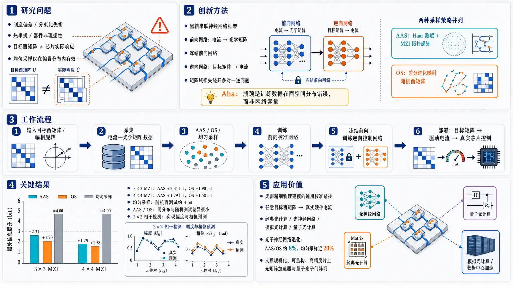
研究问题大规模可编程光子集成处理器中，MZI 网格受制造偏差、分束比失衡、热串扰和器件非理想性影响，导致“目标酉矩阵”与“芯片实际光学响应”偏离；传统理想分解算法和均匀电流采样神经网络只能在偏置分布内有效，无法稳定控制完整酉空间中的任意矩阵。创新方法提出通用黑箱串联神经网络框架：先用前向网络学习“电流→光学矩阵”的硬件响应，再冻结前向网络，用逆向网络学习“目标矩阵→电流”，在矩阵域计算损失以绕开多电流对应同一光学响应的多对一逆问题。Aha 点是发现真正瓶颈不是网络容量，而是训练数据在酉空间分布错误，并用两种采样策略修正：AAS 按 Haar 测度和 MZI 拓扑位置生成架构感知电流分布，OS 则无需物理先验，用差分进化把理想随机酉矩阵逐个映射到芯片电流。工作流程输入目标酉矩阵或目标幅相旋转；先采集“相移器电流—光学矩阵”实验数据，其中电流由 AAS、OS 或均匀采样生成；训练前向校准网络拟合芯片真实响应；冻结前向网络并串接逆向控制网络，让逆向网络输出候选电流，再经前向网络重构矩阵；用目标矩阵与重构矩阵的误差训练；部署时只保留逆向网络，将目标矩阵直接转换为芯片驱动电流，实现真实光子处理器上的矩阵、幅度和相位控制。关键结果在 3×3 MZI 网格随机酉矩阵测试中，AAS 相比均匀采样提升 2.31 bit 精度，OS 提升 1.9 bit；在 4×4 网格中，AAS 提升 1.79 bit，OS 提升 1.58 bit。均匀采样在同分布测试上看似良好，但在完整酉空间随机矩阵上跌至约 4 bit；AAS/OS 在同分布与随机矩阵测试间精度差异很小，显示更强通用泛化。2×2 相干检测实验还实现了幅度与相位预测，是数据驱动黑箱模型在可编程光子电路中预测相位的实验展示。应用价值为经典光计算、光神经网络、模拟光计算和量子光计算中的可编程光子芯片提供一种无需精细物理建模的通用校准与快速控制路径，可把任意目标酉矩阵可靠映射到真实硬件电流；在光子神经网络任务中，AAS/OS 将性能退化控制在约 8%，明显优于均匀采样近 20% 的退化，有助于规模化、可重构、高精度的片上光矩阵加速器和量子光子门阵列。第一部分：核心概览 (Overview)
可编程光子集成处理器的规模化受限于校准与控制：器件非理想性、热串扰、制造偏差会使目标酉矩阵与实际光学响应偏离。该工作提出一种通用黑箱串联神经网络框架，把硬件响应学习与逆向控制分离，并通过两种新数据生成策略——Architecture-Aware Sampling, AAS 与 Optimized Sampling, OS——解决传统均匀电流采样导致的训练分布偏置。3×3 与 4×4 MZI 网格实验显示，在随机酉矩阵测试上较均匀采样提升约 1.6–2.3 bit 精度；同时扩展到 2×2 相干检测，实现幅度与相位控制。其地位在于把神经网络光子校准从“分布内拟合”推进到面向全酉空间的通用控制。
---
第二部分：结构化快速回顾
《Universal Neural Network Based Calibration and Control of Programmable Classical and Quantum Photonic Integrated Processors》（None，）
背景
可编程光子集成电路依赖 MZI 网格实现酉线性变换，服务于量子计算、光神经网络、模拟光计算、微波光子学等任务。随着系统维度增加，局部器件误差、分束比失衡、热串扰会在网络中累积，导致全局矩阵实现精度下降。传统分解算法假设理想元件，难以处理真实芯片非理想性。
方法
采用串联神经网络 Tandem Neural Networks, TNNs：先训练前向网络学习“电流→矩阵”的校准映射，再冻结前向网络并训练逆向网络学习“目标矩阵→电流”的控制映射。针对传统均匀电流采样造成的酉空间偏置，提出两种数据策略：基于 Haar 测度与芯片拓扑的 AAS，以及无需物理先验、利用差分进化搜索电流的 OS。
结果
在 3×3 处理器上，AAS 相比均匀采样在随机酉矩阵上提升 2.31 bit，OS 提升 1.9 bit。在 4×4 处理器上，AAS 提升 1.79 bit，OS 提升 1.58 bit。均匀采样在训练分布内表现可观，但在全酉空间随机矩阵上精度下降至约 4 bit。AAS/OS 在分布内与随机矩阵上精度差异较小，体现更强泛化性。
讨论
核心问题不是神经网络容量不足，而是训练数据分布错误。均匀采样电流不会均匀覆盖酉群，而会偏向带状酉矩阵。TNN 解决多电流配置对应同一光学响应的多对一逆问题，AAS/OS 解决训练数据不能代表目标酉空间的问题。
局限
主要瓶颈是实验数据采集速度。当前电子读出系统限制每个矩阵测量时间约 0.54 s（3×3）与 0.72 s（4×4），导致 AAS 数据采集需 45 h / 300 h，OS 需 162 h / 1600 h。该成本为一次性校准成本，可通过高速控制电子、GHz 电光调制器和迁移学习降低。
结论
黑箱串联神经网络结合合理采样策略，可实现可编程光子处理器的通用校准与控制。该框架在经典光计算与量子光计算中均适用，并首次实验展示了数据驱动黑箱模型对可编程光子电路中相位的预测能力。
---
第三部分：逐章节冷凝解析 (Section-by-Section Condensing)
Abstract
- Universal calibration and control problem
可编程光子集成电路的规模化核心瓶颈是高效校准与控制，尤其面向量子与经典光计算处理器。摘要开宗明义指出，*"Efficient calibration and control of programmable photonic integrated circuits are fundamental for scaling quantum and classical optical computing processors."* 该问题直接关联大规模 MZI 网格能否稳定实现目标线性变换。
- Architecture-agnostic neural models are attractive but biased
神经网络模型具备架构无关性，但既有方法受两类问题限制：一是控制信号集合到光学响应的多对一映射，二是来自均匀电流采样的训练数据偏置。摘要明确指出，*"existing approaches suffer from limited learning and generalization capabilities due to the many-to-one mapping problem between sets of control signals and optical responses, and biased training datasets derived from uniform current sampling."*
- Tandem neural networks plus two sampling strategies
解决方案由串联神经网络与两种数据生成策略组成：基于 Haar 测度原则的架构感知采样 AAS，以及利用差分进化的优化采样 OS。关键表述为：*"we propose a universal calibration and control framework employing tandem neural networks combined with two novel data generation strategies: architecture-aware sampling based on Haar measure principles, and optimized sampling, a physics-agnostic approach utilizing differential evolution."*
- Experimental validation on 3×3 and 4×4 coherent MZI meshes
实验对象包括 3×3 与 4×4 相干 MZI 网格。摘要写明：*"We experimentally validate these methods on 3 × 3 and 4 × 4 coherent MZI meshes"*，并强调这些方法能处理既有工作的采样偏置：*"demonstrating that our approach addresses the sampling bias inherent in previous works."*
- Approximately two bits of precision improvement
在随机酉矩阵测试中，该方案较标准均匀采样基线提升约 2 bit。摘要给出直接性能结论：*"When evaluated using random unitary matrices, our solution outperforms standard uniform sampling baselines by ∼2 bits of precision."*
- Extension to coherent detection and photonic neural networks
框架不局限于强度或平方模矩阵，还扩展到相干检测，能控制幅度与相位。摘要指出：*"we experimentally extend the application of this framework to coherent detection, achieving precise control over both amplitude and phase, and validate its impact on photonic neural network tasks."*
---
1 Introduction
- Programmable PICs as dynamically reconfigurable optical processors
可编程光子集成电路是能在芯片上动态调控光传播的系统，基本调谐单元通常为 Mach-Zehnder interferometers, MZIs。关键定义为：*"Programmable photonic integrated circuits (PICs) are on-chip optical systems that precisely manipulate light and whose response can be dynamically controlled."* MZI 通过两条光路干涉实现光场调控：*"This reconfigurability is enabled by tunable building blocks, most commonly Mach-Zehnder interferometers (MZIs), which steer light via interference between distinct optical paths."*
- Linear transformations underpin many photonic applications
可编程 PIC 可实现线性变换，是多个应用方向的共同基础，包括量子计算、AI、组合优化、矩阵求逆、光模式处理、微波光子学和模拟光计算。原文列举：*"Programmable PICs can implement linear transformations, which are fundamental to quantum computing, artificial intelligence, combinatorial optimization, matrix inversion, optical mode processing, microwave photonics, and analog photonic computing."*
- MZI cascades implement photonic unitary transformations
光子酉线性变换通过多个带相移器的 MZI 级联实现，典型布局为三角形或矩形。原文为：*"Photonic unitary linear transformations are implemented by cascading multiple MZIs, each with phase shifters, arranged in a planar configuration."* 与 *"Typically, these MZIs are arranged in triangular or rectangular layouts."*
- Scaling requires precise calibration and control
系统维度升高后，局部元件失配会通过网络传播并损害全局性能。原文明确指出：*"Scaling these systems for real-world applications requires precise calibration and control of their constituent building blocks."* 机制为：*"as system dimensionality increases, mismatches in local components propagate through the network, degrading global performance."*
- Calibration maps electrical drive to optical response
校准 calibration 的任务是建立电压或电流与光学响应之间的关系。关键定义为：*"Calibration establishes the relationship between the voltages or currents applied to the phase actuators and the resulting optical response."* 精确校准还需要逐个 MZI 表征并处理寄生效应和串扰：*"Accurate calibration requires sequential characterization of each MZI in the circuit, including measurement of individual transfer functions while accounting for the parasitic effects and crosstalk from adjacent components."*
- Control maps target unitary matrices to phase settings
控制 control 的任务是确定实现目标酉矩阵所需相位。原文定义为：*"Control consists of determining the set of phases required to implement a given unitary matrix."* 标准分解算法假设理想元件，无法纳入制造偏差：*"standard decomposition algorithms for linear processors assume ideal components and do not account for fabrication-induced deviations."*
- Nonideal beam splitters and thermal crosstalk cause exponential degradation
制造偏差导致 MZI 分束比失衡，热串扰进一步造成实际响应偏离目标操作。原文写道：*"These errors, combined with other undesired effects like thermal crosstalk, produce system responses that differ from the intended target operation."* 且误差随规模指数增长：*"This difference has been shown to increase exponentially with circuit size, significantly reducing accuracy in tasks such as optical neural networks and quantum computing."*
- Black-box neural framework as architecture-independent route
研究目标是构建通用黑箱神经网络框架，实验展示可编程光子网格的校准与控制。原文概括为：*"Here, we present a universal, black-box neural network framework and experimentally demonstrate the calibration and control of programmable photonic meshes."*
- Uniform current sampling fails to generalize
传统均匀电流采样无法有效泛化，尤其不能覆盖真实任务所需的酉空间分布。原文直接给出问题判断：*"We show that conventional methods based on uniform current sampling fail to generalize effectively."*
- Haar initialization and differential evolution are the two remedies
采样策略包括基于 Haar 初始化的随机酉变换，以及差分进化这一无梯度优化算法。原文为：*"we introduce improved sampling strategies leveraging Haar initialization, a uniformly random unitary transformation, and differential evolution, a gradient-free optimization algorithm that iteratively mutates and selects candidate solutions."*
- Prior hardware-aware correction increases calibration complexity
既有硬件误差校正把 MZI 非理想分束器行为纳入控制阶段，但需要单独表征误差，增加校准复杂度。原文为：*"hardware error-correction techniques incorporate the nonideal behavior of Mach-Zehnder interferometer beam splitters directly into the control stage."* 与 *"individually characterizing these errors introduces complexity into the calibration process."*
- Redundant MZI architectures trade robustness for loss and crosstalk
冗余可调 MZI 能缓解缺陷，但代价是更多控制信号、更高插入损耗和更强热串扰风险。原文指出：*"Alternative architectural approaches introduce redundant tunable MZIs within the basic building blocks to mitigate these imperfections, increasing the number of control signals, insertion losses, and susceptibility to thermal crosstalk."*
- Self-configuring methods are accurate but slow
自配置算法通过迭代最小化损失函数补偿硬件退化，但计算量大、矩阵快速更新能力不足。原文判断为：*"While self-configuring methods inherently compensate for hardware degradation by iteratively minimizing a loss function, they are computationally demanding and lack the agility required for fast matrix updates."*
- Clear-box and grey-box neural methods still need optimization loops
数据驱动策略包括需精确误差建模的 clear-box 虚拟副本和利用架构先验的 grey-box 神经网络，但精准控制仍需二级优化阶段，继承自配置算法的速度与规模限制。原文为：*"achieving precise chip control still requires coupling the neural network with a secondary optimization stage, inheriting the scalability and speed limitations of self-configuring algorithms."*
- Black-box models capture nonidealities without physical prior knowledge
架构无关黑箱模型可在无物理先验情况下捕获硬件非理想性。原文指出：*"architecture-agnostic black-box models can capture hardware nonidealities without prior physical knowledge."*
- Direct FNN control suffers from many-to-one ambiguity
直接用前馈神经网络从矩阵预测控制信号会遇到多对一映射问题：多个相位配置可产生相同光学响应。原文为：*"Direct FNN-based control has been proposed, but this approach suffers from the many-to-one mapping problem, where multiple phase configurations yield identical optical responses."* 结果是训练收敛差且严重依赖数据：*"leading to poor training convergence and severe data-dependency."*
- Tandem neural networks regularize inverse control
TNN 通过前向网络建模硬件响应、逆向网络预测控制相位，起到正则化作用。原文为：*"By coupling a forward network, which models the hardware response, with an inverse network, which predicts the required control phases, this configuration acts as a regularizer."* 作用是保证唯一且数学一致的解：*"It ensures the learning of unique, mathematically consistent solutions, enabling efficient, calibration-aware control of MZI meshes."*
- Uniform current datasets are the hidden flaw in prior TNN studies
既有 TNN 研究共同局限是训练数据通过均匀采样相移器电流生成。原文指出：*"these studies share a significant limitation: the training dataset used for both forward and inverse networks are generated by uniformly sampling the currents applied to the phase actuators."*
- Uniform current sampling creates skewed matrix distributions
在相干网格中，均匀电流采样产生偏斜的酉矩阵分布。原文为：*"In coherent meshes, this sampling method produces skewed distributions of the resulting unitary matrices."* 过去未显现，是因为测试集来自同一偏置分布：*"This issue is not apparent in prior simulation or experimental results because the trained models are evaluated on test sets drawn from the same distribution as the training set."*
- Universal control requires accuracy over all unitary matrices
通用模型必须能对整个酉空间中的矩阵给出准确控制设置。原文为：*"A universal model, however, must predict accurate control settings for all matrices in the unitary space."* 随机矩阵分布通常不同于均匀电流采样得到的训练分布：*"which typically follow a distribution different from that produced by uniform current sampling."*
- Main experimental contribution
研究在 3×3 与 4×4 网格上用实验数据训练并部署到真实硬件，在随机酉矩阵上比均匀采样方法提升约 2 bit。原文为：*"We trained the models using experimental data from 3 × 3 and 4 × 4 meshes and deploy the trained networks to control real hardware."* 与 *"our approach outperforms previous methods by ∼2 bits of precision."*
- Beyond squared magnitudes toward amplitude and phase
既有工作多预测酉矩阵平方模；该方法进一步预测施加变换的幅度与相位，用 2×2 门和相干检测验证。原文为：*"We further extend the method beyond predicting only the squared magnitudes of unitary matrices, as in prior work, to predicting both the amplitude and phase of the applied transformation using a 2 × 2 gate with coherent detection."*
---
2 Results
2.1 Tandem Neural Networks
- Direct inverse mapping is ill-posed
单个 FNN 直接学习“矩阵元素→所需电流”面临数据密集和收敛困难，因为逆问题本质上是病态的 ill-posed。原文为：*"this method presents scalability challenges due to the data-intensive nature of the task, and the convergence problems during training stemming from the fact that the problem is ill-posed."*
- Many-to-one mapping makes inverse control multivalued
相干系统中不同电流集合可产生相同光学矩阵，因此逆映射是多值的。原文解释为：*"the relationship between current sets and optical matrices in coherent systems is many-to-one, as multiple current configurations can yield the identical optical transformation."* 结果是：*"This non-uniqueness renders the inverse mapping multivalued, creating ambiguity that hinders standard training and affect its convergence."*
- TNNs mirror autoencoders but with physical latent variables
TNN 类似自编码器，但潜在空间不是抽象表征，而是物理电流；解码器即前向模型先于编码器训练。原文为：*"TNNs employ an architecture similar to autoencoders, with the distinction that the latent space represents a physical quantity (currents) and the decoder (forward model) is trained prior to the encoder (inverse model)."*
- Two-stage training separates calibration and control
第一阶段训练前向网络学习“电流→线性变换”，即校准；第二阶段冻结前向模型，串接逆向模型并训练“目标矩阵→电流”。原文为：*"Initially, the forward network learns the direct mapping from applied currents to the resulting linear transformation (calibration)."* 随后：*"the forward model parameters are frozen, and the inverse model is cascaded with it."*
- Matrix-domain loss resolves non-uniqueness
训练时逆向网络输出候选电流，再通过冻结的前向网络重构矩阵，并最小化目标矩阵与输出矩阵之间损失。关键机制为：*"Training minimizes the loss between the input target matrix and the tandem network’s output."* 这种方式在矩阵域优化而非电流域强制拟合，因此能选择一个有效解并稳定收敛：*"optimizing in the matrix domain ensures only one of these solutons is selected and hence stable convergence of the training."*
- Deployment uses only the inverse network
训练完成后，逆向网络被解耦并独立用于系统控制。原文为：*"Upon completion of training, the encoder is decoupled and deployed independently for system control."*
---
2.2 Photonic Architecture
- Feedforward MZI meshes realize arbitrary U(N)
可调 MZI 前馈网格加一列相移器可通过三角形或矩形布局实现任意 U(N) 酉线性变换。原文为：*"Feedforward meshes of tunable MZIs combined with a column of phase shifters (PS) can realize arbitrary unitary linear transformations U(N) using triangular or rectangular layouts."*
- MZI count scales quadratically
对 N×N 变换，所需 MZI 数量为 N(N−1)/2。原文给出公式：*"For an N × N transformation, a total of N(N−1)/2 MZIs are required."* 因此 3×3 需要 3 个 MZI，4×4 需要 6 个 MZI；每个 MZI 有内外两个相位驱动，因此对应 6 与 12 个主要控制信号。
- Each building block has external and internal phase actuators
基本单元为带一个外部相位执行器和一个内部相位执行器的 MZI。原文为：*"The fundamental building block consists of an MZI equipped with an external and an internal phase actuator."* 电流记为 Iᵢⱼ，其中 j=1 为外部相移器，j=2 为内部相移器：*"j ∈ 1,2 corresponds to the external (1) or internal (2) phase shifter."*
- Thermo-optic phase-current law
热光相移器满足 θ = θ₀ + βI²，其中 θ₀ 是制造缺陷造成的初始相位偏置，β 是热光系数。原文为：*"The relationship between the current and the induced phase is given by θ = θ0 + βI2, where θ0 represents the initial phase offset arising from fabrication imperfections and β denotes the thermo-optic coefficient."*
- Calibration means estimating θ₀ and β for all actuators
器件校准的物理目标是获得所有相位执行器的 θ₀ 与 β。原文为：*"Consequently, calibrating the device entails characterizing the θ0 and β parameters for all phase actuators within the mesh."*
- Smartlight hexagonal topology implements rectangular architecture
矩形架构被映射到 iPronics Smartlight 通用光子集成处理器的六角形拓扑上。原文为：*"the rectangular architecture was implemented on a general-purpose photonic integrated processor featuring a hexagonal topology, which is integrated within the iPronics Smartlight system."*
- General-purpose mesh can define filters, delay lines, and matrix architectures
Smartlight 处理器可通过软件配置形成多种光子结构，如滤波器、可调延迟线，也可编程为矩阵运算架构。原文为：*"Such photonic processors rely on a mesh of Mach–Zehnder interferometers that can be software-configured to define a diverse range of photonic structures, such as filters or tunable delay lines."* 以及：*"matrix architectures can be programmed onto this general-purpose hardware, encompassing the optical splitting, vector encoding, linear transformation, and photodetection stages."*
---
2.3 Sampling Methods and Dataset Generation
- Dataset maps currents to optical matrices
神经网络训练需要包含“相移器电流集合→对应光学矩阵”的数据集。原文为：*"Training neural network models necessitates a comprehensive dataset mapping the sets of currents applied to the phase actuators to their corresponding optical matrices."*
- Experimental matrix characterization uses identity-state injection and photodetectors
实验中按采样电流配置相移器，通过输入 MZI 阵列注入 identity states，并在集成光电探测器上记录响应。原文为：*"phase shifters were configured according to sampled currents, and the resulting matrices were characterized by injecting identity states via the input MZI array and recording the response on the integrated photodetectors."*
- Training distribution must match target application distribution
泛化性依赖训练数据是否反映目标任务概率分布；此处目标是完整酉群 full unitary group。原文为：*"Developing a robustly generalizable model requires a training dataset that accurately reflects the probability distribution of the target application, in this case, the full unitary group."*
- Uniform current sampling is standard but flawed
既有研究常从覆盖相位区间 [0,π] 的均匀分布采样电流。原文为：*"Prior studies have typically generated datasets by sampling currents from a uniform distribution that covers the corresponding phase range [0,π]."*
- Uniform phase/current sampling does not produce Haar-random unitaries
在相干矩形或三角形架构中，均匀电流或相位采样不能在酉空间产生均匀分布。原文为：*"uniform sampling of currents (or phases) in coherent architectures, whether rectangular or triangular, fails to yield a uniform distribution over the unitary space."*
- Bias toward banded unitary matrices
均匀采样会把数据偏向带状酉矩阵 banded unitary matrices，导致模型只看到酉群受限子空间。原文为：*"Instead, this method inherently biases the generated data toward banded unitary matrices."* 与 *"models are exposed to a restricted subspace of the unitary group."*
- Generalization failure appears on arbitrary random unitaries
当推理任意随机酉矩阵，尤其是落在欠采样区域的矩阵时，准确率显著下降。原文为：*"accuracy degrades significantly when inferencing arbitrary random unitary matrices residing in part of the under sampled region of the unitary space."*
- Prior evaluations concealed the bias
该缺陷此前被忽视，是因为测试集通常与训练集来自同一偏置分布。原文为：*"This limitation has been largely overlooked in prior works, as evaluations frequently relied on test sets drawn from the same biased distribution as the training data."*
---
2.3.1 Architecture-Aware Sampling (AAS)
- AAS targets Haar-measure-uniform matrices
为实现酉空间中的均匀矩阵分布，即 Haar measure，MZI 电流必须服从由随机矩阵理论推导出的特定分布；外部相移器可均匀采样。原文为：*"To achieve a uniform distribution of matrices within the unitary space (Haar measure), the currents applied to the MZIs must adhere to a specific distribution derived from random matrix theory, whereas the external phase shifters may be sampled uniformly."*
- Position-dependent sensitivity index αₙₗ
电流分布由位置相关的灵敏度指数 αₙₗ 控制，该指数取决于相移器在网格中的空间位置 (n,l)。原文为：*"This MZI current distribution is governed by a sensitivity index αnl, which depends on the spatial position (n,l) of the phase shifter within the mesh."*
- AAS current formula incorporates θ₀ and β
矩形拓扑中所需电流平方为
I²ₙₗ = [2 arccos(ξₙₗ⁽¹/2αₙₗ)) − θ₀,ₙₗ] / β。原文公式为：*"I²nl = [2 arccos(ξnl1/2αnl) − θ0,nl] / β"*，其中 ξₙₗ ∼ Uniform[0,1]，β 为热光系数，θ₀,ₙₗ 为初始相位偏置。
- β is approximated from heater resistance and π-shift power
热光系数可近似为 β ≈ πR₀/Pπ。原文为：*"The coefficient β can be approximated as πR0/Pπ, with R0 being the heater resistance and Pπ the power required to induce a π phase shift."*
- Only θ₀ remains unknown
在已知或近似 β 后，未知量主要是所有初始相位偏置 θ₀,ₙₗ。原文写道：*"Consequently, the set of initial phase offsets θ0,nl constitutes the sole unknown variable."*
- Differential evolution estimates θ₀ using Wasserstein distance
θ₀ 通过差分进化算法估计；每一代生成 500 个样本，并最小化生成矩阵分布与理想酉矩阵平方模分布之间的 Wasserstein distance。原文为：*"In each generation, a batch of 500 samples was generated, and the algorithm optimized the phase offsets to minimize the Wasserstein distance between the generated matrix distribution and the ideal distribution of the square modulus of unitary matrices."*
---
2.3.2 Optimized Sampling (OS)
- OS removes topology prior dependence
AAS 有效但需要光子处理器拓扑先验，近似充当预校准阶段。OS 的动机是去除这种依赖。原文为：*"While Architecture-Aware Sampling (AAS) proves effective, it necessitates a priori knowledge of the photonic processor’s topology, effectively functioning as a pre-calibration stage."*
- OS is physics-agnostic and target-distribution driven
OS 首先定义由 N 个随机酉矩阵平方模组成的理想目标分布。原文为：*"This approach initiates by defining an ideal target distribution comprising the squared moduli of N randomly generated unitary matrices."*
- Differential evolution maps each target matrix to hardware currents
对合成数据集中每个目标矩阵，差分进化优化硬件驱动电流，使实验矩阵与目标矩阵相关性损失最小。原文为：*"for each element in this synthetic dataset, a differential evolution algorithm optimizes the set of driving currents required to experimentally realize the specific target matrix on the hardware by minimizing the correlation between the experimental and target matrices."*
- OS iterates until complete target dataset is mapped to chip
OS 对整个目标数据集逐个搜索电流配置，直到所有目标矩阵都映射到芯片。原文为：*"This process is iterated until the complete target dataset is successfully mapped to the chip."*
---
2.4 Model training and evaluation
3x3 Processor
- Dataset size and split
3×3 处理器最大训练数据集为 13,000 个样本。数据效率研究使用从 1,000 到 13,000 的子集，步长 1,000；每个子集按 70%/15%/15% 划分训练、验证和测试。原文为：*"the available training dataset comprised a maximum of 13000 samples"*，以及 *"subset sizes ranging from 1000 to 13000 in increments of 1000"*，并且 *"Each subset was divided into 70% for training, 15% for validation, and 15% for testing."*
- Ten independent runs per configuration
每种配置训练 10 次独立运行以增强统计稳健性。原文为：*"For statistical robustness, each configuration was trained over 10 independent runs."*
- All sampling strategies converge after about 6000 samples
Uniform、AAS、OS 三种策略在测试 MSE 上都趋向于在 6000 个训练样本后收敛，但 OS 需要更大数据集。原文为：*"all three strategies tended to converge beyond 6000 training samples, although the OS required a larger dataset to reach convergence compared to the Uniform and AAS approaches."*
- Experimental validation uses two 500-point test sets
训练后模型在真实硬件上验证，使用两个数据集：一个与训练分布匹配的 500 点集合，一个包含 500 个随机生成酉矩阵的集合。原文为：*"This evaluation utilized two distinct datasets: a distribution-matched set of 500 points ... and a set of 500 randomly generated unitary matrices."*
- Bit precision metric
实验精度用 bit precision 衡量：
Pbit = log₂[(max(w) − min(w))/σε]。原文公式为：*"experimental bit precision calculated as Pbit = log2((max(w) − min(w))/σε)."*
- Uniform sampling collapses on random unitaries
AAS 和 OS 在分布匹配与随机酉矩阵两类测试中都稳健；均匀采样在随机矩阵上显著退化。原文为：*"while the AAS and OS techniques demonstrated robust performance across both scenarios, the uniform sampling approach suffered significant degradation when evaluated on random matrices."*
- AAS improves by 2.31 bits, OS by 1.9 bits
3×3 最佳情况下，AAS 在随机矩阵上较均匀采样提升 2.31 bit，OS 提升 1.9 bit。原文为：*"our AAS solution yielded a precision improvement of 2.31 bits on random matrices compared to previously proposed neural network solutions based on uniform sampling, while the OS solution provided a 1.9 bit improvement."*
---
4x4 Processor
- Dataset size is 90,000 samples
4×4 处理器数据集包含 90,000 个样本。原文为：*"For the 4 × 4 processor, the dataset consisted of 90000 samples."*
- Digital twin accelerates AAS and OS data generation
为缓解控制电子延迟，构建了包含实验校准参数的数字孪生，用于执行 AAS 和 OS 协议并获得生成数据集所需电流；随后这些电流施加到真实芯片以获得最终实验数据。原文为：*"we developed a digital twin of the photonic processor."* 与 *"This simulation environment, incorporating experimentally derived calibration parameters, was utilized to execute the Architecture-Aware and Optimized Sampling protocols and obtained the required currents to generate the datasets."*
- Validation and testing remain hardware-based
神经网络验证与测试直接在物理硬件上完成，避免仅以仿真结果支撑结论。原文为：*"The validation and testing of the neural network models were also performed directly on the physical hardware."*
- Training subsets and splits
4×4 模型从 40,000 样本开始训练，步长 10,000；同样按 70%/15%/15% 划分，并每种配置进行 10 次独立训练。原文为：*"Models were trained on data subsets starting from 40000 samples in increments of 10000."*，*"Each subset was divided into 70% for training, 15% for validation, and 15% for testing."*，*"each configuration underwent 10 independent training runs."*
- Uniform sampling has lowest numerical MSE but poor universal control
4×4 中，均匀采样得到最低数值 MSE，AAS 优于 OS；但硬件 bit precision 显示，均匀采样在随机矩阵上仍出现严重退化。原文为：*"the AAS method consistently outperformed OS, whereas uniform sampling yielded the lowest numerical MSE."* 与 *"experimental validation in terms of bit precision ... mirrors the trends observed in the 3 × 3 case."*
- AAS and OS improve random-unitary precision by 1.79 and 1.58 bits
4×4 最优 AAS 和 OS 模型分别较均匀基线在随机矩阵上提升 1.79 bit 与 1.58 bit。原文为：*"the optimal AAS and OS models achieved precision improvements of 1.79 and 1.58 bits, respectively, over the uniform baseline on random matrices."*
- Small precision gap indicates universality
AAS/OS 在分布匹配集与随机矩阵集上的精度偏差很小，说明泛化性强。原文为：*"the minimal deviation between the precisions obtained on the distribution-matched set and the randomly generated matrices highlights the universality and superior generalization capability of our proposed solutions."*
---
2.5 Analog Programmable-Photonic and Quantum Computing
- Analog and quantum photonic computing require amplitude and phase
模拟可编程光计算与光量子计算需要实现信息单元的数学旋转，检测阶段不能只处理光功率，还必须处理信号幅度与相位。原文为：*"Analog programmable-photonic computing and photonic quantum computing rely on the implementation of gates for the mathematical rotation of information units."* 与 *"the detection stage ... necessitates the processing of not only optical power but rather signal amplitude and phase."*
- 2×2 universal gate with coherent detection
通用性验证使用 2×2 universal gate 与相干检测系统。原文为：*"we evaluated its use on a 2 × 2 universal gate employing a coherent detection system."*
- Dataset size and split
2×2 门数据集包含 400 个样本，按 70% 训练、15% 验证、15% 测试划分。原文为：*"The dataset comprised 400 samples, partitioned into 70% for training, 15% for validation, and 15% for testing."*
- Inputs include internal and two external phase-shifter currents
每个样本包含内部 MZI 相移器和输入/输出两个外部相移器的驱动电流。原文为：*"Each sample contained the driving currents for the internal MZI phase shifter and the two external phase shifters at the input and output."*
- Targets are Bloch-sphere rotation angles θ and ϕ
目标是预测单位半径 Bloch 球上施加到光学状态的旋转角 θ 与 ϕ。原文为：*"The objective was to predict the rotation angles θ and ϕ imparted to the optical state on a unit-radius Bloch sphere."*
- Excellent agreement between target and predicted rotations
测试集对 θ 和 ϕ 的预测与目标旋转高度一致。原文为：*"The test set predictions for θ and ϕ ... demonstrate a excellent agreement between the target and predicted rotations."*
- First experimental black-box phase prediction demonstration
该实验被定位为首个在可编程光子电路中用数据驱动黑箱模型预测相位的实验展示。原文为：*"To the best of our knowledge, this constitutes the first experimental demonstration of data-driven black-box models for phase prediction in programmable photonic circuits."*
---
2.6 Photonic Neural Networks
- Photonic processors as neural-network matrix accelerators
光子处理器可作为神经网络推理中的矩阵加速器。原文为：*"Another promising application of photonic processors is their use in neural networks, particularly as matrix accelerators during inference."*
- Spiral dataset experiment directly implements weights on chip
训练了一个四层前馈神经网络处理 spiral dataset；不同采样技术得到的最佳模型权重矩阵被部署到光子处理器上，与测试集性能比较。原文为：*"we trained a four-layer feedforward neural network using a spiral dataset"*，以及 *"The weight matrices of the best models for each sampling technique were implemented on the photonic processor to compare their performance on the test set."*
- AAS/OS degradation is 8%, uniform nearly 20%
相比 32-bit 精度数字模型，AAS 和 OS 的性能退化限制在 8%，均匀采样退化接近 20%。原文为：*"the performance degradation using the AAS and OS methods is limited to 8% when compared to a 32-bit precision digital model, whereas uniform sampling results in a degradation of nearly 20%."*
- CIFAR-10 evaluation uses ResNet-50, Inception-V3, MobileNet-V3
进一步训练 ResNet-50、Inception-V3 与 MobileNet-V3，使用 CIFAR-10 数据集，并把矩阵精度降至各采样策略实测 bit precision 对应水平进行测试。原文为：*"we trained three architectures, ResNet-50, Inception-V3, and MobileNet-V3, using the CIFAR-10 dataset and compared their test set accuracies when the matrices were reduced to the precision levels obtained with the studied sampling techniques."*
- Uniform sampling consistently gives lowest neural-network accuracy
CIFAR-10 结果中，均匀采样相对全精度基线始终表现最低；AAS 与 OS 退化较小且相近。原文为：*"uniform sampling consistently exhibits the lowest performance compared to the full-precision baseline."* 与 *"In contrast, AAS and OS demonstrate similar performance with minimal degradation."*
---
3 Discussion
- TNN addresses many-to-one control ambiguity
相干架构中不同控制信号集合可产生相同光学响应，因此训练神经网络存在额外计算负担。原文为：*"In coherent architectures, distinct sets of control signals can yield identical optical responses, creating a many-to-one problem."* 解决方式为 TNN：*"we propose employing tandem neural networks, a solution previously validated in the field of inverse design for photonic structures."*
- TNN separates calibration phase and control phase
串联神经网络训练被分成两个阶段：校准网络学习“电流→光学响应”，控制网络学习“光学响应→电流”。原文为：*"The use of tandem neural networks divides the training into two phases: first, a network learns the mapping between the applied currents and the optical response (calibration phase), subsequently, a second network is cascaded with the calibration network to learn the currents required for a given optical response (control phase)."*
- Uniform sampling does not represent unitary-space matrix distribution
既有均匀采样产生偏斜光学响应，不能代表酉空间矩阵元素分布。原文为：*"Previous works rely on the use of a uniform sampling technique, which, in the case of photonic processors, yields a skewed optical response that does not represent the distribution of matrix elements in the unitary space."*
- AAS uses random matrix theory and Wasserstein minimization
AAS 源于随机矩阵理论，结合相干架构的电流-相位关系，并用差分进化最小化芯片矩阵与理想酉空间分布之间的 Wasserstein 距离。原文为：*"The first, Architecture-Aware Sampling (AAS), is derived from random matrix theory."* 与 *"determine the required parameters using a differential evolution algorithm that minimizes the Wasserstein distance between the on-chip generated matrices and the ideal distribution in the unitary space."*
- OS is prior-free target-to-current optimization
OS 无需系统先验，先定义理想目标酉矩阵集合，再用差分进化逐个找实验生成这些矩阵所需电流。原文为：*"The second sampling technique, Optimized Sampling (OS), requires no prior knowledge of the system and is based on defining an ideal set of target unitary matrices."* 与 *"a differential evolution algorithm is employed to find the required currents to generate each of these matrices experimentally."*
- Distribution-matched tests can overestimate uniform sampling
在与训练分布相同的测试集上，均匀采样表现可与 AAS/OS 相当，4×4 中甚至更优。讨论给出具体 bit precision：3×3 为 6.3 uniform / 6.9 AAS / 6.0 OS；4×4 为 6.15 / 5.8 / 5.35。原文为：*"uniform sampling yielded results comparable to, and in the 4 × 4 case superior to, the proposed approaches, achieving bit precisions of 6.3 (uniform), 6.9 (AAS), and 6.0 (OS) for the 3 × 3 processor, and 6.15, 5.8, and 5.35, respectively, for the 4 × 4 processor."*
- Random-unitary tests reveal uniform sampling failure
在完整酉空间随机采样矩阵上，均匀采样模型精度在两个处理器上均跌至约 4 bit；AAS/OS 保持一致性能。原文为：*"regarding the second test set, which comprised matrices randomly sampled from the full unitary space, the performance of the uniform sampling models dropped to approximately 4 bits for both processors."* 与 *"the AAS and OS-based models maintained consistent performance."*
- Main experimental bottleneck is electronic readout bandwidth
当前实验设置主要限制来自电子读出带宽。3×3 与 4×4 每个矩阵测量吞吐分别约 0.54 s 与 0.72 s。原文为：*"A primary limitation of the current experimental setup lies in the bandwidth constraints of the electronic readout system."* 与 *"limits the measurement throughput to approximately 0.54 s and 0.72 s per matrix for the 3 × 3 and 4 × 4 processors, respectively."*
- Data acquisition times are long but one-time
AAS 数据采集需 45 h（3×3）与 300 h（4×4）；OS 需 162 h（3×3）与 1600 h（4×4）。原文为：*"the data acquisition for the Architecture-Aware approach required 45 h (3 × 3) and 300 h (4 × 4), while the Optimized approach extended to 162 h (3 × 3) and 1,600 h (4 × 4)."* 该成本为一次性校准开销：*"this extensive data acquisition represents a one-time calibration expense."*
- High-speed electronics could reduce acquisition by 1000×
若在相移器热时间常数内操作，即 300 μs 上升/下降时间，采集时间可减少 1000×。原文为：*"By operating within the thermal time constant of the phase shifters (300 μs rise/fall time), the acquisition time could be reduced by a factor of 1000."*
- GHz electro-optic actuators could further reduce time
GHz 电光执行器能进一步大幅缩短采集时间。原文为：*"the integration of high-speed electro-optic actuators (operating in the GHz regime) would drastically further reduce these durations."*
- Transfer learning can reduce dataset size
未来可通过迁移学习显著减少所需数据量。原文为：*"the required dataset size can be substantially decreased in future iterations by employing transfer learning techniques."*
- 2×2 coherent detection shows phase predictability
相干检测 2×2 universal gate 实验展示可预测光学相位，对 θ 与 ϕ 旋转几乎完美。原文为：*"Beyond intensity detection, we demonstrate that our proposal can predict the optical phase using a 2 × 2 universal gate with coherent detection."* 与 *"This setup yielded near-perfect prediction of rotations for a 2-D unit of information in terms of θ and ϕ angles."*
- Photonic neural network utility is experimentally and numerically validated
Spiral 数据集权重矩阵直接上芯片生成，AAS/OS 精度退化小，均匀采样性能下降超过 20%。原文为：*"the AAS and OS methods exhibit minimal accuracy degradation, the uniform sampling approach suffers from a performance drop exceeding 20%."*
- Inception-V3 shows strong sensitivity to poor sampling precision
CIFAR-10 中 Inception-V3 上差距尤其大：AAS/OS 相比全精度基线仅约 7% 退化，而均匀采样超过 40%。原文为：*"particularly in the Inception-V3 architecture, where our solution shows a degradation of only ≈7% compared to the full-precision baseline, whereas uniform sampling results in a degradation exceeding 40%."*
- Claimed first universal neural-only solution
相比既有纯神经网络校准/控制研究，该方案被定位为首个能在系统上实现任意酉矩阵的通用方案，并展示架构独立性与复权重预测能力。原文为：*"to the best of our knowledge, our work is the first to provide a universal solution capable of implementing any unitary matrix on the system."* 与 *"we have demonstrated architecture independence and complex-valued weight prediction capabilities."*
- Comparable model/data scale with higher on-chip accuracy
相较文献，方案在网络参数和数据集规模相当情况下实现更高片上准确率。原文为：*"our solution achieves higher on-chip accuracies than prior methods while maintaining a comparable number of network parameters and dataset sizes."*
- Literature comparison numbers
表 1 中，本工作 3×3 校准与控制使用 6 个控制信号、8000 数据集、1.2×10⁶ 参数、片上 6.4 bit 精度，并标记为 Universal Solution: Yes 与 Complex Weight Prediction: Yes。4×4 使用 12 个控制信号、45000 数据集、5.0×10⁶ 参数、片上 5.6 bit 精度。原文表格列项包括：*"This work Calibration and Control 3 × 3 6 8000 1.2 × 10⁶ 6.4 Yes Yes"* 与 *"This work Calibration and Control 4 × 4 12 45000 5.0 × 10⁶ 5.6 Yes Yes."*
---
4 Methods
4.1 Experimental set up
- Smartlight processor used for 3×3 and 4×4 experiments
3×3 与 4×4 数据生成使用 Smartlight 处理器、原生控制电子学和集成光电探测器。原文为：*"Data generation for the 3 × 3 and 4 × 4 experiments was performed using the Smartlight processor, employing its native control electronics and integrated photodetectors."*
- Laser source parameters
光源为 Aerodiode 连续波激光器，工作波长 1550 nm，输出功率 10 dBm。原文为：*"The optical source consisted of a continuous-wave (CW) laser (Aerodiode) operating at 1550 nm with an output power of 10 dBm."*
- 2×2 gate chip platform
2×2 门实验使用 AMF SiP 代工的 SOI 芯片，包含热光相移器与集成 Ge 光电探测器。原文为：*"The 2 × 2 gate experiment utilized a silicon-on-insulator (SOI) chip fabricated by the AMF SiP foundry, featuring thermo-optic phase shifters and integrated Germanium (Ge) photodetectors."*
- Current sources and detector readout
2×2 器件由 Qontrol 多通道电流源驱动，光电探测器输出由四台 Keithley 2400 SMU 采集。原文为：*"This device was driven by multi-channel current sources (Qontrol Ltd.), while the photodetector outputs were acquired using four Keithley 2400 Source Measure Units (SMUs)."*
- Training hardware
所有计算训练在 NVIDIA GeForce RTX 2070 SUPER GPU 上执行。原文为：*"All computational training was executed on an NVIDIA GeForce RTX 2070 SUPER GPU."*
---
4.2 Derivation of the AAS current distribution
- Uniform phase sampling violates Haar measure
在相干可编程光子处理器中，均匀采样相位不会产生酉矩阵空间的均匀分布。原文为：*"Uniform sampling of the phases in a coherent programmable photonic processor does not yield a uniform distribution over the space of unitary matrices (Haar measure)."*
- MZI transmission coefficient distribution
采样分布从 MZI 传输系数推导：
tₙₗ = ξₙₗ⁽¹/αₙₗ)。原文为：*"we derive the expression from the transmission coefficient of the Mach-Zehnder Interferometer (MZI), given by: tnl = ξnl1/αnl."* 其中 αₙₗ 为位置相关灵敏度指数，ξₙₗ ∈ [0,1] 均匀分布：*"αnl is a position-dependent sensitivity index within the mesh, and ξnl is a random variable uniformly distributed in the interval [0,1]."*
- Required phase shift follows arccos law
根据 MZI 转移矩阵，所需相移为
θₙₗ = 2 arccos(ξₙₗ⁽¹/2αₙₗ))。原文公式为：*"the required phase shift is defined as: θnl = 2 arccos(ξnl1/2αnl)."*
- Thermo-optic current distribution
将热光关系 θₙₗ = θ₀,ₙₗ + βI²ₙₗ 代入，可得到
I²ₙₗ = [2 arccos(ξₙₗ⁽¹/2αₙₗ)) − θ₀,ₙₗ]/β。原文为：*"By incorporating the constitutive relationship of thermo-optic phase shifters ... we obtain the required current distribution"*，随后给出公式：*"I²nl = [2 arccos(ξnl1/2αnl) − θ0,nl] / β."*
---
4.3 Training of the models
- Training section is truncated in the provided source
可用论文内容仅保留标题与开头：*"The training strategy employed a tandem network"*。结合 2.1、2.4 与 Discussion 中完整描述，训练策略的确定信息包括：前向网络先训练并冻结，逆向网络与前向网络串联训练，损失定义在矩阵输出域；3×3 与 4×4 模型均进行 70/15/15 划分和 10 次独立训练；3×3 数据规模从 1,000 到 13,000，4×4 从 40,000 起以 10,000 递增。
---
第四部分：深度理解与语言支持 (Understanding & Nuance)
1. 术语解析
- Many-to-one mapping
字面是“多到一映射”。在这里不是普通非线性，而是物理冗余导致的多个电流/相位配置实现同一光学矩阵。这会让监督学习中的标签不唯一：同一个目标矩阵可对应许多电流答案，FNN 若被迫拟合某个任意标签，会出现梯度冲突与收敛困难。原文语境为 *"multiple current configurations can yield the identical optical transformation."*
- Haar measure
酉群上的自然均匀测度。普通“每个相位均匀采样”不等价于“酉矩阵均匀采样”，因为相位参数化到矩阵空间的 Jacobian 非均匀。Haar 测度强调在群运算下不变的均匀性，即随机酉矩阵没有偏向某类结构。原文语境为 *"a uniform distribution of matrices within the unitary space (Haar measure)."*
- Architecture-aware sampling
“架构感知采样”不是一般意义上的经验采样，而是利用 MZI 网格拓扑位置 (n,l) 与灵敏度指数 αₙₗ 推导电流分布。其“aware”表示采样规则显式依赖芯片网络结构，而非只看输入输出数据。
- Physics-agnostic approach
“物理无关”不是完全不使用实验硬件，而是不需要知道拓扑、相移公式、MZI 排布等物理模型。OS 只定义目标矩阵分布，再通过差分进化搜索能让芯片产生这些矩阵的电流。其优势是通用，代价是采样生成成本高。
- Bit precision
这里的 bit precision 不是 ADC 位数，也不是神经网络权重量化位宽，而是用误差标准差相对权重动态范围换算出的有效精度：
Pbit = log₂[(max(w) − min(w))/σε]。数值每提升 1 bit，大致表示误差分辨能力提升一倍。
2. 疑难查证
- 为什么均匀电流采样会失败？
热光相移器满足 θ = θ₀ + βI²，即使电流均匀，相位也不均匀；即使相位均匀，由相位到酉矩阵元素的映射也不是体积保持映射。MZI 网格的不同位置对最终矩阵元素的影响不同，靠前或靠后的 MZI 对矩阵分布的“体积权重”不同。结果是训练数据在酉空间中集中到某些区域，尤其偏向带状矩阵。模型在同分布测试集上看似准确，但遇到 Haar 随机酉矩阵时，许多目标落在训练稀疏区域，控制精度骤降。
- 为什么 TNN 能解决多对一问题？
直接逆网络学习“矩阵→电流”时，如果同一矩阵在数据中对应多个电流标签，监督损失会把网络推向这些电流的平均值，而平均电流未必对应正确矩阵。TNN 改为让逆网络输出某组电流，再由已训练前向网络计算对应矩阵，损失只比较矩阵是否正确。这样，任意一个能实现目标矩阵的电流解都可接受，训练目标从“匹配某个任意标签”变成“产生正确物理响应”。
- AAS 与 OS 的本质区别
AAS 是“用理论修正采样分布”：知道矩形 MZI 网格参数化如何生成 Haar 分布，因此直接按推导公式采样电流，未知偏置用差分进化估计。OS 是“用优化反求训练集”：先生成理想 Haar 随机目标矩阵，再逐个用差分进化找硬件电流。AAS 更高效但需要拓扑先验；OS 更通用但实验搜索成本更高。
- 为什么 4×4 中均匀采样 MSE 最低却不是最好？
该 MSE 是在同一偏置分布测试集上计算的。若训练集和测试集都来自均匀电流采样，模型只需在偏置子空间内拟合，MSE 可以很低。但通用控制的目标是任意酉矩阵，随机酉矩阵分布与均匀电流分布不同。真正重要的是 random-unitary hardware bit precision，而非 distribution-matched MSE。
---
第五部分：创新评估与关联 (Synthesis & Novelty)
1. 创新性判断
- 从“神经网络校准”推进到“通用酉控制”
近年神经网络光子校准工作多集中于校准，或在受限测试分布上展示控制。该方案明确指出传统评估存在分布泄漏：训练和测试都来自均匀电流采样，掩盖了模型不能覆盖全酉空间的问题。创新点不只是使用 TNN，而是把评价标准改为随机酉矩阵泛化能力。
- 首次系统识别均匀电流采样偏置对控制泛化的破坏
过去 2–5 年的 FNN/TNN 光子控制方法通常默认均匀电流采样足够。该工作把误差来源定位到数据分布：均匀采样导致带状酉矩阵偏置，模型在目标酉空间欠采样区域失效。这一问题比网络架构本身更根本。
- AAS 把 Haar 测度引入实验数据生成
AAS 利用随机矩阵理论和位置相关指数 αₙₗ 直接构造接近 Haar 分布的电流采样规则，并通过差分进化估计 θ₀。这解决了“如何生成真正覆盖酉空间的训练数据”的问题，而不是训练后再优化修补。
- OS 提供物理无关的通用数据生成方案
OS 不需要拓扑、传输矩阵或相移器模型，只需目标酉矩阵集合和实验反馈。对未知或复杂可编程光子芯片，OS 提供了一条黑箱路径。这解决了前人 clear-box/grey-box 方法需要误差建模或架构先验的问题。
- 实验实现幅度与相位控制，突破强度-only 限制
许多光子神经网络或矩阵处理实验只测量平方模，无法直接控制复权重。2×2 coherent detection 实验展示对 θ 与 ϕ 的预测，证明框架可处理复值光学变换，对量子门、Bloch 球旋转、相干模拟计算更关键。
- 量化提升具有应用层意义
3×3 随机酉矩阵上 AAS 提升 2.31 bit、OS 提升 1.9 bit；4×4 上 AAS 提升 1.79 bit、OS 提升 1.58 bit。这种提升直接传导到光神经网络任务：spiral 数据集 AAS/OS 仅 8% 退化，均匀采样近 20%；Inception-V3 上 AAS/OS 约 7% 退化，均匀采样超过 40%。
- 仍未完全解决大规模数据获取问题
当前 4×4 OS 数据采集估计达 1600 h，说明通用黑箱策略的主要代价是实验数据成本。虽然高速电子与迁移学习可缓解，但从 4×4 扩展到更大规模时，样本复杂度、热漂移、长期稳定性和控制电子吞吐仍是关键挑战。
-
02
📊 含图深析
📄 摘要：作者用 SE 通道调制框架把变分量子电路嵌入扩散模型，并通过角色匹配的经典控制、多随机种子和显著性检验做公平对比，在 DDPM、latent diffusion 及 MNIST/CIFAR-10 上评估量子贡献。结果显示量子核心的平均 FID 与经典控制相当，但未见统计显著优势，同时角嵌入存在失效问题。
💡 亮点：这篇工作不再只看“量子模块有没有用”，而是严格对照经典控制。结论是量子核心未显著优于经典基线，说明量子扩散模型必须先解决可比性与嵌入失效。
📖 展开分析 + 配图
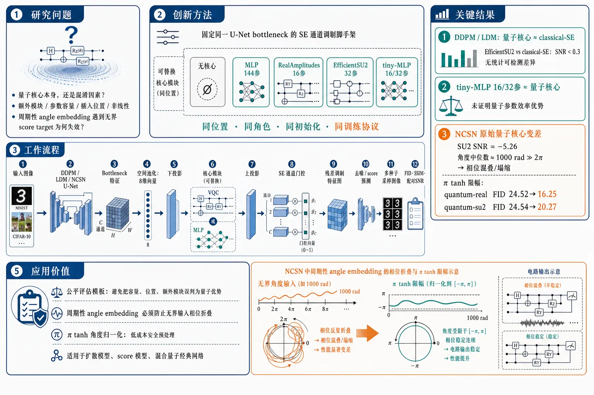
研究问题在量子线路被插入扩散模型后，性能变化究竟来自“量子核心”本身，还是来自额外模块、参数容量、插入位置和非线性等混淆因素；同时，周期性 angle embedding 在 score-based diffusion 的无界目标下为什么会失效。创新方法固定同一个 U-Net bottleneck 中的 SE 通道调制脚手架，只替换核心模块：无核心、144 参数经典 MLP、16 参数 RealAmplitudes、32 参数 EfficientSU2；再加入 16/32 参数 tiny-MLP 做参数匹配对照。Aha 点是把量子扩散模型评价从“量子增强 vs 普通 baseline”改成“同位置、同角色、同初始化、同训练协议的核心替换实验”，并把 NCSN 失败追踪到 2π 周期角度嵌入与无界 score target 的相位混叠。工作流程输入图像进入 DDPM、LDM 或 NCSN 的 U-Net；在 bottleneck 提取通道特征并空间池化成 8 维向量；经下投影后送入核心模块 VQC 或 MLP；核心输出再上投影为 SE 通道门控，残差式调制特征图；模型完成去噪或 score 预测；用多生成种子采样图像，并以 FID、SSIM、配对 SNR 比较量子核心、经典核心和无 SE baseline。关键结果在 DDPM 和 LDM 的 MNIST/CIFAR-10 上，8 比特量子核心与 144 参数 classical-SE 的 FID 几乎等价，EfficientSU2 相对 classical-SE 的 SNR 均小于 0.3，无统计可检测差异；16/32 参数 tiny-MLP 也与量子核心接近，未证明量子参数效率优势。NCSN 中原始量子核心显著变差，EfficientSU2 对 classical-SE 的 SNR 为 −5.26；诊断发现输入角度中位数约 1000 rad，远超 2π 周期，导致量子 gate 几乎塌缩。使用 π tanh 将角度限制到 −π 到 π 后，NCSN quantum-real FID 从 24.52 降到 16.25，quantum-su2 从 24.54 降到 20.27。应用价值为量子生成模型提供一套避免把容量、位置和额外模块误判为量子优势的公平评估模板；提醒所有使用周期性 angle embedding 的量子机器学习系统，若输入来自无界激活或 score 信号，必须防止相位折叠；π tanh 角度归一化可作为低成本安全预处理，用于扩散模型、score 模型和其他混合量子经典网络。第一部分：核心概览 (Overview)
该研究为量子增强扩散模型建立了严格公平的对照框架：固定 SE 通道调制脚手架，仅替换 VQC/MLP/无核心，并用多种扩散范式、数据集与多种随机种子检验。核心结论不是量子优势，而是 功能等价：8 比特模拟量子核心与同角色经典核心在 DDPM/LDM 中无显著差异；同时揭示 angle embedding 在无界 score 目标下因 2π 周期混叠而失效，并用 π tanh 归一化修复。
---
第二部分：结构化快速回顾
《Quantum Circuits in Diffusion Models: A Fair-Comparison Study and a Mechanistic Analysis of Angle-Embedding Failures》（None，）
背景
量子机器学习生成模型常把 参数化量子线路 VQC 插入 GAN、自动编码器或扩散模型，但常缺少同位置、同角色、容量受控的经典对照，导致性能提升可能来自额外参数或非线性，而非量子结构。
方法
固定一个插入 U-Net bottleneck 的 squeeze-and-excitation (SE) channel gate，仅替换核心：无 SE、144 参数经典 MLP、16 参数 RealAmplitudes、32 参数 EfficientSU2。实验覆盖 DDPM、LDM、NCSN，数据集为 MNIST、CIFAR-10，每配置用 5 个生成种子报告 FID/SSIM，并用配对 SNR 判断稳定性。
结果
在 DDPM 与 LDM 的 MNIST/CIFAR-10 上，量子核心与 144 参数经典核心 FID 接近，EfficientSU2 相对 classical-SE 的 SNR 均小于 0.3；但 16/32 参数经典 tiny-MLP 也表现相近，不能证明量子参数效率优势。NCSN 中量子核心显著变差，EfficientSU2 对 classical-SE 的 SNR = −5.26。
讨论
8 比特量子线路均由经典模拟器运行，实验只能评价 量子参数化是否是有用归纳偏置，不能检验量子计算优势。严格对照下，VQC 达到与经典核心的 functional parity，不是优越性。
局限
实验限于 8 qubits、浅层线路、两个小图像数据集、单一 bottleneck 插入点、经典 statevector 模拟；未覆盖真实 NISQ 硬件噪声、shot noise、测量延迟、连通性约束和更大规模量子线路。
结论
主要贡献是两点：一套避免把容量误判为量子性的公平评估方法；一个可迁移机制发现，即 无界输入进入周期性角度嵌入会产生 aliasing，导致量子调制器塌缩，π tanh 边界化可显著缓解。
---
第三部分：逐章节冷凝解析
Abstract
- Fair comparison replaces architectural confounding with role-matched controls
研究对象是将 variational quantum circuits (VQCs) 通过 SE channel-modulation scaffold 接入扩散模型，并用同一脚手架中的经典 MLP 做同角色对照；关键设计在于隔离量子核心贡献，而不是比较“加了模块”和“没加模块”。摘要明确写道：*"We study the integration of variational quantum circuits (VQCs) into diffusion models through a squeeze-and-excitation (SE) channel-modulation scaffold that isolates the quantum contribution."*
- Quantum cores reach comparable FID but not superiority
在 DDPM 与 latent diffusion、MNIST 与 CIFAR-10 上，两个量子核心与同角色经典 MLP 的平均 FID 接近；EfficientSU2 的配对采样种子测试未检出显著差异。原文表述为：*"both quantum cores achieve comparable mean FID to the role-matched classical control across DDPM and latent diffusion, while paired sampling-seed tests for EfficientSU2 detect no statistically significant difference."*
- Parameter reduction is local and not a proven quantum efficiency advantage
量子核心比 144 参数经典控制少 4.5–9× core parameters，但在参数匹配对照下，量子核心在四个 MNIST/CIFAR-10 比较中仅“略低”平均 FID，差异小且未做显著性检验；因此不能宣称量子参数效率优势。摘要中的限定很强：*"the experiments do not establish a quantum parameter-efficiency advantage."*
- Angle embedding failure is mechanistically identified in NCSN
NCSN score target ∝ 1/σ 无界，使角度嵌入输入远超旋转门 2π period，产生 phase aliasing，压平期望值景观并使量子调制器失效。摘要直接指出：*"the unbounded score target (∝1/σ) drives angle-embedding inputs far beyond the 2π period of the rotation gates, a phase-aliasing effect that flattens the expectation-value landscape and collapses the quantum modulator."*
- π tanh bounding resolves the failure
使用 θ ← π tanh(·) 将特征限制到 (−π, π) 非混叠域后，两个量子核心在 NCSN 中显著改善；RealAmplitudes 在单次训练运行比较中最低平均 FID，但未证明统计显著。摘要写道：*"A bounding transformation θ←π tanh(·) projects the feature space onto the non-aliasing domain (−π,π), removing the failure and substantially improving both quantum cores."*
- No quantum advantage is claimed
所有线路均在少量量子比特尺度上经典模拟，目标是评估 variational quantum parameterization as inductive bias，而非计算量子优势。摘要中的定位是：*"we characterize whether a variational quantum parameterization is a useful inductive bias under strictly matched controls, rather than claiming quantum advantage."*
---
1 Introduction
- QML generative modeling is promising but evaluation is confounded
量子机器学习已被用于自动编码器、GAN、扩散模型，但常见问题是量子增强模型对比的是普通 baseline，而非同位置、同角色、容量匹配的经典模块；因此观察到的收益可能来自额外参数或非线性。关键句为：*"a quantum-augmented model is often compared against a plain baseline without a classical module of matched capacity in the same location."*
- Few-qubit simulations cannot test computational quantum advantage
在实践使用的少量量子比特尺度上，量子线路可被经典模拟；因此实验问题不应是“是否有量子计算优势”，而应是量子参数化是否比同角色经典核心更好的归纳偏置。原文强调：*"When the quantum circuit is small enough to be classically simulable... the experiments are not designed to test computational quantum advantage."*
- The conservative design fixes the SE scaffold and swaps only the core
实验固定一个 SE modulation scaffold，仅替换核心：VQC、同角色经典 MLP 或无模块；wrapper、初始化和训练日程全部保持一致。文中写道：*"We fix a single squeeze-and-excitation (SE) modulation scaffold and vary only its core."*
- The classical control is deliberately higher-parameter
经典 MLP 核心有 144 参数，RealAmplitudes 有 16 参数，EfficientSU2 有 32 参数；因此 144 参数 MLP 是更高参数而非更弱对照。原文明确：*"a classical MLP that plays the identical role in the same scaffold... with more core parameters (144 vs. 16/32), making it a higher-parameter, not smaller, control."*
- Diffusion families offer structural diversity
同一 SE 脚手架被放入三类生成模型：DDPM、LDM、NCSN，覆盖 MNIST/CIFAR-10。引文为：*"the same scaffold can be evaluated across three structurally distinct families — denoising diffusion (DDPM), latent diffusion (LDM), and score-based generation (NCSN)."*
- Main DDPM/LDM finding is no statistically detectable difference
在 DDPM 与 LDM 上，量子核心用 4.5–9× fewer parameters within the core 匹配高参数经典控制，但没有显著胜负。原文写道：*"Across this matrix we find no statistically detectable difference."*
- Local compactness is not whole-model efficiency
核心参数差异只占约 23M 参数模型中的极小部分，不代表整体模型大小、运行时间或内存优势。原文限定：*"this efficiency is local to the modulation core, which is a tiny fraction of the full ∼23 M-parameter model."*
- NCSN failure becomes a diagnostic opportunity
唯一异常是 NCSN，失败被追踪到 periodic angle embedding 与 unbounded score target 的混叠，而非简单参数不足。关键句为：*"we trace the dominant observed failure to aliasing in the periodic angle embedding when fed the unbounded score target."*
- Four contributions are methodological and mechanistic, not architectural hype
贡献包括公平比较框架、无差异且无效率优势的结论、NCSN 角度混叠机制、避免混淆的实验规范。文中概括为：*"a rigorous fair-comparison methodology for quantum-enhanced generative models"* 与 *"a mechanistic account of when and why angle embeddings fail."*
---
2 Background
2.1 Diffusion models
- DDPM learns noise prediction in a Gaussian forward process
前向过程逐步加高斯噪声，形式为 xₜ = √ᾱₜ x₀ + √(1−ᾱₜ₎ ε，其中 ε ∼ N(0,I)；反向过程学习预测噪声 ε。原文为：*"A diffusion model defines a forward process that gradually adds Gaussian noise... and learns a reverse (denoising) process that predicts ε."*
- Score-based models learn score over multiple noise scales
NCSN 类模型不是直接预测 ε，而是学习数据密度对输入的梯度 ∇x log p(x)，并跨多个噪声尺度训练。原文写道：*"Score-based models instead learn the score ∇x log p(x) over a range of noise scales."*
- Latent diffusion moves diffusion into compressed latent space
LDM 在预训练 autoencoder 的压缩潜空间中执行扩散，降低像素空间建模负担。引文为：*"Latent diffusion runs the process in a compressed latent space."*
2.2 Variational quantum circuits and angle embedding
- VQC maps classical inputs to rotation angles and reads expectation values
VQC 用 angle embedding 将经典输入编码为旋转门角度，再经过参数化纠缠层，并读出 ⟨Zᵢ⟩ 等期望值。原文为：*"A VQC encodes classical inputs as rotation angles (angle embedding), applies parameterized entangling layers, and reads out expectation values such as ⟨Zᵢ⟩."*
- 2π periodicity is the central mathematical vulnerability
旋转门天然具有 2π 周期性；若输入尺度远大于 2π，许多数值会映射到同一或相近相位，导致 aliasing。原文直指后续机制核心：*"rotation gates are 2π-periodic, a fact central to Sec. 5."*
---
3 Method: Quantum SE Modulation with Fair Controls
3.1 The SE scaffold
- SE gate is inserted at the U-Net bottleneck
给定特征 x ∈ RB×C×H×W，先做空间池化得到 v ∈ RB×C，再投影到 n_q 维，经过核心 f_θ: Rⁿ_q → Rⁿ_q，再映射回通道门控。原文为：*"We insert a squeeze-and-excitation (SE) channel gate at the U-Net bottleneck."*
- The modulation equation makes the core the only varying computation
门控形式为 g = 1 + tanh(W↑ tanh(fθ(W↓v)))，x′ = x ⊙ g；核心 fθ 是唯一改变的对象。公式后明确：*"The only object that changes between conditions is the core fθ."*
- Zero initialization ensures identical starting networks
W↑ zero-initialized，使初始化时 g ≡ 1 且 x′ = x，因此所有变体从完全相同的未调制网络开始。原文写道：*"The up-projection W↑ is zero-initialized, so g≡1 and x′=x at initialization."*
- Residual wrapping prevents initial disruption
门控使用 1 + tanh(·) 的残差形式，初始化不改变 backbone；这避免量子/经典模块初始扰动不一致。图注强调：*"projected back through a zero-initialized W↑... and used to modulate x residually."*
3.2 The seₘₒde axis and the role-matched control
- Three seₘₒde conditions isolate the core effect
条件包括 none（无 SE，普通扩散 baseline）、classical（144 参数 MLP 核心）、quantum（16 参数 RealAmplitudes 或 32 参数 EfficientSU2）。原文列出：*"The core is one of: none... classical... quantum."*
- Classical-SE is role-matched, not parameter-matched
144 参数 MLP 与 VQC 处于同一脚手架、同一位置、同一作用；但它参数更多，因此不是同参数对照。关键句为：*"We emphasize that this comparison is role-matched, not parameter-matched."*
- Quantum compactness is local to the core
量子核心比 144 参数经典核心少 4.5–9× 参数；这只是核心内紧凑性，不自动等于模型整体效率。原文为：*"The quantum cores thus use 4.5–9× fewer core parameters than the classical control."*
- Tiny-MLP controls separate quantumness from smallness
为避免把少参数误判为量子性，后续单独检查 16/32 参数 classical tiny-MLP。原文写道：*"a parameter-matched comparison would shrink the classical core to 16/32 parameters, which we examine separately."*
3.3 Evaluation protocol
- Five generation seeds quantify sampling-noise stability
每个配置生成样本时使用 5 个 generation seeds，报告 FID 与 SSIM 的 mean ± std。原文为：*"For each configuration we generate samples under 5 generation seeds and report FID and SSIM as mean ± std."*
- Paired SNR is used as standardized effect size, not a p-value
配对比较定义 SNR = mean(Δ)/std(Δ)，属于 Cohen’s-d 家族的标准化均值差异；不是 p 值。原文写道：*"We summarize each paired comparison with an effect size SNR... a standardized mean difference... not a p-value."*
- The significance flag is conservative
对 n=5，有 t = SNR√n、df=4；阈值 |SNR|>2 对应 |t|>4.5、双侧 p≈0.01，因此非常保守。原文为：*"our flag |SNR|>2 corresponds to |t|>4.5 (two-sided p≈0.01) and is a conservative threshold."*
- Additional training seeds test initialization robustness
除生成种子外，还对两个 SE 核心追加 4 个训练种子，合计 5 个 independent training seeds，每个 checkpoint 再用 5 个生成种子评估。原文写道：*"we retrain the two SE cores under four additional seeds, for a total of five independent training seeds."*
- SSIM is treated cautiously for unconditional generation
因生成图像与真实图像没有一一对应关系，SSIM 只作为粗略结构相似度指标，主要依赖 FID。原文明确：*"SSIM is computed between arbitrarily paired generated and real images... we therefore treat it only as a coarse structural-similarity indicator and rely on FID for quality."*
---
4 Experiments
- Experimental setup fixes optimizer, training schedule, and evaluation budget
所有量子核心使用 8-qubit circuits、PennyLane default.qubit、backprop；训练 300 epochs，Adam 学习率 1e−4，batch size 64，cosine annealing，gradient clipping 1.0，EMA decay 0.9999。原文为：*"All cores use 8-qubit circuits... trained for 300 epochs with Adam (learning rate 10−4, batch size 64)... gradient clipping at 1.0, and an exponential moving average... decay 0.9999."*
- Evaluation uses standard FID/SSIM over fixed sample counts
MNIST/CIFAR-10 使用 1000 generated + 1000 real images 计算 FID/SSIM，NCSN 使用 500，采样步数 100，生成种子 5。原文写道：*"computing FID with pytorch-fid and SSIM with torchmetrics over 1000 generated and 1000 real images (500 for NCSN), using 100 sampling steps and 5 generation seeds."*
- Parameter accounting shows the core difference is negligible at whole-model scale
DDPM/MNIST 中，总参数约 23.3M：none 为 23,328,641，classical-SE 为 23,463,345，quantum-real 为 23,463,089，quantum-su2 为 23,463,121。核心差异仅约 10² parameters out of ∼23M，约 0.001%。表注写道：*"The quantum vs. classical core difference is ∼10² parameters out of ∼23 M (≈0.001%)."*
- DDPM/LDM FID values show near parity
DDPM/MNIST FID：none 14.79±0.77，classical-SE 14.59±0.86，quantum-real 14.80±0.74，quantum-su2 14.52±0.70。DDPM/CIFAR-10：55.14±0.57 / 54.85±0.45 / 54.96±0.92 / 54.74±0.60。LDM/MNIST：15.37±0.51 / 14.88±0.32 / 15.33±0.54 / 14.85±0.33。LDM/CIFAR-10：99.91±0.82 / 99.45±0.88 / 98.94±0.65 / 99.18±0.25。表注概括为：*"Quantum cores perform comparably to the higher-parameter... classical SE control on DDPM and latent diffusion."*
- EfficientSU2 versus classical-SE has no detectable DDPM/LDM difference
配对 SNR：DDPM/MNIST 0.17，DDPM/CIFAR-10 0.18，LDM/MNIST 0.05，LDM/CIFAR-10 0.28；wins 均为 3/5，平均 FID gap 分别为 +0.072±0.434、+0.116±0.629、+0.027±0.498、+0.271±0.961。原文判定：*"|SNR|<2 everywhere on DDPM/LDM ⇒ no detectable difference."*
- NCSN is the significant negative outlier
NCSN/MNIST FID：none 23.73±0.60，classical-SE 19.07±0.66，quantum-real 24.52±0.45，quantum-su2 24.54±0.56。EfficientSU2 对 classical-SE wins 0/5，mean gap −5.471±1.040，SNR −5.26。原文写道：*"NCSN is the lone significant case (SNR=−5.26, quantum worse)."*
- Role-matched compactness does not imply efficiency advantage
尽管量子核心比 144 参数 classical-SE 更少参数，DDPM/LDM 上无显著差异；但这只说明在同角色高参数对照下表现相近。原文谨慎表述：*"this does not establish a quantum efficiency advantage."*
- Parameter-matched MNIST controls undermine quantum-efficiency claims
DDPM/MNIST 参数匹配结果：16 参数 quantum-real 14.80±0.74 vs rank-1 classical 15.18±0.89；32 参数 quantum-su2 14.52±0.70 vs rank-2 classical 14.67±0.72；144 参数 classical-SE 14.59±0.86。原文指出：*"At equal core budget the quantum and classical cores are within sampling noise."*
- The 144-parameter classical control is over-provisioned on DDPM/MNIST
144 参数 classical-SE 14.59 并未优于 32 参数 classical rank-2 14.67，且 none baseline 14.79 与各种 SE 形式差距很小。原文写道：*"the 144-parameter control was simply over-provisioned for this task."*
- Parameter-matched CIFAR-10 shows the same small numerical pattern
DDPM/CIFAR-10：16 参数 quantum-real 54.96±0.92 vs rank-1 classical 55.30±0.45；32 参数 quantum-su2 54.74±0.60 vs rank-2 classical 54.80±0.23；144 参数 classical-SE 54.85±0.45。表注写道：*"the quantum cores attain slightly lower mean FID at both 16- and 32-parameter budgets; however, the gaps are small relative to sampling variability and are not significance-tested."*
- Training-seed robustness confirms no consistent winner
五个训练种子下，classical-SE 范围 14.59–15.04，quantum-su2 范围 14.41–15.35；每个单元仍是 5 个生成种子的 mean±std。原文总结：*"The two cores track each other across all five training seeds... with overlapping spread and no consistent winner."*
---
5 The Angle-Aliasing Failure in Score-Based Models
- NCSN symptom is a quantum-specific degradation under the original encoding
NCSN 中量子核心显著差于 classical-SE，区别于 DDPM/LDM 全部配置。章节开头直述：*"On NCSN the quantum core is significantly worse than the classical control... unlike every other configuration."*
- Unbounded score target creates enormous angle inputs
NCSN 回归 unbounded score target ∝1/σ，导致进入 EfficientSU2 angle embedding 的实际参数中位数约 1000 rad，约 159×2π；99.6% exceed π，最大约 1.3×10⁴ rad。原文为：*"the NCSN inputs have a median magnitude of ∼10³ radians (median 1000 rad ≈159×2π; 99.6% exceed π, with a maximum of ∼1.3×10⁴ rad)."*
- DDPM activations remain near the non-aliasing scale
DDPM 激活保持在 O(1)，中位数 2.7 rad，最多只有少量周期包裹；与 NCSN 输入相差约 2.5 orders of magnitude。原文写道：*"By contrast the bounded DDPM activations stay O(1) (median 2.7 rad, at most a few wraps)."*
- Periodic angle embedding aliases under large inputs
当输入远超 2π gate period，不同大数输入在旋转门中被模 2π 后折叠到相似相位，造成信息混叠。原文诊断为：*"At the NCSN scale the periodic encoder aliases."*
- Gate collapse is measured directly
classical-SE gate 随噪声尺度 σ 平滑单调变化，相关 r=+0.92，范围 0.27；量子 gate 几乎平坦，范围 0.004，约 75× smaller，相关 r=−0.44。原文写道：*"the classical SE gate varies smoothly and monotonically with the noise scale σ... whereas the quantum gate is essentially flat."*
- Failure is encoding pathology, not obvious capacity shortage
由于 gate 失去随 σ 调制能力，失败来自周期编码器与无界目标的冲突，而非单纯参数不够。章节给出明确结论：*"The failure is thus a property of the encoder’s periodicity meeting an unbounded target, not of the quantum core’s capacity."*
- π tanh bounds inputs into the non-aliasing region
修复方法为 a ← π tanh(a)，将角度参数限制到 (−π,π)，把周期编码变成饱和编码。原文为：*"We bound the embedding arguments with a←π tanh(a)... turning the periodic encoder into a saturating one within (−π,π)."*
- NCSN angleₙₒᵣₘ improves both quantum and classical cores
NCSN classical-SE 从 19.07±0.66 改善到 16.62±0.28；quantum-su2 从 24.54±0.56 到 20.27±0.52；quantum-real 从 24.52±0.45 到 16.25±0.52。表注写道：*"Bounding the input with π tanh helps both cores on NCSN."*
- Quantum gains are larger, supporting an additional aliasing component
改善幅度：su2 +4.3，RealAmplitudes +8.3，classical +2.5；说明 π tanh 既是通用输入归一化，也缓解量子特有周期混叠。原文写道：*"the quantum gain is larger... consistent with an additional, aliasing-related failure affecting the quantum cores."*
- Normalized RealAmplitudes attains the best NCSN mean FID, but without significance proof
π tanh 后 RealAmplitudes 的 16.25±0.52 低于 classical-SE 的 16.62±0.28，是 NCSN 单协议重评估中的最低平均 FID；但该比较未建立统计显著性。摘要与结论均限定为：*"attains the lowest mean FID in this single-training-run comparison (not established as statistically significant)."*
- DDPM is unaffected, confirming the fix is safe when unnecessary
DDPM quantum-su2 从 14.52±0.70 到 14.53±0.79，SNR 0.19，几乎中性。原文写道：*"On bounded DDPM the fix is neutral (14.52→14.53, SNR=0.19), confirming it is safe to apply where it is not needed."*
---
6 Discussion
- No-difference is the honest expected outcome at 8 qubits
8 比特线路可经典模拟，因此不能声称量子优势；观察到相当表现不是失败，而是严格对照下的真实结果。原文为：*"At the 8-qubit scale studied here the quantum core is classically simulable; we therefore neither test nor claim quantum advantage."*
- VQC is viable but not superior as an inductive bias
严格同角色协议下，VQC 不优于也不劣于同角色经典核心，是可行但不占优的归纳偏置。原文写道：*"the variational quantum circuit is neither better nor worse than a classical core of the same role — it is a viable but not superior inductive bias at this scale."*
- Parameter efficiency is not statistically established
4.5–9× fewer core parameters 容易被误读为效率，但参数匹配 classical tiny core 与量子核心数值相当，144 参数 classical-SE 也不优于 32 参数版本。原文明确：*"No quantum parameter-efficiency advantage is statistically established."*
- Core-level parameter savings are tiny relative to the full model
SE 核心约 10² 参数，整模约 23M 参数；DDPM/MNIST 上 SE 核心对 FID 几乎无影响。原文写道：*"the core is ∼10² parameters out of a ∼23 M-parameter model."*
- Fewer parameters do not mean cheaper computation
模拟量子线路的单次前向成本高于替换的 MLP；因此局部少参数不能转化为运行效率。原文直说：*"fewer parameters do not imply cheaper computation: the circuit carries a higher per-forward-pass simulation cost than the MLP it replaces."*
- Angle-aliasing insight generalizes beyond score-based diffusion
任何把无界学习信号输入周期编码器的 pipeline 都可能出现同样 wrap-around pathology；angle embedding 是典型例子。原文概括：*"Any pipeline that feeds an unbounded learned signal into a periodic encoder... is exposed to the same wrap-around pathology."*
- π tanh is a cheap general safeguard
将编码器输入边界化可把周期映射变成饱和映射，避免非归一化激活造成大范围相位折叠。原文建议：*"Bounding the encoder argument... is a cheap, general safeguard worth adopting whenever angle embeddings meet unnormalized activations."*
- Future work must address real NISQ hardware
后续需转向真实硬件，评估噪声敏感性、shot noise、测量与延迟开销、连通性限制、simulation-to-hardware gap。原文列出：*"noise sensitivity, shot noise, measurement and latency overhead, and connectivity constraints."*
---
7 Related Work
- Quantum generative model literature includes Born machines, QGANs, and quantum diffusion
相关方向包括 quantum circuit Born machines、quantum GANs、将参数化线路嵌入 diffusion denoiser/sampler。原文写道：*"A line of work explores quantum or hybrid generative models, including quantum circuit Born machines, quantum GANs, and... diffusion models."*
- Prior feasibility studies often lack simultaneous strong controls
许多小基准上的有利结果没有同时包含：同位置容量/角色匹配经典对照、identity-initialized scaffold、seed-level significance testing。原文为：*"do not include all of these controls simultaneously—a capacity- or role-matched classical control in the same location, an identity-initialized scaffold, and seed-level significance testing."*
- Contribution is evaluation methodology rather than new architecture
研究重点不是提出更强架构，而是建立如何评价混合量子生成模型的标准，并展示受控评价会揭示什么。原文写道：*"Our contribution is therefore orthogonal to proposing a new architecture: we ask how such hybrids should be evaluated."*
- VQC toolbox supplies RealAmplitudes and EfficientSU2
线路来自 VQC、angle/feature-map embedding、circuit-centric classifiers、data re-uploading 等工具箱。原文为：*"Variational quantum circuits, angle/feature-map embeddings... form the toolbox from which our quantum cores... are drawn."*
- The failure is distinct from barren plateaus
浅层 depth=2、8 qubits 硬件高效线路中，vanishing-gradient 问题较温和；NCSN 失败是输入编码病理，而非优化景观问题。原文写道：*"the failure we isolate in Sec. 5 is instead an input-encoding pathology... distinct from optimization-landscape issues."*
- Fair comparison responds to a major QML critique
经验 QML 常因缺少强经典 baseline 而难以解释所谓优势；本研究用 role-matched、identity-initialized、多种子协议回应这一批评。原文为：*"A recurring critique of empirical QML is the absence of strong, capacity-matched classical baselines."*
---
8 Conclusion
- Strict core swapping shows no DDPM/LDM quantum superiority
固定 SE scaffold，仅替换核心后，在 DDPM 与 LDM 的 MNIST/CIFAR-10 上，量子核心与同角色 classical-SE 无统计可检测差异。结论写道：*"we found no statistically detectable difference between quantum cores and a role-matched classical control across DDPM and latent diffusion on MNIST/CIFAR-10."*
- Parameter-matched results are numerically favorable but inconclusive
16/32 参数预算下，量子核心均略低平均 FID，但差异小且未证明显著，因此不能建立量子参数效率优势。原文为：*"the parameter-matched comparisons... show small numerical differences favoring the quantum cores, but do not establish a statistically significant parameter-efficiency advantage."*
- NCSN exception reveals concrete angle-embedding aliasing
NCSN 的无界 score target 使输入达到 hundreds of multiples of the 2π period，导致 angle embedding alias。原文总结：*"angle embeddings alias when fed NCSN’s unbounded score target, with input magnitudes reaching hundreds of multiples of the 2π period."*
- π tanh removes aliasing and substantially improves quantum cores
简单 π tanh normalization 消除失败，大幅提升量子核心；RealAmplitudes 在单训练运行比较中最低平均 FID，但未显著性验证。结论写道：*"a simple π tanh normalization removes [it], substantially improving both quantum cores."*
- The final contribution is methodological plus mechanistic
研究目标是评估参数化和归纳偏置，不是声称量子优势；核心价值是避免把容量误认为量子性，并解释 angle embedding 何时失败。原文收束为：*"The contributions are a methodology that prevents capacity from being mistaken for quantumness and a transferable mechanistic insight into when angle embeddings fail."*
---
Appendix A Circuit and Training Details
- RealAmplitudes uses shallow RY layers with circular CZ entanglement
RealAmplitudes ansatz 使用 depth=2 的 RY rotations 与 circular CZ entanglement，参数量为 n_q · depth = 16。原文为：*"The RealAmplitudes ansatz uses depth=2 layers of RY rotations with circular CZ entanglement (nq·depth=16 parameters)."*
- EfficientSU2 doubles parameters through RY–RZ pairs
EfficientSU2 使用 depth=2 的 RY–RZ pairs 与 circular CNOT entanglement，参数量为 2 n_q · depth = 32。原文写道：*"EfficientSU2 uses depth=2 layers of RY–RZ pairs with circular CNOT entanglement (2nq·depth=32 parameters)."*
- Quantum input/output interface is AngleEmbedding plus Z expectation
输入通过 AngleEmbedding (RY rotations) 编码，输出读出 ⟨Zᵢ⟩。原文为：*"Inputs are encoded by AngleEmbedding (RY rotations) and read out as ⟨Zᵢ⟩."*
- Role-matched classical MLP exactly has 144 parameters
classical core 是两个 Linear(8,8)+tanh block，参数量 2(8·8+8)=144。原文写道：*"The role-matched classical core is two blocks of Linear(8,8)+tanh (2(8·8+8)=144 parameters)."*
- Parameter-matched tiny MLP uses bias-free low-rank maps
tiny classical control 为 f(x)=W₂ tanh(W₁x)，其中 W₁∈Rr×⁸，W₂∈R⁸×r，参数 16r；rank r=1 对应 16 参数，r=2 对应 32 参数。原文为：*"giving 16r parameters (16 for rank r=1, 32 for r=2)."*
- Backbone and insertion point are controlled
backbone 为带 GroupNorm、SiLU、sinusoidal timestep embedding 的 U-Net；SE 核心插入两个 bottleneck/middle blocks，通道统计池化为长度 8 向量。原文写道：*"the SE core is inserted at the two bottleneck (middle) blocks, where channel statistics are pooled to a length-8 vector."*
- DDPM, NCSN, and LDM schedules are specified
DDPM 使用 cosine β-schedule、T=1000 与 ancestral sampling；NCSN 使用几何噪声尺度 σₘᵢₙ₌₀.01，σₘₐₓ₌₂₅，200 scales，annealed Langevin dynamics 每尺度 10 steps、step size ε=2×10⁻⁵；LDM 使用 pretrained autoencoder latent space，latent_dim=4。原文为：*"NCSN uses a geometric noise scale schedule (σmin=0.01, σmax=25, 200 scales)."*
- LDM/CIFAR-10 is not a state-of-the-art benchmark claim
LDM/CIFAR-10 高 FID 约 99 被归因于紧凑低维 autoencoder，而不是 SE 核心；该设置仅用于架构族多样性检查。原文明确：*"The LDM/CIFAR-10 setting is included as an architecture-family diversity check, not a state-of-the-art latent-diffusion baseline."*
- Quantum simulation is analytic and shot-free
量子核心在 CPU 上作为 batched circuit 评估，使用 statevector analytic expectation，shots=None，因此无 shot noise。原文写道：*"its expectation values are computed analytically (shots=None) from the statevector... not sampled, so there is no shot noise."*
- SSIM table is consistent with FID parity
SSIM 差异均很小：例如 DDPM/MNIST none 0.3707±0.0023，classical-SE 0.3703±0.0024，quantum-real 0.3707±0.0019，quantum-su2 0.3719±0.0019；表注总结：*"Differences between cores are within noise, consistent with the comparable FID results."*
---
第四部分：深度理解与语言支持
1. 术语解析
- Role-matched control
含义不是“参数一样”，而是“在网络中扮演完全相同功能角色”。这里 classical MLP 与 VQC 都位于同一 SE scaffold 的 core 位置，都接收 W↓v，输出再经 W↑ 变成通道 gate。微妙之处在于它控制了“模块位置与功能”的混淆，但不控制参数量；因此还需要 parameter-matched tiny-MLP。
- Parameter-matched control
指把经典核心压缩到与量子核心相同参数预算，即 16/32 parameters。它回答的问题是：量子核心表现好，是因为“量子结构”，还是仅仅因为“小模型正则化/低秩约束”？本研究中 tiny-MLP 与 VQC 表现相近，削弱了量子参数效率主张。
- Functional parity
不是“完全相同”，而是统计与实验意义上的功能等价：在相同任务、相同脚手架、相同训练条件下，FID/SSIM 没有稳定可检测差异。该词比 “comparable” 更强，强调模型角色层面可替代，但不表示计算成本、硬件可行性或渐近复杂度相同。
- Angle-aliasing
来自周期函数输入过大导致的相位折叠。旋转门满足 θ 与 θ+2πk 等价，当输入达到 1000 rad 量级时，许多本应不同的 score 信息被折叠到相同相位，网络看到的是混乱的模 2π 后残差，而不是原始尺度。
- Inductive bias
指模型结构对学习函数族的偏好。这里的科学问题不是 VQC 是否更快，而是 VQC 的周期性、纠缠结构、低参数表达是否提供有利函数先验。结果显示：在 8 比特浅层模拟条件下，这种归纳偏置可行但未优于经典低秩 MLP。
2. 疑难查证：为什么 NCSN 中 angle embedding 会失败？
NCSN 训练目标与 DDPM 的尺度结构不同。DDPM 通常预测有界噪声 ε，进入 SE/VQC 的激活维持在 O(1)；而 NCSN 学习 score，score 的尺度近似与 1/σ 成正比。当 σ 很小时，目标数值变大，传播到 angle embedding 前的输入也可能变成数百到上万 rad。
量子旋转门本质上看不到“1000 rad”这个绝对大小，只看到它模 2π 后的相位。若两个输入相差 2π 的整数倍，它们对旋转门等价；若输入分布横跨数百个周期，相邻样本的真实 score 尺度关系会被折叠成看似随机的相位关系。这样会产生两个后果：
- 信息不可辨识：大尺度差异被压缩到同一圆周相位上，模型难以恢复噪声尺度 σ 的连续结构。
- gate collapse：SE gate 本应随 σ 调整通道调制强度；classical-SE 的 gate range 为 0.27 且 r=+0.92，量子 gate range 只有 0.004，几乎不调制。
π tanh 的作用不是简单缩小数值，而是改变输入几何：所有角度被压到 (−π,π)，不再跨越多个周期；大输入饱和到 ±π 附近，至少避免“同一语义尺度被随机折叠到不同相位”。这同时帮助 classical-SE，说明无界输入本身也不利于训练；但量子核心提升更大，说明周期混叠是额外伤害源。
---
第五部分：创新评估与关联
1. 创新性判断
- 从“展示量子增强结果”转向“严控混淆变量的评价科学”
近 2–5 年量子生成模型与量子扩散模型常报告小数据集上的可行性或数值提升，但经典 baseline 往往不是同位置、同角色、同初始化、同训练协议的控制模块。该研究的新颖性在于把问题改写为：在完全相同 SE scaffold 中，仅改变 core，量子核心是否仍表现不同？这直接解决了 QML benchmarking 中“优势可能来自额外模块容量”的长期问题。
- 同时引入 role-matched 与 parameter-matched 双层对照
144 参数 classical-SE 解决“同角色”问题，16/32 参数 tiny-MLP 解决“同参数预算”问题。两层对照共同拆分了 quantumness、smallness、capacity、location effect。这一点比单纯比较 quantum-SE vs no-SE 更严谨。
- 用 seed-level paired SNR 改善单次运行报告的不稳定性
生成模型 FID 对采样随机性敏感；该研究至少用 5 generation seeds，并用配对 SNR 把每个 seed 的差异作为统计单元。虽然样本量仍小，但比单 run FID 更能避免偶然排序。
- 把负结果转化为机制发现
NCSN 中量子核心失败并未被简单归因于“量子模型不好”或“参数太少”，而是通过测量 angle embedding 输入分布、gate-vs-σ 曲线，定位到 unbounded score target × 2π periodic encoder 的结构性冲突。这种机制解释具有可迁移价值。
- 提出简单且通用的修复策略
θ ← π tanh(θ) 不依赖特定量子 ansatz，也不改变训练流程；它可作为任何 angle embedding 遇到未归一化激活时的安全预处理。该发现可迁移到量子分类、量子生成、data re-uploading 等使用周期特征图的模型。
- 贡献定位克制，避免量子优势叙事过度外推
所有线路是 8-qubit classically simulated circuits，没有 shot noise，也没有硬件噪声；因此研究只声称归纳偏置层面的功能等价和机制洞察。这种克制本身是对近年 QML 经验研究中“弱 baseline + 强结论”倾向的校正。
- 解决的前人未充分解决问题
过去工作常回答“能否把量子线路放进生成模型并得到可接受样本”；该研究回答更难的问题：
- 性能变化是否来自量子核心而非插入模块？
- 少参数量子核心是否真的比同参数经典核心更有效？
- angle embedding 在扩散/score 模型中何时会结构性失效？
- 失败能否通过输入几何而非更换 ansatz 来修复？
总体新颖性结论：该研究的创新不在于创造更强生成模型，而在于建立了量子扩散模型的公平比较协议，并首次系统展示 score-based diffusion 的无界目标会触发 angle-embedding aliasing。其领域地位更接近“方法论与机制审计基准”，而非性能 SOTA。
-
03
📄 摘要：局域赝势将神经网络量子蒙特卡洛中的芯电子成本移除，同时避免传统半局域赝势的昂贵非局域项。该策略在保持精度的前提下提升计算效率，并使强关联铁硫簇等此前难以处理的体系可进入神经网络波函数模拟。
💡 亮点：局域赝势同时削掉芯电子与非局域项开销，让 NN-QMC 更轻更准。最直接的成果是把强关联铁硫簇带入可计算范围。
📖 展开分析 + 配图
研究问题神经网络波函数模拟在处理含重元素、强关联分子体系时，必须显式计算大量芯电子，计算量像“电子云负重”一样迅速膨胀；若改用常规半局域赝势，又会引入昂贵的非局域投影项，拖慢量子蒙特卡罗采样与波函数优化。创新方法论文的 Aha 点是把“局域赝势”嵌入神经网络量子蒙特卡罗：用一个只依赖电子—离子距离的局域势场替代芯电子，不再显式追踪内层电子，也绕开半局域赝势中的非局域角动量投影计算，使神经网络波函数评估更轻、更直接。工作流程输入含重原子或强关联中心的分子结构；用局域赝势替换原子芯区电子作用；神经网络只学习价电子波函数；量子蒙特卡罗采样电子构型并优化网络参数；输出更低成本的能量估计、波函数描述与复杂体系模拟结果。关键结果局域赝势同时削减两类主要开销：去掉芯电子数量负担，避免半局域赝势非局域项计算；在摘要层面报告其能保持模拟精度并提升计算效率，使强关联铁硫簇等原本难以进入神经网络波函数模拟范围的体系变得可处理。应用价值该研究为神经网络量子蒙特卡罗打开了面向真实复杂化学体系的通道，特别适合过渡金属簇、铁硫蛋白活性中心、强关联催化位点等“电子多、关联强、传统计算昂贵”的体系，可推动高精度电子结构计算走向更大规模应用。核心概览
该论文属于神经网络量子蒙特卡罗/电子结构计算方向，提出在神经网络波函数模拟中使用局域赝势，以减少芯电子计算并规避非局域赝势开销，从而提升复杂体系模拟效率。
方法要点
- 在神经网络量子蒙特卡罗框架中引入局域赝势。
- 通过赝势处理移除芯电子自由度，降低显式电子计算成本。
- 采用局域形式以避免传统半局域赝势带来的昂贵非局域项计算。
- 将该策略用于此前计算困难的强关联体系，如铁硫簇；具体实现细节摘要未详述。
关键结果
- 该方法在保持精度的同时提高了神经网络波函数模拟效率。
- 局域赝势减少了芯电子相关的计算开销。
- 相比传统半局域赝势，避免了非局域项导致的额外计算负担。
- 使强关联铁硫簇等原本难以处理的体系进入可计算范围。
- 摘要未详述具体加速倍数、误差水平、基准体系数量或对比实验设置。
创新性判断
- 可能的新颖点在于将“局域赝势”系统性用于神经网络量子蒙特卡罗波函数模拟，以同时降低芯电子和非局域赝势的计算负担。
- 相比常见半局域赝势方案，其潜在优势是更适配神经网络量子蒙特卡罗中的采样与局域能计算流程。
- 将该方法推进到强关联铁硫簇等复杂体系，显示出应用层面的拓展价值。
- 但摘要未说明局域赝势的构造方式、适用元素范围、精度验证细节及与既有赝势方法的系统比较，因此创新强度仍需全文确认。
-
04
📊 含图深析
📄 摘要：DFTB 的自洽电荷迭代在复杂分子和材料体系中常成为收敛瓶颈。作者用机器学习预测更好的初始电荷分布，对 SCC 过程进行 warm-start，以减少迭代次数、提升收敛效率，同时保留 DFTB 对电子性质的描述能力。
💡 亮点：用机器学习给 DFTB 自洽电荷“预热”，瞄准迭代收敛瓶颈。该思路直接服务于大规模分子与材料模拟中的电子自洽加速。
📖 展开分析 + 配图
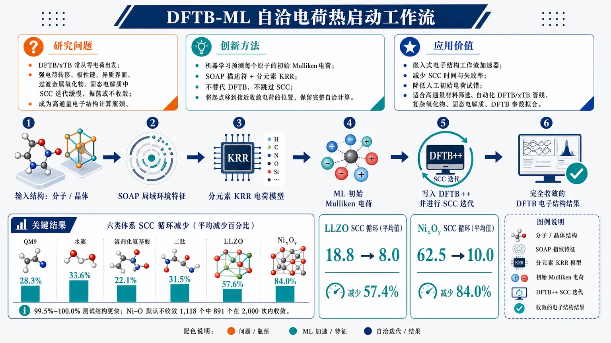
研究问题DFTB/xTB 的自洽电荷计算常从“零电荷/中性原子”出发，在强电荷转移、极性键、异质界面、过渡金属氧化物和固态电解质中容易出现 SCC 迭代缓慢、振荡甚至不收敛，成为高通量电子结构计算中的收敛瓶颈。创新方法用机器学习预测每个原子的初始 Mulliken 电荷来“热启动”SCC：以局域原子环境的 SOAP 描述符作为输入，为不同元素分别训练 KRR 电荷模型；ML 不替代 DFTB，也不跳过 SCC，而是把迭代起点从零电荷移动到更接近收敛电荷的位置，保留完整自洽电子结构计算。工作流程输入分子或晶体结构；为每个原子提取局域 SOAP 环境特征；调用对应元素的 KRR 模型预测原子初始电荷；将 ML 电荷写入 DFTB++ 作为 SCC 初始猜测；DFTB 构建 Hamiltonian、求解轨道、更新 Mulliken 电荷并混合迭代；当相邻迭代电荷变化低于阈值后输出完全收敛的 DFTB 电子结构结果。关键结果DFTB-ML 初始化在六类体系中均减少 SCC 循环：QM9 降低 28.3%，水簇 33.6%，溶剂化氨基酸 22.1%，二肽 31.5%，LLZO 57.6%，NiₓO_y 84.0%；LLZO 平均循环从 18.8 降至 8.0，NiₓO_y 从 62.5 降至 10.0；在 99.5%–100.0% 测试结构中比默认初始化更快，并使 1,118 个默认不收敛的 Ni–O 结构中 891 个在 2,000 次循环内成功收敛。应用价值该方法是嵌入式电子结构工作流加速器，可减少 SCC 迭代时间和失败率，降低人工设置初始电荷的试错成本，尤其适合高通量材料筛选、自动化 DFTB/xTB 模拟管线、复杂氧化物和固态电解质计算，以及需要大量 SCC 计算的 DFTB 参数拟合。第一部分：核心概览 (Overview)
该研究提出用机器学习预测原子初始电荷来热启动 DFTB 自洽电荷（SCC）迭代，保留完整 SCC 收敛过程而非用 ML 替代电子结构计算。方法采用元素特异性 SOAP 描述符 + 核岭回归（KRR），在六类体系中验证：QM9、有机/生物分子、水簇、LLZO 固态电解质、Ni–O 过渡金属氧化物。DFTB-ML 初始化使 SCC 循环数降低 22%–84%，Ni(ₓ)O(_y) 从 62.5 降至 10.0 次，LLZO 从 18.8 降至 8.0 次，并使 1,118 个默认不收敛 Ni–O 结构中的 891 个在 2,000 次循环内收敛。学术地位在于把 ML 从势能面替代模型转向电子结构工作流内部加速器，解决高通量 DFTB/xTB 中长期存在的 SCC 收敛瓶颈。
---
第二部分：结构化快速回顾
《Learning to Converge: Warm-Starting DFTB Self-Consistent Charges with Machine Learning》（None，）
背景
DFTB 比 DFT 快 2–3 个数量级，适合大体系和长时间尺度模拟，但 SCC-DFTB/xTB 的电荷自洽迭代在复杂体系中可能缓慢、振荡或失败。传统默认从零电荷/中性原子开始，无法处理强电荷转移、极性键、异质界面、过渡金属氧化物等体系。
方法
使用结构到电荷的监督学习：以 SOAP 表征局域原子环境，以元素特异性 KRR 预测每个原子的初始 Mulliken 电荷。训练目标主要为收敛的 DFTB Mulliken charges，另测试 DFT Mulliken / MBIS charges 作为无需 DFTB 参考数据的替代初始化。SCC 仍完整执行，ML 只改变初始猜测。
结果
DFTB-ML 初始化在六个数据集上均降低 SCC 循环数：QM9 28.3%、水簇 33.6%、溶剂化氨基酸 22.1%、二肽 31.5%、LLZO 57.6%、Ni(ₓ)O(_y) 84.0%。在多数测试结构中，ML 初始化比默认初始化需要更少循环，比例达到 99.5%–100.0%；Ni(ₓ)O(_y) 默认失败的 1,118 个结构中，ML 初始化后仅 227 个仍失败。
讨论
加速幅度由两个因素主导：体系电荷重分布强度与电荷模型精度。Ni–O 与 LLZO 获益最大，因为零电荷初始化严重偏离收敛电荷。DFT 电荷也能改善收敛，但通常弱于 DFTB 训练模型；Ni(ₓ)O(_y) 是例外，DFT-ML 仍达到 62.9% 循环数降低。
局限
当前模型预测原子总电荷，未解析 s/p/d 壳层占据。对 Ni 等部分填充 d 壳层元素，DFTB++ 会按 Slater-Koster 参数顺序分配壳层占据，可能产生物理上不理想的起点，解释了 Ni(ₓ)O(_y) 中 0.3% 结构循环数反而增加。KRR 更适合分布内插值，长程效应和跨化学域泛化仍可能不足。
结论
ML 电荷热启动是 DFTB SCC 计算的轻量级、自动化加速策略，尤其适合高通量筛选、自动化模拟管线、DFTB 参数拟合。其定位不是替代 DFTB，而是嵌入电子结构工作流以减少 SCC 迭代与失败率。
---
第三部分：逐章节冷凝解析 (Section-by-Section Condensing)
Abstract
Semiempirical DFTB occupies a speed–accuracy middle ground
DFTB 被定位为介于第一性原理精度与经典力场速度之间的半经验电子结构方法，优势是计算高效且仍可访问电子性质。摘要明确指出：*"Semiempirical electronic structure methods such as Density-Functional Tight-Binding (DFTB) offer a computationally efficient approach to molecular and materials simulations, bridging the gap between first-principles accuracy and classical force field speed while retaining full access to electronic properties."* 关键贡献不是构建新的势能函数，而是在保留电子结构访问能力的前提下降低 SCC 成本。
SCC convergence remains a major bottleneck
SCC-DFTB 的瓶颈来自电荷自洽迭代，复杂分子和材料体系中尤其严重。摘要用瓶颈语言概括问题：*"DFTB calculations based on self-consistent charge (SCC) schemes can still suffer from slow convergence, particularly for complex molecular and materials systems, making the iterative procedure a significant bottleneck in large-scale simulations and high-throughput workflows."* 这一定义将目标从能量/力精度转向收敛动力学优化。
Machine learning predicts optimal initial atomic charges
核心方案是用 ML 给 SCC 提供更好的初始原子电荷，而不是跳过 SCC。摘要表述为：*"We present a machine learning approach that accelerates DFTB simulations by predicting optimal initial atomic charges."* 这种 warm-start 保持最终结果仍由 DFTB SCC 收敛决定，避免 ML surrogate 带来的电子结构不一致问题。
Element-specific SOAP–KRR models improve convergence across diverse systems
模型结构为元素特异性模型 + SOAP 描述符 + KRR，训练数据来自参考计算。适用体系包括有机分子、生物分子、水簇、过渡金属氧化物和固态电解质。摘要给出完整范围：*"Using element-specific models based on the Smooth Overlap of Atomic Positions descriptor and kernel ridge regression, we train charge models on reference calculations and demonstrate that ML-predicted initial charges consistently and significantly improve SCC convergence across diverse chemical systems including organic molecules, biomolecules, water clusters, transition metal oxides and solid electrolytes."*
---
I Introduction
DFTB is widely used because it is much faster than DFT
DFTB 作为半经验电子结构方法，在材料科学和分子模拟中广泛使用，核心优势是用远低于第一性原理方法的成本保留量子力学电子结构处理。引言明确写道：*"Semiempirical methods are widely used in computational materials science and molecular simulation, because they offer quantum mechanical treatment of the electronic structure at a fraction of the cost of first-principles methods."* 速度优势达到：*"typically 2-3 orders of magnitude faster than density functional theory (DFT)"*，使其能处理：*"systems with thousands of atoms over nanosecond timescales"*。
DFTB has broad chemical applicability
DFTB 已用于有机体系、生物体系、固态材料、纳米结构和催化界面。应用范围由原文概括为：*"successfully applied to diverse systems ranging from organic and biological systems to solid-state materials, nanostructures, and catalytic interfaces."* 这为六个数据集的选择提供背景：QM9、SPICE 生物分子、Ni–O 氧化物、LLZO 固态电解质都覆盖 DFTB 的典型应用空间。
MLIPs are complementary but lack direct electronic-structure access
机器学习原子间势（MLIPs） 在同一速度–精度空间中越来越重要，但与 DFTB 的根本区别是无法直接给出电子结构。引言指出：*"Nowadays, machine-learned interatomic potentials (MLIPs) represent a complementary and increasingly important approach in this space."* 但其局限是：*"Unlike DFTB, MLIPs lack direct access to the electronic structure and the full range of quantities it provides"*，且：*"inherently non-local phenomena such as long-range electrostatic interactions or charge transfer remain challenging to describe."* 该研究的创新位置因此是增强 DFTB 工作流，而非用 MLIP 替代电子结构方法。
Previous ML–DFTB work mainly optimized interactions, not SCC convergence
既有 ML 与 DFTB 结合主要集中在电子参数、Slater-Koster 积分或排斥势。引言列举：*"This includes the development of ML-optimized electronic parameters or directly learning the corresponding Slater-Koster integrals, as well as the construction of ML-based repulsive potentials."* 区别点在于：*"Here, instead of focussing on modeling the interactions, we demonstrate how ML can be leveraged to improve the convergence of self-consistent charges (SCC) in DFTB."*
SCC is essential for polar bonds, interfaces, and charge redistribution
SCC-DFTB 与 xTB 共享形式体系，需要迭代求解原子部分电荷以重现实验或物理上合理的静电相互作用。引言指出：*"The SCC-DFTB approach—and, analogously, the extended Tight Binding (xTB), which shares much of the formalism with DFTB—requires iterative solution for atomic partial charges that reproduce the correct electrostatic interactions"*，尤其重要于：*"polar bonds, heterogeneous interfaces, and other systems with significant charge redistribution."*
Poor initialization can cause oscillations, hundreds to thousands of iterations, or failure
默认初始电荷不佳会造成 SCC 迭代振荡、极慢甚至失败。原文表述非常直接：*"Poor charge initialization can lead to oscillatory behavior, possibly requiring hundreds to thousands of iterations to converge or failing entirely."* 这种困难在：*"large systems, complex chemical environments, or systems outside the scope of a given parameterization"* 中更加严重。
Manual charge initialization is tedious and non-transferable
有经验用户有时用形式氧化态、电负性或试错手动设初始电荷，但这种做法体系依赖、繁琐且不精确。原文写道：*"Experienced practitioners at times circumvent convergence issues by manually setting initial charges based on formal oxidation states, electronegativities or plain trial and error"*，但：*"this approach is tedious, system-specific, and often inadequate for capturing the nuanced charge distributions in complex chemical environments."*
Convergence failures limit high-throughput DFTB
SCC 收敛问题不仅浪费计算资源，还阻碍高通量筛选和自动化材料发现。引言强调：*"Convergence issues not only waste computational resources but also limit the practicality of DFTB for high-throughput screening and automated workflows in materials discovery."* 因此，降低 SCC 迭代数和失败率具有直接工作流价值。
ML warm-start differs from prior ML charge bypassing
此前已有小型带电 SiC 团簇中学习 SCC 电荷的概念验证，但那类方法用 ML 电荷绕过 SCC，只进行一次 Hamiltonian 对角化。引言说明：*"Learning SCC charges has previously been explored as a proof of concept for small charged silicon carbide clusters."* 关键差异是：*"In this approach, however, ML-inferred charges were used to bypass the SCC procedure entirely, followed by a single Hamiltonian diagonalization, yielding results that approximate full SCC-DFTB."* 当前策略则是：*"we employ ML-predicted charges as improved initial guesses while retaining the full SCC procedure, so that the resulting calculations remain fully converged."*
---
II Theory & Methods
II.1 Density-Functional Tight-Binding
SCC-DFTB energy contains band-structure, charge-fluctuation, and repulsive terms
SCC-DFTB 的二阶总能表达式包含占据轨道的参考 Hamiltonian 期望值、屏蔽库仑相互作用下的 Mulliken 电荷涨落二次项、以及两体排斥项。公式为：
[
ESCC=sumᵢoccfᵢłangleψᵢ|hatH⁰|ψᵢångle+frac12sumI,JγIJΔ qIΔ qJ+sumI<JVIJrep
]
原文解释：*"where (fᵢ) are occupation numbers, (ψᵢ) are Kohn-Sham orbitals, (hatH⁰) is the reference Hamiltonian ... (γIJ) describes the screened Coulomb interaction between Mulliken charge fluctuations ... and (VIJrep) represents pairwise repulsive interactions."*
Charge transfer enters through second-order density expansion
电荷转移通过围绕单原子参考密度的二阶展开进入 DFTB 能量。原文写道：*"Charge transfer is introduced by expanding the DFT energy to second order around the single-atom reference density, i.e. (n(r)=n₀₍ᵣ₎₊δ n(r))."* 这解释了 SCC 中 (Δ q_I) 的物理来源：相对于中性参考原子的电荷密度涨落。
Electronic states are solved in a minimal atomic orbital basis
电子态在最小原子轨道基组 (φ_μ) 中展开，并求解广义本征值问题：
[
sumν(Hμν-ǎrepsilonₐSμν)cν ₐ=0
]
原文说明：*"The electronic states are expanded in a minimal atomic orbital basis (φ_μ), leading to the generalized eigenvalue problem."* 其中：*"where (Sμν) are overlap matrix elements, (ǎrepsilonₐ) are orbital energies, and (cν ₐ) are molecular orbital coefficients."*
Hamiltonian depends explicitly on current charges
SCC 之所以需要迭代，是因为 Hamiltonian 元素依赖当前电荷分布：
[
Hμν=Hμν⁰+frac12Sμνsum_K(γIK+γJK)Δ q_K
]
原文强调该项：*"coupling the electronic structure to the charge distribution."* 因此，初始电荷越接近收敛解，后续 Hamiltonian 迭代越少。
SCC procedure is a fixed-point iteration over charges
SCC 流程包括五步：初始化电荷、构建 Hamiltonian、求解类 Kohn-Sham 久期方程、计算新的 Mulliken 电荷、检查收敛并混合。原文列出：*"1. Initialize atomic charges (typically neutral) 2. Construct the Hamiltonian matrix using current charges 3. Solve Kohn–Sham–like secular equations for eigenvalues and orbitals 4. Calculate new Mulliken charges from the density matrix 5. Check convergence. If not converged, mix old and new charges and repeat from step 2."*
Convergence threshold is based on inter-iteration charge change
SCC 收敛标准是相邻迭代电荷变化低于阈值，例如 (10⁻⁶) e。原文说明：*"Convergence is achieved when the change in charges between iterations falls below a threshold (for example (10⁻⁶) electrons)."* 差初始猜测会造成：*"charge oscillations or divergence, requiring hundreds or thousands of iterations or causing complete failure."*
ML initialization aims to start closer to the SCC minimum
方法目标不是改变 SCC 方程，而是把初始点放到更接近能量泛函极小值的位置。原文概括：*"Our approach aims to provide physically meaningful initial charges that position the SCC procedure closer to its minimum."* 这也是“warm-starting”的核心含义。
---
II.2 SOAP Descriptors for Atomic Environments
Charge prediction requires local environment representation
从结构预测原子电荷需要编码每个原子的局域化学环境。原文写道：*"To predict atomic charges from the structure, we require a representation that captures the local chemical environment of each atom."* 采用 SOAP，因为其能表示邻域并满足旋转、平移和同类原子置换不变性：*"the Smooth Overlap of Atomic Positions (SOAP) descriptor ... is invariant to rotations, translations, and permutations of identical atoms."*
SOAP starts from Gaussian-smeared neighbor density
以中心原子 (r₀) 为基准，SOAP 邻居密度为：
[
h̊o(r)=sumᵢᵢₙₙₑᵢgₕbₒᵣₛg(|r-rᵢ|,Zᵢ₎f_c(|rᵢ₋ᵣ₀|)
]
其中 (g) 是元素相关的 Gaussian smearing，(f_c) 是平滑截断函数。原文解释：*"where (g) is a Gaussian smearing function associated with atom (i) of element type (Zᵢ), and (f_c) is a smooth cutoff function that defines the extent of the local environment."*
Radial and angular basis controls descriptor resolution
邻居密度展开到径向函数和球谐函数：
[
h̊o(r)=sumₙₗₘcₙₗₘgₙ₍ᵣ₎Yₗ^m(θ,φ)
]
超参数 (nₘₐₓ) 和 (lₘₐₓ) 决定径向与角向分辨率。原文指出：*"with radial quantum number (nłeq nₘₐₓ) and angular quantum number (lłeq lₘₐₓ) as hyperparameters, allowing for a high-resolution description of the local environment."*
Rotational invariance is obtained via the power spectrum
SOAP 通过 power spectrum 消除旋转依赖：
[
pₙₙ'ₗₗ'ZZ'=sumₘ₌₋ₗlcₙₗₘZ*cₙ'ₗ'ₘZ'
]
原文写道：*"Rotational invariance is achieved by constructing the power spectrum."* 最终描述符是所有 (n,n',l,l',Z,Z') 组合的固定长度向量：*"This yields a fixed-length feature vector that effectively characterizes the local atomic environment while respecting relevant physical symmetries."*
---
II.3 Kernel Ridge Regression
KRR learns a mapping from SOAP descriptors to charges
给定训练集 SOAP 描述符 (xᵢ) 与参考电荷 (qᵢ)，目标是学习预测函数 (f(x))。原文写道：*"Given SOAP descriptors (xᵢ) and corresponding reference charges (qᵢ) for atoms in our training set, we want to learn a regression function (f(x)) that predicts charges for new atomic environments."*
Prediction is a kernel-weighted sum over training environments
KRR 对新环境 (x_*) 的预测为：
[
f(x_*)=sumᵢ₌₁Nₜᵣₐᵢₙαᵢ k(x_*,xᵢ₎
]
原文说明：*"where (k(x,x')) is a kernel function measuring similarity between environments."* 权重由：
[
boldsymbolα=(K+łambdaI)⁻¹q
]
给出，其中 (łambda) 是正则化参数。
RBF kernel measures descriptor-space similarity
核函数采用径向基函数：
[
kRBF(x,x')=expłeft(-frac|x-x'|²2σ²i̊ght)
]
原文写道：*"For the kernel function, we employ the radial basis function (RBF) kernel ... with length-scale parameter (σ)."* 这意味着预测主要由 SOAP 空间中相似局域环境贡献。
Element-specific modeling is a central design choice
每种元素训练一个独立回归模型，而非一个全元素全局模型。原文强调：*"A key design principle of our approach is element-specific modeling: we train separate regression models for each chemical element rather than a single global model."* 优势包括更高精度、更小模型、更低计算成本：*"This improves prediction accuracy by allowing each model to specialize to element-specific charge patterns, while simultaneously reducing model size and computational cost compared to a single multi-element model."*
Element-specific models improve reuse and transferability
常见元素模型如 C/H 可跨体系复用。原文说明：*"element-specific models enhance transferability across chemical domains, as models for common elements like carbon and hydrogen can be reused across different systems."* 推理时对每个原子调用对应元素模型：*"At inference time, charges for a new molecular structure are predicted by applying the appropriate element-specific model to each atom and combining the predictions."*
---
II.4 Datasets and Reference Charges
Two target-charge sources are compared: DFTB and DFT
主要训练目标是与推理参数化一致的收敛 DFTB Mulliken 电荷，因为这种目标与 SCC 固定点最匹配。原文写道：*"The primary and most natural choice is to train on aforementioned DFTB charges ideally obtained from the same parameterization as used at inference time."* 优点是：*"the predicted initial charges are well-matched to the SCC target and are expected to yield the largest convergence improvements."* 缺点是：*"dedicated DFTB reference calculations must be performed for each chemical system and parameter set of interest."*
DFT charges offer data availability but systematic mismatch
替代方案是利用公开 DFT 数据。原文指出：*"An alternative is to leverage the vastly larger collection of publicly available DFT data, which enables charge models to be trained without any DFTB reference calculations."* 但 DFT 与 DFTB 电荷存在系统差异：*"DFT and DFTB charge populations differ systematically, owing to differences in basis sets, exchange-correlation treatment, and the tight-binding approximations."*
All DFTB reference charges are recomputed with DFTB++ 24.1
所有数据集使用 DFTB++ version 24.1 重新计算 SCC-DFTB Mulliken 电荷，默认采用 DFTB2。原文写道：*"For each dataset, we recompute SCC-DFTB charges using DFTB++ (version 24.1) to obtain converged Mulliken charges for all structures."* 并注明：*"Unless stated otherwise, all calculations employ the second-order (DFTB2) formulation."*
QM9 provides nearly 134,000 small organic molecules
QM9 包含近 134,000 个小有机分子，元素为 C/H/N/O/F，重原子最多 9 个。原文写道：*"The QM9 dataset contains nearly 134,000 small organic molecules (C, H, N, O, F) with up to 9 heavy atoms."* DFTB 电荷用 3ob-3-1 参数集计算；原始数据还含 B3LYP/6-31G(2df,p) Mulliken 电荷：*"The original dataset also contains B3LYP/6-31G(2df,p) Mulliken charges."*
Ni(ₓ)O(_y) covers metallic Ni and oxygen-rich oxides
Ni(ₓ)O(_y) 数据集包含 20,858 个结构，覆盖金属 Ni、NiO、Ni(₂)O(₃)、最高到 NiO(₄) 的富氧相。原文写道：*"The Ni(ₓ)O(_y) dataset comprises 20,858 structures spanning metallic nickel and a range of oxide stoichiometries—including NiO, Ni(₂)O(₃), and more oxygen-rich phases up to NiO(₄)."* 每结构最多 16 个原子，由遗传算法生成：*"generated using a genetic algorithm for Ni–O binary bulk systems and contains up to 16 atoms per structure."*
Ni–O DFTB and DFT reference settings are explicitly specified
Ni–O 的 DFTB 电荷使用 O 的 mio-1-1 参数集和 Ni/Ni–O 的 trans3d 扩展。DFT Mulliken 电荷用 FHI-aims aims.260331、PBE、light NAO basis、k 点间距 0.4 Å(⁻¹)、atomic ZORA、非自旋极化设置计算。原文列出：*"DFT Mulliken charges at the PBE level using FHI-aims (version aims.260331) with the light numerical atom-centered orbital basis set"*，并使用：*"automatic k-point grids with a spacing of 0.4 Å(⁻¹), scalar-relativistic treatment via the atomic ZORA approximation, and non-spin-polarized settings."*
LLZO contains millions of enumerated 192-atom structures
LLZO 是石榴石型固态电解质，化学式 Li(₇)La(₃)Zr(₂)O(₁₂)，用于全固态锂离子电池。原文写道：*"LLZO is a garnet-type ceramic solid electrolyte of interest for all-solid-state lithium-ion batteries."* 数据集含超过 2.1 million 个对称唯一 192-atom 立方 LLZO 体相结构：*"provides over 2.1 million symmetrically unique 192-atom bulk structures of cubic LLZO."* 其中 1,235 个有 ONETEP PBE DFT 数据；本研究抽取 5,000 个结构并用 PTBP 参数集计算 DFTB Mulliken 电荷。
SPICE subsets cover water clusters, solvated amino acids, and dipeptides
SPICE 选取三个子集并排除非零总电荷结构。原文写道：*"Structures with a non-zero total charge are excluded, as we target neutral systems in this work."* 子集包括：
- 水簇：1,000 个结构，30 个水分子，90 原子；原文：*"Water clusters: 1,000 structures of 30-molecule clusters (90 atoms each)."*
- 溶剂化氨基酸：1,300 个结构，其中 1,000 个中性，79–96 原子，元素 H/C/N/O/S；原文：*"Solvated amino acids: 1,300 structures (1,000 of which neutral) of all 20 amino acids in explicit water."*
- 二肽：33,850 个结构，其中 20,950 个中性，覆盖 400 种氨基酸两两组合，26–60 原子；原文：*"Dipeptides: 33,850 structures (20,950 of which neutral) covering all 400 pairwise combinations of the 20 amino acids."*
SPICE DFT-derived charges use MBIS at a high-level hybrid functional setting
SPICE 同时提供 MBIS charges，理论水平为 (ømega)B97M-D3(BJ)/def2-TZVPPD。原文写道：*"The dataset additionally reports DFT-derived MBIS charges at the (ømega)B97M-D3(BJ)/def2-TZVPPD level of theory."* 这使 SPICE 可测试不同电荷分区方案对 SCC 初始化的实用性。
---
III Results
III.1 Charge Prediction Accuracy
Six datasets are used to train DFTB charge models
六个数据集均训练用于 DFTB 电荷预测的 ML 模型，模型是元素特异性 KRR，描述符由 DScribe 生成。原文写道：*"For each dataset, element-specific KRR charge models are trained on DFTB reference charges, with SOAP descriptors generated using the DScribe library."* 测试指标主要是 RMSE，单位为 (10⁻³) e：*"Figure 1 shows the root mean squared error (RMSE) of the charge predictions on the test set for all datasets and elements."*
Prediction errors are generally low but dataset-dependent
总体电荷预测误差较低，但受化学多样性和训练规模影响。原文总结：*"Across all datasets, our models achieve low charge prediction errors, with accuracy varying depending on chemical diversity and training set size."* 这说明初始化质量不是常数，而与训练数据覆盖程度直接相关。
LLZO is easiest because local environments are crystallographically regular
LLZO 误差特别低，因为 LaZrO 主晶格固定，只有 Li 位点占据变化。原文解释：*"The bulk LLZO dataset yields particularly low errors, since the LaZrO host lattice is fixed across all structures and only the Li site occupancy varies."* 进一步原因是：*"all atoms occupy well-defined crystallographic sites within a periodic, compositionally uniform lattice, limiting the range of distinct local environments."*
SPICE biomolecular subsets are harder due to chemical diversity and sulfur scarcity
SPICE 生物分子子集更难，因为局域环境更多样，且 S 元素训练样本少。原文写道：*"In contrast, the SPICE biomolecular subsets are more challenging due to the larger chemical diversity, and training data being limited for elements such as sulfur."* 这也解释后续溶剂化氨基酸加速幅度较低。
Learning curves indicate further data would reduce errors
补充材料中的学习曲线显示误差随训练集规模正常下降。原文写道：*"Learning curves in Sec. S4 of the SM demonstrate well-behaved improvement with training set size, indicating that errors would further decrease with more data."* 因此当前结果可视为可改进下界。
---
III.2 Impact on DFTB SCC Convergence
ML-predicted charges are tested as SCC initial guesses on held-out structures
训练后，对样本外测试结构预测初始电荷，并与 DFTB++ 默认零电荷初始化比较。原文写道：*"After training our DFTB charge models, we apply them to out-of-sample test structures by predicting initial charges for SCC-DFTB."* 默认基线为：*"the DFTB++ default of initializing all atomic charges to zero (neutral atoms)."*
Evaluation uses five-fold cross-validation and held-out test sets
表 1 的 SCC 收敛性能来自保留测试集，并采用五折交叉验证。表题写明：*"evaluated on held-out test sets using five-fold cross-validation."* 若适用，每个元素模型训练集限制为 60,000 atomic environments：*"training sets were capped at 60,000 atomic environments per element model to limit kernel size."*
Convergence threshold and SCC cycle budget are specified
主结果使用 DFTB++ 默认电荷收敛阈值 (10⁻⁵) e，最大 SCC 循环 2,000。原文写道：*"We employ the DFTB++ default charge convergence threshold of (10⁻⁵) e and set the maximum number of SCC cycles to 2,000."* 更严格 (10⁻⁶) e 阈值在补充材料中给出，结论一致：*"They support the same conclusions."*
QEq is unreliable as an initial guess
除 ML 和 Gasteiger 外，也测试了经典 Rappe-Goddard QEq，但其初始电荷可能超出物理可接受范围。原文写道：*"We also tested the classical Rappe-Goddard charge equilibration (QEq), but found it unreliable as an initial guess, since in several cases the charges fell outside the physically acceptable range and prevented calculations from starting."*
DFTB-ML reduces SCC cycles across all datasets
表 1 给出定量结果：
- QM9：默认 10.2，DFTB-ML 7.3，降低 28.3%，99.8% 更少循环，0.0% 更多循环。
- 水簇：默认 9.3，DFTB-ML 6.2，降低 33.6%，100.0% 更少循环。
- 溶剂化氨基酸：默认 11.4，DFTB-ML 8.9，降低 22.1%，100.0% 更少循环。
- 二肽：默认 11.9，DFTB-ML 8.2，降低 31.5%，100.0% 更少循环。
- LLZO：默认 18.8，DFTB-ML 8.0，降低 57.6%，100.0% 更少循环。
- Ni(ₓ)O(_y)：默认 62.5，DFTB-ML 10.0，降低 84.0%，99.5% 更少循环，0.3% 相等，0.3% 更多循环。
原文总体概括：*"Across all datasets, ML-predicted charges substantially reduce SCC iteration counts and outperform default initialization for nearly all test structures."*
Cycle reductions translate directly to wall-time savings
每次 SCC 迭代都需要完整 Hamiltonian 构建和对角化，因此循环数近似直接对应计算成本。原文写道：*"Since each iteration requires the same full Hamiltonian construction and diagonalization, the iteration count is directly linked to computational cost, and these reductions translate directly to shorter wall times."*
Improvement magnitude depends on charge fluctuation and system type
加速幅度主要由体系和电荷涨落程度决定。原文总结：*"The magnitude of improvement is largely governed by the system and the degree of charge fluctuation within it."* 最大收益出现在 Ni(ₓ)O(_y) 和 LLZO：*"The largest gains occur for Ni(ₓ)O(_y) and LLZO, where equilibrium charges deviate substantially from neutral, making zero-charge initialization particularly inadequate."*
Ni(ₓ)O(_y) shows the strongest improvement due to large Ni–O charge transfer
Ni(ₓ)O(_y) 默认初始化的循环分布很宽，部分结构达到数千次循环；ML 初始化把分布压缩到 20 次以下附近，总体降低接近 84%。原文写道：*"for Ni(ₓ)O(_y), the default initialization produces a broad distribution extending to several thousand cycles for a non-negligible fraction of structures, whereas ML initialization compresses these to a narrower distribution well below 20 cycles yielding an overall reduction of nearly 84%."* 原因是：*"charge transfer between Ni and O is large and strongly dependent on local coordination."*
LLZO benefits from regular garnet environments
LLZO 的周期性石榴石环境规则，使模型能够预测接近收敛解的电荷，平均循环数降低 58%。原文写道：*"LLZO benefits most from the regularity of its garnet crystal environment, which allows the model to predict charges near the converged solution, reducing mean cycle counts by 58%."*
SPICE speedups are moderate but consistent
SPICE 三个子集循环数降低分别为水簇 34%、二肽 32%、溶剂化氨基酸 22%。原文写道：*"For the three SPICE subsets, cycle counts are reduced by 34% for water clusters, 32% for dipeptides, and 22% for solvated amino acids."* 溶剂化氨基酸较低来自电荷模型准确率较低，尤其 S 元素样本稀缺：*"The more modest improvement for solvated amino acids reflects the lower charge model accuracy ... particularly for sulfur, which appears in only two amino acids."*
Dipeptides benefit from larger and more diverse training coverage
二肽覆盖所有 400 种氨基酸对，训练集更大，因此表现优于溶剂化氨基酸。原文写道：*"Dipeptides perform better owing to the larger training set spanning all 400 amino acid pair combinations, though sulfur remains comparatively less accurate than other elements."*
Cross-parameterization transfer still improves over zero-charge default
虽然每个 DFTB 参数化有自己的电荷分布，跨参数化模型仍能改善 SCC 收敛。原文写道：*"While each DFTB parameterization in principle produces its own charge distribution, we still find that models trained on one parameterization consistently improve SCC convergence when applied to calculations with a different parameterization."* 测试覆盖 3ob、mio、PTBP 三个电荷模型与三个目标参数化的 9 种组合：*"yielding nine combinations."* 结果是：*"In every case, using a charge model trained on a different parameterization still outperforms the zero-charge default."*
Transferability is strongest between related parameter sets
3ob 与 mio 之间迁移尤其有效，因为 3ob 是 mio 的三阶扩展。原文写道：*"Transfer between 3ob and mio is particularly effective, since 3ob was developed as a third-order extension of mio."* PTBP 与两者差异更大：*"PTBP differs more substantially from both"*，因为其定位是：*"a periodic table baseline parameter set."*
Gasteiger charges provide modest no-training improvement
Gasteiger 电荷不需训练数据，对非周期体系可作为简单基线，但收益明显小于 ML。表 1 显示：QM9 降低 9.2%，水簇 13.8%，溶剂化氨基酸 7.3%，二肽 5.2%。原文概括：*"Gasteiger charges, as a simple topology-based method requiring no training data, also provide a somewhat consistent, yet considerably smaller improvement."*
ML initialization can rescue failed SCC calculations
ML 初始化不仅减少已收敛结构的循环数，还能提高收敛率。原文写道：*"Beyond reducing the number of SCC cycles for structures that converge under both schemes, ML-predicted charge initialization can also improve the rate of convergence."* 失败原因包括太慢或初始点导致无法到达极小值：*"Convergence failure can occur because the SCC converges too slowly to finish within the allowed iterations, or because the initial guess places the calculation in a region from which a minimum cannot be reached."*
At 2,000 SCC cycles, ML rescues most failed Ni(ₓ)O(_y) structures
表 2 显示默认初始化不收敛结构数：QM9 3、二肽 23、Ni(ₓ)O(_y) 1,118；水簇、溶剂化氨基酸、LLZO 为 0。ML 初始化后仍失败：QM9 3、二肽 21、Ni(ₓ)O(_y) 227。原文写道：*"Of the 1,118 previously unconverged Ni(ₓ)O(_y) structures, 891 now converge, as well as 2 of the 23 dipeptide structures."* QM9 的 3 个失败结构 ML 也未解决：*"For QM9, all 3 structures that failed under default initialization also fail using ML initialization."*
At 5,000 SCC cycles, ML remains much better for Ni(ₓ)O(_y)
对默认失败的 Ni(ₓ)O(_y) 结构，将最大循环从 2,000 扩展到 5,000 后，默认初始化仍有 952 个失败，而 ML 初始化仅 176 个失败。原文写道：*"an additional 166 structures converge under default initialization (952 remaining), while under ML initialization 942 of the 1,118 structures now converge (176 remaining)."* 这说明 ML 不只是节约循环，也改变了实际可达收敛的结构比例。
DFTB3 shows comparable or slightly larger reductions for organic/SPICE systems
QM9 和 SPICE 子集也用 DFTB3 重新计算并训练模型，循环降低幅度与 DFTB2 相当甚至略大。原文写道：*"We also recomputed the datasets and trained charge models using DFTB3 for QM9 and the SPICE subsets, and find comparable or even slightly larger SCC cycle reductions than for DFTB2."* Ni(ₓ)O(_y) 与 LLZO 未做 DFTB3，因为对应参数不支持：*"the mio, trans3d and PTBP parameters do not support DFTB3."*
Atom-resolved charges are insufficient for shell-resolved SCC physics
当前模型只预测原子总电荷，不区分壳层贡献，如 s/p/d 占据。原文指出：*"A limitation of the current approach is that ML models predict atom-resolved charges, without distinguishing between the contributions of individual shells."* 在非壳层解析 SCC 中，DFTB++ 会按 Slater-Koster 参数顺序逐壳填充：*"distributes a provided initial atom charge across the shells of each atom by filling them sequentially in the order defined by the Slater-Koster parametrization."*
Partial d-shell elements can suffer from unfavorable shell occupations
对 Ni 等部分填充 d 壳层元素，即使原子总电荷接近收敛值，壳层分配也可能物理上不一致。原文写道：*"For elements with partially filled d-shells such as Ni, this distribution may not be physically consistent, potentially introducing an unfavorable starting point for the SCC even when the atom-resolved initial charges are close to the converged values."* 这解释了 Ni(ₓ)O(_y) 中 0.3% 结构 ML 初始化更慢：*"accounting for the 0.3% of Ni(ₓ)O(_y) test structures with increased cycle counts."*
Shell-resolved charge prediction is a natural future extension
未来方向是预测每个角动量通道的壳层占据。原文写道：*"Extending the approach to shell-resolved charge models, i.e. predicting separate occupations for each angular momentum channel, would provide a more faithful and physically consistent initialization and represents a natural direction for future work."*
---
III.3 DFT Charges as Initial Guesses
DFT charge models test a data-availability tradeoff
DFT 计算比 DFTB 更贵，但公开 DFT 数据更多，因此测试 DFT 电荷能否作为无需 DFTB 参考的初始化。原文写道：*"DFT calculations are more expensive than DFTB, yet vastly more DFT data is publicly available."* 目标是：*"assess whether DFT-level charge models can also be used to improve SCC-DFTB convergence."*
Different datasets use different DFT charge definitions
QM9、LLZO、Ni(ₓ)O(_y) 训练 DFT Mulliken 电荷模型；SPICE 子集使用 MBIS 电荷。原文写道：*"For QM9, LLZO, and Ni(ₓ)O(_y), we train DFT Mulliken charge models, while for the SPICE subsets we use MBIS charges."* 这使 DFT 初始化测试不局限于 Mulliken 分区。
DFT initialization consistently improves over zero charge but less than DFTB-ML
表 1 显示 DFT-ML 均优于默认零电荷，但弱于 DFTB-ML。原文概括：*"The DFT-initialized calculations consistently outperform the zero-charge default, but as expected, by a considerably smaller margin than the DFTB-trained ML models."* 定量结果：QM9 9.5%，水簇 12.8%，溶剂化氨基酸 8.0%，二肽 13.8%，LLZO 9.3%，Ni(ₓ)O(_y) 62.9%。
Molecular datasets show modest 8–14% reductions
QM9 与 SPICE 的 DFT-ML 降幅大致在 8–14%。原文写道：*"Reductions are modest and broadly consistent across all molecular datasets: roughly 10% for QM9 and 8–14% for the SPICE subsets."* 二肽和水簇比溶剂化氨基酸好：*"with dipeptides and water clusters responding somewhat better than solvated amino acids."*
Ni(ₓ)O(_y) is an exception where DFT initialization works strongly
Ni(ₓ)O(_y) 使用 DFT-ML 从默认 62.5 降至 23.2 SCC 循环，降低 62.9%，但仍弱于 DFTB-ML 的 84.0%。原文解释：*"The exception is Ni(ₓ)O(_y), where DFT initialization achieves a 63% reduction, reflecting the large charge deviations from neutrality and the comparatively good agreement between DFT and DFTB charges."*
DFT–DFTB systematic charge mismatch explains smaller gains
DFT 和 DFTB 电荷虽共享物理图像，但分区和方法差异导致系统偏差。原文写道：*"The gap is expected, since even though DFT and DFTB share the same physical picture, their charge populations often differ systematically."* 因此 DFT 模型带有残余初始误差：*"DFT charge models introduce a residual initial error that DFTB-trained models do not contain."*
DFT charges remain practical when no DFTB reference data exists
即使 DFT 电荷不是 DFTB SCC 固定点的精确目标，仍通常优于零电荷。原文总结：*"Nonetheless, the result demonstrates that reference charges obtained outside of DFTB often provide better starting points than the zero-charge default and provide a useful baseline when no DFTB reference calculations are available (yet)."*
---
IV Conclusions
ML warm-start accelerates DFTB SCC by improving initial charges
结论重申方法本质：在 SCC 前提供更好的初始电荷。原文写道：*"We have presented a machine learning approach to accelerate DFTB self-consistent charge calculations by providing improved initial charges prior to the SCC procedure."* 模型为：*"element-specific KRR models with SOAP descriptors."*
Validation spans six chemically diverse datasets
验证范围覆盖有机分子、生物分子、水簇、金属/氧化镍和 LLZO。原文列出：*"across a broad range of chemical systems spanning organic molecules, biomolecules, water clusters, metallic and oxidized nickel, and the solid electrolyte Li(₇)La(₃)Zr(₂)O(₁₂) (LLZO)."*
DFTB-ML requires fewer cycles for 99–100% of test structures
核心结论是六个数据集中 ML 初始电荷均显著减少 SCC 循环，相比零电荷默认初始化在 99–100% 测试结构中更少循环。原文写道：*"Across all six datasets, ML-predicted initial charges consistently and substantially reduce SCC iteration counts compared to the standard zero-charge initialization, requiring fewer cycles than the default in 99–100% of test structures."*
Cycle reductions span 22% to 84%
加速幅度从溶剂化氨基酸约 22% 到 Ni(ₓ)O(_y) 84%，LLZO 为 58%。原文写道：*"Cycle count reductions range from roughly 22% for solvated amino acids ... up to 84% for Ni(ₓ)O(_y), where large charge transfer makes neutral initialization particularly inadequate."* 以及：*"For LLZO, where the periodic garnet environment is highly regular, SCC iterations are reduced by 58%."*
Reported improvements are likely lower bounds
模型精度提升应进一步改善 SCC 初始化，因此现有结果可视为下界。原文指出：*"Since model accuracy directly translates to better initialization and greater convergence gains, there is significant headroom for improvement and the reported results may be viewed as a lower bound on what is achievable."*
Shell-resolved charge prediction is the most fundamental extension
未来更根本的扩展是从原子总电荷升级到壳层解析电荷。原文写道：*"a more fundamental extension of the current approach would be to predict shell-resolved charges, providing separate initial occupations for each angular momentum channel rather than a single atom-resolved value."* 对过渡金属尤其关键：*"particularly relevant for transition metals with partially filled d-shells."*
Cross-parameterization charge models reduce reference-data burden
不同 DFTB 参数化之间的模型迁移仍优于零电荷初始化，尤其 3ob/mio 等相关参数集。原文写道：*"charge models trained on one DFTB parameterization still improve SCC convergence when applied to calculations using a different parameterization."* 且：*"Transferability is best between closely related parameter sets such as 3ob and mio."*
DFT charge models provide a fallback without DFTB reference data
无 DFTB 参考数据时，DFT 电荷模型可作为实用后备方案。原文写道：*"In cases, where no DFTB reference data is available (yet), models trained on DFT-level charges may provide a practical fallback."* 虽然弱于 DFTB 模型，但：*"DFT-based initial charges still consistently outperform the zero-charge default across all datasets."*
Gasteiger charges are useful but weaker
非 ML 的 Gasteiger 等简单电荷方案也能带来温和改善。原文写道：*"even simple non-ML charge schemes such as Gasteiger charges can deliver modest improvements without requiring any training data, although the gains are generally smaller than those of the ML-based approaches."*
Automation is a central practical contribution
该方法减少人工试错，适合高通量与自动化流程。原文指出：*"our approach also automates charge initialization, removing the need for the manual, system-specific trial and error."* 最有影响的场景是：*"high-throughput screening and automated simulation pipelines"*，以及：*"the fitting of DFTB parameters, where a (very) large number of SCC calculations needs to be performed."*
Benefits are more limited in MD and geometry optimization
分子动力学与几何优化中，相邻步电荷可直接作为 warm start，因此 ML 主要用于轨迹开始或重启。原文写道：*"For molecular dynamics and geometry optimization, the benefits are more limited, since charges from the previous step can serve as a warm start, making ML initialization merely useful at trajectory starts or restarts."*
Future models may use larger datasets or neural networks
未来方向包括跨多化学数据库训练更大、更可迁移模型，扩展到 GFN-xTB/GFN2-xTB，并探索神经网络。原文写道：*"Future work could explore larger, more transferable models trained across multiple chemical databases, or extend the approach to other DFTB-based methods such as GFN-xTB and GFN2-xTB."* 神经网络潜在优势是：*"capturing longe-range effects and in transferability across chemical domains."*
The contribution is complementary to ML interatomic potentials
最终定位不是用 ML 替代电子结构模拟，而是把 ML 嵌入 DFTB 工作流。原文总结：*"this work represents an effort complementary to machine-learned interatomic potentials, integrating machine learning into the electronic structure simulation workflow rather than using it as a surrogate model for the latter."*
---
Author Contributions
Responsibilities are clearly distributed across conceptual, computational, and supervisory roles
Maximilian L. Ach 负责概念、数据、分析、方法、软件、可视化和写作；Karsten Reuter 负责概念、资源、监督和修订；Chiara Panosetti 负责概念、方法、项目管理、监督和修订。原文列出：*"Maximilian L. Ach: Conceptualization; Data Curation; Formal analysis; Investigation, Methodology; Software; Visualization; Writing - Original Draft; Writing - Review & Editing."* 以及：*"Karsten Reuter: Conceptualization; Resources; Supervision; Writing - review & editing."*、*"Chiara Panosetti: Conceptualization; Methodology; Project administration; Supervision; Writing - review & editing."*
---
Conflicts of interest
No conflicts are declared
利益冲突声明为：*"There are no conflicts to declare."*
---
Data and Code Availability
Code and data are promised upon publication
数据和代码可用性声明为：*"All code and data will be made available upon publication."* 这意味着当前 arXiv 版本尚未直接提供完整复现实验资源，但承诺正式发表后开放。
---
Acknowledgements
Computational resources and funding are acknowledged
致谢对象包括 Julian Holland、Artem Samtsevich、Yihua Song、Christoph Scheurer；计算资源来自 Max Planck Computing and Data Facility (MPCDF)；经费来自 BMFTR ASCEND grant。原文写道：*"We thank Julian Holland, Artem Samtsevich, Yihua Song, and Christoph Scheurer for helpful discussions."* 以及：*"acknowledge the Max Planck Computing and Data Facility (MPCDF) for providing computational resources and the Bundesministerium für Forschung, Technologie und Raumfahrt (BMFTR) for funding through the ASCEND grant."*
---
第四部分：深度理解与语言支持 (Understanding & Nuance)
1. 术语解析
Warm-starting
Warm-starting 指用接近最终解的初始值启动迭代算法，而不是从默认零点或随机点开始。这里不是“预训练模型替代计算”，而是让 SCC 从 ML 预测电荷开始。语境中的关键句是 *"we employ ML-predicted charges as improved initial guesses while retaining the full SCC procedure"*。微妙点：warm start 改变的是路径和迭代次数，理论上不改变收敛后的 SCC 解。
Self-consistent charges (SCC)
SCC 是 DFTB 中对原子部分电荷进行自洽求解的机制。Hamiltonian 依赖当前电荷，电荷又由 Hamiltonian 的本征态计算出来，因此需要迭代。语境中 *"requires iterative solution for atomic partial charges"* 强调它不是一次性电荷分配，而是固定点问题。微妙点：SCC 失败并不一定表示体系物理不合理，也可能只是初始点与混合路径不佳。
Initial guess
Initial guess 是迭代算法的初始解猜测。默认是中性原子零电荷，ML 预测的是更接近收敛电荷的初始猜测。语境中 *"Poor charge initialization can lead to oscillatory behavior"* 表明初始猜测会影响收敛稳定性。微妙点：initial guess 不等于最终电荷；即使初始电荷来自 DFT 或 Gasteiger，最终仍由 DFTB SCC 决定。
Element-specific models
Element-specific models 指每种元素单独训练一个回归器，例如 H、C、O、Ni 各自有独立模型。语境中 *"we train separate regression models for each chemical element rather than a single global model"*。微妙点：这不是简单分类，而是把不同元素的电荷分布物理差异编码进模型结构；好处是精度与计算成本，但缺点是罕见元素如 S 的训练数据不足会限制表现。
Charge populations
Charge populations 指通过某种电荷分区方法得到的原子电荷集合，例如 Mulliken、MBIS。语境中 *"DFT and DFTB charge populations differ systematically"*。微妙点：原子电荷不是唯一可观测量，不同基组、泛函、分区方案会给出不同数值；因此 DFT 电荷虽“更高层级”，未必是 DFTB SCC 的最佳初始目标。
---
2. 疑难查证
为什么 ML 预测电荷不会破坏 DFTB 的物理一致性？
关键在于 ML 电荷只作为初始猜测，不作为最终结果。SCC 仍按 DFTB 能量泛函和 Hamiltonian–charge 自洽条件迭代到收敛。数学上，若 SCC 固定点唯一且收敛路径稳定，不同初始值最终应到达同一解；ML 只是让初始点更靠近固定点，减少迭代。相比“用 ML 电荷直接对角化一次”的方法，这种策略更保守，因为它不把 ML 误差永久写入最终电荷。
为什么 Ni(ₓ)O(_y) 加速最大？
Ni–O 体系中 Ni 与 O 的电负性和局域配位差异导致显著电荷转移，默认零电荷离收敛电荷很远。SCC 每一步都用当前电荷构建 Hamiltonian，初始偏差大时容易振荡或极慢。ML 模型从局域配位识别 Ni/O 的合理电荷状态，因此能直接把起点放到接近 SCC 极小值的位置。表 1 中默认 62.5 次循环降到 10.0 次，失败结构从 1,118 个降到 227 个，说明这里主要瓶颈确实是初始化。
为什么 DFT 电荷不一定比 DFTB 电荷更适合初始化 DFTB？
DFT 电荷来自不同基组、泛函和电荷分区方案；DFTB SCC 的目标是其自身参数化下的 Mulliken 电荷固定点。初始化的“好坏”不是由理论层级决定，而是由它与 DFTB 收敛电荷的距离决定。DFT 电荷可能化学上更精细，但若与 DFTB Mulliken 电荷系统偏移，就会留下残余误差。因此 DFT-ML 通常优于零电荷，却弱于 DFTB-ML。
为什么壳层解析电荷对过渡金属重要？
Ni 等过渡金属有部分填充 d 壳层。当前模型只预测“Ni 原子总电荷”，但 DFTB++ 需要把该总电荷分配到 s/p/d 壳层占据。如果分配规则按参数文件顺序逐壳填满，可能得到不符合真实 d 电子占据的初始状态。这样即使总电荷正确，Hamiltonian 的壳层贡献仍可能不理想，造成少数结构 ML 初始化更慢。壳层解析模型可以分别预测 s、p、d 占据，从而更贴近 DFTB 内部自由度。
---
第五部分：创新评估与关联 (Synthesis & Novelty)
1. 创新性判断
创新点一：从“替代电子结构计算”转向“加速电子结构自洽过程”
近年 ML 在原子模拟中主要沿两条路线发展：一是 MLIPs 替代势能面，二是 ML 优化 DFTB 参数、Slater-Koster 积分或排斥势。该研究的不同之处是没有替代 DFTB 的能量、力或 Hamiltonian，而是把 ML 插入 SCC 迭代的初始条件。创新性质属于算法工作流加速，而非新物理模型或 surrogate potential。
创新点二：保留完整 SCC 收敛，避免 ML 电荷近似最终解
此前学习 SCC 电荷的工作曾用于小型带电 SiC 团簇，并用 ML 推断电荷绕过 SCC，再进行一次 Hamiltonian 对角化。该研究明确保留完整 SCC 过程，因此最终计算仍是 fully converged DFTB。这解决了前人方法中的关键隐患：ML 电荷误差会直接污染最终电子结构结果。
创新点三：系统验证跨越分子、生物体系、固体、过渡金属氧化物
验证范围不是单一小分子基准，而覆盖六类体系，且包含对 SCC 最困难的 Ni(ₓ)O(_y) 和 LLZO。Ni–O 中 84% 循环数降低和大规模失败结构恢复，证明该策略对强电荷转移与复杂配位环境特别有效。过去 2–5 年 ML-DFTB 研究多集中于参数学习或势能精度，该研究直接量化了收敛成本与失败率。
创新点四：比较 DFTB 电荷、DFT 电荷、Gasteiger 电荷与跨参数化迁移
该研究不仅提出 DFTB-ML 初始化，还系统评估了：
- DFTB 训练模型的最佳效果；
- DFT/MBIS 电荷在无 DFTB 数据时的 fallback 价值；
- Gasteiger 这种无训练方法的弱基线；
- 3ob/mio/PTBP 之间跨参数化迁移。
这解决了实际部署中的核心问题：是否必须为每个参数集重新生成 DFTB 参考数据。结论是专用 DFTB 模型最好，但跨参数化和 DFT 数据也有实用收益。
创新点五：把 SCC 收敛问题转化为局域环境到固定点电荷的学习问题
通过 SOAP + KRR，局域几何环境被映射到接近 SCC 固定点的原子电荷。该建模方式抓住了 SCC 初始化的本质：并不需要预测全局能量面，只需预测足够接近目标固定点的局部电荷分布。尤其在 LLZO 这种周期规则体系中，局域环境重复性强，模型能以较低误差实现 57.6% 循环降低。
解决的前人未解决问题
前人没有系统解决 DFTB/xTB 高通量工作流中“默认零电荷导致 SCC 慢、振荡、失败”的自动初始化问题。手动初始电荷依赖专家经验，QEq 可能产生不可接受电荷，Gasteiger 改善有限，直接 ML 替代 SCC 又牺牲完全收敛。该方法提供了一个折中且实用的解法：自动、便宜、可迁移、保留完整 SCC、显著降低循环数和失败率。
-
05
📊 含图深析
📄 摘要：作者基准测试六种通用机器学习原子势：MACE-MH、MatterSim、SevenNet-0、UPET、UMA 和 NequIP-OAM-L，在四种代表性月球矿物——橄榄石、铁橄榄石、钛铁矿和斜长石——上的 NVT 分子动力学表现，重点评估结构保真度与对月壤相关硅酸盐/氧化物/含氢表面物种的可迁移性。
💡 亮点：六个通用势被拉到月壤矿物上做硬基准。它回答的是：现成 foundation model 到底能不能稳住橄榄石、铁橄榄石、钛铁矿和斜长石。
📖 展开分析 + 配图
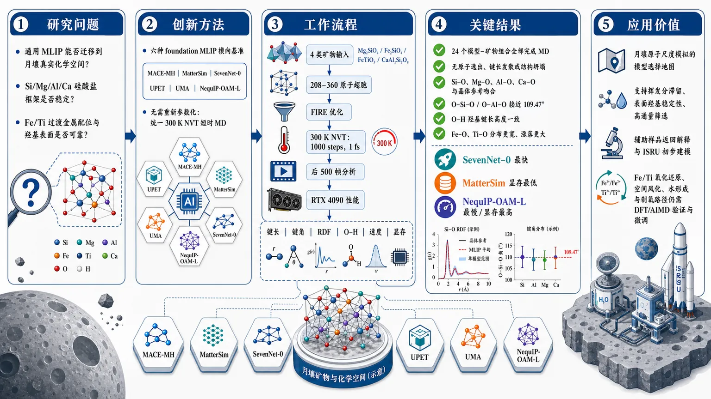
研究问题通用机器学习力场虽已在广义材料数据上训练，但能否可靠迁移到月壤矿物的真实化学空间仍未知：特别是橄榄石、钛铁矿、斜长石中的 Si/Mg/Al/Ca 框架、Fe/Ti 过渡金属配位，以及含氢羟基表面是否能在分子动力学中保持稳定。创新方法将六种 foundation MLIP——MACE-MH、MatterSim、SevenNet-0、UPET、UMA、NequIP-OAM-L——首次集中放入月壤矿物场景做横向基准；Aha 点是不用重新参数化，而是用同一套 300 K NVT 短时 MD、键长/键角/RDF/羟基 O–H/RTX 4090 性能指标，直接暴露通用势函数在硅酸盐框架可靠、Fe/Ti 配位薄弱的迁移边界。工作流程输入四类代表性月壤矿物晶体结构：forsterite Mg₂SiO₄、fayalite Fe₂SiO₄、ilmenite FeTiO₃、anorthite CaAl₂Si₂O₈；构建 208–360 原子超胞，经 FIRE 几何优化后，用六个 MLIP 分别进行 300 K、1000 steps、1 fs timestep 的 NVT 分子动力学；从后 500 帧提取温度稳定性、Si–O/Mg–O/Fe–O/Ti–O/Al–O/Ca–O 键长、键角、偏 RDF，并对羟基化表面跟踪 O–H 键长；最后在单张 RTX 4090 上统计速度与显存。关键结果全部 24 个模型–矿物组合均完成 1000 步 NVT，没有原子逸出、键长发散或结构坍塌；Si–O、Mg–O、Al–O、Ca–O 局域结构与晶体参考较吻合，O–Si–O 和 O–Al–O 四面体角接近 109.47°；羟基 O–H 键长在六模型和四矿物表面上高度一致；主要弱点集中在 fayalite 和 ilmenite 的 Fe–O、Ti–O，分布更宽、短时涨落更大，可能源于缺少显式自旋和 d 电子强关联描述；性能上 SevenNet-0 最快，MatterSim 显存最低，NequIP-OAM-L 最慢且显存最高。应用价值该基准为月壤原子尺度模拟提供了模型选择地图：通用 MLIP 已适合有序硅酸盐、铝硅酸盐和羟基表面初态的高通量筛选，可支持月球挥发分滞留、表面羟基稳定性、样品返回解释和 ISRU 初步建模；同时明确指出 Fe/Ti 氧化还原相、空间风化反应、质子转移、水形成和制氧相关路径仍需月球相关 DFT/AIMD 数据验证与微调。第一部分：核心概览（Overview）
该研究建立了面向月壤矿物分子动力学的通用机器学习力场基准，系统比较 MACE-MH、MatterSim、SevenNet-0、UPET、UMA、NequIP-OAM-L 六类 foundation MLIP 在橄榄石端元、钛铁矿、斜长石中的结构稳定性、局域配位保真度、羟基表面表现与 GPU 性能。核心贡献在于把原本面向广义材料科学训练的通用势函数，首次集中验证到月壤相关硅酸盐、氧化物、含氢表面物种场景。结果显示 Si–O、Mg–O、Al–O、Ca–O 环境较可靠，Fe–O 与 Ti–O 存在更大涨落，指向月球 Fe/Ti 相、氧化还原化学与挥发分演化模拟中的关键验证缺口。
---
第二部分：结构化快速回顾
《Benchmarking Universal Machine Learning Force Fields for Molecular Dynamics of Lunar Regolith Minerals》（None，）
背景
月球 Artemis、嫦娥与商业着陆任务推动了对月壤原子尺度过程的模拟需求。传统 ReaxFF 等反应力场依赖特定参数集，难以覆盖橄榄石、钛铁矿、斜长石、含氢表面等复杂矿物组合。通用 MLIP 可能提供跨元素、高效率的替代方案，但其在月壤 Fe/Ti 氧化还原相与羟基表面中的可迁移性尚未验证。
方法
选取四种代表性月壤矿物：forsterite Mg₂SiO₄、fayalite Fe₂SiO₄、ilmenite FeTiO₃、anorthite CaAl₂Si₂O₈。构建 208–360 原子超胞，使用六个 foundation MLIP 进行 300 K NVT 分子动力学，每组 1000 steps、1 fs timestep、总计 1 ps。结构分析包括温度稳定性、键长、键角、偏径向分布函数与羟基 O–H 分布；性能测试在 NVIDIA RTX 4090 24 GB 上完成。
结果
全部 24 个模型–矿物组合均完成 1000 步 NVT，没有原子逸出、键长发散或结构坍塌。Si–O、Mg–O、Al–O、Ca–O 局域结构与晶体参考值吻合较好；Fe–O 与 Ti–O 分布更宽，尤其 fayalite 和 ilmenite 中短时涨落显著。羟基 O–H 键长在六个模型和四类矿物表面上高度一致。性能上 SevenNet-0 最快，MatterSim 显存最低，NequIP-OAM-L 最慢且显存需求最高。
讨论
通用 foundation MLIP 已可作为有序月壤矿物初筛工具，尤其适合硅酸盐框架与羟基初态稳定性研究。但 Fe²⁺、Ti⁴⁺ 相关体系涉及局域 d 电子、强关联与磁有序，当前模型缺乏显式自旋依赖特征，可能导致过软势能面和过大热涨落。
局限
模拟时间仅 1 ps，体系为有序晶体与简单羟基表面；未覆盖缺陷、非晶、辐照损伤、高压冲击、真实混合月壤、反应路径、质子转移、水生成、解吸和氧化还原反应。缺少直接 DFT/AIMD 对照，参考范围主要来自静态晶体结构。
结论
六种通用 MLIP 对月壤矿物具有初步可迁移性，适合结构稳定性筛选与羟基表面初态研究；Fe/Ti 相与反应性过程仍需月球相关 ab initio 数据验证和微调。该基准为未来挥发分循环、空间风化、ISRU、极区样品返回解释提供了方法学起点。
---
第三部分：逐章节冷凝解析（Section-by-Section Condensing）
Abstract
Universal MLIPs need lunar-specific transferability tests
通用机器学习原子间势能被定位为加速材料分子动力学的候选工具，但其在月壤相关硅酸盐、氧化物、含氢表面物种中的可靠性仍未明确。核心问题不是模型是否在大数据上训练过，而是能否迁移到月壤矿物的特定化学空间；原文明确指出：*"Universal machine-learning interatomic potentials provide a promising route for accelerating molecular dynamics simulations of materials, but their transferability to lunar regolith-relevant silicates, oxides, and hydrogen-bearing surface species remains elucidated."*
Six foundation models were benchmarked on four lunar minerals
基准对象为 MACE-MH、MatterSim、SevenNet-0、UPET、UMA、NequIP-OAM-L，矿物对象为 forsterite、fayalite、ilmenite、anorthite，均采用 NVT molecular dynamics simulations。研究范围覆盖 Mg 硅酸盐、Fe 硅酸盐、Fe–Ti 氧化物和 Ca–Al 硅酸盐；原文给出完整组合：*"we benchmark six foundation models, MACE-MH, MatterSim, SevenNet-0, UPET, UMA, and NequIP-OAM-L, using NVT molecular dynamics simulations of four representative lunar minerals: forsterite, fayalite, ilmenite, and anorthite."*
Structural fidelity was evaluated using multiple geometric descriptors
结构可靠性并非只通过能量判断，而是使用温度稳定性、键长统计、键角分布、偏径向分布函数，并与晶体参考数据比较。这种组合适合短时 NVT 稳定性评估；原文表述为：*"Structural fidelity is evaluated using temperature stability, bond-distance statistics, bond-angle distributions, and partial radial distribution functions, with comparison to crystallographic reference data."*
Silicate and aluminosilicate bonds are robust, Fe–O and Ti–O are weaker points
模型整体能较好再现 Si–O、Mg–O、Al–O、Ca–O 局域环境，但 Fe–O、Ti–O 显示更宽分布和更大短时涨落。这个结果直接定义了该基准的科学价值：通用势函数在月壤中不是均匀可靠，而是元素/配位环境依赖明显；原文指出：*"The models reproduce Si–O, Mg–O, Al–O, and Ca–O local environments reasonably well, while Fe–O and Ti–O coordination environments show broader distributions and larger short-timescale fluctuations."*
Hydroxylated surface tests indicate potential for volatile studies
四种矿物羟基化表面上，O–H 键长分布跨模型和矿物保持一致，提示通用 foundation MLIP 可作为羟基稳定性、挥发分相关过程的初筛工具；原文证据为：*"Hydroxylated surface tests show consistent O–H bond-distance distributions across models and minerals, suggesting that these foundation models may provide useful starting points for screening surface hydroxyl stability and volatile-related processes."*
Performance ranking identifies practical throughput tradeoffs
在单张 NVIDIA RTX 4090 上，SevenNet-0、MatterSim、UPET 吞吐最高；MACE-MH 成本中等；UMA、NequIP-OAM-L 代表较新 foundation potential，但运行成本和显存需求更高。原文总结为：*"Performance benchmarks on a single NVIDIA RTX 4090 show that SevenNet-0, MatterSim, and UPET provide the highest throughput among the six tested models."*
---
1 Introduction
Lunar exploration creates demand for atomic-scale regolith modeling
Artemis、嫦娥和商业着陆器推动月球进入新的采样与探测阶段，月壤既是空间环境记录体，也是 ISRU 原料。研究背景直接连接样品返回与资源利用；原文写道：*"The Moon is entering a new era of exploration and sample-return science, driven by missions such as NASA’s Artemis program, China’s Chang’e series, and various commercial landers."* 以及 *"renew the need to characterize lunar regolith both as a record of the lunar space environment and as a primary feedstock for in-situ resource utilization (ISRU)."*
MD simulations target space-weathering processes
分子动力学用于研究月壤样品中原子尺度演化，包括微陨石轰击、太阳风辐照、表面充电等长期效应，进一步涉及太阳风注入、介电击穿、冲击诱导氧化还原、纳米相铁形成。原文列举为：*"These processes include solar wind implantation, dielectric breakdown, impact-induced redox reactions, and nanophase iron formation."*
Traditional reactive MD is limited by force-field parameter availability
过去反应 MD 主要集中在 SiO₂-rich materials 或 Fe₂SiO₄ 等简化系统，原因是 ReaxFF 等传统反应势依赖特定参数集且可迁移性有限。关键瓶颈不是 MD 方法本身，而是参数化覆盖不足；原文明确指出：*"previous reactive MD studies have been largely limited to simplified systems, such as SiO2-rich materials or Fe2SiO4"*，并解释原因：*"traditional reactive methods such as ReaxFF depend on the availability and transferability of suitable force-field parameter sets, both of which remain limited."*
Apollo and Chang’e samples expose mineralogical heterogeneity
近期 Apollo 和嫦娥样品分析显示月壤矿物高度异质，不同矿物对挥发分捕获和氧化还原化学具有不同意义。代表相包括 forsterite Mg₂SiO₄、fayalite Fe₂SiO₄、ilmenite FeTiO₃、anorthite CaAl₂Si₂O₈；原文写道：*"recent analyses of Apollo and Chang’e samples"* 揭示了 *"mineralogical heterogeneity"*，且 *"distinct mineral species exhibit unique properties relevant to volatile trapping and redox chemistry."*
Four minerals encode major lunar chemical regimes
四种矿物选择具有明确地球化学含义：forsterite 是橄榄石 Mg 端元；fayalite 是 Fe 端元且对月海物质氧化还原敏感；ilmenite 对还原化学和制氧关键；anorthite 是高地斜长质框架硅酸盐。原文逐一说明：*"forsterite (Mg2SiO4), the Mg-end member of olivine; fayalite (Fe2SiO4), the Fe-end member and a key redox-sensitive phase in mare materials; ilmenite (FeTiO3), critical for reduction chemistry and oxygen production; and anorthite (CaAl2Si2O8), the framework silicate dominant in highland terrains."*
A chemically universal force field is required
跨越硅酸盐、氧化物、含氢环境的模拟需要不依赖材料特定重新参数化的通用力场。原文将问题定义为：*"Modeling these minerals across diverse silicate, oxide, and hydrogen-bearing environments requires a universal force field capable of maintaining accuracy without the need for material-specific reparametrization."*
MLIPs promise classical-MD efficiency with ab initio-like many-body descriptions
MLIP 基于 DFT 数据训练，可在保持接近从头算局域多体描述的同时获得经典 MD 的计算效率。原文表述为：*"machine-learning interatomic potentials (MLIPs) trained on density functional theory (DFT) data offer a promising solution"*，并强调其优势：*"the computational efficiency of classical MD while retaining the many-body descriptions of local atomic environments characteristic of ab initio methods."*
Foundation MLIPs are broad but not yet verified for lunar science
通用 foundation MLIP 覆盖周期表大范围元素，但通常针对广义材料科学和化学任务优化，并非针对月壤空间风化、Fe/Ti 氧化还原态。因此必须做领域基准；原文指出：*"universal or foundation MLIPs have been trained on vast datasets spanning much of the periodic table"*，但 *"Their reliability in describing lunar minerals—characterized by space weathering processes, and specific Fe- and Ti-bearing redox states—remains unverified."*
Benchmarking addresses the validation gap
基准目标是填补通用 MLIP 在月壤矿物学中的验证空白，比较六个模型在结构、羟基表面和 GPU 性能上的表现。原文写道：*"we address this validation gap by benchmarking six universal foundation models"*，并说明评价项包括 *"bond distances, bond angles, and partial radial distribution functions against crystallographic references"* 以及 *"GPU wall-clock performance and memory utilization on an NVIDIA RTX 4090."*
The broader goal is bridging microscopic chemistry and planetary processes
该基准被定位为高保真原子模拟的前置验证，服务于月壤演化、ISRU、极区样品返回解释。原文总结目标为：*"bridge the gap between microscopic chemical reactions and macroscopic planetary processes, supporting the design of ISRU systems and the interpretation of future polar sample return missions."*
---
2 Methods
2.1 Mineral structures and supercells
Crystal structures were Materials Project based and checked against experimental diffraction
四种矿物的晶体结构来自 Materials Project，在构建超胞前与已发表实验衍射数据比较。原文说明：*"Crystal structures for all four minerals were retrieved from the Materials Project and compared with published experimental diffractometry data before supercell construction."*
ASE and VESTA were used for construction and inspection
超胞构建使用 Atomic Simulation Environment, ASE，结构检查使用 VESTA。原文为：*"Supercells were constructed using the Atomic Simulation Environment (ASE) and inspected in VESTA."*
Forsterite supercell contains 336 atoms
forsterite Mg₂SiO₄ 使用常规正交晶胞 3 × 2 × 2 超胞，空间群 Pbnm，Z = 4，总计 336 atoms / 84 formula units。晶格参数为 a = 4.762 Å、b = 10.225 Å、c = 5.994 Å，对应 Hazen 单晶衍射数据。原文证据：*"For forsterite (Mg2SiO4, space group Pbnm, Z = 4), a 3 × 2 × 2 supercell of the conventional orthorhombic cell yielded 336 atoms (84 formula units), with equilibrium lattice parameters (a = 4.762 Å, b = 10.225 Å, c = 5.994 Å)."*
Fayalite supercell mirrors forsterite but with Fe-end-member lattice parameters
fayalite Fe₂SiO₄ 与 forsterite 同构，也使用 3 × 2 × 2 超胞，空间群 Pbnm，Z = 4；晶格参数来自 Smyth：a = 4.820 Å、b = 10.477 Å、c = 6.105 Å。原文写道：*"An identical 3 × 2 × 2 supercell was used for isostructural fayalite (Fe2SiO4, space group Pbnm, Z = 4), using parameters from Smyth (a = 4.820 Å, b = 10.477 Å, c = 6.105 Å)."*
Ilmenite supercell contains 360 atoms
ilmenite FeTiO₃ 使用六方表示的 3 × 3 × 2 超胞，空间群 Rbar3，Z = 6，共 360 atoms / 60 formula units；晶格参数 a = 5.088 Å、c = 14.093 Å。原文为：*"For ilmenite (FeTiO3, space group Rbar3, Z = 6), we constructed a 3 × 3 × 2 hexagonal supercell containing 360 atoms (60 formula units) based on Wechsler and Prewitt (a = 5.088 Å, c = 14.093 Å)."*
Anorthite supercell contains 208 atoms
anorthite CaAl₂Si₂O₈ 使用三斜 2 × 2 × 2 超胞，空间群 Pbar1，Z = 8，总计 208 atoms / 16 formula units，来自 Wainwright and Starkey。原文证据：*"For anorthite (CaAl2Si2O8, space group Pbar1, Z = 8), a 2 × 2 × 2 triclinic supercell containing 208 atoms (16 formula units) was derived from Wainwright and Starkey."*
---
2.2 Foundation models
The six models span equivariant, invariant, and transformer architectures
模型选择覆盖等变消息传递、 invariant graph neural networks、transformer architectures，用于评估结构先验和训练规模对预测准确性的影响。原文开宗明义：*"we evaluated six universal machine-learning interatomic potentials encompassing equivariant message-passing, invariant graph neural networks, and transformer architectures."*
MACE-MH uses E(3)-equivariant many-body features
MACE-MH 采用 E(3)-equivariant message-passing network，用 Clebsch–Gordan tensor products 构造严格等变多体特征。原文写道：*"The MACE architecture employs an E(3)-equivariant message-passing network utilizing Clebsch–Gordan tensor products to construct strictly equivariant many-body features."*
SevenNet-0 uses SE(3)-equivariant SO3Net with 843k parameters
SevenNet-0 / 7net-omni-v1 使用 SE(3)-equivariant SO3Net，模型包含 843,000 parameters，five convolutional layers，5 Å cutoff，在 MPtrj dataset 上训练，并以 float32 precision 高效运行。原文证据：*"SevenNet-0 (7net-omni-v1) utilizes the SE(3)-equivariant SO3Net architecture. Comprising 843,000 parameters across five convolutional layers with a 5 Å cutoff, this model was also trained on the MPtrj dataset but operates efficiently in float32 precision."*
MatterSim uses M3GNet and massive DFT pretraining
MatterSim v1.0 实现 M3GNet architecture，是 invariant graph neural network，通过显式键角项捕捉三体相互作用；含 890,000 parameters 和 three interaction blocks，以 float32 运行。训练规模超过 17 million DFT calculations，覆盖 Materials Project 与 OMAT24 数据集。原文写道：*"MatterSim v1.0 implements the M3GNet architecture, an invariant graph neural network that captures three-body interactions through explicit bond-angle terms."* 以及 *"MatterSim benefits from massive-scale pretraining on over 17 million DFT calculations encompassing both the Materials Project and the OMAT24 datasets."*
UPET represents a Point Edge Transformer architecture
UPET / PET-OMAT-M v1.0 是 Point Edge Transformer，每个 interaction block 相当于完整多头自注意力层，把原子环境当作 token sequence 处理。原文描述：*"UPET (PET-OMAT-M v1.0) represents a Point Edge Transformer approach wherein each interaction block functions as a full multi-head self-attention layer treating atomic environments as token sequences."*
UMA and NequIP-OAM-L expand coverage to newer foundation potentials
UMA 是跨分子、材料、催化领域训练的 Universal Models for Atoms；NequIP-OAM-L 是基于 OMat/Alexandria 训练的 NequIP 无机材料 foundation potential。原文为：*"We also included UMA, a newer family of Universal Models for Atoms trained across molecular, materials, and catalytic domains, and NequIP-OAM-L, an OMat/Alexandria-trained NequIP foundation potential for inorganic materials."*
---
2.3 Molecular dynamics protocol
ASE handled all dynamic simulations
所有动态模拟都在 ASE framework 中完成，每个 foundation model 作为能量与力计算器。原文：*"All dynamic simulations were carried out within the ASE framework, with each foundation model used as the energy and force calculator."*
Each model–mineral run had relaxation and NVT phases
每个矿物–模型组合包含两个阶段：先用 FIRE algorithm 优化，直到最大力低于 0.05 eV Å⁻¹；再进行 300 K NVT Langevin thermostat 分子动力学。原文证据：*"First, the constructed supercell geometry was relaxed using the FIRE algorithm until the maximum force was below 0.05 eV Å−1. Second, the relaxed structure was propagated in the NVT ensemble using a Langevin thermostat at T = 300 K."*
The MD trajectory was short and designed as a stability benchmark
积分步长 Δt = 1.0 fs，共 1000 steps，总模拟时间 1 ps。该 NVT 运行被用作短时稳定性检查，而不是长时动力学。原文写道：*"The equations of motion were integrated using a timestep of Δt = 1.0 fs for 1000 steps, corresponding to a total simulation time of 1 ps."* 以及 *"This NVT run was also used as a short-timescale stability benchmark."*
Instability criteria were explicit
稳定性检查关注是否存在原子逸出、非物理键长发散、快速结构坍塌。原文为：*"we checked whether each model–mineral combination could maintain a physically reasonable structure without atom ejection, unphysical bond-length divergence, or rapid structural collapse."*
Fixed cell vectors restrict the interpretation
晶胞矢量固定为晶体参考体积，因此 NVT 结果只代表局域结构与短时动力学基准，不能用于状态方程或热膨胀。原文强调：*"The cell vectors were held fixed to the crystallographic reference volumes, so the NVT setup provides a local structural and short-timescale dynamical benchmark rather than an equation of state or thermal-expansion calculation."*
Periodic boundary conditions were used
全部模拟采用周期性边界条件和最小镜像约定。原文：*"Periodic boundary conditions and the minimum-image convention were used throughout."*
---
2.4 Structural analysis
Structural fidelity used first-shell and medium-range descriptors
结构保真度由第一配位壳几何和中程周期有序共同评价。原文为：*"Structural fidelity was evaluated from first-shell coordination geometries and medium-range periodic order."*
Bond distances were extracted from the final 500 stable frames
键长统计来自最后 500 stable MD frames，使用固定物种对 cutoff：Si–O 2.0 Å、Mg–O 2.8 Å、Fe–O 2.8 Å、Ti–O 2.6 Å、Al–O 2.4 Å、Ca–O 3.2 Å。原文详列：*"First-shell bond distances were extracted across the last 500 stable MD frames using fixed species-pair cutoffs: Si–O 2.0 Å, Mg–O 2.8 Å, Fe–O 2.8 Å, Ti–O 2.6 Å, Al–O 2.4 Å, and Ca–O 3.2 Å."*
Minimum-image distances and trajectory statistics were used
每帧对 cutoff 内相关原子对计算最小镜像距离，报告均值和标准差。原文：*"For each frame, the minimum-image distance was calculated for every pair within the relevant cutoff, and the reported mean and standard deviation were computed over the trajectory."*
Bond angles used the same neighbor definitions
键角来自最后 500 simulation frames，第一壳邻居仍由相同 cutoff 定义，并计算以中心阳离子为顶点的角。原文：*"Bond angles were computed from the final 500 simulation frames by identifying first-shell neighbors with the same cutoff definitions and evaluating the angle subtended at the central cation."*
Partial RDFs were computed from equilibrated second-half trajectories
偏径向分布函数 gαβ(r) 来自每条轨迹最后 500 frames，代表平衡后的后半段。原文：*"Partial radial distribution functions, gαβ(r), were compiled from the final 500 frames of each trajectory, representing the equilibrated second half of the simulation."*
RDF binning and normalization were specified
RDF 使用 0.02 Å resolution 分箱，并用对应物种对的化学计量数密度归一化到理想气体极限。原文为：*"These distributions were binned at 0.02 Å resolution and normalized to the ideal-gas limit using the stoichiometric number density for each pair type."*
需要注意：结果图注中 RDF bin width 写为 0.03 Å，与方法部分 0.02 Å 存在不一致。
Fixed cutoff analysis is systematic but qualitative near boundaries
固定 cutoff 便于系统比较，但 cutoff 边界附近的配位变化应定性解释，尤其对宽分布的 Fe–O、Ti–O。原文警示：*"The fixed-cutoff analysis is intended as a systematic structural comparison; coordination changes near cutoff boundaries should therefore be interpreted qualitatively, particularly for the broad Fe–O and Ti–O distributions."*
---
2.5 Performance Benchmark
Wall-clock timing focused on get_forces calls
计算效率通过每个积分步中 get_forces() 调用的 wall-clock time 测量，使用 Python time.perf_counter，排除了模型加载和结构初始化。原文：*"GPU wall-clock time was measured with Python’s time.perf_counter around the get_forces() call at each integration step, after model loading and structure initialization."*
Peak GPU memory was measured where supported
峰值显存使用 torch.cuda.maxₘₑₘₒᵣyₐₗₗₒcated() 跟踪，但并非所有模型后端都支持一致的显存检测。原文说明：*"Peak GPU memory allocation was tracked using torch.cuda.maxₘₑₘₒᵣyₐₗₗₒcated() where supported by the model backend."*
Hardware and software environment were specified
全部计算在 NVIDIA GeForce RTX 4090 24 GB GDDR6X 上完成，使用 CUDA 12.4 和 PyTorch 2.3。原文：*"All calculations were executed on an NVIDIA GeForce RTX 4090 (24 GB GDDR6X) using CUDA 12.4 and PyTorch 2.3."*
Unavailable memory entries were not inferred
不同模型 wrapper 的显存接口不一致时，缺失显存项报告为 unavailable，而非估算。原文：*"Because not all model wrappers expose identical memory instrumentation, missing peak-memory entries are reported as unavailable rather than inferred."*
---
3 Results and Discussions
3.1 NVT molecular dynamics stability check
All 24 model–mineral trajectories were dynamically stable
六个模型 × 四种矿物共 24 个组合均完成 1000 NVT MD steps，没有结构不稳定，包括原子逸出或键长发散。原文证据：*"All 24 model–mineral combinations (six models × four minerals) completed 1000 NVT MD steps without structural instabilities, such as atom ejection or bond-length divergence."*
Short-term stability supports immediate transferability but not full accuracy
完成短时轨迹说明 foundation models 对复杂月壤矿物组成具有初步稳定性，且无需专门重新训练即可运行。原文措辞较强：*"The successful completion of these trajectories serves as a critical validation of the models’ foundational stability in lunar regolith modeling, demonstrating their immediate transferability to these complex mineral compositions without requiring specialized retraining."*
严谨解释：这里验证的是数值/结构稳定性，不是反应路径、能量排序或热力学准确性。
Temperature equilibration occurred within 100–200 steps
温度轨迹显示所有模型在约 100–200 steps / fs 内达到平衡，并维持 300 K 平均温度。原文：*"Temperature traces during NVT-MD show that all models equilibrate within approximately 100–200 steps and maintain a stable 300 K mean."*
Thermal fluctuations match finite-size expectations
温度涨落约 δT ≈ ±20–30 K，与能量均分预期 δT/T = (2/3N)¹/² 一致。原文为：*"fluctuations appropriate to the finite system sizes (δT ≈ ±20–30 K, consistent with the equipartition expectation δT/T = (2/3N)1/2)."*
---
3.2 Radial distribution functions
Partial RDFs test short-range order preservation
偏径向分布函数 gαβ(r) 从每条 NVT 轨迹后半段计算，用于判断六个 foundation models 是否在 300 K 下保持短程有序。原文：*"Partial radial distribution functions gαβ(r) were computed from the second half of each NVT trajectory to assess whether the six foundation models preserve consistent short-range order during the 300 K simulations."*
Forsterite Si–O peaks are narrow and model-consistent
forsterite 中 Si–O g(r) 的第一峰位于 r ≈ 1.65 Å，六个模型之间峰位、高度、宽度差异很小，说明硅酸盐四面体骨架短时稳定。原文：*"For forsterite, the Si–O g(r) shows a narrow and symmetric first peak at r ≈ 1.65 Å across the six-model set, with negligible differences in peak position, height, or width."*
Second coordination shell in forsterite is also preserved
forsterite 中 r ≈ 2.5 Å 附近第二配位壳也被一致再现，进一步说明四面体硅酸盐框架没有短时破坏。原文：*"The second coordination shell near r ≈ 2.5 Å is also reproduced consistently, indicating that the tetrahedral silicate framework remains stable over the short NVT trajectory."*
Anorthite Si–O and Al–O peaks are sharp and resolved
anorthite 中 Si–O 与 Al–O 第一壳峰清晰分离，r ≈ 1.80 Å 附近肩峰反映较长的 Al–O 键。原文：*"for anorthite, the Si–O and Al–O first-shell peaks are sharp and well resolved. The slight shoulder near r ≈ 1.80 Å reflects the longer Al–O bonds in the aluminosilicate framework."*
Fayalite Fe–O RDF is broader and more model-dependent
fayalite 中 Fe–O g(r) 第一峰中心约 r ≈ 2.18 Å，明显更宽，模型间峰高差异也大于 forsterite 和 anorthite。原文：*"In fayalite, the Fe–O g(r) has a noticeably broader first peak centered near r ≈ 2.18 Å, with larger intermodel differences in peak height than those observed for forsterite and anorthite."*
Ilmenite Ti–O and Fe–O peaks are broader than silicate framework peaks
ilmenite 中 Ti–O 和 Fe–O 峰比 Si–O、Al–O 宽得多，反映八面体过渡金属配位环境更易短时涨落。原文：*"In ilmenite, the Ti–O and Fe–O peaks are also substantially broader than the Si–O and Al–O peaks in the silicate frameworks."*
No gross rearrangement occurred despite broader Fe/Ti distributions
Fe/Ti 相虽然峰宽较大，但第一壳峰仍与下一配位壳清楚分离，没有发生明显结构重排。原文：*"the first-shell peaks remain distinct and well separated from the next coordination shells, indicating that no gross structural rearrangement occurs during the short MD simulations."*
Fe–O and Ti–O require careful validation
整体 RDF 说明六个模型对有序矿物短程结构大体一致，但 Fe–O、Ti–O coordination environments 的动态展宽更显著，需要更谨慎验证。原文总结：*"Fe–O and Ti–O coordination environments exhibit larger dynamical broadening and therefore require more careful validation."*
---
3.3 Bond-distance benchmarks across lunar minerals
Bond distances quantify the first-shell RDF observations
键长统计对 RDF 中识别出的第一配位壳进行量化比较；Table 1 给出六模型在 300 K MD trajectories 下的均值和标准差，Figure 4 给出概率分布。原文：*"The bond-distance statistics provide a quantitative comparison of the first-shell coordination environments identified from the RDFs."*
Reference ranges are static crystallographic ranges, not thermal uncertainties
Table 1 中参考值来自对应起始晶体超胞重新计算的静态第一壳范围，描述晶体学位点不等价性，不代表 finite-temperature AIMD 或实验热展宽。原文特别说明：*"They therefore describe site inequivalence in the static structures rather than finite-temperature AIMD or experimental thermal broadening."*
Forsterite Si–O is reproduced extremely consistently
forsterite 中六模型均给出 Si–O = 1.650 ± 0.034 Å，落在静态参考 1.617–1.658 Å 内，模型间无可见均值差异。原文：*"In forsterite, all six models predict Si–O distances of 1.650 Å with σ ≈ 0.034 Å, within the static reference range of 1.617–1.658 Å."*
Forsterite Mg–O is also within reference range
forsterite 的 Mg–O 约 2.109 Å，标准差 0.087–0.089 Å，落在静态参考 2.041–2.207 Å。原文：*"Mg–O distances of approximately 2.109 Å, within the corresponding 2.041–2.207 Å range."*
Anorthite preserves Si–O and Al–O distinction
anorthite 中六模型保持了 Si–O 和 Al–O 四面体键长差异：Si–O = 1.643–1.644 Å，Al–O = 1.767–1.769 Å。原文：*"the models also preserve the distinction between tetrahedral Si–O and Al–O bonding, with six-model mean ranges of 1.643–1.644 Å for Si–O and 1.767–1.769 Å for Al–O."*
Anorthite Ca–O is broad but crystallographically expected
anorthite 中 Ca–O 分布宽，模型均值约 2.508–2.519 Å，标准差 0.167–0.180 Å，与静态参考 2.324–2.962 Å 的宽范围一致，符合 Ca 多配位畸变环境。原文：*"The broader Ca–O distribution is also consistent with the wide static range of 2.324–2.962 Å expected for distorted multi-fold Ca coordination."*
Fayalite Si–O is systematically too long
fayalite 中 Si–O = 1.714–1.718 Å，明显长于静态参考 1.629–1.653 Å，且标准差高达 0.235–0.238 Å。原文：*"In fayalite, the model set predicts Si–O distances of 1.714–1.718 Å, which are longer than the static reference range of 1.629–1.653 Å."*
Fayalite Fe–O mean is within static range but fluctuates strongly
fayalite 中 Fe–O = 2.178–2.182 Å，位于静态参考 2.034–2.303 Å 内，但标准差 0.334–0.340 Å，远大于 Mg/Al/Si 框架键。原文：*"The Fe–O mean distances (2.178–2.182 Å) remain inside the static first-shell range of 2.034–2.303 Å, but the associated standard deviations are much larger."*
Ilmenite Ti–O lies within static range
ilmenite 中 Ti–O = 1.984–1.990 Å，标准差约 0.267–0.268 Å，落在静态参考 1.863–2.148 Å。原文：*"In ilmenite, Ti–O distances of 1.984–1.990 Å fall within the static range of 1.863–2.148 Å."*
Ilmenite Fe–O is slightly too short
ilmenite 中 Fe–O = 1.997–2.011 Å，低于静态参考 2.045–2.282 Å 下限，提示 Fe 配位在该体系中可能被预测得偏紧或势能面异常。原文：*"the Fe–O distances of 1.997–2.011 Å are slightly below the lower edge of the static 2.045–2.282 Å range."*
Broad Fe–O and Ti–O distributions align with RDF evidence
键长统计与 RDF 一致：Fe–O、Ti–O 第一壳峰比 Si–O、Al–O 更宽。原文：*"These trends are consistent with the RDF analysis, where Fe–O and Ti–O first-shell peaks are broader than the Si–O and Al–O peaks."*
Large fluctuations likely reflect artificial softening near transition metals
fayalite 和 ilmenite 的大标准差不应简单归因于 300 K thermal broadening，更可能反映过渡金属周围势能面被通用模型预测得过软。原文关键判断：*"these structural fluctuations are not solely attributable to thermal broadening at 300 K. Instead, they likely reflect an artificial softening of the potential energy surface around the transition metals."*
Fe and Ti d-electron physics is a likely failure source
通用 foundation models 依赖聚合大数据训练，可能难以一致捕捉 Fe²⁺、Ti⁴⁺ 局域 d 电子的强电子关联和磁有序。原文指出：*"Universal foundation models trained on large, aggregated datasets frequently struggle to consistently capture the strong electron correlation and specific magnetic orderings associated with the localized d-electrons of Fe2+ and Ti4+."*
Absence of explicit spin features may yield shallow energy minima
多数模型缺乏显式自旋依赖特征，全球拟合可能给出比 targeted DFT+U 更浅的局域能量极小值，表现为有限温 MD 中键长变异增强。原文：*"Because these models generally lack explicit spin-dependent features, the resulting global fit yields shallower local energy minima than would be expected from targeted, system-specific DFT+U calculations."*
Framework silicates show narrow distributions compared with Fe-bearing phases
anorthite 分布较窄：Si–O σ ≈ 0.040–0.041 Å、Al–O σ ≈ 0.047–0.048 Å、Ca–O σ ≈ 0.167–0.180 Å。相比之下 fayalite 的 Si–O σ ≈ 0.235–0.238 Å、Fe–O σ ≈ 0.334–0.340 Å，ilmenite 的 Ti–O/Fe–O σ ≈ 0.25–0.27 Å。原文完整列出：*"In anorthite, the distributions remain relatively narrow..."*，而 *"fayalite shows larger fluctuations"*，且 *"Ilmenite also shows elevated fluctuations for both Ti–O and Fe–O pairs."*
Fe-bearing minerals need targeted fine-tuning before high-fidelity deployment
整体结论是：通用模型对有序硅酸盐和铝硅酸盐局域键合合理，但 Fe-bearing minerals 在高保真空间风化或挥发分演化模拟前需要更多月球相关 Fe 相 ground-truth 数据微调。原文：*"achieving comparable accuracy for Fe-bearing minerals will likely benefit from targeted fine-tuning using additional lunar-relevant iron-bearing ground truth data before deploying them in high-fidelity space-weathering or volatile-evolution simulations."*
---
3.4 Bond angle distributions
Bond angles complement bond distances by probing coordination geometry
键角分布提供局域几何的补充信息，尤其能检测四面体、八面体和桥联角的形变。原文：*"Bond angle distributions provide complementary information about local coordination geometry."*
O–Si–O tetrahedral angles are near ideal
关键 O–Si–O 四面体角接近理想值 109.47°：forsterite 中六模型范围 108.7°–109.4°，anorthite 中 109.0°–109.3°。原文：*"For the critical O–Si–O tetrahedral angle, all six models predict values very close to the ideal tetrahedral angle of 109.47°: in forsterite the range across models is 108.7°–109.4°, and in anorthite it is 109.0°–109.3°."*
Forsterite Mg–O–Mg bridge angle is tightly reproduced
forsterite 的 Mg–O–Mg 桥角为 109.2°–109.4°，与 Mg M1 位点近规则八面体氧排列一致。原文：*"The Mg–O–Mg bridge angle in forsterite is 109.2°–109.4°, consistent with the near-regular octahedral arrangement of oxygen atoms around Mg in the M1 site."*
Ilmenite O–Ti–O reflects distorted face-sharing octahedra
ilmenite 中 O–Ti–O = 103.9°–104.0°，反映 corundum-derived 结构中的面共享八面体几何，偏离理想八面体 90°。原文：*"The O–Ti–O angle in ilmenite (103.9°–104.0°) reflects the face-sharing octahedral geometry of the corundum-derived structure, which deviates from the 90° ideal of a perfect octahedron."*
Anorthite Si–O–Al bridging angle captures framework flexibility
anorthite 的 Si–O–Al 桥联角为 135.6°–136.4°，处于斜长石晶体学常见 130°–140° 范围内，说明 Si/Al 四面体框架柔性被较好保持。原文：*"The Si–O–Al bridging angle in anorthite (135.6°–136.4°) describes the flexibility of the Si/Al tetrahedral framework and is in good agreement with crystallographic values in the range 130°–140° for anorthitic plagioclase."*
O–Al–O confirms near-ideal Al tetrahedra
anorthite 中 O–Al–O = 109.0°–109.3°，确认六个模型均保持近理想铝四面体几何。原文：*"The O–Al–O intratetrahedral angle (109.0°–109.3°) confirms near-ideal aluminium tetrahedral geometry in all models."*
Model-to-model angular agreement is especially strong for tetrahedra
Figure 5 图注指出所有六模型对 O–Si–O 和 O–Al–O 四面体几何的再现彼此差异在 ±0.8° 内。原文：*"All six models reproduce O–Si–O and O–Al–O tetrahedral geometry within ±0.8° of each other."*
---
3.5 Surface hydroxyl bond distances
Hydroxylated surfaces test hydrogen-bearing species
羟基化表面用于测试 foundation models 描述含氢表面物种的能力，是月球挥发分模拟的关键初态。原文：*"To evaluate the capability of these foundation models to describe hydrogen-bearing surface species, we tested hydroxylated surfaces of the four representative lunar minerals."*
Surface slabs used 30 Å vacuum and mineral-specific cleavage planes
羟基化模型从 benchmark 超胞切出单层 slab，并加入 30 Å vacuum；forsterite、fayalite、anorthite 使用 (010) 表面，ilmenite 使用 (001) 表面。原文：*"Hydroxylated models were generated by cleaving one-layer slabs from the benchmark mineral supercells with 30 Å of vacuum: (010) surfaces for forsterite, fayalite, and anorthite, and a (001) surface for ilmenite."*
Non-bridging surface oxygens were defined geometrically and protonated
非桥联表面氧定义为距最高 O 位置 1.0 Å 内、且 Si/Al 邻居数不超过 1 的 O；Si–O cutoff 为 2.0 Å，Al–O cutoff 为 2.2 Å。H 原子沿外表面法线放置，初始 O–H = 0.98 Å。原文完整说明：*"Non-bridging surface oxygen atoms—defined as those within 1.0 Å of the highest O position and having no more than one Si/Al neighbor (using Si–O and Al–O cutoffs of 2.0 and 2.2 Å, respectively)—were protonated by placing a H atom along the outward surface normal with an initial O–H distance of 0.98 Å."*
O–H distributions are highly consistent across models and minerals
与 Fe–O/Ti–O 的模型依赖涨落不同，O–H bond-distance distributions 在六个模型和四种矿物表面上高度一致。原文：*"In contrast to the model-dependent fluctuations observed in certain Fe–O and Ti–O coordination environments, the O–H distributions remain remarkably consistent across all six foundation models and mineral surfaces."*
O–H tracking used stable hydroxylated structures and final 500 frames
羟基分析使用相同稳定羟基化表面结构，并跟踪最后 500 trajectory frames 中的 O–H 对。原文：*"The analysis used the same stable hydroxylated surface structures and tracked O–H pairs over the final 500 trajectory frames."*
Stable O–H bonds show no elongation, dissociation, or unphysical motion
NVT 轨迹中窄 O–H 分布说明模型能稳健表示稳定羟基，没有出现键伸长、解离或非物理运动。原文：*"The preservation of narrow bond-distance distributions during NVT trajectories indicates that these models can robustly represent stable hydroxyl groups without experiencing bond elongation, dissociation, or unphysical motion."*
Hydroxyl stability enables high-throughput screening of lunar volatiles
O–H 一致性是大规模计算研究氢滞留、迁移、释放的前提。原文强调：*"This high degree of consistency is a critical prerequisite for enabling large-scale computational studies of lunar volatile evolution, providing a reliable framework for the high-throughput screening of hydrogen retention, migration, and release across diverse mineralogical contexts."*
Reactive hydroxyl pathways still require ab initio validation
尽管 O–H 初态稳定，但更复杂反应如质子转移、羟基复合、水形成仍需要从头算验证。原文：*"While further ab initio validation remains necessary for modeling complex reaction pathways—such as proton transfer, hydroxyl recombination, or water formation—these results suggest that these models are already well-suited for characterizing the initial states of hydroxylated lunar surfaces."*
---
3.6 Computational performance
Performance was benchmarked over 1000 NVT-MD steps
性能比较测量每个模型–矿物组合完成 1000 NVT-MD steps 的 wall-clock time 和峰值 GPU 显存。原文：*"We benchmarked the computational performance of the six foundation models by measuring the wall-clock time for 1000 NVT-MD steps and the peak GPU memory allocation for each model–mineral combination."*
All performance data used one RTX 4090
全部性能测试在单张 NVIDIA GeForce RTX 4090 GPU with 24 GB memory 上完成。原文：*"All calculations were carried out on a single NVIDIA GeForce RTX 4090 GPU with 24 GB of memory."*
SevenNet-0 is the fastest across all four minerals
SevenNet-0 在所有矿物上 wall-clock time 最短：33.2 s 用于 208-atom anorthite，59.8 s 用于 360-atom ilmenite。原文：*"SevenNet-0 gives the shortest wall-clock time for all four minerals, ranging from 33.2 s for the 208-atom anorthite supercell to 59.8 s for the 360-atom ilmenite supercell."*
MatterSim and UPET form the next fastest group
MatterSim 为第二快，40.1–71.9 s / 1000 steps；UPET 为 58.6–75.9 s / 1000 steps。原文：*"MatterSim is the second fastest model, requiring 40.1–71.9 s for 1000 MD steps, followed by UPET with 58.6–75.9 s."*
MACE-MH, UMA, and NequIP-OAM-L are progressively more expensive
MACE-MH 需要 63.3–104.2 s，UMA 需要 92.9–167.5 s，NequIP-OAM-L 需要 127.3–257.0 s。原文：*"MACE-MH requires 63.3–104.2 s, UMA requires 92.9–167.5 s, and NequIP-OAM-L requires 127.3–257.0 s for the same simulations."*
Architecture and implementation strongly affect MD throughput
即使矿物结构和 GPU 完全相同，不同模型架构和实现细节也显著影响实际 MD 吞吐。原文：*"This difference indicates that model architecture and implementation details can have a large effect on practical MD throughput, even when all models are applied to the same mineral structures on the same GPU."*
Peak GPU memory remains moderate for tested systems
对最大 TiFeO₃ 360 atoms 超胞，峰值显存分别为 SevenNet-0 1803 MB、MatterSim 1277 MB、UPET 2154 MB、MACE-MH 3097 MB、UMA 3231 MB、NequIP-OAM-L 4053 MB。原文逐项列出：*"For the largest supercell, TiFeO3 with 360 atoms, the peak memory allocation is 1803 MB for SevenNet-0, 1277 MB for MatterSim, 2154 MB for UPET, 3097 MB for MACE-MH, 3231 MB for UMA, and 4053 MB for NequIP-OAM-L."*
MatterSim has the lowest memory; NequIP-OAM-L the highest
显存需求方面，MatterSim 最低，NequIP-OAM-L 最高。原文：*"MatterSim has the lowest peak memory demand among the six models, while NequIP-OAM-L requires the largest working memory during MD."*
Efficient models are suited for screening
SevenNet-0、MatterSim、UPET 适合短时有序月壤矿物筛选；MACE-MH、UMA、NequIP-OAM-L 也能完成相同计算，但成本逐渐升高。原文：*"SevenNet-0, MatterSim, and UPET are computationally efficient for short-timescale MD screening of ordered lunar mineral supercells, while MACE-MH, UMA, and NequIP-OAM-L provide the same type of calculation at progressively higher computational cost."*
Approximate memory scaling suggests 2k–6k atom feasible ranges
假设固定密度超胞显存近似线性缩放，24 GB RTX 4090 可能支持约 2 × 10³ atoms 的 NequIP-OAM-L 体系，或超过 6 × 10³ atoms 的 MatterSim 体系。原文：*"the 360-atom benchmark suggests that a 24 GB RTX 4090 could support simulations ranging from roughly 2 × 10³ atoms for the most memory-demanding model, NequIP-OAM-L, to more than 6 × 10³ atoms for the most memory-efficient model, MatterSim."*
Scaling estimates are upper bounds, not strict limits
实际最大体系取决于 cutoff、neighbor-list size、模型架构、CUDA overhead、runtime settings，因此上述估计只是显存上界。原文：*"These estimates should be interpreted as approximate memory-based upper bounds rather than strict limits, because the actual maximum system size depends on the cutoff radius, neighbor-list size, model architecture, CUDA overhead, and runtime settings."*
---
4 Conclusions
The benchmark covers six universal models and representative lunar minerals
结论重申六个 universal foundation models 在代表性月壤矿物短时 MD 中的基准意义。原文：*"This work benchmarks six universal foundation models, MACE-MH, MatterSim, SevenNet-0, UPET, UMA, and NequIP-OAM-L, for short-timescale molecular dynamics simulations of representative lunar minerals."*
All combinations pass initial 300 K stability checks
所有模型–矿物组合均在 300 K、1000 NVT steps 中没有原子逸出、键长发散或快速坍塌。原文：*"All model–mineral combinations completed 1000 NVT steps at 300 K without atom ejection, bond-length divergence, or rapid structural collapse."*
Mg-bearing silicates and aluminosilicates are well described locally
RDF、键长和键角显示有序 Mg-bearing silicates 与 aluminosilicate frameworks 的局域结构整体一致，尤其 Si–O、Al–O tetrahedral environments 保存良好。原文：*"The RDFs, bond-distance distributions, and bond-angle analysis show that the models give broadly consistent local structures for ordered Mg-bearing silicates and aluminosilicate frameworks."* 以及 *"Si–O and Al–O tetrahedral environments are well preserved."*
Fe/Ti-bearing phases remain the major limitation
主要限制集中在 Fe- and Ti-bearing phases，其中 Fe–O、Ti–O coordination environments 分布更宽、短时涨落更大。原文：*"The main limitations appear in Fe- and Ti-bearing phases, where Fe–O and Ti–O coordination environments show broader distributions and larger short-timescale fluctuations."*
Fe/Ti systems need validation and fine-tuning for redox, space weathering, and ISRU
通用模型适合有序矿物初筛，但涉及 redox chemistry、space weathering、ISRU-relevant reaction pathways 的 Fe/Ti 系统需要更多验证和微调。原文：*"Fe-bearing and Ti-bearing systems require more validation as well as fine-tuning before being used for detailed studies of redox chemistry, space weathering, or ISRU-relevant reaction pathways."*
Hydroxylated surfaces support volatile-related initial-state studies
羟基化表面测试显示六模型和四矿物上的 O–H bond distances 高度一致，可作为研究表面羟基稳定性和含氢物种的起点。原文：*"The hydroxylated surface tests further show that the predicted O–H bond distances are highly consistent across the six models and four mineral surfaces."*
Current benchmark is intentionally limited
当前基准局限于短 NVT 轨迹、有序晶体结构、简单羟基表面。原文：*"the present benchmark is limited to short NVT trajectories, ordered crystal structures, and simple hydroxylated surfaces."*
Future benchmarks should include defects, amorphization, radiation damage, and high pressure
后续应扩展到非平衡条件，包括点缺陷、非晶、辐照损伤结构、太阳风与离子辐照、高压微陨石冲击。原文：*"investigating point defects and amorphous, radiation-damaged structures could offer deeper insights into solar wind and ion irradiation processes."* 以及 *"evaluating these models under high-pressure regimes would help assess their capability to simulate the extreme conditions of micrometeoroid impacts."*
Direct DFT comparison remains necessary for reactive chemistry
质子转移、羟基复合、水形成、解吸、缺陷俘获、氧化还原反应均需要直接 DFT 对照。原文：*"Direct comparison with DFT calculations will be needed for proton transfer, hydroxyl recombination, water formation, desorption, defect trapping, and redox reactions."*
Lunar-relevant ab initio fine-tuning is the practical path forward
用月球相关 ab initio 数据微调 foundation models，可能提高对挥发分演化、空间风化和 ISRU 过程的可靠模拟能力。原文：*"Fine-tuning foundation models with lunar-relevant ab initio datasets may provide a practical path toward more reliable simulations of volatile evolution, space weathering, and ISRU processes across the mineralogical diversity of lunar regolith."*
---
第四部分：深度理解与语言支持（Understanding & Nuance）
1. 术语解析
#### Universal machine-learning interatomic potentials
语境含义：指可跨多元素、多材料体系使用的机器学习原子间势，而不是为单一材料重新拟合的势函数。这里的 universal 并不意味着“对所有体系都准确”，而是指训练域广、元素覆盖广、无需专门重新参数化即可运行。论文中的关键语境为：*"trained on vast datasets spanning much of the periodic table"*。微妙点在于：可用性与可信性不同；模型能跑通 FeTiO₃，不等于能准确描述 Fe/Ti 氧化还原反应。
#### Foundation models
在材料模拟语境中，foundation model 指大规模预训练、可迁移到不同化学体系的基础势能模型。与传统 MLIP 不同，它们通常不只服务一个材料系统，而是基于大型 DFT 数据库训练。论文中 MACE-MH、MatterSim、SevenNet-0、UPET、UMA、NequIP-OAM-L 均被归入此类。微妙点：foundation model 的优势是广覆盖，弱点是对小众化学态、磁性、强关联体系可能欠精确。
#### Transferability
指模型从训练数据分布迁移到新体系时保持物理准确性的能力。这里关注的是从广义材料数据库迁移到月壤矿物、Fe/Ti 相、羟基表面。transferability 不是单一指标，而是包括结构稳定性、键长、键角、RDF、反应路径、能量排序等多层次表现。本研究主要验证了短时结构 transferability，未充分验证反应 transferability。
#### Structural fidelity
表示模拟结构相对于参考结构或物理预期的保真度。论文用温度稳定、键长、键角和 RDF 来定义 structural fidelity。关键差别：结构保真度高不等于动力学、反应势垒、热力学自由能准确；例如 Si–O 键长吻合只能说明局域几何合理，不能证明硅酸盐断键或熔融过程准确。
#### Artificial softening of the potential energy surface
指模型预测的势能面在某些局域结构附近过于平坦或束缚过弱，导致 MD 中键长和配位出现不合理的大幅涨落。这里被用于解释 Fe–O/Ti–O 标准差过大。根本原因可能是 Fe/Ti 的局域 d 电子、强关联、自旋态和磁有序未被模型显式表达。
---
2. 疑难查证
#### 为什么 24 个组合都稳定，却仍不能说模型“准确”？
1000 步、1 ps、300 K NVT 稳定只能说明模型没有在短时间内产生明显数值灾难，例如原子飞出、键长无限拉长、晶体快速塌陷。这是一种最低门槛验证。
准确性还需要更多层次：
- 静态结构准确性：晶格常数、键长、键角是否接近实验或 DFT。
- 能量准确性：不同相、缺陷、吸附构型的能量排序是否正确。
- 力准确性：与 DFT force 的误差是否小。
- 反应准确性：断键、成键、质子转移、氧化还原势垒是否可靠。
- 长时稳定性：几十 ps 到 ns 是否仍稳定。
- 极端条件可靠性：辐照、高温、高压、冲击、非晶化是否可信。
因此，“无结构坍塌”只是通过了短时可运行性测试。
#### 为什么 Fe–O 和 Ti–O 比 Si–O、Al–O 更难？
Si–O 和 Al–O 在硅酸盐/铝硅酸盐中通常形成较稳定的共价-离子混合四面体键，局域几何明确，训练数据中也常见。Fe 和 Ti 是过渡金属，涉及：
- d 电子局域化：Fe²⁺ 的 d 电子可能表现出强局域性。
- 强电子关联：普通 DFT 本身都常需要 DFT+U 修正。
- 磁有序：Fe-bearing minerals 的能量与结构可能依赖自旋排列。
- 可变价态/氧化还原：月壤空间风化与 ISRU 过程尤其依赖 Fe/Ti 价态变化。
- 训练数据混合：foundation model 的全局拟合可能把不同价态、配位和磁态平均化。
因此，Fe–O/Ti–O 的过宽分布可能不是正常热运动，而是模型在过渡金属局域势能面上约束不足。
#### 为什么 O–H 表现好并不等于水形成反应可靠？
稳定 O–H 键只说明模型能维持羟基初态结构，未验证以下过程：
- H 在表面扩散的能垒；
- 质子从一个 O 转移到另一个 O；
- 两个 OH 复合生成 H₂O；
- H₂O 从矿物表面解吸；
- 辐照或加热下 OH 断裂；
- Fe/Ti 参与的还原或氧交换反应。
这些过程涉及过渡态和断键/成键路径，需要 DFT 或实验对照。O–H 分布窄是必要条件，但不是充分条件。
---
第五部分：创新评估与关联（Synthesis & Novelty）
1. 创新性判断
#### Domain-specific benchmarking for lunar regolith minerals
过去 2–5 年的 foundation MLIP 研究主要集中在通用材料数据集、晶体稳定性、催化、分子或广义无机材料性能上，缺少针对月壤矿物学任务的系统基准。该研究的创新性在于把六个通用 MLIP 放入明确的月球科学场景：forsterite、fayalite、ilmenite、anorthite、羟基化表面、挥发分与 ISRU 背景。解决的问题是：通用模型是否可以直接用于月壤矿物 MD，哪些矿物/键型可靠，哪些需要谨慎。
#### Fe/Ti-bearing lunar phases are identified as model-specific failure-prone regimes
相关 foundation MLIP 论文通常报告整体误差或通用材料 benchmark，但较少聚焦月壤 Fe²⁺/Ti⁴⁺ 相的局域配位涨落。该研究明确指出 Fe–O、Ti–O 是通用模型在月壤应用中的关键风险区域，并提出可能机制：局域 d 电子、强关联、磁有序和缺乏 spin-dependent features。这为后续数据集构建和 fine-tuning 提供了具体靶点。
#### Hydroxylated lunar surfaces extend benchmarking toward volatile science
已有 MLIP benchmark 多集中于 bulk crystals；该研究加入四种矿物的羟基化表面 O–H 键长测试，把模型评价推进到月球挥发分科学。其创新点不是完整模拟水形成，而是验证 foundation MLIP 是否能稳定描述羟基初态，为后续大规模筛选氢滞留、迁移、释放、矿物依赖挥发分循环提供前置证据。
#### Accuracy and throughput are evaluated together
该研究同时给出结构指标和单 GPU 性能指标，明确区分 SevenNet-0/MatterSim/UPET 的高吞吐优势、MACE-MH 的中等成本、UMA/NequIP-OAM-L 的高成本。对于实际月壤 MD，能否模拟数千原子体系与模型精度同等重要；这一点使基准更接近真实研究工作流，而非单纯算法比较。
#### A reproducible lunar-regolith MLIP benchmark is established
研究公开代码、输入结构、参考 CIF、运行脚本、显存 profiling 脚本、O–H 分析脚本和模型加载流程。对新兴 foundation MLIP 而言，可复现的领域基准比单次性能报告更有价值，因为模型版本和依赖环境快速变化。数据与脚本公开使后续 DFT 对照、模型微调和扩展到缺陷/非晶/月壤混合物成为可能。
-
06
📊 含图深析
📄 摘要：作者面向含裂纹弹性域的实时结构健康监测，构建物理一致的 DeepONet 代理模型，仅凭边界条件与裂纹几何预测位移场，不依赖有限元训练数据。裂纹边界的无牵引条件通过局域罚项弱约束，从而实现快速的线弹性响应预测。
💡 亮点：DeepONet 直接从几何和边界条件学位移场，不再依赖 FEM 标注。对裂纹边界的物理约束处理，使其适合实时结构监测。
📖 展开分析 + 配图
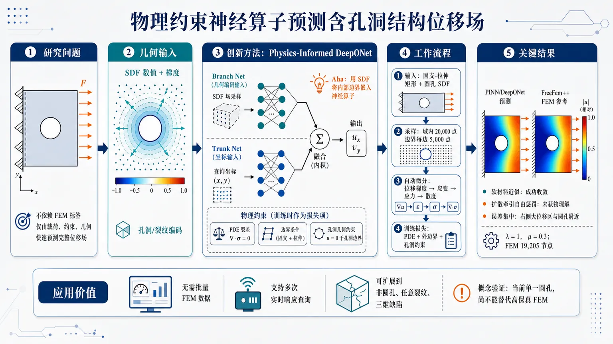
研究问题如何在含孔洞/裂纹的二维线弹性结构中，不依赖 FEM 生成训练标签，仅根据边界载荷、固定约束和几何形状，快速预测完整位移场，用于实时结构健康监测中的多次力学响应查询。创新方法提出物理约束 DeepONet 代理模型：分支网络输入由符号距离函数 SDF 采样得到的孔洞/裂纹几何编码，主干网络输入空间坐标，输出二维位移分量；训练损失由线弹性 PDE 残差、外边界位移/牵引条件和几何感知约束组成。关键 Aha 点是用 SDF 的数值与梯度把内部孔洞边界嵌入神经算子，使模型不需要 FEM 标签也能学习几何相关位移场，并比较了“扩散牵引自由惩罚”和“软材料近似”两种孔洞处理策略。工作流程输入左侧固支、右侧拉伸、上下自由的二维矩形域，以及中心圆孔的 SDF 几何描述；在域内和边界采样配点；DeepONet 分支网络读取 SDF 几何编码，主干网络读取查询坐标；自动微分计算位移梯度、应变、应力和应力散度；用 PDE 平衡残差、边界条件损失和孔洞区域约束训练；输出每个空间点的二维位移场与位移模长，并用 FreeFem++ FEM 参考解进行后验对比。关键结果在 20,000 个域内配点和每条边界 5,000 个边界点训练、Lamé 参数 λ=1、μ=0.3 的设置下，扩散边界惩罚方案未收敛到物理合理解，预测近似无孔结构；软材料近似方案成功收敛，生成的位移模长分布与 19,205 节点 FreeFem++ FEM 参考解定性一致。误差主要集中在右侧大位移区域和圆孔附近，原因与 SDF 平滑指示函数造成的材料过渡层、应力集中和强梯度有关。应用价值为工业数字孪生和结构健康监测提供一种无需预先批量 FEM 数据的实时弹性响应代理建模思路，可降低多几何、多载荷重复求解成本；SDF 几何编码为未来处理非圆孔洞、任意裂纹、三维缺陷和裂纹扩展指标计算提供可扩展框架，但当前仍是单一圆孔概念验证，尚不能替代高保真 FEM 或真实断裂力学仿真。第一部分：核心概览（Overview）
该研究提出一种物理约束 DeepONet 代理模型，用于从边界条件与断裂/孔洞几何描述直接预测二维线弹性位移场，目标服务于结构健康监测中的实时力学响应评估。核心贡献在于：不依赖 FEM 生成训练数据，而通过偏微分方程残差、边界条件与几何感知约束训练神经算子；并引入符号距离函数（SDF）编码内部孔洞/裂纹几何。数值验证聚焦单一圆孔几何，显示“软材料近似”方案可获得与 FEM 定性一致的位移场。该工作处于概念验证阶段，尚未证明跨几何泛化能力，但为几何感知、物理一致的断裂力学代理建模提供了可扩展框架。
---
第二部分：结构化快速回顾
《Learning Physics-Informed Surrogate Model of Linear Elastic Displacement Fields from Geometry》（None，）
背景
结构健康监测和工业数字孪生需要快速、重复地预测含孔洞、缺口或裂纹结构的力学响应。传统 FEM 精度高，但在多几何、多载荷、多边界条件反复求解时计算代价高，容易成为实时监测和设计循环中的瓶颈。
方法
采用物理约束 DeepONet 学习从边界条件 + 几何编码到完整二维位移场 ((uₓ,u_y)) 的算子映射。几何通过符号距离函数 (φ) 输入分支网络；空间坐标输入主干网络；训练中利用自动微分计算应力散度、边界牵引和位移约束。提出两种内部孔洞处理策略：扩散边界惩罚与软材料近似。
结果
固定网络深度，使用 20,000 个域内配点和每条边界 5,000 个边界点训练；Lamé 参数取 (łambda=1)、(μ=0.3)。第一种扩散牵引自由惩罚方案未收敛到物理合理解；第二种软材料方案收敛，并得到与 FreeFem++ FEM 参考解定性一致的位移模长分布。FEM 网格包含 19,205 个节点，内圆边界局部加密。
讨论
误差主要集中在大位移区域及孔洞附近，原因与平滑指示函数 (H_ǎrepsilon(φ)) 在孔洞与实体材料之间引入过渡层有关。该区域同时对应强梯度、应力集中和几何奇异性，神经网络连续性偏置与平滑近似会削弱尖锐力学特征表达。
局限
只测试单一固定半径圆孔，不能支持跨几何泛化结论；未给出推理时间、训练时间、误差范数、统计显著性或多随机种子结果；孔洞用软材料和平滑过渡近似，尚不能准确代表尖裂纹尖端的奇异应力场。
结论
物理约束 DeepONet 可在无 FEM 训练数据条件下学习含孔弹性域位移场。更有效的空间网络结构、孔洞附近过采样、KAN 主干网络、非圆几何、三维域和裂纹扩展指标如 J 积分与 Paris–Erdogan 定律将是后续关键方向。
---
第三部分：逐章节冷凝解析（Section-by-Section Condensing）
Abstract
Fast physics-informed surrogate for fractured elastic domains
研究目标是构建用于实时结构健康监测的快速、物理一致代理模型，任务对象是含断裂弹性域中的线弹性位移场。摘要明确目标为 *"a fast and physically consistent surrogate model for real-time structural health monitoring of fractured elastic domains"*。这一定位强调两个约束：一是速度要适配实时监测，二是预测必须满足力学物理规律，而非单纯数据拟合。
DeepONet predicts displacement from boundary conditions and fracture geometry
模型采用物理约束 DeepONet，输入同时包含边界条件与断裂几何，输出完整位移场。摘要表述为 *"predicts displacement fields from both boundary conditions and fracture geometry"*。这区别于只对固定几何或固定载荷做代理建模的常规方案，因为算子输入中显式包含几何信息。
No FEM-generated training data
训练不依赖有限元生成的监督数据，直接通过物理残差和边界条件约束网络。摘要明确写出 *"without relying on finite-element-generated training data"*。这构成方法论上的关键差异：FEM 只用于后验参考比较，而非用于产生训练标签。
Weak imposition of traction-free fracture boundary
裂纹/孔洞边界上的牵引自由条件通过局部惩罚项弱施加，而不是强制嵌入网络输出形式。摘要说明 *"The traction-free condition on the fracture boundary is imposed weakly through a localized penalty term"*。这种处理试图绕开标准 DeepONet 对输入相关边界条件支持不足的问题。
Proof-of-concept rather than demonstrated geometry generalization
数值实验只聚焦一个代表性断裂几何，目标是验证公式可行性，而不是完成跨几何泛化证明。摘要指出 *"focuses on one representative fracture geometry"*，并进一步限定其意义为 *"demonstrating the feasibility of the formulation and laying the groundwork for extensions to surrogate modeling across diverse fracture geometries"*。
---
1 Introduction
Real-time structural response is central to industrial digital twins
结构健康监测、工业数字孪生和智能资产控制需要快速预测结构部件机械响应。引言开宗明义指出 *"Structural health monitoring and management is required in numerous industrial applications"*，并强调 *"accurately and in real time predicting the mechanical response of structural components is essential for the next generation of industrial digital twins"*。这里的应用背景不是离线高精度仿真，而是可反复调用的实时预测。
Geometric discontinuities create strong gradients and FEM cost
孔洞、缺口和裂纹会产生强空间梯度，通常需要高保真 FEM。原文列举 *"geometric discontinuities, such as holes, notches and cracks"*，并说明这些特征 *"create strong spatial gradients and usually require high-fidelity finite element method (FEM) simulations"*。这种强梯度也是后续神经网络误差集中在孔边附近的物理根源。
FEM becomes a bottleneck in many-query settings
FEM 对每个新几何、载荷或边界条件都要重新离散和求解，因此在监测、控制和设计循环中成本高。引言指出 *"the computational cost can be prohibitive in settings involving repeated evaluations across different geometries, loads or boundary conditions"*，并进一步归纳为 *"classical FEM solvers become a computational bottleneck in applications requiring repeated evaluations"*。
Operator learning targets solution maps rather than pointwise mappings
神经算子学习的是函数到函数的映射，而非普通神经网络中的有限维向量映射。原文对算子学习定位为 *"Rather than approximating pointwise input-output relationships, neural operators aim to learn the solution operator that maps functional inputs"*。输入可为分布载荷、边界条件、几何描述符，输出可为位移场或应变场，即 *"distributed loads, boundary conditions, or geometric descriptors, to entire fields"*。
DeepONet is used for geometry-aware displacement prediction without FEM labels
研究目标是检验 DeepONet 是否能从边界条件和几何描述预测完整位移场，且不依赖 FEM 训练数据。核心句为 *"the objective is to investigate the ability of a DeepONet-based framework ... to learn the mapping from boundary conditions and a geometry description to the full displacement field, without relying on FEM-generated training data"*。
Main originality lies in geometry encoding
核心原创点被明确定位为几何编码策略，让裂纹或内部空洞几何直接作为算子输入。原文写道 *"The main originality of the work lies in the proposed geometry-encoding strategy"*，并进一步说明该策略 *"allows the fracture or internal void geometry to be provided directly as an input to the operator"*。其意义是兼容非参数化几何描述，即 *"compatible with non-parametric geometry descriptions"*。
Numerical scope is deliberately limited
尽管方法面向多样裂纹几何，当前数值结果只覆盖一个代表性裂纹几何。引言明确限定 *"the numerical results presented in this paper focus on one representative fracture geometry"*，其功能是 *"a proof of concept for the proposed formulation"*，而非严格泛化评估。
---
2 Related Work
FEM is the standard model-based framework for linear elasticity
线弹性位移场传统上通过模型驱动数值方法求解，包括平衡方程、材料本构和边界条件的离散化。相关工作部分指出 *"The numerical computation of displacement fields in linear elasticity is traditionally addressed through model-based approaches"*，并定义 FEM 为 *"the standard framework for this purpose"*。引用基础为 Brenner and Scott (2008)，对应小变形弹性理论。
FEM is reliable but expensive for new loading cases or geometries
FEM 的优势是可靠，限制是每个新载荷或新几何都要解一个新的离散力学问题。原文精确表述为 *"These physics-based methods provide reliable solutions, but they require solving a discretized mechanical problem for each new loading case or geometry"*。这直接支撑代理模型的必要性，尤其是 *"many-query or real-time monitoring contexts"*。
Kiyani et al. 2025 is the closest DeepONet fracture mechanics reference
最接近的工作是 Kiyani et al. (2025)，同样使用 DeepONet 处理断裂问题。原文写出 *"The work of Kiyani et al. (2025) is the closest to the approach proposed here to train a surrogate model"*。该工作使用相场法预测裂纹萌生与扩展，即 *"predict crack nucleation and propagation by using the phase-field method"*。
Kiyani et al. uses energy functional loss and KAN trunk
Kiyani 等将断裂视为能量最小化问题，训练损失由相应能量泛函指导；同时用 Kolmogorov–Arnold network（KAN） 替代标准 MLP 主干网络。原文描述为 *"This method treats fracture as an energy minimization problem, with the corresponding energy functional serving as the loss function"*，并说明 *"the standard multi-layer perceptron (MLP)-based trunk network is replaced by a Kolmogorov–Arnold network (KAN)"*。其目标是获得 *"a richer representation of spatial dependence"*。
Drosopoulos et al. 2025 uses FEM-generated nonlinear composite failure data
Drosopoulos et al. (2025) 使用 DeepONet 预测二维纤维增强复合板在多种载荷下的失效响应，但训练数据来自非线性 FEM。原文为 *"constructed a dataset of nonlinear finite-element simulations over different domain configurations in order to train the neural operator"*。其分支网络输入为整数编码的载荷与纤维增强特征，即 *"encoded as integers and supplied to the branch network"*。
DeepONet outperforms conventional feed-forward networks in compared prior work
Drosopoulos 等对比 DeepONet 和常规前馈网络，使用相同输入输出结构但无算子分解。原文指出 *"compare the predictive accuracy of the DeepONet model with that of a conventional feed-forward neural network"*，并测试未见过的分支—主干输入组合，展示 *"improved predictive capability of the DeepONet framework"*。
Key gap: existing DeepONet fracture works rely on FEM datasets
已有 DeepONet 断裂力学工作仍依赖 FEM 生成数据。相关工作部分明确总结 *"Although these approaches demonstrate the potential of DeepONets for fracture mechanics, they still rely on datasets generated from finite-element simulations"*。该研究的差异在于 *"a fully physics-informed formulation trained without FEM-generated data"*。
---
3 Methodology
Goal: predict displacement field from geometry, material properties, and boundary conditions
方法目标是预测给定域上的位移场，模型输入包括几何、物理性质和边界条件。原文写道 *"This paper aims to predict the displacement field over a given domain"*，并说明输入为 *"the domain’s geometry, physical properties, and boundary conditions"*。输出是重构相应物理解。
Training is governed by PDE constraints
网络学习过程通过施加控制方程约束来保证物理一致性。方法部分写出 *"the learning process of neural networks is guided by enforcing the governing partial differential equations of the problem"*，目标是让预测 *"remain consistent with the underlying physics"*。这对应 PINN/PIML 风格的无标签训练。
Surrogate model is expected to be lightweight and geometry-dependent
代理模型目标是快速推理且显式依赖几何。原文说明 *"The objective is to obtain a lightweight surrogate model with fast inference whose predictions depend explicitly on the domain geometry"*。与 FEM 对比的目标是降低计算代价，即 *"outperform standard FEM-based methods in terms of computational cost"*。
Example geometry: fixed left edge, free top and bottom, tensile load on right, central circular hole
二维域设置为左侧固定、上下自由、右侧施加载荷，中心有孔洞并施加牵引自由边界。方法部分描述 *"The domain is fixed on the left, free on the top and bottom, and a force is applied to the right"*，并指出 *"there is a hole located at the center that is enforced with a traction-free boundary condition"*。为简单起见，断裂建模为半径可变圆孔：*"the fracture is modeled as a circular hole but with varying radii"*。
Operator learns mapping from circular-hole geometry to physical solution
在该简单例子中，DeepONet 学习从圆孔半径表示的几何到位移场的映射。原文表述为 *"The mapping from the fracture geometry (in this case, the radius of a circle) of the 2D tensile-loaded domain to the corresponding physical solution is learned using a neural-operator approach"*。应力场可从位移场后处理得到，即 *"The stress field can subsequently be obtained from this solution"*。
---
3.1 The DeepONet framework for a linear elastic problem.
DeepONet approximates operators from input functions to output functions
DeepONet 被定义为学习线性和非线性算子的神经架构。原文为 *"Deep Operator Networks (DeepONets) ... are neural architectures specifically designed to learn linear and nonlinear operators"*。与传统神经网络不同，DeepONet 不只处理有限维向量映射，而是 *"approximate mappings from input functions to output functions"*。
Branch network encodes functional input; trunk network encodes query location
DeepONet 由两个子网络组成：分支网络处理输入函数离散采样，主干网络处理输出函数的查询位置。原文写道 *"The branch network processes a discrete representation of the input function"*，而 *"The trunk network encodes the coordinates ... at which the output function is evaluated"*。二者通常通过潜变量内积组合，即 *"via an inner product between the latent outputs of the branch and trunk networks"*。
Universal approximation capability supports PDE solution operators
DeepONet 的算子逼近能力适用于参数化 PDE 解算子。原文指出这种结构 *"has been shown to give DeepONets universal approximation capabilities for a broad class of operators"*，包括 *"those governing solutions of parametrized partial differential equations (PDEs)"*。因此它适合学习依赖边界条件、载荷、材料分布和几何参数的高维解映射。
Linear elasticity operator maps boundary conditions and geometry to displacement
当前问题中的算子由各向同性线弹性方程、几何特征和边界条件共同定义。原文说明 *"the operator is defined by the equations of linear elasticity for an isotropic solid, together with the geometric features that characterize the domain and the boundary conditions"*。这些输入完全决定映射 *"from boundary conditions and geometry to the displacement field"*。
Output displacement has two components and physics residuals use automatic differentiation
DeepONet 输出为二维位移场 (u=(uₓ,u_y))。原文写作 *"The DeepONet output is the displacement field u, consisting of its two components (ux, uy)"*。通过自动微分计算空间导数，使网络可在任意评估点满足线弹性方程：*"automatic differentiation ... enables efficient computation of spatial derivatives of the network output with respect to its inputs"*。
Standard DeepXDE DeepONet cannot naturally handle branch-dependent boundary conditions
几何依赖边界条件，尤其内部裂纹边界牵引自由条件，是关键难点。原文指出 *"A key difficulty arises when enforcing geometry-dependent boundary conditions"*，并具体说明 *"In the native DeepXDE implementation of DeepONet, boundary conditions are imposed regardless of the branch network inputs"*。这意味着如果孔洞几何作为分支输入变化，标准边界条件机制不能随几何自适应改变。
Signed distance function enables geometry-aware weak boundary imposition
为解决上述问题，框架引入符号距离函数 (φ)，表示任意点到裂纹边界的有向距离。原文定义为 *"a signed distance function, denoted by the symbol ϕ, which measures the oriented distance from any evaluation point to the fracture boundary"*。其数值和梯度提供局部几何信息：*"The value and gradient of ϕ provide local geometric information"*，可检测裂纹界面邻近性并施加牵引自由条件。
Two SDF-based strategies are proposed
方法提出两种利用 (φ) 的策略：扩散边界施加和软材料方法。原文指出 *"two distinct strategies are proposed to leverage the signed distance function ϕ for imposing geometry-dependent conditions"*。两者共同目标是让算子显式依赖分支网络编码的几何：*"allow the operator to explicitly rely on the underlying geometry encoded by the branch network"*。
---
3.1.1 Option 1: Diffuse boundary imposition.
Equilibrium equation is enforced inside the domain
第一种方案使用 (φ) 在内部边界附近以扩散方式施加牵引自由条件，同时在域内施加机械平衡。控制系统包括 (nablaḑotboldsymbolσ(u)=0)。原文解释为 *"a zero-divergence ∇⋅σ(u)=0 condition is imposed on the stress field at interior points to enforce mechanical equilibrium"*。
External boundary conditions include clamping and traction
左边界为固支，右边界为牵引载荷。原文明确写出 *"A clamped boundary condition is applied to the left edge u=0, prescribing zero displacement"*，以及 *"a normal traction load is imposed to the right edge σ(u)nb=tN"*。上下边界在整体设置中为自由边界。
SDF gradient provides fracture boundary normal
(nablaφ) 的方向由域内点到裂纹边界最短路径确定，因此可作为孔洞轮廓法向。原文描述为 *"The orientation of the distance function gradient is provided by the direction of the shortest path to the fracture boundary"*，并得出 *"the gradient of the distance function, denoted by ∇ϕ, corresponds to the normal vector to the fracture contour"*。
Traction-free condition is applied through a localized diffuse weight
牵引自由即孔洞边界法向应力为零，通过 (δ(φ)) 平滑激活惩罚。原文指出 *"A zero-traction condition, i.e. a zero normal stress condition, must be imposed along this boundary"*，并说明该条件 *"occurs in a diffuse manner through a weighting coefficient, δ(ϕ)"*。当点靠近界面时，惩罚项随 (δ(φ)) 激活：*"When points are sampled near this interface, the penalty activates smoothly according to the value of δ(ϕ)"*。
Projection formula maps points to the zero-level fracture contour
公式
[
p^*=p-fracφ(p)|nablaφ(p)|²nablaφ(p)
]
将点 (p) 沿 (nablaφ(p)) 方向投影到 (φ=0) 的裂纹边界。原文说明 *"It moves p along the direction of ∇ϕ(p) by exactly the amount needed to reach the fracture contour"*，使 (p^*) 位于 *"the zero–level set where the traction-free boundary condition is imposed"*。
---
3.1.2 Option 2: Compliant material approach.
Internal boundary is modeled implicitly as a soft material region
第二种方案避免显式施加孔洞边界牵引自由条件，而是把孔洞区域建模为极软材料。原文写道 *"The second approach for representing the internal boundary avoids enforcing the traction-free condition explicitly"*，并说明 *"the hole is modeled as a soft (or 'compliant') material region"*。这将边界条件问题转化为材料异质性问题。
SDF modulates mechanical properties
符号距离函数 (φ) 用于调制材料属性并把几何信息嵌入控制方程。原文表达为 *"The signed distance function ϕ is again used to modulate these properties and to embed the geometric information directly into the governing equations"*。对应应力为
[
boldsymbolσ_H(u)
=
H_ǎrepsilon(φ)boldsymbolσ_b(u)
+
(1-H_ǎrepsilon(φ))boldsymbolσₛ₍ᵤ₎
]
其中 (b) 表示 bulk，(s) 表示 soft region。
Smooth indicator function separates bulk and fracture regions
平滑指示函数定义为
[
H_ǎrepsilon(φ)=frac12łeft(1+tanh(φ/ǎrepsilonₜᵣₐₙₛ)i̊ght)
]
原文写作 *"we define a smooth indicator function of the intact material"*。其性质是 (φ>0) 的实体区 (H_ǎrepsilon(φ)approx1)，(φ<0) 的扩散裂纹区 (H_ǎrepsilon(φ)approx0)，即 *"Hε(ϕ)≈1 in the bulk region"* 和 *"Hε(ϕ)≈0 inside the (diffuse) fracture region"*。
Geometry encoding uses SDF values sampled in the domain
分支网络的几何输入由域内若干点上的 (φ) 值构成。原文指出 *"To encode the fracture geometry as input for the branch network of the DeepONet, the distance function is evaluated at various points within the domain"*。这是一种非参数化潜力较强的几何编码方式，因为不要求几何必须由少量显式参数描述。
Encoding must be injective across geometries
不同几何必须对应不同编码，否则算子无法区分。原文明确要求 *"Each geometry must be assigned a distinct encoding to ensure an injective mapping"*。因此采样点数量和分支网络输入维度至少要保证可区分性：*"the number of evaluations and branch net entries must at least guarantee this"*。
For concentric circles, one extra SDF point beyond center suffices
在同心圆孔的简单案例中，半径即可区分几何。原文说明 *"In the simple case of a circles with the same center, their radius distinguish them"*，因此 *"only one additional point of evaluation besides the center is required to distinguish any number of different circles"*。这说明当前几何编码是最小化设置，而不是完整复杂几何编码实验。
General arbitrary-shape geometry learning remains future objective
当前只考虑简单几何和最小编码。原文写道 *"For the present work, we restrict attention to simple geometries and minimal encodings"*。长期目标是处理任意形状和复杂几何参数化：*"develop a more general formulation capable of handling arbitrary shapes and more complex geometric parameterizations"*。
---
3.2 Finite Element Methods as a reference
FEM is used only as reference validation
模型输出与 FEM 在相同几何、载荷、边界条件和各向同性假设下比较。原文写道 *"To validate the model output, it is compared with FEM simulation with identical geometry, loading, boundary conditions, and isotropy"*。这说明 FEM 不参与训练标签生成，而是用于后验验证。
FreeFem++ implementation solves weak linear elasticity form
FEM 模拟使用开源库 FreeFem++。原文为 *"The FEM simulation was performed with the FreeFem++ open source library"*。弱式为
[
intØₘₑgₐłeft(łambda(nablaḑot u)(nablaḑot v)+2μǎrepsilon(u):ǎrepsilon(v)i̊ght)dx
=
intΓ_NT₀ᵥₓds
]
其中右边界 (Γ_N) 承受 (x) 向牵引。
Lamé coefficients define isotropic material response
Lamé 系数 (łambda) 和 (μ) 表征各向同性材料。原文解释 *"Lamé coefficients λ and μ characterize an isotropic material"*，并进一步区分二者：*"λ controls the compressive response, whereas μ is the shear modulus and governs the deviatoric deformation"*。
FEM mesh contains 19,205 nodes with inner boundary refinement
FEM 参考解的网格包含 19,205 个节点，并在内圆边界加密。原文给出精确数值：*"For this simulation the meshing consists of 19,205 nodes with a refined mesh along the inner circle boundary"*。这为后续比较提供了相对高分辨率参考，特别是孔边梯度区域。
Reference displacement magnitude agrees with literature
FEM 显示二维中心圆孔域的位移模长 (sqrtuₓ²⁺u_y²)。原文指出 *"The resulting displacement magnitude ... for 2D domain with a circular hole at its center is shown in Fig. 5"*，并说明该结果 *"is consistent with what can be found in the literature, for instance in Jiang et al. (2014)"*。
---
4 Results
Hyperparameter grid includes learning rate, smoothing, and sampling
训练比较两种方案，并对学习率、平滑参数和采样策略做超参数网格搜索。结果部分写道 *"The learning process consists of evaluating each of the two options presented above over a grid of hyperparameters, including the learning rate, smoothing parameters, and sampling strategies"*。但未报告具体学习率数值、网格大小或最优参数表。
Network depth and collocation counts are fixed
实验中网络深度固定，配点数量固定：域内 20,000 点，每条边界 5,000 点。原文给出 *"the network depth was kept fixed, as was the number of collocation points: 20,000 points were sampled in the domain and 5,000 points on each boundary"*。这些点用于物理残差和边界损失训练。
Lamé parameters are arbitrary and not material-calibrated
材料参数取 (łambda=1)、(μ=0.3)，且不代表具体物理材料。原文明确写出 *"The Lamé parameters were selected arbitrarily, λ=1 and μ=0.3, without the intention of representing any specific physical material"*。因此实验重点是方法可行性，而非工程材料标定。
Only one fixed geometry is tested
当前只考虑一个固定内半径几何，因此无法证明神经算子跨几何泛化。原文严肃限定 *"only a single geometry with a fixed inner radius was considered"*，并直接指出 *"no claim can be made regarding the generalization capability of the neural operator across multiple geometries"*。
Option 1 fails to converge to a physical solution
扩散惩罚显式施加牵引自由边界的第一种方案未获得物理合理解。原文写道 *"The first formulation ... did not converge to a physically meaningful solution"*。在最优情况下，模型预测接近无孔域解：*"the predicted displacement field corresponds essentially to that of a domain without any hole"*。
Loss imbalance undermines diffuse traction-free training
第一种方案失败的关键原因之一是右边界牵引损失与内部牵引自由弱约束损失无法平衡。原文指出 *"The losses associated with the right-boundary traction and the weakly enforced traction-free constraint do not appear to balance during training"*，并说明 *"one consistently dominating the other"*。这表明多损失项权重调节是此类物理约束神经网络的关键瓶颈。
Sharp interface transition creates steep gradients
内部界面附近的尖锐过渡导致高梯度目标函数，网络难以同时满足内部平衡和牵引自由边界。原文写出 *"the sharp transition near the interface induces steep gradients"*，并说明这种目标行为使网络 *"challenging ... to accurately interpolate between the internal mechanical equilibrium and the traction-free boundary condition"*。
Option 2 converges and produces coherent results
软材料近似方案取得收敛和物理一致结果。结果部分明确写道 *"the second option—in which the hole is modeled as a soft material—is the one that delivered coherent results"*，并进一步说明 *"The training converged ... and it is physically coherent"*。后续图示结果均采用该方案。
DeepONet displacement magnitude is qualitatively consistent with FEM
图 6 的 DeepONet 位移模长与 FEM 参考解在模式上定性一致，差异约为小数位量级。原文写作 *"The corresponding displacement magnitude ... exhibits a pattern qualitatively consistent with the FEM reference solution"*，并说明误差为 *"discrepancies on the order of a few decimal digits"*。不过未提供 (L²)、(Lⁱⁿfty)、相对误差或统计指标。
Best visualization configuration is selected empirically
用于展示的超参数配置是经验选择的最低训练损失组合。原文说明 *"the hyperparameter configuration producing the lowest training loss was selected empirically"*。同时多个配置也能收敛：*"several other tested configurations yielded similarly satisfactory convergence"*。这显示方法不完全依赖单一偶然配置，但缺少系统鲁棒性统计。
Pointwise error is evaluated on same sample points as FEM and DeepONet
图 8 展示 FEM 与 DeepONet 在同一采样点上的逐点误差。原文写出 *"Fig. 8 shows the pointwise error, evaluated on the same set of sample points for both the finite element solution and the DeepONet model"*。这种比较避免插值点不一致带来的部分误差，但未说明采样点数量和误差范数定义。
Error concentrates near large displacement and competing traction regions
误差集中在大位移区域，以及右侧牵引与孔洞近零牵引相互竞争的位置。原文指出 *"The error is concentrated in regions where large displacements are expected"*，并解释为 *"where the traction imposed on the right boundary competes with the (nearly) zero traction implicitly enforced on the inner circular boundary"*。
Smoothing function likely causes transition-region error
误差可能源于 (H_ǎrepsilon(φ)) 对孔洞与实体域之间过渡的平滑。原文判断 *"This is most likely due to the function Hε(ϕ) that smooths the transition between the approximated hole and the rest of the domain"*。该区域恰是近似引入位置，也是应力集中发生位置：*"it is also where geometric singularities, and therefore stress concentrations, arise"*。
---
5 Conclusion and perspectives
Feasibility is demonstrated for physics-informed DeepONet without FEM training data
结论指出物理约束 DeepONet 可在不依赖 FEM 训练数据的情况下预测含孔弹性域位移场。原文写道 *"demonstrates the feasibility of using a physics-informed DeepONet framework to predict displacement fields in perforated elastic domains without relying on FEM-generated training data"*。这是该研究的主结论，但仍限于简单二维孔洞案例。
Two geometry-dependent displacement reconstruction variants are investigated
研究比较两种网络训练变体，用于重构受拉伸载荷域中的位移场。结论写明 *"We investigated two variants to train the network to reconstruct the field of displacement depending on a domain geometry under a tensile load"*。结果显示软材料变体优于扩散边界惩罚变体。
More expressive trunk networks may improve spatial representation
主干网络控制空间坐标如何贡献输出，更强表达力结构可能改善复杂几何下的解场表示。原文写道 *"A first avenue concerns the architecture of the trunk network"*，并解释其作用为 *"governs how spatial coordinates contribute to the operator output"*。更强结构可 *"better capture the geometric specificities of the domain"*。
KAN is proposed as a promising trunk-network alternative
Kolmogorov–Arnold Networks（KANs） 被列为可能增强空间复杂场表示的架构。结论指出 *"Kolmogorov–Arnold Networks (KANs) ... could enhance the representation of spatially complex solution fields"*，并关联 Kiyani et al. (2025) 中 KAN 已用于断裂预测：*"already used effectively for fracture prediction in Kiyani et al. (2025)"*。
Oversampling near fracture could reduce steep-gradient errors
采样策略也可改进，尤其应在裂纹附近过采样，类似 FEM 的局部网格加密。原文建议 *"oversampling the region around the fracture, in the spirit of local mesh refinement in FEM"*，目标是减少 *"errors in regions dominated by steep gradients or stress concentrations"*。
Current two-dimensional circular-hole setup is not realistic fracture mechanics
当前配置过于简单，无法代表真实裂纹情形。结论明确指出 *"The present study only considers a simple two-dimensional configuration that does not fully reflect realistic fracture scenarios"*。待验证对象包括非圆缺陷、任意形状和三维域：*"non-circular defects, arbitrary shapes, or three-dimensional domains"*。
Continuity enforcement may suppress geometric singularities
为促进收敛而施加的连续性可能削弱网络对几何奇异特征的表达。原文指出 *"because the network enforces continuity to facilitate convergence, it may struggle to reproduce features associated with geometric singularities"*。例如矩形域角点解析解存在应力集中，但平滑近似会阻止模型捕捉尖锐变化：*"localized smoothing introduced by our formulation can prevent the model from capturing these sharp variations"*。
Smoothing influence requires systematic analysis
平滑过程及其对关键区域精度的影响需要更系统研究。原文直接提出 *"A more systematic analysis of the smoothing procedure and its influence on accuracy in critical regions is needed"*。这是当前软材料方案的核心开放问题，因为平滑既帮助收敛，也损失裂纹尖端奇异性。
Long-term goal is fracture propagation inference from predicted displacement fields
长期目标是直接从神经算子预测的位移场推断裂纹扩展。原文表述为 *"A longer-term objective of this line of work is to infer fracture propagation directly from the displacement fields predicted by the neural operator"*。这将代理模型从静态场预测推进到疲劳损伤演化预测。
Paris–Erdogan law links crack growth to stress intensity factor range
裂纹扩展可由 Paris–Erdogan 定律描述：
[
Δ K=Kₘₐₓ-Kₘᵢₙ,qquad fracdadN=C(Δ K)^m
]
原文解释为 *"provides an empirical relationship between the fracture growth rate and the range of the stress intensity factor"*，其中 (C) 和 (m) 是材料常数：*"C and m are material-dependent constants"*。
J-integral could estimate stress intensity without FEM
为避免 FEM，可从预测位移场计算 J 积分评估 (Δ K)。结论写道 *"To evaluate ΔK without relying on FEM, one may compute the J-integral ... from the predicted displacement field"*。J 积分形式为
[
J=intΓłeft(Wδ₁ⱼ-σᵢⱼfracpartial uᵢpartial x₁i̊ght)nⱼds
]
各项可由位移梯度与 Hooke 定律表达：*"with each term expressed in terms of displacement gradients and Hooke’s law"*。
Sharp cracks and stress singularities remain the major future challenge
J 积分方法面向尖裂纹，因此神经算子最终必须处理不连续边界和强应力奇异性。结论给出关键挑战：*"Since this method is designed for sharp cracks, the neural operator must ultimately be able to represent displacement fields in geometries with discontinuous boundaries and strong stress singularities"*。这也是当前圆孔平滑近似与真实裂纹预测之间最大的理论和数值差距。
---
第四部分：深度理解与语言支持（Understanding & Nuance）
1. 术语解析
Physics-informed surrogate model
学术含义：一种用神经网络近似昂贵数值求解器的替代模型，但训练时不只拟合数据，还把 PDE、边界条件、守恒律等物理约束写入损失函数。这里的 *physics-informed* 不等于“物理启发”，而是指预测必须通过残差项满足线弹性方程。
细微差别：
- data-driven surrogate：依赖 FEM/实验标签学习输入输出映射。
- physics-informed surrogate：可无标签训练，通过物理方程约束。
- 当前工作属于后者，关键句是 *"without relying on FEM-generated training data"*。
Operator learning
学术含义：学习一个从函数到函数的映射，例如从边界载荷函数、几何描述函数到位移场函数。与普通神经网络预测单个数值或有限维向量不同，神经算子学习的是完整解算子。
细微差别：
- 普通网络：(Rⁿ→R^m)。
- 神经算子：函数空间 (A→U)。
- DeepONet 通过 branch/trunk 分解实现这种映射。
Signed distance function（SDF）
学术含义：给定一个点，返回该点到边界的有向距离；符号区分边界内外。这里 (φ>0) 表示实体材料区域，(φ<0) 表示孔洞/扩散裂纹区域，(φ=0) 表示孔洞边界。
细微差别：SDF 不只是距离标量，还隐含几何法向，因为 (nablaφ) 指向边界法向。该性质用于孔洞边界牵引自由条件。
Traction-free boundary condition
学术含义：边界上没有外部表面力，即
[
boldsymbolσ(u)n=0
]
这里不是位移为零，而是应力张量投影到边界法向后的牵引为零。孔洞或裂纹表面通常近似为牵引自由。
细微差别：
- clamped boundary：位移条件，(u=0)。
- traction boundary：力/应力条件，(boldsymbolσn=t)。
- traction-free：特殊力边界，(t=0)。
Compliant material approach
学术含义：不用显式删除孔洞或施加内边界条件，而是把孔洞区域替换成刚度极低的软材料。这样整个域保持连续，PDE 可在统一区域上写出。
细微差别：
- 优点：训练更稳定，避免显式内部边界条件。
- 缺点：孔洞不再是真空边界，而是“软材料近似”；孔边应力集中和奇异性被平滑。
---
2. 疑难查证：几个复杂概念的深入解释
为什么第一种“扩散边界惩罚”会失败？
第一种方法试图在 (φ=0) 附近用 (δ(φ)) 惩罚项让
[
boldsymbolσ(u)n=0
]
成立。问题在于训练同时面对三类约束：
- 域内平衡：(nablaḑotσ=0)
- 右边界受拉：(σ n=t_N)
- 孔洞边界牵引自由：(σ n=0)
右边界施加牵引会在域内传播应力，孔洞边界又要求法向牵引为零。孔边附近解场变化剧烈。神经网络需要在很窄区域内插值出满足两类不同牵引行为的场。如果损失权重稍不平衡，网络会优先满足一个约束而牺牲另一个。结果中出现“像无孔域”的解，说明孔洞牵引自由惩罚没有有效塑造整体解。
为什么第二种“软材料方法”更容易收敛？
软材料方法把孔洞变成低刚度区域，使控制方程仍在整个矩形域上连续成立。网络不需要学习一个真正的内部边界跳变，而只需学习材料属性从 bulk 到 soft 的平滑变化：
[
σ_H=H_ǎrepsilon(φ)σ_b+(1-H_ǎrepsilon(φ))σₛ
]
这降低了优化难度。直观上，相当于把“边界条件难题”转成“材料参数空间变化问题”。神经网络通常更擅长拟合平滑连续函数，因此训练可收敛。
代价是物理上不再是严格孔洞，而是近似孔洞。真实孔洞边界可以产生强应力集中；软材料和平滑过渡会让尖锐特征变钝。
为什么 SDF 编码对几何泛化重要？
如果只把“半径”作为输入，模型只能处理圆孔这类参数化几何。一旦几何变成椭圆、裂纹、非规则孔洞，少数参数很难表达形状。
SDF 提供一种更通用的表示：在若干传感点采样 (φ)，得到一个向量，代表几何相对于这些点的位置关系。只要采样点足够多，不同几何就能产生不同编码。理论上，这可扩展到非参数化形状甚至复杂拓扑。
但当前实验只用单一固定几何，所以 SDF 的跨几何优势还没有被实证验证。
为什么应力奇异性是神经算子预测裂纹扩展的关键障碍？
真实尖裂纹尖端的应力场通常呈奇异行为，例如距离裂尖 (r→0) 时应力近似按 (1/sqrtr) 增大。普通神经网络具有连续和平滑偏置，倾向于生成光滑场。若再引入 (H_ǎrepsilon(φ)) 平滑过渡，裂尖附近的尖锐梯度更容易被抹平。
裂纹扩展需要准确估计 (Δ K)、J 积分或能量释放率，这些量高度依赖裂尖附近应力/位移梯度。若尖端场被平滑，裂纹增长速率预测会系统偏差。
---
第五部分：创新评估与关联（Synthesis & Novelty）
1. 创新性判断
相对于 FEM-based DeepONet fracture surrogates 的新颖性
过去 2–5 年内，DeepONet 已被用于断裂、复合材料失效和裂纹扩展预测，但很多工作依赖 FEM 或相场模拟数据作为训练集。Kiyani et al. (2025) 使用 DeepONet/KAN 预测裂纹萌生和扩展，Drosopoulos et al. (2025) 使用非线性 FEM 数据训练复合材料失效 DeepONet。当前工作的区别是：
- 不使用 FEM 生成训练标签；
- 训练直接由线弹性 PDE、边界条件和几何约束驱动；
- FEM 只作为验证参考；
- 通过 SDF 把内部孔洞几何输入 DeepONet。
这种设置解决了一个核心痛点：如果每个新几何都要先做 FEM 生成训练数据，代理模型在实际监测场景中的数据准备成本仍然很高。无 FEM 标签训练可以降低前处理代价。
相对于传统 PINN 的新颖性
传统 PINN 通常针对单一 PDE 实例求一个解，即固定几何、固定边界条件、固定材料参数。当前框架试图学习的是算子映射，即不同几何/边界条件到位移场的映射。虽然当前结果只展示单一几何，但方法设计上面向几何条件化算子。
创新点在于把 PINN 的物理残差训练与 DeepONet 的函数到函数映射能力结合，并加入 geometry-aware boundary handling。
相对于标准 DeepONet 的新颖性
标准 DeepONet 在 DeepXDE 中的边界条件施加不随分支输入变化，这对几何变化问题是严重限制。当前方法通过 SDF 引入几何感知边界处理：
- (φ) 表示内部边界位置；
- (nablaφ) 提供边界法向；
- (δ(φ)) 或 (H_ǎrepsilon(φ)) 控制孔洞附近物理约束；
- 分支网络输入 SDF 采样值。
这使 DeepONet 具备处理内部边界/孔洞的潜力。
解决的前人问题
主要解决或尝试解决以下问题：
- FEM 数据依赖问题
以物理残差训练替代 FEM 标签训练。
- 几何输入表达问题
用 SDF 采样编码孔洞/裂纹几何，而不局限于少数几何参数。
- 几何相关边界条件问题
用 SDF 和弱约束/软材料策略处理随几何变化的内部牵引自由边界。
- 实时结构健康监测中的重复求解问题
训练后代理模型具备快速推理潜力，可服务于多次查询场景。
创新强度评估
创新强度属于方法组合与几何处理层面的中等偏强创新，而非已完成工程级突破。原因如下：
- 强点：无 FEM 标签、SDF 几何编码、DeepONet + 物理约束、内部边界处理问题明确且重要。
- 弱点：只验证单一固定圆孔，未证明跨几何算子泛化；误差没有系统量化；训练和推理成本没有报告；第一种严格牵引自由方法失败，成功方法依赖软材料近似。
- 领域地位：适合作为几何感知物理神经算子在断裂/孔洞弹性问题中的早期概念验证，为后续非圆裂纹、三维缺陷、裂纹扩展预测奠定基础，但尚不能替代 FEM 或成熟断裂力学仿真流程。
-
07
📊 含图深析
📄 摘要：在三角晶格 J1-J2 Ising 反铁磁体中，作者用局域 Metropolis 更新研究有限速冷却动力学。尽管次近邻反铁磁耦合在平衡态选择条纹相，但有限时间内并不必然到达；文中定义条纹形成时间 n*，并发现其随体系尺寸增大而变慢、随 J2/J1 增大而加快。
💡 亮点：条纹基态并不等于能在有限冷却时间里做出来。这里给出了条纹形成时间 n*，直接揭示动力学可达性受尺寸与耦合比控制。
📖 展开分析 + 配图
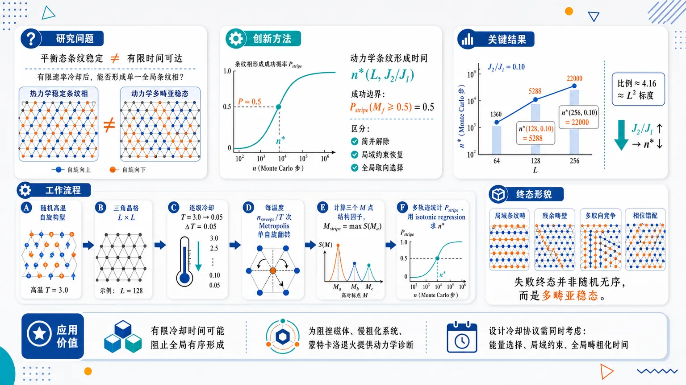
研究问题在三角晶格 J₁–J₂ Ising 反铁磁体中，J₂/J₁>0 虽在平衡态选择条纹相，但局域单自旋 Metropolis 动力学经过有限速率冷却后，系统是否真的能形成单一全局条纹有序；核心矛盾是“热力学稳定的条纹相”与“有限时间动力学可达的条纹相”并不等价。创新方法提出动力学条纹形成时间 n*(L,J₂/J₁)：以终态条纹序参量 Mf≥0.5 的概率达到 0.5 作为条纹成功边界，用概率 crossing 而非平衡相变点来量化可达性；同时区分三件常被混淆的过程：J₂ 解除能量简并、局域最近邻阻挫约束恢复、全局条纹取向选择。工作流程从随机高温自旋构型出发，在 L×L 三角晶格上按 T=3.0 到 0.05、步长 0.05 逐级冷却；每个温度执行 nsweeps/T 次局域 Metropolis 单自旋翻转；在终态计算三个 M 点结构因子并取 Mstripe=max S(Ma)；统计多条独立轨迹中 Mf≥0.5 的比例 Pstripe；用 isotonic regression 找到 Pstripe=0.5 对应的 n*，再分析尺寸、耦合和终态畴形貌。关键结果n* 随系统尺寸显著增大，至少近似按 L² 增长；随 J₂/J₁ 增大而降低，说明更强次近邻反铁磁耦合加速条纹选择。典型结果为 n*(128,0.10)=5288、n*(256,0.10)=22000，比例约 4.16，接近 L 从 128 到 256 的二次标度 4。失败终态通常不是随机无序，而是包含局域条纹畴、残余畴壁、多取向竞争或相位错配。应用价值为阻挫磁体、慢粗化系统和蒙特卡洛退火过程提供可视化的动力学诊断框架：即使某个有序相在平衡态存在，实验或模拟在有限冷却时间内也可能只得到多畴亚稳态；该研究提醒设计材料冷却协议、退火算法和大规模模拟时，必须同时考虑能量选择、局域约束和全局畴粗化时间。第一部分：核心概览 (Overview)
三角晶格 J₁–J₂ Ising 反铁磁体中，反铁磁次近邻耦合 J₂/J₁>0 在平衡态选择 条纹相，但有限速率冷却下的局域 Metropolis 动力学并不保证到达全局条纹有序态。核心贡献在于定义并测量动力学条纹形成时间 n*(L,J₂/J₁)，即最终态满足 P(Mf≥0.5)=0.5 所需的每温度点扫掠数。结果显示 n* 随系统尺寸至少近似 L² 增长，随 J₂/J₁ 增大而降低，失败轨迹常含局域条纹畴、残余畴壁或多取向竞争。该工作将 能量简并解除、局域最近邻约束恢复、全局条纹取向选择 明确区分，强调热力学稳定性不等于有限时间动力学可达性。
---
第二部分：结构化快速回顾
《Finite-time cooling and accessibility of the stripe phase in the Ising antiferromagnet》（None，）
背景
三角晶格最近邻 Ising 反铁磁体因几何阻挫具有宏观简并基态、有限残余熵、零温代数关联和无有限温长程序。加入反铁磁次近邻耦合 J₂/J₁>0 后，平衡态低温条纹相被选择，但局域动力学在有限冷却时间内可能被最近邻阻挫流形的扇区结构、畴壁运动和多取向竞争限制。
方法
使用 L×L 三角晶格、周期边界条件、N=L² 自旋、J₁=1、局域单自旋 Metropolis 更新。冷却协议从 Tinit=3.0 到 Tfinal=0.05，步长 dT=0.05，每个温度演化 nsweeps/T 次。通过三个位于 M 点 的结构因子定义条纹序参量 Mstripe=max S(Ma)，以 Pstripe=P(Mf≥0.5) 定义条纹成功概率，并用 Pstripe=0.5 提取 n*。
结果
n* 随 L 增大显著上升，随 J₂/J₁ 增大下降。典型数值包括 n*(128,0.10)=5288、n*(256,0.10)=22000，比值约 4.16，接近从 128 到 256 的二次标度预期 4。多耦合拟合给出有限窗口指数约 z≈2.1–2.5。
讨论
有限速率冷却产生有限动力学长度尺度。低全局条纹序并不等于无序，许多失败终态已经形成局域条纹畴，但由于畴壁残留、相位错配或条纹取向竞争，无法形成单一全局条纹扇区。
局限
最大尺寸数据存在较宽二项统计不确定性，例如 L=200 弱耦合点和 L=256,J₂/J₁=0.10 的 crossing 均为概率估计。经验拟合中的 Jc^kin 与指数 α 强相关，不能解释为平衡普适临界指数。
结论
条纹相的平衡存在性不代表局域动力学有限时间可达。J₂/J₁ 可以解除能量简并并促进条纹局域形成，但全局条纹取向选择仍受粗化、亚稳陷阱和慢集体松弛控制。
---
第三部分：逐章节冷凝解析
Abstract
Finite-rate cooling creates a kinetic accessibility problem
三角晶格 J₁–J₂ Ising 反铁磁体在局域 Metropolis 动力学下，即便 J₂ 的反铁磁次近邻耦合在平衡态选择条纹相，有限时间冷却也不一定达到全局条纹有序。摘要直接给出核心命题：*"Although an antiferromagnetic next-nearest-neighbor coupling selects a stripe phase in equilibrium, the simulations show that this phase is not automatically reached on finite time scales."* 关键区别在于 equilibrium selection 与 finite-time accessibility 不等价。
Kinetic stripe-formation time is defined probabilistically
动力学阈值定义为 n*(L,J₂/J₁)，由获得全局条纹终态的概率确定。摘要表述为：*"A kinetic stripe-formation time n*(L,J₂/J₁) is defined from the probability of obtaining a globally stripe-ordered final state."* 该时间不是热力学相变点，而是给定冷却协议和局域更新规则下的操作性可达时间。
System size slows ordering and stronger J₂ accelerates ordering
条纹形成时间随系统尺寸增大而移向更慢冷却，随 J₂/J₁ 增大而移向更快冷却。摘要明确指出：*"This time shifts to much slower cooling as the system size increases and to faster cooling as J₂/J₁ increases."* 这说明全局条纹选择受有限尺寸粗化时间限制，且次近邻耦合提供驱动条纹选择的能量尺度。
Scaling is compatible with coarsening and at least quadratic in L
尺寸依赖与粗化控制过程一致，在模拟范围内至少近似 L² 增长。摘要写道：*"The size dependence is compatible with a coarsening-controlled process, with an effective growth at least quadratic in L over the simulated range."* 这将 n* 解释为畴尺度增长到系统尺度所需时间，而非单自旋局域翻转时间。
Failed trajectories are structured, not simply disordered
失败轨迹往往不是高温无序态，而是含有局域条纹畴、残余畴壁或竞争取向。摘要给出形貌诊断结论：*"failed trajectories are not simply disordered states: they often contain locally stripe-ordered domains separated by residual walls or competing orientations."* 因而低 Mf 主要反映全局取向未统一，而不是局域条纹关联缺失。
Three processes are separated
低 J₂/J₁ 区域中，系统可恢复局域最近邻阻挫约束，却仍未选择全局条纹扇区。摘要的总括性创新为：*"These results separate three processes that are usually conflated: energetic degeneracy lifting by J₂/J₁, local constraint restoration, and global stripe-orientation selection under local dynamics."* 这一区分构成全文最重要的概念贡献。
---
I Introduction
Triangular-lattice Ising antiferromagnet is geometrically frustrated
三角晶格不是二分图，一个基本三角形中的三个反铁磁键不能同时满足，导致最近邻三角晶格 Ising 反铁磁体具有高度简并。原文表述为：*"Because the triangular lattice is not bipartite, the three antiferromagnetic bonds of an elementary triangle cannot all be satisfied simultaneously."* 由此产生 macroscopically degenerate ground-state manifold、finite residual entropy、algebraic correlations at zero temperature 和 no conventional finite-temperature long-range order。
Nearest-neighbor ground-state manifold has sector structure
最近邻基态流形可用 dimers、strings 和 height variables 等价描述。原文指出：*"The nearest-neighbor ground-state manifold admits equivalent descriptions in terms of dimers, strings, and height variables."* 在 dimer 表示中，受挫最近邻键映射为对偶蜂窝晶格上的二聚体；与参考构型叠加后得到不相交 strings。
Local dynamics cannot freely connect all sectors
局域动力学受限于最近邻基态流形时，string 数守恒，导致构型空间分裂成局域更新难以互通的扇区。关键句为：*"Under local dynamics restricted to the ground-state manifold, the number of strings is conserved, so the manifold decomposes into sectors that local updates cannot freely connect."* 这直接解释有限时间冷却可能困于动力学可达区域，而非到达平衡选择态。
Antiferromagnetic J₂ selects a stripe phase in equilibrium
真实阻挫系统往往存在超越最近邻的相互作用。三角晶格 Ising 反铁磁体中，反铁磁次近邻耦合可在低温选择共线条纹相，并可能驱动从顺磁相到条纹相的一阶转变。原文写道：*"an antiferromagnetic next-nearest-neighbor coupling selects a collinear stripe phase at low temperatures and can drive a first-order transition from the paramagnetic to the stripe phase."*
Equilibrium stripe existence is not the research question
条纹相的平衡存在性已由以往研究确认，核心问题转向局域动力学有限时间内是否能到达条纹态。原文明确限定问题边界：*"The equilibrium existence of the stripe phase is therefore not the question addressed here."* 这避免将平衡相图问题与动力学可达性问题混淆。
Difference from topological equilibrium sampling studies
研究定位与 Smerald、Korshunov、Mila 的拓扑分析互补。既有工作用 directed-loop 更新高效跨扇区采样；这里保留局域单自旋 Metropolis 动力学，不优化跨扇区采样。原文为：*"optimizing sampling across sectors is not attempted. Instead, keeping a local single-spin Metropolis dynamics and quantifying how difficult it is for such local dynamics to reach the stripe state during a finite-rate cooling protocol is preferred."*
Trapping is a finite-time local-dynamics measurement
动力学滞留不是原则上平衡采样失败，而是局域动力学有限时间的测量对象。原文强调：*"The resulting trapping is therefore not a failure of equilibrium sampling in principle, but a measurement of finite-time local-dynamics."* 因此 n* 的物理含义是局域动力学下的冷却可达阈值。
Thermodynamic stability does not imply dynamical accessibility
核心概念区分直接写出：*"thermodynamic stability does not imply dynamical accessibility."* 在阻挫系统中，趋向有序可能受 slow domain-wall motion、metastability、competing stripe orientations 或最近邻基态流形限制影响。
Weak-J₂ limit is especially sensitive
当 J₂/J₁→0⁺ 时，微弱扰动在能量上选择条纹相，却可能无法在有限时间局域冷却中克服最近邻流形的熵结构和拓扑结构。原文指出：*"A particularly sensitive regime is therefore the limit J₂/J₁→ 0⁺, where the perturbation selects the stripe phase in energy but may be too weak to overcome the entropic and topological structure of the nearest-neighbor manifold during finite-time local cooling."*
Kibble–Zurek scaling is not directly applicable
有限速率有序常用 Kibble–Zurek mechanism 讨论，但该系统不属于标准情形：J₂/J₁=0 无常规有限温有序转变，J₂/J₁>0 的条纹转变预期为一阶。原文说明：*"the present system is not a standard Kibble–Zurek case"*，并补充：*"the usual scaling arguments based on equilibrium critical exponents cannot be applied directly."*
Finite cooling rate still selects a dynamical length scale
虽然不能直接套用 Kibble–Zurek 临界指数，有限冷却速率仍产生有限动力学长度尺度，该尺度决定终态是单畴条纹还是多畴状态。原文为：*"a finite cooling rate selects a finite dynamical length scale, and this length scale determines whether the final state is a single-domain stripe configuration or a multidomain state."*
Hamiltonian fixes the microscopic model
模型哈密顿量为
H = J₁∑⟨i,j⟩ sisj + J₂∑⟨⟨i,j⟩⟩ sisj，其中 J₁>0、J₂/J₁>0、si=±1。原文写作：*"The studied Hamiltonian is: H=J₁sumłₐₙgₗₑ ᵢ,ⱼåₙgₗₑsᵢsⱼ+J₂sumłₐₙgₗₑłₐₙgₗₑ ᵢ,ⱼåₙgₗₑåₙgₗₑsᵢsⱼ"*，并设定工作单位 J₁=1。
Main contribution is the definition and measurement of n*
核心方法创新是操作性定义 finite-rate stripe-formation time n*(L,J₂/J₁)。原文直接表述：*"The main contribution of this article is the definition and measurement of a finite-rate stripe-formation time n*(L,J₂/J₁) under local dynamics."* 其概率定义为达到全局条纹有序的概率为 1/2：*"an operational measure of the cooling time required for an ensemble of trajectories to reach global stripe order with probability 1/2."*
Measured size range and scaling trend
主要尺寸包括 L=64,96,128，扩展到 L=160,200，并在 L=256,J₂/J₁=0.10 做固定耦合检查。引言总结：*"The results for L=64,96,128 are consistent with an approximately L² growth, while runs at L=160 and L=200 show broad large-size corrections and the runs at L=256 and J₂/J₁=0.10 stay close to the quadratic extrapolation from L=128."*
Novelty lies in finite-time accessibility, not stripe identification
研究新意不是发现条纹相，而是量化局域冷却动力学中条纹相的有限时间可达性。原文明确：*"The novelty of the present work is not the identification of the stripe phase itself, but the quantitative measurement of its finite-time accessibility under local cooling dynamics."*
---
II Methods
Lattice size and units are fixed
模拟对象为 L×L 三角晶格，周期边界条件，N=L² 个自旋。设定 J₁=1、kB=1，因此温度和能量无量纲。原文给出：*"The system is simulated by the description of Eq. (1) on an L× L triangular lattice with periodic boundary conditions, using N=L² spins."* 每个格点有 6 个最近邻和 6 个次近邻。
Local Metropolis dynamics defines microscopic time
动力学为局域单自旋 Metropolis 更新，一个 Monte Carlo sweep 包含 N 次尝试翻转。接受概率为 min[1,exp(−ΔE/T)]。原文写道：*"One Monte Carlo sweep corresponds to N attempted spin flips. A proposed flip is accepted with probability min[1,exp(-Δ E/T)]."* 因此时间单位是局域翻转动力学的 sweep。
Lattice coordinate convention is explicitly specified
格点用整数坐标 (x,y) 标记，0≤x,y<L，周期边界。最近邻偏移为 (±1,0)、(0,±1)、(1,−1)、(−1,1)。原文列出：*"the nearest-neighbor offsets are (± 1,0), (0,± 1), (1,-1), (-1,1)."* 次近邻偏移为 (1,1)、(−1,−1)、(2,−1)、(−2,1)、(1,−2)、(−1,2)。
Colored sublattice schedule improves efficiency without making updates nonlocal
为了计算效率，将晶格划分为 4×4=16 个 color classes，按 (x mod 4, y mod 4) 分类。同色格点之间不存在哈密顿量中的最近邻或次近邻相互作用，因此可无冲突扫掠同一色类。原文强调：*"Sites belonging to the same color class do not interact through the nearest-neighbor or next-nearest-neighbor bonds used in the Hamiltonian, so one color class can be swept without internal update conflicts."* 但接受概率仍是局域 Metropolis 概率，不是非局域加速算法。
Update rule is finite-time local dynamics, not optimized equilibrium sampling
方法学关键限定为：*"This update rule should therefore be interpreted as finite-time local dynamics with a fixed microscopic sweep convention, not as an equilibrium-optimized non-local algorithm."* 这保证观测到的滞留具有局域动力学意义，而不是算法未优化的偶然产物。
Cooling protocol uses fixed temperature grid
主冷却协议从随机高温构型 Tinit=3.0 开始，降至 Tfinal=0.05，温度步长 dT=0.05。每个温度演化 nsweeps/T sweeps，并将当前温度终态作为下一温度初态。原文为：*"starts from a random high-temperature configuration at Tᵢₙᵢₜ=3.0 and decreases the temperature down to Tfᵢₙₐₗ=0.05 with a fixed step dT=0.05."*
Main global finite-rate datasets cover L=64,96,128 and five couplings
主数据使用 L=64,96,128，J₂/J₁=0.08,0.09,0.10,0.11,0.15，nsweeps/T=500–20000。多数点有 Nseeds=50 独立轨迹，边界区域 J₂/J₁=0.09,0.10 的慢速点强化到 Nseeds=125。原文列明：*"The global finite-rate datasets use L=64,96,128, J₂/J₁=0.08,0.09,0.10,0.11,0.15, and nₛwₑₑₚₛ/T=500 to 20000."*
Large-size simulations extend to L=160,200,256
大尺寸检查包括 L=160，同五个耦合，nsweeps/T=3000–40000，Nseeds=50。L=200 对弱耦合 0.08,0.09 使用 10000–80000、40 seeds；对 0.10,0.11,0.15 使用 1000–30000、60 seeds，并补充 10000–60000、30 seeds。L=256,J₂/J₁=0.10 使用 10000–40000、每点 100 seeds。原文说明：*"A further run was performed at L=256 for J₂/J₁=0.10, using nₛwₑₑₚₛ/T=10000 to 40000 with Nₛₑₑdₛ=100 independent trajectories per point."*
Largest sizes have explicit binomial uncertainty
最大尺寸 crossing 不应解释为精确时间。L=200 的样本量 40、60、30 在 P≈0.5 附近对应约 95% Wilson half-widths = 0.15、0.13、0.17；L=256 每速率 100 seeds，对应半宽约 0.10。原文指出：*"individual crossing values, especially in broad crossover regions, should be interpreted as probabilistic estimates rather than sharply resolved ordering times."*
Stripe order parameter is defined by M-point structure factors
条纹序参量来自三个对称相关的 M 点：M₁=(π,0)、M₂=(0,π)、M₃=(π,π)。结构因子归一化为
S(q)=N⁻²|∑j sj exp(iq·rj)|²，并定义
Mstripe=maxa S(Ma)。原文说明：*"With this convention, Mₛₜᵣᵢₚₑsimeq 1 denotes a perfect single-orientation stripe state and remains small in a disordered state."*
Main kinetic boundary uses Pstripe=P(Mf≥0.5)
终态序参量为 Mf=Mstripe(Tfinal)。核心概率为 Pstripe=P(Mf≥0.5)，动力学边界由 P(Mf≥0.5)=0.5 定义。原文写道：*"The finite-rate stripe-formation boundary n*(L,J₂/J₁) is defined by the condition P(Mf≥ 0.5)=0.5."*
Isotonic regression enforces monotonicity
由于测得概率有噪声且物理上应随 nsweeps/T 单调上升，边界用 isotonic regression 提取，并插值得到 crossing。原文为：*"the boundary is extracted by applying isotonic regression to Pₛₜᵣᵢₚₑ(nₛwₑₑₚₛ/T) and then interpolating the value at which the fitted curve crosses 0.5."* 不确定性通过 bootstrap 独立 seeds 估计，通常 Nboot=100，部分生产运行 Nboot=200。
Success criteria are deliberately protocol-dependent
不同诊断使用不同成功标准。主边界使用 Pstripe: Mf≥0.5；陷阱诊断使用 Pstripe^strict: Mmax>0.7, e−estripe<0.03；弱 J₂ 扫描使用 PstripeE,M: Mf>0.75, ef−estripe<0.1J₂；单畴形貌使用 Psingle: Mmax≥0.7, flargest≥0.7, ρDW≤0.15。表 1 说明：*"The criteria are deliberately protocol-dependent and are used for different purposes."*
Orientation competition is measured explicitly
取向分辨条纹强度为 M₁,M₂,M₃，Mmax=max(M₁,M₂,M₃)。取向竞争参数为
Corient=(M₁+M₂+M₃−Mmax)/(M₁+M₂+M₃)。原文解释：*"which is smaller for a single dominant stripe orientation and larger when several orientations coexist."* 该量直接捕捉多条纹取向共存造成的全局序降低。
Additional diagnostics distinguish local constraint restoration and global ordering
额外诊断包括主取向 gauge 下的 domain-wall-density proxy ρDW、条纹扇区代理 Wmax^proxy=LMmax、三自旋相同基本三角形缺陷密度 ρ△^defect。当 ρ△^defect≪1 时，可将受挫最近邻键映射为对偶蜂窝晶格二聚体并计算 winding 诊断。原文写道：*"When h̊oₜᵣᵢₐₙgₗₑdefectłl 1, frustrated nearest-neighbor bonds are mapped to dimers on the dual honeycomb lattice and used to compute a dimer-winding diagnostic."*
---
III Finite-rate stripe selection
Final stripe order depends on cooling rate, size, and J₂
有限冷却速率由每个温度的 sweep 数 nsweeps/T 控制，终态条纹序为 Mf=Mstripe(Tfinal)。本节目标是分析 Mf 如何随冷却速率、系统尺寸和反铁磁次近邻耦合强度变化。原文开头为：*"We now discuss how the final stripe order depends on the finite cooling rate, system size, and the strength of the antiferromagnetic next-nearest-neighbor coupling."*
n* is intentionally kinetic
条纹形成边界由 P(Mf≥0.5)=0.5 定义，特征冷却时间记为 n*(L,J₂/J₁)。原文强调：*"This definition is intentionally kinetic: it describes the dynamical accessibility of the stripe state under the specified cooling protocol and local update rule, not an equilibrium critical point."*
Local stripe regions can coexist with small global Mf
即使 J₂/J₁>0 使条纹态在低温热力学上占优，局域 Metropolis 动力学在可及时间内不一定选择单一全局条纹取向。关键形貌解释为：*"a final configuration may contain locally stripe-ordered regions while still having a small global Mf because several stripe orientations, phases, or domains coexist."*
---
III.1 Kinetic boundary in the (J₂/J₁, nsweeps/T) plane
Boundary dataset spans multiple sizes, couplings, and sweep windows
主边界运行使用 L=64,96,128，J₂/J₁=0.08–0.15 五个值，nsweeps/T=500–20000；扩展到 L=160 的 3000–40000；L=200 弱耦合到 80000；L=256,J₂/J₁=0.10 到 40000。原文总结：*"This dataset is used to test the fixed-coupling size dependence of the kinetic boundary at J₂/J₁=0.10."*
Slower cooling and stronger J₂ both promote global stripe selection
图 1 与图 2 显示，增大 nsweeps/T 或 J₂/J₁ 都提高终态全局条纹概率。原文给出核心趋势：*"increasing nₛwₑₑₚₛ/T, corresponding to slower cooling, increases the probability of ending in a globally stripe-ordered state, and increasing J₂/J₁ shifts this ordering probability to faster cooling rates."*
System size shifts the threshold to slower cooling
固定 J₂/J₁ 下，n* 总体随 L 增大。图 1 图注写道：*"Increasing nₛwₑₑₚₛ/T or J₂/J₁ promotes global stripe selection, while the required cooling time increases with system size."* 这支持粗化长度必须达到系统尺度的解释。
Table 2 gives central n* values
主要数值如下：
| J₂/J₁ | L=64 | L=96 | L=128 | L=160 | L=200 | L=256 |
|---|---:|---:|---:|---:|---:|---:|
| 0.08 | 3533 | 6119 | 9423 | 27826 | 60000 | – |
| 0.09 | 1331 | 3697 | 6927 | 21667 | 19667 | – |
| 0.10 | 917 | 2470 | 5288 | 11455 | 11143 | 22000 |
| 0.11 | 812 | 1500 | 3211 | 5800 | 7750 | – |
| 0.15 | <500 | <500 | 630 | 1581 | ≤3000 / 3857 | – |
表注强调：*"Values are expressed in sweeps per temperature value. Inequalities indicate censored estimates, and dashes indicate unsimulated points."*
Weak coupling is dynamically most costly
弱耦合 J₂/J₁=0.08 在大尺寸下需要极慢冷却。L=128 时 n*=9423，L=160 时 n*=27826，L=200 时约 60000。原文指出：*"the weakest point, J₂/J₁=0.08, crosses only near nₛwₑₑₚₛ/Tsimeq 7.3× 10⁴, close to the upper end of the simulated window."*
Censored estimates reflect thresholds outside sweep window
当最快或最慢模拟速率不足以包围 crossing 时，用不等式表示。例如 n*(160,0.15)≤3000，因为最快模拟冷却已给出超过 0.5 的成功概率。原文说明：*"n*(160,0.15)łeq 3000 because even the fastest simulated cooling rate at this size gives Pₛₜᵣᵢₚₑ>0.5."*
L=200 weak-coupling crossing is broad and probabilistic
L=200,J₂/J₁=0.08 的 refined 值约 60000，bootstrap 区间约 4.0×10⁴–7.6×10⁴，低于先前粗略估计 73333，但结论不变。原文强调：*"The crossing is broad, mildly non-monotonic before isotonic regression, and should be interpreted as a probabilistic boundary estimate rather than a deterministic ordering time."*
---
III.2 Effective scaling of the stripe-formation time
Empirical scaling form includes size and coupling dependence
经验拟合形式为
n*(L,J₂/J₁)=A L^z (J₂/J₁−Jc^kin)^−α。原文指出参数相关性：*"The fit parameters Jckⁱⁿ and α are correlated because the accessible range of J₂/J₁ is limited."* 因此不能将其视为精确普适指数。
Three-size fit gives z≈2.115
仅使用 L=64,96,128 时，拟合参数为 A=1.31×10⁻³、z=2.115、Jc^kin=0.058、α=1.504、R²log=0.972。原文总结：*"The previous L=64,96,128 dataset gives zsimeq 2.11, consistent with an effective L²-like growth."*
Including L=160 increases effective z
加入 L=160 后，拟合参数为 A=9.42×10⁻⁵、z=2.485、Jc^kin=0.050、α=1.935、R²log=0.965。原文写道：*"Including the resolved L=160 thresholds gives zsimeq 2.49."*
Including L=200 gives z≈2.38–2.41
加入 L=200 resolved 阈值后，拟合参数为 A=2.81×10⁻⁴、z=2.383、Jc^kin=0.061、α=1.559、R²log=0.967。正文表述为：*"Including the resolved L=200 weak-, intermediate-, and strong-coupling thresholds gives zsimeq 2.41, with Jckⁱⁿsimeq 0.063."* 数值略有四舍五入差异，均支持 z≈2.4 的有限窗口趋势。
Fixed-coupling exponents support at-least-quadratic growth
固定耦合下的 log–log 拟合给出：zₑff≈2.48 for J₂/J₁=0.08，2.57 for 0.09，2.09 for 0.11，2.43 for 0.15。原文列出：*"simple log–log fits ... give zₑffsimeq 2.48 for J₂/J₁=0.08, zₑffsimeq 2.57 for J₂/J₁=0.09, zₑffsimeq 2.09 for J₂/J₁=0.11, and zₑffsimeq 2.43 for J₂/J₁=0.15."*
L=256 at J₂/J₁=0.10 validates near-quadratic trend
在 J₂/J₁=0.10，包含 L=256 时，L=64–256 范围内 zₑff≈2.3。直接比较 L=128 与 L=256，n*(256,0.10)/n*(128,0.10)≈4.16，接近 (256/128)²=4。原文写道：*"the direct comparison between L=128 and L=256 gives n*(256,0.10)/n*(128,0.10)simeq 4.16, close to the quadratic expectation (256/128)²=4."*
Scaling is interpreted as coarsening controlled
这些结果符合相序动力学中畴增长受缺陷或畴壁运动与湮灭控制的图像。原文连接理论背景：*"This interpretation is consistent with the general theory of phase-ordering kinetics, in which ordering after a quench proceeds through the growth of a characteristic domain scale controlled by the motion and annihilation of defects or domain walls."*
No sharp asymptotic exponent is claimed
尽管 L²-like 法则抓住主趋势，统计宽 crossing 和耦合依赖修正阻止提取清晰渐近指数。原文明确：*"broad finite-statistics crossovers and coupling-dependent corrections prevent a sharp asymptotic exponent from being extracted."*
---
III.3 Morphology near the kinetic boundary
Mechanism run uses L=128,J₂/J₁=0.10 with stored configurations
形貌机制运行使用 L=128、J₂/J₁=0.10、nsweeps/T=1500–14000、Nseeds=40，保存终态并测量条纹畴长度代理 ξstripe。原文写道：*"This run kept final configurations and measured a stripe-domain-length proxy ξₛₜᵣᵢₚₑ."*
Boundary midpoint matches global estimate
该机制运行提取到 n*(128,0.10)≈5000，与全局强化估计 5288 一致。原文为：*"The extracted midpoint is n*(128,0.10)simeq 5000, consistent with the strengthened global value n*(128,0.10)simeq 5288."*
Boundary is broad in Mf distribution
在 nsweeps/T=5000，P(Mf≥0.5)=0.50，但 Mf 标准差仍约 0.33。原文指出：*"at nₛwₑₑₚₛ/T=5000, P(Mf≥ 0.5)=0.50, while the standard deviation of Mf remains about 0.33."* 这说明同一参数下终态高度随机，具有宽分布。
Representative final states show multiple morphologies
同样的 L=128,J₂/J₁=0.10,nsweeps/T=5000 下，独立轨迹可终止于低 Mf、近边界多畴态或饱和条纹态。图注写道：*"Independent trajectories at the same parameters can end in low-Mf, near-boundary multidomain, or saturated stripe states."*
Low-Mf states are locally ordered rather than random
低 Mf 与中等 Mf 态包含局域条纹区域，只是被缺陷、畴壁或竞争条纹取向分隔。原文写道：*"The low-Mf and intermediate-Mf states are not simply random high-temperature states. They contain locally stripe-ordered regions separated by defects, domain walls, or competing stripe orientations."*
ξstripe correlates strongly with Mf
在未饱和构型中，ξstripe 与 Mf 正相关，相关系数约 0.78。原文给出：*"Across the non-saturated configurations of the mechanism run, ξₛₜᵣᵢₚₑ is positively correlated with Mf, with a correlation coefficient of approximately 0.78."* 这支持粗化瓶颈解释，而非局域条纹生成失败。
Saturated configurations make length proxy diverge
饱和单畴条纹态中，畴长度代理可能发散，因为可测构型内不存在有限畴长。原文说明：*"In saturated configurations, the proxy may diverge, which simply reflects the absence of a finite domain length within the measured configuration."*
---
III.4 Autocorrelation of the stripe order parameter
Fixed-temperature autocorrelation probes slow collective memory
固定温度自相关研究使用 L=128、J₂/J₁=0.09,0.10、T=0.10,0.12、Nseeds=10、10⁵ measurements、最大 lag 10⁴ sweeps。原文写道：*"A fixed-temperature autocorrelation study was performed for L=128, J₂/J₁=0.09,0.10, and T=0.10,0.12, with Nₛₑₑdₛ=10, 10⁵ measurements, and a maximum lag of 10⁴ sweeps."*
Integrated autocorrelation time is thousands of sweeps
全局条纹序参量的积分自相关时间约 5×10³–9×10³ sweeps。原文指出：*"The integrated autocorrelation time of the global stripe order parameter is of the order of 5× 10³–9× 10³ sweeps."*
Autocorrelation estimates are lower bounds
由于自相关函数常在最大 lag 前仍为正，这些值应视为下界，而非收敛的平衡自相关时间。原文为：*"Since the autocorrelation function often remains positive up to the maximum lag, these values should be regarded as lower-bound estimates rather than sharply converged equilibrium autocorrelation times."*
τint is comparable to n*
对于 L=128,J₂/J₁=0.09,0.10，τint(Mstripe) 与 n* 同量级。原文写道：*"The magnitude of τᵢₙₜ(Mₛₜᵣᵢₚₑ) is comparable to n*(L,J₂/J₁) for L=128 and J₂/J₁=0.09,0.10."* 这表明边界与全局条纹取向的慢集体记忆有关。
Independent seeds preserve probability interpretation
自相关时间长不否定冷却统计，因为概率来自独立 seeds，而不是把单条时间序列当成独立样本。原文强调：*"It does not invalidate the cooling statistics, because the probabilities reported above are obtained from independent seeds rather than from a single time series assumed to provide independent samples."*
---
III.5 Summary of stripe selection
n* organizes the finite-rate dependence
终态条纹序随更慢冷却和更强 J₂/J₁ 增加，但更有信息量的是动力学边界 n*(L,J₂/J₁)。原文写道：*"The more informative result is the organization of this dependence into a kinetic stripe-formation boundary n*(L,J₂/J₁)."*
Boundary shifts with size and coupling
n* 随系统尺寸增大移向更慢冷却，随 J₂/J₁ 增大移向更快冷却。原文总结：*"This boundary shifts to slower cooling as the system size increases and to faster cooling as J₂/J₁ increases."*
Large sizes reveal stronger and noisier growth
L=160 与 L=200 已显示大尺寸增长比 L=64,96,128 推断更强且更嘈杂；L=256,J₂/J₁=0.10 进一步显示 n*≈2.2×10⁴，接近从 L=128 的二次外推。原文写道：*"The L=256 run at J₂/J₁=0.10 sharpens this conclusion: n*(256,0.10)simeq 2.2× 10⁴, close to the quadratic extrapolation from L=128."*
Robust conclusion is at least quadratic growth
重点不是确定唯一指数，而是 stripe-formation time 至少随系统尺寸二次增长，并且边界为宽概率边界。原文明确：*"the robust conclusion is not only that a single exponent has been determined, but that the stripe-formation time grows at least quadratically with system size and remains a broad probabilistic boundary under local dynamics."*
Global stripe selection remains dynamically limited
虽然 J₂/J₁>0 热力学上偏好条纹有序，但全局取向选择受粗化、亚稳困陷和慢集体松弛限制。原文总结：*"while J₂/J₁>0 favors stripe order thermodynamically, the global selection of a stripe orientation remains dynamically limited by domain coarsening, metastable trapping, and slow collective relaxation under local Metropolis dynamics."*
Effective exponent estimates vary by dataset
原三尺寸数据兼容 zₑff≈2.1；多耦合 L≤200 拟合给出约 zₑff≈2.4；包含 L=256 的 J₂/J₁=0.10 序列在全尺寸范围约 2.3，在 L=128 到 256 间几乎为 2。原文写道：*"The original three-size dataset was compatible with zₑffsimeq 2.1. The multi-coupling Lłeq 200 fits provide larger finite-window values, around zₑffsimeq 2.4, whereas the J₂/J₁=0.10 sequence including L=256 is consistent with an effective exponent near 2.3 over all sizes and nearly 2 between L=128 and L=256."*
---
IV Finite-time kinetic trapping and dynamical accessibility of the stripe phase
IV.1 Scope and diagnostic strategy
The section shifts from measuring n* to identifying its microscopic origin
上一节建立 n*(L,J₂/J₁) 后，后续诊断关注该边界背后的微观机制，包括固定温度 holds、有限尺寸测试和更新比较。原文开头写道：*"The previous section established a finite-rate stripe-formation boundary, n*(L,J₂/J₁), from the final stripe probability after cooling."*
Diagnostic protocols target trapping rather than equilibrium phase identification
低温条纹平衡相已有既有研究支持，问题转向局域 Monte Carlo 有限时间动力学可达性。原文明确：*"The equilibrium low-temperature stripe phase of the triangular-lattice antiferromagnetic Ising model with antiferromagnetic next-nearest-neighbor interactions has already been established in equilibrium studies."* 因此本节目标不是证明条纹相稳定，而是判断局域动力学能否在有限时间进入条纹相。
Fixed-temperature holds and update comparisons test dynamical accessibility
诊断策略包含 additional diagnostics、fixed-temperature holds、finite-size tests、update comparisons，用于识别边界的微观来源。原文列出：*"Additional diagnostics, fixed-temperature holds, finite-size tests, and update comparisons to identify the microscopic origin of this boundary are studied."* 这些工具可区分热力学不稳定与动力学陷阱。
Dynamical accessibility is distinct from equilibrium existence
本节的概念核心是：即使条纹相热力学稳定，局域动力学在有限时间内仍可能无法进入。原文写道：*"The goal is, therefore, to determine whether the stripe phase is dynamically accessible under local Monte Carlo dynamics on finite time scales."* 该句延续全文主轴：accessibility 是动力学概念，不等价于 stability。
---
第四部分：深度理解与语言支持
1. 术语解析
Finite-rate cooling
指温度不是无限缓慢、准静态地降低，而是以有限 sweep 数在离散温度点推进。这里的速率由 nsweeps/T 控制；值越大，每个温度停留越久，冷却越慢。微妙之处在于它不是物理单位中的连续冷却率，而是特定 Monte Carlo 协议下的操作性冷却时间。
Dynamical accessibility
意为某个平衡态是否能在给定动力学规则和有限时间内被实际到达。条纹相在能量上稳定并不意味着局域单自旋翻转能快速进入该态。该词强调 路径、时间尺度、更新规则、构型空间连通性，不同于 equilibrium stability。
Kinetic boundary
这里指 P(Mf≥0.5)=0.5 的操作性 crossing，即半数独立冷却轨迹达到全局条纹序的冷却时间边界。它不是热力学相边界，也不是临界温度。其位置依赖冷却协议、成功判据、局域更新算法和系统尺寸。
Coarsening-controlled process
表示限制全局有序形成的瓶颈是畴长大过程：局域条纹先形成，随后畴壁移动、湮灭，不同取向竞争，最终才可能形成单畴。若畴尺度增长到系统尺度需要时间 ∼L²，则 n* 也会近似二次增长。
Stripe-sector selection
条纹相有三个对称相关取向和不同相位/扇区。局域条纹相关的出现不等于选定唯一全局条纹扇区。stripe-sector selection 特别强调全系统范围内的取向、相位和拓扑扇区统一。
---
2. 疑难查证
为什么 J₂ 已经选择条纹相，系统仍可能失败？
能量最低态与动力学路径是两件事。J₂/J₁>0 给条纹相一个能量优势，但局域 Metropolis 每次只翻转一个自旋。若当前构型含多个条纹取向畴，消除畴壁可能需要一系列中间高能步骤，且畴壁移动在低温下极慢。于是系统可在局域条纹已形成的状态中长期停留，却无法合并成单一全局条纹。
为什么失败态不是“无序态”？
全局结构因子 Mf 测量的是单一 M 点取向的全系统相干强度。若系统一半区域是一个条纹取向，另一半区域是另一个取向，局域上都很有序，但全局 Fourier 峰会分散或相互抵消，导致 Mf 低。因而低 Mf 可由多畴、多取向、相位错配造成，而非局域无序。
为什么 n* 可能近似 L²？
典型粗化过程可想象为畴尺度 ξ(t) 随时间增长。若畴壁扩散控制粗化，常见增长律为 ξ∼t¹/²，要达到单畴需要 ξ∼L，因此 t∼L²。这里 n* 是让一半轨迹达到全局单畴条纹的冷却时间代理，故近似 L² 合理。但由于阻挫、扇区结构、一阶转变和有限统计，指数不应过度解释为普适动力学指数。
为什么 Kibble–Zurek 机制不能直接套用？
Kibble–Zurek 通常依赖连续相变附近的临界慢化、平衡临界指数和冻结长度标度。该系统在 J₂=0 没有常规有限温有序转变，在 J₂>0 预计是一阶条纹转变，因此没有标准连续临界指数可用。有限冷却仍产生动力学长度，但其标度更像粗化/成核/畴壁运动问题，而不是标准 Kibble–Zurek 临界冻结。
---
第五部分：创新评估与关联
1. 创新性判断
从“平衡相是否存在”转向“局域动力学是否能到达”
过去相关工作已经确认 J₂/J₁>0 在三角晶格 Ising 反铁磁体中选择条纹相，并研究过拓扑扇区和平衡采样。新意不在相图，而在把问题转化为有限速率局域冷却下的 动力学可达性测量。核心问题从“条纹相是否稳定”变为“在局域单自旋动力学和有限时间内，多大系统、多强 J₂、多慢冷却才能实际形成全局条纹”。
提出可操作的 n*(L,J₂/J₁)
以 P(Mf≥0.5)=0.5 定义 kinetic stripe-formation boundary，给出可重复、可量化的动力学阈值。该定义允许比较不同 L、J₂/J₁ 和冷却时间，并将“是否形成条纹”从定性观察变为概率边界。
把失败机制定位为粗化与全局取向选择，而非局域条纹缺失
形貌分析、畴长代理和取向竞争诊断显示，失败轨迹常含局域条纹畴。创新点在于说明有限时间失败不是简单“没冷够导致无序”，而是 局域约束恢复 和 全局条纹取向选择 之间存在动力学鸿沟。
量化尺寸增长并识别至少 L² 代价
通过 L=64–256 的数据，尤其 J₂/J₁=0.10 下 n*(128)=5288 与 n*(256)=22000 的接近四倍关系，给出全局条纹形成时间至少二次增长的证据。这对实际模拟和实验类比都重要：大系统中平衡条纹相可能因动力学时间尺度过长而不可见。
弱 J₂ 极限的物理图像更清晰
J₂/J₁→0⁺ 是最敏感区域：能量上条纹相被选中，但扰动太弱，难以克服最近邻 TLIAF 流形的熵/拓扑结构。该工作将该区域描述为 energetic selection exists but dynamical selection may fail，为理解微弱简并解除扰动下的阻挫动力学提供了清晰框架。
-
08
📊 含图深析
📄 摘要：作者结合非弹性中子散射与线性自旋波理论研究交替磁 α-MnTe 的磁场依赖磁振子谱。面内磁场可克服弱晶体各向异性并连续重定向 Néel 矢量，且该重定向相较于主导交换能标仍然很小，主要改变的是磁振子谱的可见性。
💡 亮点：MnTe 里，面内磁场能转动 Néel 矢量而不改写交换主能标。结果把“可见的磁振子”与交替磁序的取向控制联系起来。
📖 展开分析 + 配图
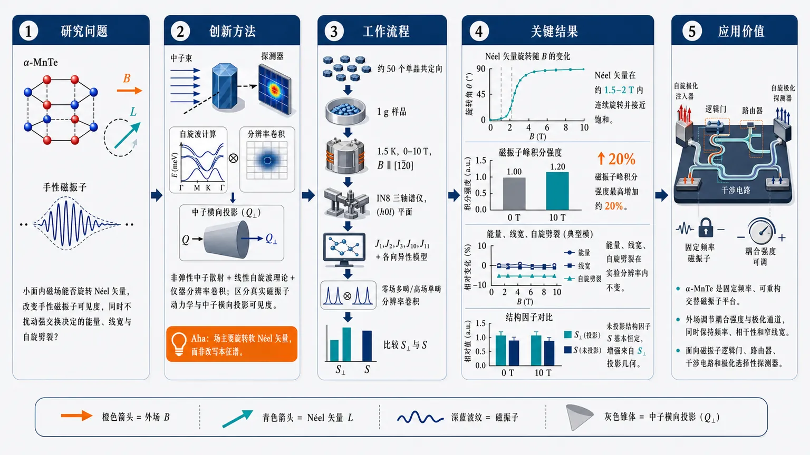
研究问题在半导体交替磁体 α-MnTe 中，小面内磁场能否旋转 Néel 矢量并改变手性磁振子的实验可见度，同时不扰动由强交换作用决定的磁振子能量、线宽和自旋劈裂。创新方法将非弹性中子散射与线性自旋波理论、仪器分辨率卷积结合，区分“真实磁振子动力学”与“中子横向投影可见度”；Aha 点是：磁场主要旋转软的 Néel 矢量，改变磁涨落相对于动量转移 Q 的投影角度，而不是增强或改写磁振子本征谱。工作流程约 50 个 MnTe 单晶共定向成 1 g 样品 → 1.5 K、外场 0–10 T 沿 [1̄20] 施加 → 在 (h0l) 平面用 IN8 三轴谱仪测量磁振子谱 → 用含 J1、J2、J3、J10、J11 和各向异性的自旋波模型计算 → 对零场多磁畴和高场单畴做分辨率卷积 → 比较投影结构因子 S⊥ 与未投影结构因子 S，判断强度变化来源。关键结果Néel 矢量在约 1.5–2 T 内连续旋转并接近饱和；磁振子峰积分强度最高增加约 20%，但磁振子能量、线宽、自旋劈裂在实验分辨率内不变；未投影动力学结构因子基本恒定，说明增强来自中子散射横向投影几何，而非磁振子寿命或本征谱重变化。应用价值α-MnTe 可作为固定频率、可重构的交替磁振子平台：外场调节磁振子与自旋极化注入器、探测器或中子探针的耦合强度和极化通道，同时保持频率、相干性和窄线宽，适合磁振子逻辑门、路由器、干涉电路和极化选择性探测器。第一部分：核心概览 (Overview)
α-MnTe 作为半导体交替磁体，展示出可由小面内磁场重构的 Néel 矢量，同时其由交换作用主导的 手性磁振子能谱几乎不被扰动。非弹性中子散射与线性自旋波理论共同表明，0–10 T 外场主要改变中子散射中的横向投影强度，使磁振子峰强度最高增加约 20%，但磁振子能量、线宽和自旋劈裂在实验分辨率内保持稳定。该结果确立了 软取向自由度 与 刚性交换磁振子谱 的可分离性，使 α-MnTe 成为可重构磁振子耦合、固定频率磁振子器件和交替磁体自旋波控制的重要平台。
---
第二部分：结构化快速回顾
《Magnetic Field Control of the Néel Vector and Magnon Visibility in Altermagnetic MnTe》（None，）
背景
交替磁体兼具反铁磁体的 零净磁化 与铁磁体式的 动量依赖自旋劈裂。α-MnTe 已被实验证实具有约 2 meV 的磁振子自旋劈裂，并且是半导体体系，避免了金属准粒子寿命短、背景复杂的问题。
方法
采用 非弹性中子散射 与 线性自旋波理论。样品由约 50 个 MnTe 单晶共定向组成，总质量约 1 g；在 IN8 热中子三轴谱仪上测量，温度 1.5 K，外场最高 10 T，方向为 ([1bar20])。
结果
外场使 Néel 矢量连续旋转，约 1.5–2 T 后接近饱和。磁振子能量和线宽未出现可分辨变化，线宽受仪器分辨率限制；但磁振子积分强度随场增强，最高增加约 20%。
讨论
强度变化来自中子散射横向投影因子 (S^perpₓy(mathbf Q,E))，而非真实自旋动力学增强。未投影的动力学结构因子在实验场区间基本恒定。
局限
分辨率和样品马赛克展宽限制了对微小线宽变化、弱 Dzyaloshinskii–Moriya 相互作用和非互易效应的灵敏度。实验主要覆盖 ((h0l)) 散射平面和有限场方向。
结论
α-MnTe 中 Néel 矢量取向可由小磁场调控，而 手性磁振子频率、自旋劈裂和相干性保持稳定。该分离机制适合固定频率、可重构磁振子逻辑门、路由器和极化选择性探测器。
---
第三部分：逐章节冷凝解析 (Section-by-Section Condensing)
Abstract
- Altermagnetic order produces spin-split excitations without net magnetization
交替磁序可在没有净磁化的情况下产生电子与磁振子激发的动量依赖自旋劈裂。核心物理不是传统铁磁净磁矩，而是晶体对称性与反平行子晶格排列共同破坏常规自旋简并。原文明确给出：*"Altermagnetic order gives rise to momentum-dependent spin splitting of electronic and magnonic excitations even in the absence of a net magnetization."*
- In-plane field reorients the Néel vector without competing with exchange energy
面内磁场克服弱晶体各向异性，连续旋转 Néel 矢量；场能量仍远小于主导交换作用，因此不显著改写磁振子本征能谱。证据表述为：*"An in-plane magnetic field continuously reorients the Néel vector by overcoming the weak crystalline anisotropy, while remaining small compared with the dominant exchange scale."*
- Magnon energies and line widths remain essentially unchanged
外场改变有序态取向，但磁振子能量和线宽在实验分辨率内稳定，说明手性磁振子由强交换作用保护。关键结论为：*"this reorientation leaves the magnon energies and line widths essentially unchanged"*。
- Measured intensity changes through transverse-momentum projection
磁振子“可见度”变化主要来自非弹性中子散射只探测垂直于动量转移 (mathbf Q) 的磁涨落分量，即 transverse-momentum projection。直接证据为：*"but strongly modifies the measured spectral intensity through the transverse-momentum projection."*
- Soft orientational mode and robust chiral magnon spectrum are separable
Néel 矢量取向自由度是软的、容易被小场调控；手性磁振子谱是刚性的、由交换能标决定。摘要的核心概括是：*"a clear separation between the soft orientational degree of freedom of the antiferromagnetic order and the robust exchange-dominated chiral magnon spectrum."*
- Device implication: reconfigurable magnon coupling
α-MnTe 可用于外场调控激发与极化探针之间的耦合，而不显著改变激发频率或相干性。应用定位为：*"a platform for reconfigurable magnon coupling, in which external fields tune how excitations interact with polarized probes without substantially altering their frequency or coherence."*
---
I Introduction
- Altermagnetism defines a third category beyond conventional ferro- and antiferromagnets
传统共线磁体二分法包括铁磁体与反铁磁体；交替磁体突破该框架，兼具反铁磁 零净磁化 与铁磁式 自旋劈裂能带。原文界定为：*"Altermagnets combine the antiparallel spin order and zero net magnetization of antiferromagnets with the time-reversal-symmetry-breaking and spin-split band structures characteristic of ferromagnets."*
- Spin splitting originates from crystal rotations rather than inversion/fractional translations
常规反铁磁体中，反向自旋子晶格由反演或分数平移连接，导致全局 Kramers 简并；交替磁体中，上下自旋子晶格通过晶体旋转相关，因此只有旋转不变量动量点保持自旋简并。原文对比为：*"In conventional antiferromagnets, opposite-spin sub-lattices are connected by inversion or fractional-translation symmetry that give rise to a global Kramers’ degeneracy."* 以及 *"In altermagnets, on the other hand, the up and down sub-lattices are related by crystallographic rotations such that bands are spin-degenerate only at momenta that are left invariant under those rotations."*
- Nodal networks and Berry-curvature physics motivate anomalous responses
交替磁体能带形成节线与节面网络，可带来强 Berry 曲率 和量子几何效应，从而解释无显著净磁化时仍出现 Hall 响应。原文指出：*"the band structures of altermagnets form intricate networks of nodal lines and planes"*，并进一步说明：*"such nodal structures can generate pronounced Berry curvature and related quantum-geometric effects"*。
- Application space spans spintronics, magnonics, and quantum information
交替磁体的应用价值来自 自旋劈裂 与 零净磁化 的结合，既能产生自旋选择性，又能避免铁磁杂散场。应用范围由原文概括为：*"ranging from spintronics and magnonics to quantum information processing."*
- Weak spin-orbit coupling is favorable for collinear altermagnets
Dzyaloshinskii–Moriya 相互作用可破坏共线磁序，轻元素材料因自旋轨道耦合弱而更适合作为交替磁体候选。原文逻辑为：*"Since spin-orbit interactions induce a Dzyaloshinskii-Moriya exchange that destabilizes collinear order in favor of non-collinear magnetic ground states, promising material candidates are often sought among compounds containing light elements with weak intrinsic spin-orbit coupling."*
- Metallic altermagnets suffer from broadened magnon signatures
许多交替磁体为金属，磁振子劈裂信号可能被短寿命准粒子和巡游电子背景展宽或遮蔽。原文说明：*"Many proposed altermagnets are metallic, where signatures of magnon splitting are expected to be broadened or masked by short quasi-particle lifetimes and the itinerant electronic background."*
- α-MnTe is advantageous because sharp magnon splitting has already been resolved
半导体 α-MnTe 中已通过非弹性中子散射和 ARPES 看到清晰谱线，并在 ((øverline1.33 0 l)) 分支上解析出约 2 meV 自旋劈裂。核心实验证据为：*"recent inelastic neutron-scattering and angle-resolved photoemission spectroscopy experiments on the semiconductor α-MnTe resolved a sharp magnon spectrum exhibiting a spin splitting of about 2 meV along the ((øverline1.33 0 l)) branch."*
- Small magnetic fields can switch chiral magnons
α-MnTe 的手性磁振子可由小外场切换，提示外场可控制交替磁有序态与磁振子选择规则。原文写道：*"These chiral magnons were further shown to be switchable by a small external magnetic field."*
- Central research question: field effect on magnon band structure and scattering intensity
研究目标是区分外场对 磁振子能量结构 与 散射强度可见度 的影响。原文目标为：*"we investigate the effect of an external magnetic field on the magnon band structure and their scattering intensities in altermagnetic α-MnTe, combining linear spin-wave theory with inelastic neutron-scattering measurements."*
---
II Theory
- α-MnTe crystal and magnetic structure are hexagonal and antiferromagnetic below 310 K
α-MnTe 属于中心对称六方空间群 (P6₃/mmc)（SG #194），Néel 温度为 310 K。原文给出：*"α-MnTe crystallizes in the centrosymmetric, hexagonal (P6₃/mmc) space group (SG #194)"*，以及 *"Below the Néel temperature of (T_N=310 K), the compounds exhibits antiferromagnetic order."*
- Mn moments align ferromagnetically in-plane and antiferromagnetically along c
Mn 磁矩在 ((ab)) 面内沿 ([210]) 铁磁排列，相邻层沿 (c) 方向反铁磁堆叠。精确描述为：*"The Mn magnetic moments align ferromagnetically within the ((ab))-plane along the ([210]) direction and antiferromagnetically between adjacent layers along (c)."*
- Sixfold screw rotation generates a g-wave altermagnetic pattern
Mn 位于 2a Wyckoff 位点，该位点具有反演对称性；轨道由六重螺旋旋转生成，产生 g-wave 交替磁模式。原文为：*"The Mn atoms occupy the (2a) Wyckoff position, the site-symmetry group of which includes inversion symmetry. Its orbit is generated by a sixfold screw rotation resulting in an altermagnetic (g)-wave pattern."*
- Spin Hamiltonian includes five exchange couplings and single-ion anisotropy
线性自旋波模型采用 Heisenberg 哈密顿量，包含 (J₁,J₂,J₃,J₁₀,J₁₁) 与单离子各向异性 (A)。参数为：
(J₁₌₃.993) meV，(J₂₌₋₀.1202) meV，(J₃₌₀.4723) meV，(J₁₀=0.06817) meV，(J₁₁=-0.02212) meV，(A=0.04825) meV。原文列出：*"with exchange constants (J₁₌₃.993) meV, (J₂₌₋₀.1202) meV, (J₃₌₀.4723) meV, (J₁₀=0.06817) meV, (J₁₁=-0.02212) and single-ion anisotropy (A=0.04825) meV."*
- External field is modeled by a Zeeman term
外场通过 Zeeman 项进入模型：(H_Z=gₑμ_Bmathbf Bḑot mathbf Sᵢ)。原文公式说明：*"The effect of the external magnetic field (mathbf B) is modeled by adding a Zeeman term, (H_Z=gₑμ_Bmathbf Bḑotmathbf Sᵢ)."*
- J10 and J11 create altermagnetic splitting because symmetry does not equate them
第 10 与第 11 近邻键长度相同，但不由空间群对称性关联，因此一般 (J₁₀≠ J₁₁)。它们是 Mn 子晶格中最短的、能破坏上下自旋站点间反演对称性的交换路径。原文证据为：*"The 10th- and 11th-nearest-neighbor bonds have the same length but are not related by any space-group symmetry; therefore, in general, (J₁₀≠ J₁₁)."* 以及 *"These bonds constitute the shortest exchange paths on the Mn sub-lattice that break inversion symmetry between the spin-up and spin-down sites."*
- Zero-field ground state has six degenerate Néel-vector domains
零场下，各向异性使 (mathbf L) 选在六方基面三个方向之一；加上 (mathbf L) 的正负号，共 6 个经典基态：(±[010])、(±[100])、(±[1bar10])。原文明确为：*"the threefold rotational symmetry about the (c) axis yields six degenerate classical ground states: (mathbf L=±[010]), (±[100]), and (±[1bar10])."*
- Magnetic field reduces sixfold degeneracy to twofold
在限制共线态的情况下，外场将六重简并降为二重；取向由外场与各向异性相对强度决定，而强交换能因旋转不变性不偏好具体方向。原文为：*"Restricting the classical ground state to collinear configurations, an external magnetic field (mathbf B) reduces this sixfold degeneracy to twofold."* 以及 *"the much larger, rotationally invariant exchange energy does not favor a particular direction of (mathbf L)."*
- Calculated Néel-vector rotation saturates near 2 T and above
对 (mathbf LB₌₀=[010]) 域、外场沿 ([1bar20])，计算显示：
0 T: ((Lₓ,L_y,L_z)=(0,1,0))，夹角 (150ⁱ̧rc)；
0.5 T: ((0.23,0.97,0))，(139.6ⁱ̧rc)；
1 T: ((0.87,0.50,0))，(111.1ⁱ̧rc)；
1.5 T: ((0.88,0.48,0))，(110.4ⁱ̧rc)；
2 T: ((0.89,0.47,0))，(109.9ⁱ̧rc)；
2.5 T: ((0.89,0.46,0))，(109.6ⁱ̧rc)；
(>5) T: ((0.89,0.45,0))，(109.3ⁱ̧rc)。原文总结为：*"Its rightmost column shows the angle between the (mathbf B) and (mathbf L), which saturates to around (120ⁱ̧rc) at approximately (2) T and above."*
注：表中数值角度约 (109ⁱ̧rc)，正文称 “around (120ⁱ̧rc)”；该差异可能来自分数量纲坐标、度量换算或表述近似。
- Two magnetic ions produce two magnon branches
原胞含两个磁性离子，因此产生两条磁振子分支。原文为：*"The primitive unit cell contains two magnetic ions, giving rise to two magnon branches."*
- Magnon degeneracy occurs in symmetry-invariant mirror planes
两条分支在交换两个 Mn 位点的晶体对称性不变量动量处简并，具体在 ((1bar10)) 与 ((001)) 镜面内二重简并。原文描述为：*"The two branches are expected to be degenerate at momenta invariant under a crystallographic symmetry that exchanges the two Mn sites. Accordingly, they are twofold degenerate in the ((1bar10)) and ((001)) mirror planes."*
- Along Γ–L the branches are nondegenerate and fully spin polarized without SOC
沿 (Γ-L) 方向，两分支非简并；在无自旋轨道耦合极限下，它们完全自旋极化，因此称为 chiral magnons。原文为：*"Along (Γ–L), however, the branches are nondegenerate and, in the absence of spin-orbit coupling, fully spin polarized. We refer to these excitations as chiral magnons."*
- Field may shift frequencies, modify lifetimes, or alter nonlinear dynamics
由于磁振子携带磁矩，外场原则上可移动频率、改变寿命和非线性动力学，即使群速度不变。原文为：*"Because magnons carry magnetic moments, an external field shifts their frequencies and can modify their lifetimes and nonlinear dynamics, even when their group velocities remain unchanged."*
- Exchange scale exceeds Zeeman energy, so secondary effects from Néel-vector rotation dominate
外场远小于交换能标，因此直接 Zeeman 改谱效应应弱于由 (mathbf L) 旋转引起的投影效应。原文判断为：*"Since the exchange scale greatly exceeds the Zeeman energy, we expect secondary effects associated with the field-induced rotation of (mathbf L) to dominate."*
- Neutron scattering measures transverse dynamic structure factor
非弹性中子散射探测垂直于动量转移 (mathbf Q) 的自旋相关：
(S^perpₓy(mathbf Q,E)=(δₓy-QₓQ_y/Q²⁾Sₓy(mathbf Q,E))。原文为：*"The transverse projector selects correlations perpendicular to the momentum transfer (mathbf Q) and is therefore sensitive to the field-induced rotation of (mathbf L)."*
---
III Experiments
- MnTe crystals were grown from Sb flux with specified stoichiometry and thermal profile
单晶由 Sb 助熔剂溶液法生长，初始配比为 Mn(₇.₃)Te(₁₄.₅)Sb(₇₈.₂)。加热流程为：5 小时升至 950°C，保温 5 小时，再经 60 小时冷却至 650°C，随后离心去除过量溶液。原文为：*"An initial stoichiometry of (Mn₇.₃Te₁₄.₅Sb₇₈.₂) was placed in a fritted alumina crucible"*，以及 *"heated to (950ⁱ̧rc C) over 5 hours, held there for 5 hours, and then cooled to (650ⁱ̧rc C) over 60 hours."*
- Crystals are millimeter-scale hexagonal plates with confirmed structure
晶体形貌为毫米级六方片状，粉末 X 射线衍射确认结构，仅有少量残留表面 Sb 与 Te 助熔剂贡献。原文为：*"The crystals form in mm-sized hexagonal plates and the structure was confirmed via powder X-ray diffraction with minimal contributions from residual surface Sb and Te flux."*
- Co-aligned sample contains several dozens of crystals totaling about 1 g
非弹性中子散射样品由数十个小晶体共定向组成，总质量约 1 g。后续结果部分称约 50 个 crystallites。实验准备描述为：*"several dozens of small MnTe crystals having a total mass of approximately (1 g) were co-aligned."*
- Alignment used X-ray and neutron Laue diffraction; mosaic spread was 2.6° FWHM
共定向通过 X 射线衍射和 OrientExpress 上的中子 Laue 衍射完成；有效马赛克展宽约 2.6° FWHM。原文为：*"For the alignment we using both X-ray diffraction and neutron Laue diffraction, the latter at the OrientExpress instrument."* 以及 *"We determined an effective mosaic spread of the co-aligned crystals of approximately (2.6ⁱ̧rc) full-width at half-maximum."*
- Scattering plane and field geometry are well defined
测量覆盖 ((h0l)) 平面，外场最高 10 T，沿 ([1bar20])，并且垂直于 ((h0l)) 散射平面。原文为：*"for fields up to (B=10 T) along the ([1bar20]) direction. The field direction is perpendicular to the ((h0l)) scattering plane."*
- Instrument setup used IN8 thermal neutron triple-axis spectrometer
实验在 IN8 热中子三轴谱仪完成。波长选择使用 Cu 单色器 ((200)) 反射与石墨分析器 ((002)) 反射。原文为：*"We measured the field dependence in MnTe at the thermal neutron triple-axis spectrometer IN8"*，以及 *"we used the ((200)) reflection of a copper monochromator and the ((002)) reflection of a graphite analyzer crystal."*
- Low-temperature magnetic signal was isolated by subtracting room-temperature nonmagnetic background
样品在零场冷却到 1.5 K，并减去室温纯非磁信号以抑制声子等污染。原文为：*"we cooled the sample to (T=1.5 K) under zero field and subtracted purely non-magnetic signals measured at room temperature."*
- Final neutron energy and wave number are fixed
IN8 以恒定末态波数 (k_f=2.662 Å⁻¹) 运行，对应末态能量 (E_f=14.68) meV；二级谱仪安装两个石墨滤波器抑制高阶散射。原文为：*"constant final neutron wave number of (k_f=2.662 textupÅ⁻¹), corresponding to an energy of (E_f=14.68 meV)."* 以及 *"two graphite filters were installed on the secondary spectrometer."*
- Zero-field spin splitting is reproduced on the ((1.67,0,l)) branch
((1.67,0,l)) 分支上磁振子劈裂最明显，与先前 ((øverline1.33,0,l)) 数据对称等价。由于分辨率限制，劈裂主要表现为强线宽展宽。原文为：*"The experiments could well reproduce both the splitting of the magnon modes at zero applied field, see Fig. 3, which is most pronounced for the ((1.67,0,l)) dispersion branch"*，以及 *"The splitting of the magnons along ((1.67,0,l)) can be observed indirectly by a strong line-broadening."*
- No splitting is observed on the symmetry-related degenerate branch ((1.5,0,l))
((1.5,0,l)) 分支无磁振子劈裂，与对称性预期和先前 ((øverline1.5,0,l)) 结果一致。原文为：*"as well as the absence of a splitting at ((1.5,0,l)), see Fig. 4."* 图注也写明：*"No splitting of the magnon modes is observed."*
- Magnon spectral weight increases with magnetic field and saturates above about 1.5 T
随外场增强，手性和简并磁振子分支的谱重均增加；约 1.5 T 后强度饱和，观测磁振子强度最高增加 20%。原文为：*"we could register an increase of spectral weight on the magnons for increasing magnetic fields"*，以及 *"the intensity saturates for applied fields above approximately (1.5 T), leading to an increase of the observed magnon intensity by up to 20%."*
- Resolution convolution used only one global intensity scaling parameter
实验点与理论线通过仪器分辨率卷积比较；自由参数仅为一个全局强度缩放因子。原文为：*"the lines depict a convolution of the instrumental resolution and the theoretical magnon model"*，以及 *"with only a global intensity scaling parameter as free variable to convert the intensities from theory to experiment."*
- Monte Carlo integration sampled the 4D Gaussian resolution function
分辨率卷积积分通过 Monte Carlo 完成，从四维 ((mathbf Q,E)) 高斯分辨函数中随机采样。原文为：*"The convolution integral was calculated via Monte-Carlo integration, which randomly selects points in the four-dimensional Gaussian ((mathbf Q,E)) distribution function of the instrument’s resolution."*
- Zero-field domain averaging used three effective domains rather than six
零场计算平均六个磁畴的自旋相关函数；由于 (mathbf L) 翻转不改变色散和相关函数，实际只用三个有效磁畴。1.5 T 使用单一有效磁畴，并假设零场所有畴等占据。原文为：*"For the resolution-convolution, the spin-spin correlation functions of the six magnetic domains at zero field were averaged."* 以及 *"As domains with flipped Néel vector lead to the same dispersion and correlation function, only three effective domains were used in the zero-field calculation, and a single effective domain at (1.5 T)."*
- Observed peak positions shift relative to bare spin-wave theory because of resolution effects
裸线性自旋波峰位与卷积后峰位存在显著能量偏移；因此不能直接把表观峰位当作本征磁振子能量。原文为：*"Compared to the peak positions in the bare linear spin-wave theory, which are marked by arrows, we find a significant shift in energy."*
- Intrinsic broadening is not detectable
磁振子激发在线宽上受实验分辨率限制，无可检测本征展宽；小的、场无关 Gaussian 展宽即可最佳拟合。原文为：*"Within the experimental resolution, the magnon excitations show no detectable intrinsic broadening."* 以及 *"The calculated spectra reproduce the data best when only a small, field-independent Gaussian broadening is introduced."*
- Linear spin-wave theory is sufficient without self-energy linewidth corrections
数据无需引入自能导致的线宽修正，表明低温下相干磁振子寿命长、阻尼小。原文为：*"linear spin-wave theory provides an adequate description of the measurements without incorporating self-energy-induced line width corrections."*
---
IV Results
- Spin-split magnons are observed in approximately 50 crystallites
共定向样品由约 50 个 MnTe 晶粒组成，仍能观察到自旋劈裂磁振子，说明样品取向精度足够解析交替磁体谱特征。原文为：*"We observe spin-split magnon modes in a co-aligned assembly of approximately 50 MnTe crystallites."*
- Magnetic field changes intensity but not energy or linewidth
外场增加手性和简并分支的积分强度，但能量与线宽在实验分辨率内不变。原文给出：*"The integrated intensities of both the chiral and degenerate magnon modes increase with applied magnetic field, whereas their energies and line widths remain unchanged within experimental resolution."*
- Energy resolution is about 1.21–1.47 meV at 34 meV transfer
在能量转移 34 meV 处，相干能量分辨率 (Δ E_c=1.21) meV，非相干能量分辨率 (Δ Eᵢ₌₁.47) meV，均为 FWHM。原文为：*"At an energy transfer of (34 meV), the coherent and incoherent energy resolutions are approximately (Δ E_c=1.21 meV) and (Δ Eᵢ₌₁.47 meV), respectively, quoted as full widths at half maximum."*
- Linewidths are resolution-limited and dominated by mosaic spread
观测线宽主要来自共定向晶体较大的马赛克展宽，而非磁振子本征寿命缩短。原文为：*"The observed line widths are therefore resolution-limited, with the broadening arising primarily from the large mosaic spread of the co-aligned crystallites."*
- Field-independent dispersion supports continuous Néel-vector reorientation
如果 (mathbf L) 随场旋转，则 Zeeman 影响可被取向自由度吸收，导致谱形保持不变；实验正符合这一点。原文为：*"The field-independent magnon dispersion is consistent with a continuous reorientation of the Néel vector."*
- Fixed-Néel-vector calculations would predict measurable field-induced dispersion changes
若强行固定 (mathbf L=[010])，即使外场相对交换能较小，线性自旋波理论仍预言 0 T 与 4 T 谱显著不同；实验未见此效应，因此 (mathbf L) 确实发生重取向。原文为：*"For a fixed Néel vector, our calculations predict measurable field-induced changes in the dispersion even for fields small compared with the dominant exchange scale."* 以及 *"In contrast to our experimental observations, the spectra differ noticeably for the two field strengths."*
- Intensity enhancement is explained by transverse projection
非弹性中子散射测量的是垂直于 (mathbf Q) 的动力学结构因子；当 (mathbf L) 旋转时，同一磁振子模式相对于 (mathbf Q) 的可见分量变化，导致强度增加。原文为：*"The field-induced increase in magnon intensity can be explained by the reorientation of the magnetic ground state as well."* 以及 *"Inelastic neutron scattering probes the component of the dynamical structure factor transverse to the momentum transfer and is therefore sensitive to the orientation of (mathbf L) through the projector in Eq. (3)."*
- Projected spectral weight matches field-dependent integrated intensity
在 (mathbf Q=(1.67,0,0.75)) 处，积分强度随场变化与包含正交投影因子的理论权重吻合。原文为：*"Fig. 5(a) shows the integrated intensity at (mathbf Q=(1.67,0,0.75)) as a function of field strength. The data agree closely with the calculated projected spectral weight, shown by the solid red line."*
- Unprojected dynamical structure factor remains constant
未投影的 (Sₓy(mathbf Q,E)) 在实验可达场区间保持常数，因此强度增加不是磁振子本征谱重增加，而是测量几何导致的“可见度”变化。原文为：*"By contrast, the non-projected dynamical structure factor (Sₓy(mathbf Q,E)), shown by the dashed orange line, remains constant over the experimentally accessible field range."*
- Underlying spin dynamics are not modified by field
观测到的场依赖来自横向投影变化，而非自旋动力学改变。结论非常直接：*"The observed field dependence therefore originates from the changing transverse projection rather than from a modification of the underlying spin dynamics."*
- Field controls ground-state orientation without altering magnon splitting, energies, or lifetimes
外场能够调控磁基态取向，但不显著改变磁振子自旋劈裂、能量或寿命。原文为：*"The magnetic ground-state orientation can thus be controlled by field without measurably altering the magnon spin splitting, energies, or lifetimes."*
- Dzyaloshinskii–Moriya interactions are negligible for the measured magnon response
尽管自旋轨道耦合会显著改变 MnTe 电子能带结构，磁振子测量中 DM 相互作用可忽略。原文为：*"Although spin-orbit coupling substantially modifies the electronic band structure of MnTe, we find Dzyaloshinskii-Moriya interactions to be negligible for the measured magnon response."*
- Antisymmetric exchange is symmetry-allowed despite global centrosymmetry
晶体整体中心对称，但相关 Mn–Mn 键的中点不是反演中心，因此反对称交换在局部对称性上允许。原文为：*"Despite the global centrosymmetry of the crystal, antisymmetric exchange is symmetry-allowed on the relevant Mn–Mn bond because the bond midpoint is not an inversion center."*
- Field reversal shows no resolvable nonreciprocal effects
反转外场没有导致可分辨谱变化，从而排除了可观测非互易效应。原文为：*"reversing the external magnetic field produces no resolvable change in the spectra ruling out any non-reciprocal effects."*
- Resolution convolution is essential for apparent peak shifts
表观峰位受仪器分辨率强烈影响，尤其在 (mathbf Q=(1.67,0,0.8)) 和 ((1.67,0,0.9))。原文为：*"The observed peak positions are instead strongly affected by instrumental resolution, particularly at (mathbf Q=(1.67,0,0.8)) and (mathbf Q=(1.67,0,0.9))."* 以及 *"Resolution convolution is therefore essential for reproducing the apparent shifts."*
---
V Discussion and Conclusion
- Experimentally accessible fields reorient altermagnetic order without perturbing exchange magnons
外场能够重定向交替磁有序态，但不会可检测地改变化色散分支形状和线宽。原文总结为：*"The absence of detectable changes in the shapes of the dispersion branches and their line widths demonstrates that experimentally accessible fields reorient the altermagnetic order without appreciably perturbing the exchange-dominated magnon excitations."*
- Soft Néel-vector orientation and robust chiral magnon spectrum are clearly separated
取向自由度软、易被外场操控；手性磁振子谱刚性、受交换相互作用主导。原文为：*"our results reveal a clear separation between the soft orientational degree of freedom of the Néel vector and the robust chiral magnon spectrum."*
- Magnetic field tunes probe coupling rather than magnon frequency or coherence
外场调控的是激发与外部探针的耦合效率，而非频率、自旋劈裂或相干性。原文为：*"The magnetic field therefore controls how the excitations couple to an external probe while leaving their frequencies, spin splitting, and coherence essentially unchanged."*
- Reconfigurable magnonic devices can exploit fixed-frequency switching
可设想固定频率磁振子逻辑门或路由器：通过旋转 (mathbf L) 改变自旋极化注入器/探测器与两条手性磁振子分支的耦合。原文提出：*"A concrete implementation would be a fixed-frequency magnonic logic gate or router in which rotation of the Néel vector changes the coupling of a spin-polarized injector or detector to the two chiral magnon branches."*
- Amplitude or polarization channel can be switched without detuning the band
器件可切换透射振幅或极化通道，同时不改变磁振子带、不改变群速度、不恶化线宽。原文为：*"The transmitted amplitude or polarization channel could then be switched without de-tuning the magnon band, modifying its group velocity, or compromising its line width."*
- Stable dispersion is valuable for resonant and interference circuits
在谐振或干涉型电路中，若色散改变会破坏相位匹配并需要重新调谐；α-MnTe 的固定频率调控可避免该问题。原文为：*"This is particularly useful in resonant or interference-based circuits, where changes in the dispersion would otherwise disrupt phase matching and require retuning of downstream components."*
- Theoretical work supports Néel-vector control of transverse magnon currents
理论已经预测，重定向 (mathbf L) 可开关或重定向交替磁体横向磁振子流。原文为：*"Theoretical work has indeed predicted that reorienting the Néel vector can switch or redirect transverse magnon currents in altermagnets."*
- Bulk g-wave symmetry may suppress net magnon spin current
α-MnTe 的体相 g-wave 对称性可能抑制净磁振子自旋流，因此真实输运器件可能需要额外破缺对称性。原文为：*"Because the bulk (g)-wave symmetry of MnTe can suppress a net magnon spin current, transport devices may require additional symmetry breaking through strain, interfaces, or patterned hetero-structures."*
- Strain and heterostructure engineering provide practical routes
应变控制 Néel 矢量旋转和应变诱导磁对称性改变为器件化提供路径。原文为：*"Recent demonstrations of strain-controlled Néel-vector rotation, together with proposals for strain-induced changes of the magnetic symmetry, suggest a practical route toward this functionality."*
- Characteristic magnon splitting and resolution-limited linewidths can be preserved during control
关键应用价值在于：即便引入控制手段，交替磁体标志性的磁振子劈裂与分辨率受限窄线宽仍可保持。原文结论为：*"such control could be implemented while preserving the characteristic magnon splitting and resolution-limited line widths."*
---
第四部分：深度理解与语言支持 (Understanding & Nuance)
1. 术语解析
Altermagnetism
Altermagnetism 指一类补偿磁体：总磁矩为零，但能带或磁振子带发生动量依赖自旋劈裂。它不同于普通反铁磁体，因为上下自旋子晶格不是由导致全局 Kramers 简并的反演/平移对称性连接，而是由晶体旋转连接。语境中的关键句是：*"spin-split band structures without relying on relativistic spin-orbit coupling"*。微妙点在于：这里的“自旋劈裂”可以是非相对论来源，不必依赖强 SOC。
Néel vector
Néel vector 是反铁磁两子晶格磁化之差，表示反铁磁序参量方向。对于补偿磁体，净磁化为零，但 (mathbf L) 仍定义了磁有序态。文中 (mathbf L) 可被小面内磁场旋转，但这不等于产生大净磁化；调控的是反铁磁序方向，而不是铁磁磁矩。
Transverse dynamic structure factor
Transverse dynamic structure factor (S^perpₓy(mathbf Q,E)) 是中子散射实际可见的磁涨落部分，只包含垂直于动量转移 (mathbf Q) 的自旋相关。微妙点：实验强度变化不必意味着模式本身变强，而可能只是同一模式相对于探测方向变得“更可见”。这正是文中强度随场增加但未投影 (Sₓy) 不变的核心。
Resolution-limited linewidth
Resolution-limited linewidth 表示观测线宽由仪器分辨率决定，真实本征线宽小于或接近仪器可分辨极限。这里并非证明磁振子寿命无限长，而是说明在 (Δ E_c=1.21) meV、(Δ Eᵢ₌₁.47) meV 分辨率下未检测到额外阻尼。
Chiral magnons
Chiral magnons 在此指沿特定动量方向非简并、无 SOC 极限下完全自旋极化的磁振子分支。这里的 “chiral” 不一定等同于实空间螺旋磁结构，而是与动量空间中的分支自旋极化和交替磁对称性相关。
---
2. 疑难查证：复杂概念解释
为什么磁场能改变强度，却不改变磁振子能量？
磁振子能量主要由交换相互作用决定，最大参数 (J₁₌₃.993) meV，远大于各向异性 (A=0.04825) meV 和实验中用于旋转 (mathbf L) 的弱 Zeeman 扰动。外场首先克服弱各向异性，让 (mathbf L) 旋转；交换网络本身几乎不变，因此本征频率稳定。
中子散射强度不同。中子只看垂直于 (mathbf Q) 的磁涨落。如果 (mathbf L) 旋转，同一磁振子的涨落方向相对于 (mathbf Q) 的投影改变，实验峰强度就会改变。可以把它理解成：灯泡亮度没变，但观察角度变了，看到的亮度变了。
为什么固定 Néel 矢量时理论会预测色散变化？
若 (mathbf L) 不允许旋转，外场只能直接作用在自旋激发上，Zeeman 项会打破原本的激发对称关系，引起可测的频率偏移。可是实验没有看到这种偏移。最自然解释是：系统通过旋转 (mathbf L) 降低能量，使外场主要改变基态取向，而不是硬性拉动磁振子能谱。
为什么 J10 与 J11 很小却很重要？
(J₁₀=0.06817) meV、(J₁₁=-0.02212) meV 远小于 (J₁₌₃.993) meV，但它们破坏上下自旋站点间的关键反演关系，是磁振子自旋劈裂的对称性来源。强交换决定整体能量尺度，小的不等价长程交换决定“是否劈裂”和“在哪里劈裂”。
为什么全局中心对称仍允许 DM 相互作用？
DM 相互作用是否允许取决于具体交换键中点是否为反演中心，而不只看整个晶体是否中心对称。α-MnTe 整体有反演，但相关 Mn–Mn 键中点没有反演中心，所以局部允许反对称交换。不过实验中反转外场未见非互易变化，因此 DM 对本次测得磁振子响应可忽略。
---
第五部分：创新评估与关联 (Synthesis & Novelty)
1. 创新性判断
从“发现交替磁振子劈裂”推进到“可控但不扰谱”的功能物理
过去 2–5 年交替磁体研究的重点包括：非相对论自旋劈裂的理论分类、ARPES 观测电子自旋劈裂、非弹性中子散射观测磁振子劈裂、以及小场切换手性磁振子的初步证据。该研究进一步解决一个器件关键问题：能否用外场调控交替磁有序态，同时不破坏磁振子的频率和相干性。
核心新意在于证明：外场不是简单“调频器”，而是“耦合选择规则调制器”。磁振子谱保持稳定，散射可见度可调。
首次清晰分离 Néel-vector soft mode 与 exchange-dominated chiral magnon spectrum
交替磁体应用依赖两个看似矛盾的性质：
- 序参量必须足够软，才能低能耗调控；
- 磁振子必须足够硬，才能保持固定频率和低阻尼传输。
该研究通过 1.5–10 T 中子散射数据和线性自旋波卷积计算，显示这两点在 α-MnTe 中可以同时成立。强度约 1.5 T 后饱和，最高增加 20%；能量与线宽无可检测改变。这是对“可重构但稳定”的直接实验证据。
把磁振子强度变化归因于横向投影，而不是本征动力学变化
以往观察到场依赖强度时，容易解释为磁振子谱重、阻尼、寿命或相互作用发生改变。该研究通过比较 projected 与 non-projected 动力学结构因子，指出未投影 (Sₓy(mathbf Q,E)) 基本不变，变化来自 (S^perpₓy) 的几何投影。这一诊断非常关键，因为它把“材料本征变化”和“探测耦合变化”分离开来。
为固定频率交替磁振子器件提供实验依据
磁振子逻辑、路由和干涉器件通常害怕外场改变色散，因为频率、相位匹配和群速度会被破坏。α-MnTe 中外场可改变耦合强度/极化通道，却不改变频率和线宽，为 fixed-frequency magnonic logic gate or router 提供了现实物理基础。
补足 MnTe 交替磁体研究链条
已有工作证明 MnTe 中存在电子和磁振子自旋劈裂，且磁有序可被应变或小场影响。该研究补上的关键环节是：在真实非弹性中子散射实验中，外场调控不会牺牲手性磁振子的清晰度。由此 MnTe 从“交替磁体模型材料”进一步变成“可工程化磁振子平台”。
-
09
📊 含图深析
📄 摘要：第一性原理计算研究了 MSe2/WTe2（M=V、Cr、Mn、Fe、Co）范德华异质双层的结构、电学与磁性。结果表明 AA' 构型更稳定，体系具有界面诱导的自旋分辨 II 型能带对齐，带隙约 0.70 eV，并伴随磁各向异性增强，可用于调控载流子输运。
💡 亮点：MSe2/WTe2 双层把界面、带阶与磁各向异性绑在一起。约 0.70 eV 的 II 型对齐说明它很适合做自旋输运与电荷分离平台。
📖 展开分析 + 配图
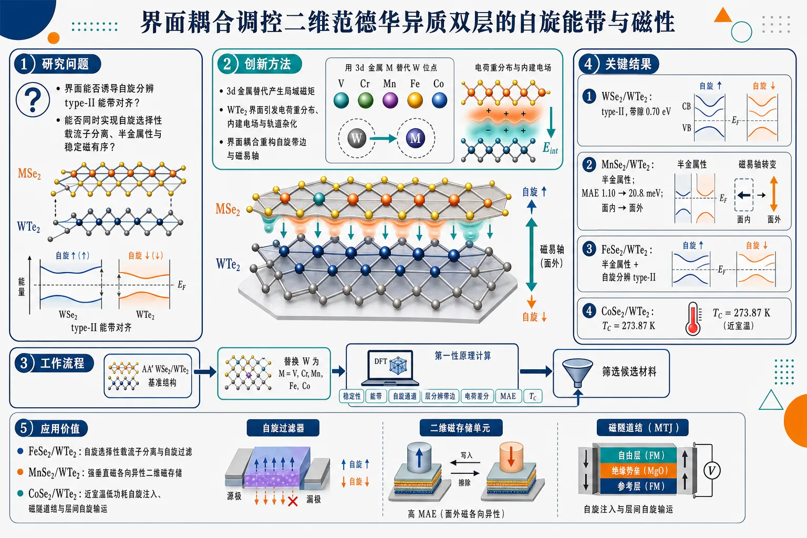
研究问题如何在二维范德华异质双层中，通过界面耦合同时实现自旋选择性载流子分离、半金属性和稳定磁有序；核心关注 MSe₂/WTe₂（M = V、Cr、Mn、Fe、Co）中界面是否能诱导自旋分辨 type-II 能带对齐并增强磁各向异性。创新方法以第一性原理计算系统筛选 3d 过渡金属替代的 MSe₂/WTe₂ 异质双层；Aha 点在于把“3d 金属替代产生局域磁矩”和“WTe₂ 界面引发电荷重分布、内建电场、轨道杂化”耦合起来，让界面同时重构自旋能带边位置和磁易轴方向。工作流程输入为 AA′ 堆垛的 WSe₂/WTe₂ 基准异质双层；将 WSe₂ 层中的 W 分别替换为 V、Cr、Mn、Fe、Co，形成 MSe₂/WTe₂；计算结构稳定性参照、能带结构、自旋通道、层分辨带边、电荷重分布、内建电场、磁各向异性能和居里温度；输出半金属候选、自旋分辨 type-II 对齐候选、垂直磁各向异性增强候选和近室温磁有序候选。关键结果原始 WSe₂/WTe₂ 在 AA′ 构型下最稳定，呈 type-II 能带对齐，带隙为 0.70 eV；3d 金属替代诱导长程磁有序并重构自旋分辨能带；MnSe₂/WTe₂ 表现半金属性；FeSe₂/WTe₂ 同时具备半金属性和自旋分辨 type-II 能带对齐；MnSe₂/WTe₂ 的磁易轴由面内翻转为面外，MAE 从 1.10 meV 增至 20.8 meV；CoSe₂/WTe₂ 的最高居里温度达到 273.87 K。应用价值为低维自旋电子器件提供可视化材料设计路线：FeSe₂/WTe₂ 可作为自旋选择性载流子分离和自旋过滤平台，MnSe₂/WTe₂ 适合构建具有强垂直磁各向异性的二维磁存储单元，CoSe₂/WTe₂ 接近室温磁有序，有望用于低功耗自旋注入、磁隧道结和可控层间自旋输运器件。第一部分：核心概览 (Overview)
该研究以第一性原理计算系统筛选 MSe₂/WTe₂（M = V, Cr, Mn, Fe, Co）范德华异质双层，揭示界面可同时重构自旋分辨能带排列与磁各向异性。核心贡献在于发现 FeSe₂/WTe₂ 兼具半金属性与自旋分辨 type-II 能带对齐，MnSe₂/WTe₂ 的磁易轴由面内转为面外且 MAE 从 1.10 meV 增至 20.8 meV，CoSe₂/WTe₂ 的居里温度最高达 273.87 K。该工作把界面工程、二维磁性、半金属性与自旋选择性载流子分离统一到同一材料平台中，面向低维自旋电子器件具有明确设计价值。
---
第二部分：结构化快速回顾
《Interface-induced spin-resolved type-II band alignment and enhanced magnetic anisotropy in MSe2/WTe2 (M = V, Cr, Mn, Fe and Co) van der Waals heterobilayers》（None，）
背景
二维范德华异质双层被定位为下一代自旋电子器件的重要材料平台。研究对象为 MSe₂/WTe₂，其中 M = V, Cr, Mn, Fe, Co，目标是通过过渡金属替代与界面耦合调控结构稳定性、电子结构、自旋极化输运与磁各向异性。
方法
采用第一性原理计算研究结构、电子与磁性质。可核验表述为：*"first-principles calculations are performed to investigate the structural, electronic and magnetic properties of MSe2/WTe2 (M = V, Cr, Mn, Fe, and Co) van der Waals heterobilayers."*
具体交换关联泛函、赝势、k 点网格、截断能、U 值、SOC 设置、声子/分子动力学稳定性检验等未在提供材料中出现。
结果
- 原始 WSe₂/WTe₂ 在 AA′ 构型下能量最优。
- WSe₂/WTe₂ 呈现 type-II band alignment，带隙为 0.70 eV。
- 用 3d 过渡金属原子替代 W 后，引入长程磁有序并重构自旋分辨能带结构。
- MnSe₂/WTe₂ 表现为半金属。
- FeSe₂/WTe₂ 同时表现为半金属与自旋分辨 type-II 能带对齐。
- MnSe₂ 从孤立单层中的面内易轴转变为异质双层中的面外易轴，MAE 从 1.10 meV 增至 20.8 meV。
- CoSe₂/WTe₂ 的最高居里温度为 273.87 K。
讨论
界面形成导致明显的电荷重分布与内建电场，从而诱发界面电子重构。这种重构不仅改变能带对齐和自旋通道特征，还显著增强垂直磁各向异性，使部分体系兼具自旋选择性载流子分离、半金属性和较高磁有序温度。
局限
提供材料未给出以下关键信息：计算参数、结构稳定性验证、层间距与结合能、不同堆垛构型的能量差、磁交换常数提取方式、Curie 温度估算模型、SOC 与 Hubbard U 敏感性、应变/电场调控、缺陷与热稳定性、实验可合成性评估。结论强度主要依赖摘要层面的可核验信息。
结论
MSe₂/WTe₂ 异质双层可通过界面工程实现自旋分辨 type-II 能带对齐、半金属性、增强垂直磁各向异性和接近室温的磁有序。最突出的候选体系包括 FeSe₂/WTe₂、MnSe₂/WTe₂ 与 CoSe₂/WTe₂。
---
第三部分：逐章节冷凝解析 (Section-by-Section Condensing)
可解析材料仅包含题名、摘要、arXiv 元数据、评论、学科分类与投稿信息；未包含完整正文、原始章节标题、图表、方法参数、补充信息正文和参考文献。因此只能按可见原始标题层级进行冷凝解析，不能伪造 Introduction、Methods、Results、Discussion 等未提供章节内容。
---
Abstract
#### Two-dimensional van der Waals heterobilayers as a spintronic platform
二维范德华异质双层被用于探索低维自旋电子学，因为层间由弱范德华相互作用耦合，界面可在不破坏单层晶格主体的情况下调控能带对齐、载流子空间分离、自旋极化与磁各向异性。摘要中的直接依据为：*"Two-dimensional van der Waals heterobilayers provide an attractive platform for the development of next-generation spintronic devices."*
这里的核心科学问题不是单纯获得磁性，而是在异质界面中同时实现可控电荷输运与自旋选择性电子结构。
#### First-principles screening of MSe₂/WTe₂ heterobilayers
研究体系覆盖 MSe₂/WTe₂，其中 M = V, Cr, Mn, Fe, Co，代表从早期到中后期的 3d 过渡金属取代序列。计算目标包含三类性质：结构性质、电子性质、磁性质。原文依据为：*"first-principles calculations are performed to investigate the structural, electronic and magnetic properties of MSe2/WTe2 (M = V, Cr, Mn, Fe, and Co) van der Waals heterobilayers."*
该设定具有筛选性质：通过改变 3d 元素的 d 电子占据，系统考察不同局域磁矩、交换耦合和自旋分裂对异质结能带排列的影响。
#### AA′ stacking as the energetically favorable configuration
原始 WSe₂/WTe₂ 异质双层的最低能堆垛为 AA′ configuration。直接依据为：*"The pristine WSe2/WTe2 heterobilayer in AA'-configuration is found to be energetically favorable"*。
这一结果说明后续磁性替代体系很可能以该堆垛作为参照构型。AA′ 构型通常涉及上下层原子相对位置的反向或交错排列，其能量优势来自层间静电势、范德华相互作用和 chalcogen 原子间排斥的综合平衡。具体相对能量差、层间距、结合能未在提供材料中出现。
#### Type-II band alignment in pristine WSe₂/WTe₂
原始 WSe₂/WTe₂ 呈现 type-II band alignment，带隙为 0.70 eV。原文依据为：*"exhibits type-II band alignment with a band gap of 0.70 eV"*。
type-II 能带对齐意味着价带顶和导带底主要分布在不同层上，能够促进电子与空穴的空间分离。摘要进一步指出其器件意义：*"this provides an ideal platform for controlling carrier transport."*
该点为后续磁性替代奠定基准：如果引入磁性后仍保留或重构 type-II 对齐，则可实现带有自旋选择性的层间载流子分离。
#### 3d transition-metal substitution induces long-range magnetic ordering
用 3d 过渡金属原子替代 W 后，体系出现长程磁有序，并显著改变自旋分辨电子结构。直接依据为：*"Substituting W with 3d transition metal atoms, induces long-range magnetic ordering and reconstructs the spin-resolved electronic band structure."*
这一点表明磁性并非来自外加磁场或吸附磁性分子，而是来自晶格内部的替代原子 d 轨道。由于 V、Cr、Mn、Fe、Co 具有不同 d 电子数，其交换分裂、占据态位置和局域磁矩会显著不同。具体磁矩大小、铁磁/反铁磁能量差、交换常数 J 未在提供材料中给出。
#### Interface-induced charge redistribution and built-in electric field
异质界面形成后产生显著电荷重分布与内建电场。直接依据为：*"The formation of the heterointerface generates pronounced charge redistribution and an intrinsic built-in electric field"*。
该内建电场会导致层间能带弯曲或静电势差，从而触发界面诱导电子重构。原文表述为：*"leading to interface-induced electronic reconstruction."*
这一机制是论文题名中 Interface-induced 的物理核心：异质结不只是简单堆叠两个单层，而是通过电荷转移、轨道杂化和界面偶极改变自旋通道的能带边位置。
#### MnSe₂/WTe₂ as a half-metallic heterobilayer
MnSe₂/WTe₂ 表现出半金属性。直接依据为：*"MnSe2/WTe2 heterobilayer exhibits half-metallicity"*。
半金属意味着一个自旋通道呈现金属性，另一个自旋通道呈现半导体或绝缘体特征，因此费米能级附近载流子理论上可达到高度自旋极化。该性质对自旋注入、自旋过滤和低功耗磁电子器件具有重要意义。摘要未给出半金属能隙、自旋极化率、费米能级穿越能带的具体轨道成分。
#### FeSe₂/WTe₂ combining half-metallicity and spin-resolved type-II band alignment
FeSe₂/WTe₂ 是最具综合功能性的候选之一，因为它同时具备半金属性与自旋分辨 type-II 能带对齐。直接依据为：*"FeSe2/WTe2 heterobilayer simultaneously exhibits half-metallicity and spin-resolved type-II band alignment."*
这一组合比单独半金属或普通 type-II 异质结更有价值：半金属性提供自旋选择性导电，type-II 对齐提供层间电子-空穴分离；二者结合意味着载流子分离过程可能依赖自旋通道，实现自旋分辨的层间电荷转移。
#### Enhanced perpendicular magnetic anisotropy in MnSe₂/WTe₂
界面电子重构显著增强垂直磁各向异性。摘要中的核心证据为：*"Interfacial electronic reconstruction further produces a substantial perpendicular magnetic anisotropy"*。
最明确的数值例子来自 MnSe₂：孤立单层中易轴为面内，MAE 为 1.10 meV；形成 MnSe₂/WTe₂ 异质双层后，易轴变为面外，MAE 达 20.8 meV。直接依据为：*"driving MnSe2 from an in-plane easy axis with MAE value of 1.10 meV in the isolated monolayer to a robust out-of-plane easy axis with MAE value of 20.8 meV in the heterobilayer."*
MAE 增强倍数约为 18.9 倍（20.8 / 1.10 ≈ 18.9）。这一改变对二维磁性尤其关键，因为面外磁各向异性可抑制热涨落导致的磁有序破坏，有利于稳定二维铁磁性。
#### CoSe₂/WTe₂ with the maximum Curie temperature
所有研究结构中，CoSe₂/WTe₂ 的居里温度最高，为 273.87 K。直接依据为：*"Among all the structures, CoSe2/WTe2 heterobilayer exhibits maximum Curie temperature (273.87 K)."*
该温度接近室温但略低于 300 K，意味着在实际自旋电子应用中具有潜在价值，但仍可能需要应变、电场、载流子掺杂或界面优化进一步提升。摘要未说明 Curie 温度通过 Monte Carlo 模拟、平均场近似、Ising/Heisenberg 模型还是其他方法估算。
#### Interface engineering as the unifying design principle
整体结论把 MSe₂/WTe₂ 异质双层定位为下一代低维自旋电子候选材料。直接依据为：*"The combined results establish that interface engineering makes MSe2/WTe2 heterobilayers as a promising candidates for next-generation low-dimensional spintronic applications."*
核心设计原则是界面工程：通过选择过渡金属 M、调节层间耦合、电荷重分布和内建电场，实现多目标协同优化，包括磁有序、半金属性、自旋分辨能带对齐和垂直磁各向异性。
---
Title
#### Interface-induced effects define the central mechanism
题名中的 Interface-induced 表明关键物理效应来自异质界面，而非单层材料的孤立性质。可核验题名为：*"Interface-induced spin-resolved type-II band alignment and enhanced magnetic anisotropy in MSe2/WTe2 (M = V, Cr, Mn, Fe and Co) van der Waals heterobilayers"*。
这一定名将两个目标性质并列：spin-resolved type-II band alignment 与 enhanced magnetic anisotropy。二者分别对应电子输运和磁稳定性，是自旋电子器件设计中的两类核心指标。
#### Spin-resolved type-II band alignment is more specific than conventional type-II alignment
题名中的 spin-resolved type-II band alignment 比普通 type-II band alignment 更精细，因为它强调能带边位置需要按自旋通道区分。普通 type-II 异质结只关心 CBM 和 VBM 属于哪一层；自旋分辨 type-II 则进一步关心多数自旋和少数自旋通道是否具有不同的层分布、带隙和载流子分离路径。摘要中 FeSe₂/WTe₂ 的直接证据为：*"FeSe2/WTe2 heterobilayer simultaneously exhibits half-metallicity and spin-resolved type-II band alignment."*
#### Enhanced magnetic anisotropy targets two-dimensional magnetic stability
题名中的 enhanced magnetic anisotropy 对二维体系非常关键。二维各向同性 Heisenberg 磁体在有限温度下容易受 Mermin–Wagner 定理限制；足够强的磁各向异性可打开自旋波能隙，增强有限温度磁有序稳定性。摘要中 MnSe₂/WTe₂ 的数值证据为：*"MAE value of 1.10 meV in the isolated monolayer"* 到 *"MAE value of 20.8 meV in the heterobilayer."*
---
Comments / manuscript scope
#### Manuscript and supporting information length
arXiv 页面给出的稿件范围为主文 1–15 页，补充信息 16–19 页。原文元数据为：*"Comments: 1-15 Page MAnuscript, 16-19 supporting Information"*。
这说明完整材料应包含主文和补充信息，但当前输入未提供 PDF 正文内容，因此无法核验计算细节、图表数据与补充材料中的结构参数。
#### Subject classification
学科分类包含 Materials Science、Mesoscale and Nanoscale Physics 与 Computational Physics。可核验原文为：*"Subjects: Materials Science (cond-mat.mtrl-sci) ; Mesoscale and Nanoscale Physics (cond-mat.mes-hall); Computational Physics (physics.comp-ph)"*。
该分类准确反映研究交叉属性：材料筛选属于凝聚态材料科学，二维异质结与自旋输运属于介观/纳米物理，第一性原理计算属于计算物理。
---
Bibliographic metadata
#### Preprint status and date
该研究为 arXiv 预印本，编号 arXiv:2607.08926，提交日期为 9 Jul 2026。可核验元数据包括：*"arXiv:2607.08926"* 与 *"[Submitted on 9 Jul 2026]"*。
预印本状态意味着结果尚需关注同行评审后的版本变化，尤其是计算设置、稳定性检验、Curie 温度估算和补充数据是否经过进一步修订。
#### Authorship
作者为 Paras Poswal, Ranjit Pati, Neeraj Shukla。原始信息为：*"Authors: Paras Poswal , Ranjit Pati , Neeraj Shukla"*。
当前可见材料未包含机构、贡献声明、数据可用性声明或代码链接。
---
第四部分：深度理解与语言支持 (Understanding & Nuance)
1. 术语解析
#### Type-II band alignment
Type-II band alignment 指异质结中导带底 CBM 和 价带顶 VBM 分别主要位于不同材料层。其物理结果是光生或注入的电子与空穴倾向于分离到不同层，降低复合概率。
在该研究语境中，原始 WSe₂/WTe₂ 的 type-II 对齐与 0.70 eV 带隙共同构成可控载流子输运平台。关键原文为：*"exhibits type-II band alignment with a band gap of 0.70 eV"*。
#### Spin-resolved
Spin-resolved 不是简单的“有自旋”或“磁性”，而是指电子结构被分解为不同自旋通道，例如多数自旋和少数自旋。
在 FeSe₂/WTe₂ 中，spin-resolved type-II band alignment 意味着不同自旋通道的能带边可能具有不同层定位和输运路径。该表达比普通 type-II 更接近自旋电子器件需求。
#### Half-metallicity
Half-metallicity 指一个自旋通道为金属态，另一个自旋通道为半导体/绝缘态。理想情况下，费米能级附近电流具有接近 100% 自旋极化。
MnSe₂/WTe₂ 和 FeSe₂/WTe₂ 的半金属性意味着它们可作为自旋过滤器或自旋注入源。直接证据包括：*"MnSe2/WTe2 heterobilayer exhibits half-metallicity"*。
#### Magnetic anisotropy energy / MAE
MAE 是磁矩沿不同方向排列时的能量差，通常用于判断磁易轴方向。若面外方向能量更低，则具有垂直磁各向异性；若面内方向能量更低，则为面内易轴。
MnSe₂ 的 MAE 从 1.10 meV 增至 20.8 meV，意味着界面极大增强了磁方向稳定性。该数值变化是摘要中最强的定量证据之一。
#### Built-in electric field
Built-in electric field 指异质界面因功函数差、电荷转移或界面偶极形成的内部电场，不需要外加电压即可存在。
在该体系中，它与电荷重分布共同驱动界面电子重构。关键原文为：*"pronounced charge redistribution and an intrinsic built-in electric field"*。
---
2. 疑难查证
#### 为什么界面可以同时改变能带排列和磁各向异性？
异质界面形成后，上下层之间会发生三类变化：
- 电荷转移：电子从功函数较低或化学势较高的一层流向另一层，形成界面偶极。
- 静电势重排：内建电场改变不同层的能带边相对位置，可能把原来的普通半导体排列变成 type-II 或 spin-resolved type-II。
- 轨道杂化与 SOC 调制：过渡金属 d 轨道与 W/Te/Se 的 p 轨道、d 轨道发生耦合；W 和 Te 较重，具有较强自旋轨道耦合，可显著影响磁矩取向能量。
因此，界面不只是改变“电子在哪里”，也改变“磁矩更愿意朝哪个方向”。这解释了 MnSe₂ 从面内易轴到面外易轴的转变，以及 MAE 从 1.10 meV 到 20.8 meV 的跃升。
#### 为什么 FeSe₂/WTe₂ 的组合特别重要？
单一功能材料通常只能满足一个器件需求：
- 普通 type-II 异质结：利于电子-空穴分离，但未必有自旋选择性。
- 半金属：利于自旋极化电流，但未必能进行层间载流子分离。
- 高 MAE 磁体：磁态稳定，但未必具备理想输运能带。
FeSe₂/WTe₂ 同时具有 half-metallicity 和 spin-resolved type-II band alignment，意味着它可能在同一平台中实现自旋极化电流和自旋依赖的层间电荷分离。这种组合更接近实际自旋电子器件的多功能需求。
#### 为什么 CoSe₂/WTe₂ 的 273.87 K Curie temperature 重要但仍需谨慎？
273.87 K 接近室温，但低于常用室温标准 300 K。这说明 CoSe₂/WTe₂ 在低温至接近室温范围内有应用潜力，但若用于常温器件，仍需要进一步提升磁有序温度。
此外，Curie 温度在计算研究中对模型非常敏感：不同的交换参数提取方式、磁哈密顿量、各向异性处理、Monte Carlo 尺寸、平均场近似都会影响结果。当前提供材料未给出估算方法，因此该数值应视为重要线索，而非最终实验指标。
---
第五部分：创新评估与关联 (Synthesis & Novelty)
1. 创新性判断
#### From isolated 2D magnets to interface-engineered spintronic heterobilayers
近年二维磁性材料研究大量集中在单层磁体、掺杂 TMD、Janus 结构、CrI₃/CrGeTe₃ 类范德华磁体以及磁性 TMD 异质结。该研究的新颖性在于把 MSe₂ 磁性层与 WTe₂ 异质界面结合，通过系统替换 V、Cr、Mn、Fe、Co 来筛选多功能自旋电子性质，而不是只研究单一掺杂元素或单一磁性指标。
#### Spin-resolved type-II alignment as a sharper design target
过去许多 TMD 异质结工作关注普通 type-I/type-II/type-III band alignment，主要服务于光伏、光探测、激子分离等方向。这里的目标更细：spin-resolved type-II band alignment。
这一创新点解决的问题是：普通 type-II 对齐不能保证自旋选择性，而自旋电子器件需要载流子不仅空间分离，还要在自旋通道上可区分。
#### Half-metallicity plus type-II alignment in FeSe₂/WTe₂
FeSe₂/WTe₂ 同时具有半金属性和自旋分辨 type-II 对齐，构成较强的新颖组合。前人常分别追求半金属二维材料或 type-II 异质结，但把二者在同一范德华异质双层中耦合起来，且由界面诱导重构实现，具有更直接的器件导向。
#### Interface-driven magnetic anisotropy switching
MnSe₂ 从孤立单层的面内易轴转变为异质双层的面外易轴，MAE 从 1.10 meV 到 20.8 meV，这是非常明确的界面调控创新点。
过去二维磁体的主要难题之一是热涨落抑制长程磁有序；增强垂直磁各向异性可提升磁态稳定性。该结果显示界面工程不仅能调能带，还能强烈调控磁稳定性。
#### Near-room-temperature candidate in CoSe₂/WTe₂
CoSe₂/WTe₂ 的最高居里温度 273.87 K 使其接近室温自旋电子应用门槛。相较仅在低温工作的二维磁体，该候选体系更具应用相关性。
仍需解决的问题包括：实验合成路径、结构稳定性、真实缺陷环境、衬底影响、有限温度动力学稳定性和室温以上磁有序增强。
#### Unified materials-design logic
该研究的综合新颖性不是单个数值，而是提出一条统一路线：
3d 过渡金属替代 → 长程磁有序 → 界面电荷重分布与内建电场 → 自旋分辨能带重构 → 半金属性/type-II 对齐/增强 MAE/较高 Tc。
这条路线把电子结构工程和磁性工程合并到同一异质界面设计框架中，解决了低维自旋电子材料中“有磁性但输运不理想”或“能带对齐好但缺少自旋选择性”的分裂问题。
-
10
📊 含图深析
📄 摘要：作者用 nonequilibrium DMFT 模拟 Hubbard 模型中的多脉冲激发，提取弱耦合反铁磁体的二维相干光谱信号，并比较静态/动态 Hartree 项及局域势无序的影响。通过等待时间依赖分析，识别出集体振幅模对光谱特征的贡献。
💡 亮点：2D 相干光谱被用于追踪弱耦合反铁磁体的振幅模。nonequilibrium DMFT 让集体模在多脉冲响应里变得可解析。
📖 展开分析 + 配图
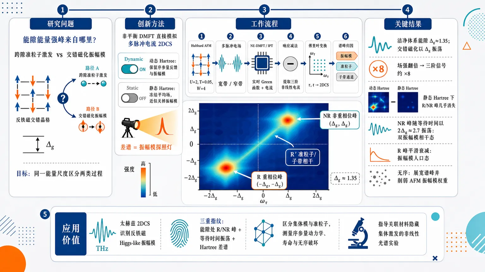
研究问题弱耦合反铁磁体的二维相干光谱中，能隙能量处的强峰究竟来自跨隙准粒子激发，还是来自交错磁化的集体振幅模；如何在同一能量尺度上把两类过程区分开。创新方法用非平衡 DMFT 直接模拟多脉冲电流二维谱，并设计“动态 Hartree vs 静态 Hartree”对照：动态 Hartree 保留序参量反馈与振幅模振荡，静态 Hartree 冻结平均场反馈、近似关掉振幅模；两者差谱像一盏探照灯，专门显影振幅模贡献。工作流程半填充弱耦合 Hubbard 反铁磁模型输入参数 U=2、T=0.05、Bethe 带宽 W=4 → 施加宽带或窄带多脉冲电场 → 非平衡 DMFT/IPT 求解实时 Green 函数与电流 → 通过单脉冲、双脉冲、三脉冲响应减法提取三阶非线性电流 → 对延迟时间 τ 和探测时间 t 傅里叶变换得到 2DCS 图谱 → 比较等待时间振荡和 Hartree 开关差谱，标定振幅模、准粒子和子带通道。关键结果洁净体系能隙 Δg≈1.35，脉冲后交错磁化以 Δg 振荡；三脉冲宽带谱在 (−Δg, Δg) 与 (Δg, Δg) 出现重相位/非重相位主峰，场强翻倍信号约增强 8 倍，确认三阶响应；静态 Hartree 下这些峰几乎消失，说明它们由振幅模主导；非重相位峰随等待时间以 2Δg≈2.7 振荡，对应双振幅模相干态，重相位峰平滑衰减，对应振幅模人口态；R′ 斜脊主要来自准粒子或子带相干；局域势无序展宽谱峰并削弱反铁磁振幅模权重。应用价值为太赫兹二维相干光谱识别反铁磁 Higgs-like 振幅模提供可视化判据：能隙处 R/NR 峰、等待时间振荡、Hartree 差谱三重指纹可区分集体模与准粒子；有助于测量反铁磁序参量动力学、振幅模寿命、无序对有序相的破坏，并指导关联材料中隐藏集体激发的非线性光谱实验。第一部分：核心概览
该研究把二维相干光谱（2DCS）引入弱耦合反铁磁 Hubbard 模型的集体振幅模（Higgs-like amplitude mode）识别问题，利用非平衡 DMFT直接模拟多脉冲电流响应，并通过动态/静态 Hartree 项对照分离序参量反馈贡献。核心贡献在于证明宽带脉冲下位于能隙能量的重相位与非重相位峰主要来自反铁磁振幅模，而窄带脉冲可在半能隙频率附近强烈增强相关信号。该工作把超导 Higgs 模 2DCS 讨论推广到反铁磁序，澄清了准粒子与集体模在二维谱中的可区分特征。
---
第二部分：结构化快速回顾
《Amplitude mode in two-dimensional coherent spectroscopy of weak-coupling antiferromagnets》（None，）
背景
二维相干光谱（2DCS）可解析关联晶格体系的非线性响应。弱耦合反铁磁体中的振幅模表现为交错磁化的相干振荡，与超导体 Higgs 模在理论上存在 Shiba 变换关联，但与电磁场、无序的耦合方式不同。
方法
采用半填充单带 Hubbard 模型，参数主要为 U = 2、T = 0.05、Bethe 晶格带宽 W = 4。利用非平衡 DMFT与弱耦合 IPT impurity solver，模拟两脉冲和三脉冲电场激发后的电流，提取二维谱。通过动态 Hartree与静态 Hartree计算对照识别振幅模贡献。
结果
洁净体系能隙约 Δg = 1.35，短宽带脉冲诱导磁化以同一频率振荡。三脉冲 2DCS 中，位于 (±Δg, Δg) 的重相位/非重相位峰由振幅模主导；沿 (-Δg - x, x) 的 R′ 脊主要来自子带内或准粒子相干过程。信号随场强翻倍约增强 8 倍，符合三阶非线性。
讨论
等待时间依赖显示，非重相位峰 (Δg, Δg) 以 2Δg ≈ 2.7 振荡，指向含两个振幅模量子的相干态；重相位峰 (-Δg, Δg) 主要呈平滑衰减，符合人口态或 echo 性质。局域势无序使谱峰展宽，并削弱反铁磁振幅模相对贡献。
局限
弱耦合求解器限制在 U < W；局域势无序采用自洽 Born 近似，忽略交叉无序线和局域化干涉效应；Bethe 晶格电场处理为有效构造；所给文本中的“单色”窄带脉冲结果未完整提供。
结论
2DCS 可在弱耦合反铁磁体中区分集体振幅模与准粒子/子带激发。宽带三脉冲谱中能隙处的 R/NR 峰是振幅模最清晰的指纹；与超导体不同，局域势无序在该反铁磁模型中削弱而非增强振幅模贡献。
---
第三部分：逐章节冷凝解析
Abstract
2DCS targets nonlinear response in correlated lattice systems
二维相干光谱被定位为探测关联晶格体系非线性响应的工具，核心对象是弱耦合反铁磁 Hubbard 模型的多脉冲响应。摘要明确写道：*"Two-dimensional coherent spectroscopy (2DCS) provides insights into the nonlinear response of correlated lattice systems."* 研究不是线性光导或单脉冲泵浦-探测，而是通过多脉冲电流信号提取二维频域结构。
Nonequilibrium DMFT enables direct multipulse simulation
计算框架为非平衡动力学平均场理论（nonequilibrium DMFT），对象为含或不含局域势无序的弱耦合反铁磁体。摘要给出方法边界：*"We simulate multipulse excitations in the Hubbard model using nonequilibrium dynamical mean-field theory to extract the 2DCS signal of weak-coupling antiferromagnets with and without local potential disorder."* 这意味着二维谱不是通过预设响应函数解析展开得到，而是由实时多脉冲演化与电流测量构造。
Amplitude-mode contribution is isolated by Hartree feedback control
振幅模识别依赖两个互补判据：静态/动态 Hartree 项对比与等待时间依赖。摘要表述为：*"By comparing calculations with static and dynamic Hartree terms, and analyzing the waiting-time dependence of the signal, we identify the contribution of the collective amplitude mode to the spectroscopic features and the relevant underlying processes."* 动态 Hartree 项允许序参量反馈，静态 Hartree 项人为抑制长期振幅振荡，因此两者差谱成为振幅模贡献的诊断。
Gap-energy rephasing and nonrephasing peaks are amplitude-mode dominated
宽带脉冲下，二维谱中位于能隙能量的重相位（rephasing）与非重相位（nonrephasing）峰主要由振幅模构成。摘要直接给出结论：*"With broadband pulses, the rephasing and nonrephasing peaks at the gap energy are found to be of predominant amplitude mode character."* 这一点是整篇工作的主要光谱判据。
Narrow-band pulses enhance amplitude-mode signals at half-gap frequency
窄带脉冲可以在半能隙频率处增强振幅模相关信号。摘要写道：*"Using narrow-band pulses, we also demonstrate a strong enhancement of these amplitude mode-related signals at a pulse frequency of half the gap size."* 这与超导 Higgs 模三次谐波中常见的 Ω = Δg/2 共振逻辑相呼应，但文本后续窄带部分未完整提供。
---
1 Introduction
Collective order-parameter oscillations are diagnostic of ordered many-body phases
有序关联多体体系的独特信息来自序参量相干振荡。引言指出：*"the collective processes giving rise to coherent oscillations of an order parameter are a unique property of correlated many-body systems in an ordered phase."* 这些振荡可揭示对称性、相变行为、隐藏涨落，对应原文：*"They can provide crucial information on the symmetry, phase transition behavior, and hidden fluctuations of the system."*
Amplitude modes belong to a broad family of collective excitations
集体激发类型包括磁激发、晶格相干激发与电荷激发。原文列举：*"Examples include magnetic excitations (magnons and amplitude modes of quantum antiferromagnets), coherent lattice excitations, as well as charge excitations (e.g., Josephson plasmons)."* 反铁磁振幅模被置于与超导 Higgs 模、Josephson plasmon、magnon 同等的集体激发谱系中。
Superconducting Higgs mode motivates nonlinear optical detection
超导体中的Higgs 振幅模通常不在线性阶耦合光场，因此需要 Raman、THz 三次谐波、THz 泵浦-探测等非线性方法。原文强调：*"The collective amplitude (Higgs) excitation of superconductors, which does not usually couple to light in linear order, has been studied through Raman scattering, terahertz (THz) third harmonic generation, and THz pump-probe spectroscopies."* 这为反铁磁体中使用 2DCS 识别振幅模提供了方法学动机。
2DCS resolves nonlinear excitation pathways beyond conventional transient absorption
2DCS通过多激光脉冲序列揭示非线性响应，其优势包括解析激发路径、相干态和退相干过程。引言写道：*"Two-dimensional coherent spectroscopy (2DCS), an experimental technique employing a sequence of laser pulses, allows to reveal the nonlinear response of target systems."* 进一步指出多脉冲协议可突破传统瞬态吸收的限制：*"Multipulse protocols with well-controlled phases and time delays can also be used to overcome the energy-time uncertainty when measuring nonequilibrium properties of materials."*
Recent THz 2DCS superconductivity experiments expose unresolved gap-frequency resonance
NbN 与 MgB₂ 的 THz 2DCS 观察到位于超导能隙频率的特征共振。原文写道：*"Recent THz 2DCS investigations of the conventional superconductor NbN and the multi-gap superconductor MgB2 have revealed a characteristic resonance at a frequency corresponding to the superconducting gap."* 该现象不同于早期非线性 THz 研究中的半能隙共振：*"This is in contrast to previous nonlinear THz spectroscopy studies, where the resonance was found at half of the gap size."* 这构成了“能隙处峰究竟是准粒子还是 Higgs/振幅模”的核心问题。
2DCS may discriminate amplitude-mode and quasiparticle contributions
超导 Higgs 模与准粒子激发共享相同能隙，导致谱峰归属困难。引言明确提出需求：*"Since the Higgs amplitude mode and quasiparticle excitations share the same energy gap, it would be useful if one could discriminate Higgs amplitude mode contributions from those of quasiparticles by 2DCS."* 该问题在反铁磁体中同样存在，因为反铁磁振幅模能量也与单粒子能隙相关。
Antiferromagnets and superconductors are formally connected but electromagnetically distinct
半填充排斥 Hubbard 模型中的反铁磁解可通过 Shiba transformation 映射到吸引 Hubbard 模型的 s 波超导解。原文写道：*"the antiferromagnetic solution for repulsive interactions can be mapped onto the s-wave superconducting solution of the attractively interacting model by the Shiba transformation."* 但电磁耦合不同：*"the coupling to gauge fields is rather different (since the Shiba transformation exchanges the role of electric fields with magnetic fields)."* 因此，淬火动力学可能等价，但光谱响应不能简单照搬。
Target system is the weak-coupling antiferromagnetic Hubbard model
研究对象限定为半填充 Hubbard 模型的弱耦合反铁磁相。引言给出核心物理对象：*"we explore the signatures of the collective amplitude mode in weak-coupling antiferromagnets described by the half-filled Hubbard model."* 振幅模定义为交错磁化振荡：*"The amplitude mode in this system corresponds to oscillations in the staggered magnetization."*
Amplitude-mode peaks are identified by waiting-time oscillations and Hartree-feedback suppression
方法创新点是把等待时间 T 的振荡分析与Hartree 反馈开关结合。原文写道：*"By analyzing the oscillations of the signals as a function of the waiting time, and comparing simulations with and without feedback of the order parameter dynamics, we clarify the processes underlying the prominent 2DCS signals and identify the peaks with dominant contribution from the amplitude mode."* 这避免仅凭峰位置进行归因。
---
2 Model and method
2.1 Model
Single-band Hubbard model defines the interacting lattice problem
模型为单带 Hubbard Hamiltonian：
[
H=-vₕₒₚsumłₐₙgₗₑ ᵢⱼåₙgₗₑσcᵢσdaggercⱼσ
+sumᵢ U nᵢₚ̆ₐᵣᵣₒwnᵢdₒwₙₐᵣᵣₒw
-sumᵢ₍μ-ϵᵢ₎ₙᵢ .
]
原文定义：*"We consider the single-band Hubbard model with the Hamiltonian"*，并解释 (cᵢσdagger) 创建自旋 (σ) 电子，(U) 为在位相互作用，(ϵᵢ) 为局域轨道能。
Clean half-filled condition fixes chemical potential
洁净半填充体系取 (ϵᵢ₌₀) 与 (μ=U/2)。原文写道：*"In a clean, half-filled system, ({}ᵢ=0) and (μ=U/2)."* 这保证粒子-空穴对称性，并支撑反铁磁序。
Local potential disorder is Gaussian with variance (γ²)
无序由局域轨道能 (ϵᵢ) 表示，满足正态分布，方差为 (łangle ϵᵢ²ångle=γ²)。原文写道：*"we assume that the local orbital energy ({}ᵢ) in Eq. (1) is normally distributed with variance (łangle{}ᵢ²ångle={}²), where (γ) is the disorder strength."* 局域势无序被视为代表性无序类型：*"Local potential disorder is one of the representative types of disorders that has been widely studied."*
Weak-disorder semiclassical physics depends mainly on scattering rate
弱无序半经典处理中，杂质势具体分布不关键，关键是散射率。原文写道：*"Within the semiclassical treatment of weak disorder, the precise form of the impurity potential is not important, but what matters is the impurity scattering rate."* 散射率规模为 (sim γ² D(ϵ_F))，其中 (D(ϵ_F)) 是费米能级态密度。
Infinite-connectivity Bethe lattice gives semicircular DOS and efficient DMFT
计算在无限连通 Bethe 晶格上进行，重整化跃迁为 (v=vₕₒₚ/sqrtZ)，取 (Z→infty)。原文写道：*"We solve this model on the infinitely connected Bethe lattice ... and define the renormalized hopping parameter (v=vₕₒₚ/sqrtZ)."* 非相互作用态密度为半椭圆，带宽 (W=4v)，并取 (v=1) 为能量单位：*"The corresponding noninteracting density of states is semi-elliptical with bandwidth (W=4v), and we use (v=1) as the unit of energy."*
Bethe lattice simplifies nonequilibrium DMFT and suits antiferromagnetism
Bethe 晶格的 DMFT 自洽可直接由局域 Green 函数给出杂化函数，无需显式计算晶格 Green 函数。原文写道：*"The Bethe lattice significantly simplifies the self-consistency loop in DMFT, because the hybridization function of the effective impurity problem can be determined directly from the local impurity Green’s functions."* 其二分图性质适合反铁磁：*"its bipartite nature makes it suitable for the study of antiferromagnets."*
Weak-to-strong AFM crossover occurs near (Uapprox W)
半填充排斥 Hubbard 模型在低温 Bethe 晶格上反铁磁有序，并在 (Uapprox W) 附近从 Slater 型弱耦合反铁磁跨越到 Heisenberg 型强耦合反铁磁。原文写道：*"Inside the antiferromagnetic (AFM) phase, there is a crossover from a weak-coupling (Slater-) antiferromagnet to a strong-coupling (Heisenberg-) antiferromagnet around (Uapprox W)."* 后续计算取 U = 2 < W = 4，因此处于弱耦合区。
---
2.2 Methodology
Nonequilibrium DMFT maps lattice dynamics to self-consistent impurity dynamics
非平衡 DMFT 用于计算 Hubbard 模型对电场脉冲的响应。原文写道：*"We use nonequilibrium DMFT to calculate the response of the Hubbard model to electric field pulses."* 在洁净极限下，映射在无限连通极限精确：*"In the clean case ((γ=0)), this mapping is exact in the infinite-connectivity limit considered here."*
Kadanoff-Baym contour handles real-time nonequilibrium evolution
非平衡演化采用三支 Kadanoff-Baym contour 上的非平衡 Green 函数。原文写道：*"To study the nonequilibrium evolution, we introduce nonequilibrium Green’s functions and solve the DMFT equations on the three-branch Kadanoff-Baym contour."* 这允许统一处理初始热平衡与后续实时激发。
---
2.2.1 Weak-coupling impurity solver
IPT is used because the regime is weakly correlated
计算聚焦 (U<W) 的弱关联反铁磁体，杂质自能展开到 (U²)。原文写道：*"We will focus on weakly correlated antiferromagnets with (U<W), and perturbatively expand the impurity self-energy up to second order in (U)."* 该近似称为 iterated perturbation theory（IPT）：*"This approximate impurity solver is sometimes called iterated perturbation theory (IPT)."*
Hartree self-energy is time-local and order-parameter sensitive
一阶 Hartree 项由即时相互作用 Green 函数计算：
[
Σ^H_σ(t,t')=U nbₐᵣσ(t)δ_C(t,t')
=-iU(t)G^<bₐᵣσ(t,t)δ_C(t,t').
]
原文写道：*"The first-order Hartree term (Σ^H) is calculated with the instantaneous interacting (bold) Green’s function (G)."* 因为 (nbₐᵣσ(t)) 随磁化变化，动态 Hartree 项承载了振幅模反馈。
Second-order self-energy uses bare Weiss Green’s functions
二阶自能采用裸图：
[
Σ⁽²⁾_σ(t,t')=
U(t)U(t')G₀,σ(t,t')
G₀,bₐᵣσ(t',t)
G₀,bₐᵣσ(t,t').
]
原文写道：*"For the second-order contribution to the self-energy, (Σ⁽²⁾), we use the bare diagram."* 裸二阶图在弱关联非平衡动力学中优于 conserving 的 boldified 二阶图：*"This bare diagram has been shown to produce a more accurate nonequilibrium dynamics in the weak-correlation regime than the conserving approximation."*
Disorder is treated by self-consistent Born approximation
局域势无序自能为：
[
Σdⁱs(t,t')=γ²G(t,t').
]
原文写道：*"Restricting ourselves to a semiclassical treatment (i.e., the self-consistent Born approximation) of the local potential disorder, we add the impurity scattering self-energy."* 该近似求和 rainbow 型无序图，但忽略交叉无序线：*"Eq. (5) results in the summation of rainbow-type disorder diagrams, but neglects diagrams with crossing disorder lines."*
Localization physics is excluded
由于忽略交叉无序图，干涉和局域化不被捕捉。原文明确限制：*"This treatment does not capture interference effects and hence localization physics."* 因而无序结论只适用于弱无序半经典散射区，不适用于 Anderson localization 主导区域。
Direct real-time pulse simulation includes ladder-type vertex corrections
通过直接模拟探针脉冲与电流响应提取非线性信号，相当于在非线性 susceptibility 中包含 ladder 型顶角修正。原文写道：*"Since we directly simulate the real-time evolution ... our calculation is equivalent to including ladder-type vertex corrections in nonlinear susceptibilities."* 这避免裸泡近似可能遗漏的多体反馈。
Weak-disorder validity requires (γ) below gap and hopping scales
研究限定在弱无序区，要求 (γ) 小于反铁磁能隙和跃迁振幅。原文写道：*"We focus on the weak disorder regime (where (γ) is smaller than the antiferromagnetic gap size as well as the hopping amplitude), in which the self-consistent Born approximation is supposed to be valid."*
---
2.2.2 Self consistency
AFM Bethe self-consistency couples opposite spin sectors
反铁磁 Bethe 晶格自洽关系为：
[
Δ_σ(t,t')=v^*(t)Gbₐᵣσ(t,t')v(t').
]
原文写道：*"Starting from the atomic Green’s function, one obtains the hybridization function using the antiferromagnetic Bethe lattice self-consistency relation."* 其中 (barσ) 表示相反自旋：*"where (barσ) denotes the spin opposite to (σ)."*
Weiss Green’s function includes disorder correction in the bath construction
给定杂化函数后，Weiss Green 函数由包含 (Σdⁱs) 的方程求得。原文说明：*"This choice provides impurity corrections in the second-order self-energy diagram (Σ⁽²⁾)."* 但若 (γ) 足够小，该修正不应显著改变结果：*"If (γ) is sufficiently small, the self-energy correction from the local potential disorder in Eq. (7) should not significantly alter the results."*
Total self-energy combines Hartree, second-order interaction, and disorder
总自能为：
[
Σ=Σ^H+Σ⁽²⁾+Σdⁱs.
]
原文写道：*"After constructing the total self-energy according to Eqs. (2), (3) and (5), (Σ=Σ^H+Σ⁽²⁾+Σdⁱs), the impurity Green’s function is calculated by solving the impurity Dyson equation."*
Dynamic Hartree and static Hartree define the amplitude-mode diagnostic
常规全实时模拟中，三个自能在每个时间步动态更新。原文写道：*"In a full real-time simulation, all the three self-energies presented in Fig. 1 are dynamically updated at each time step, until a self-consistent solution is found."* 替代方案固定 Hartree 项为平衡值：*"one can also implement an alternative scheme for the time evolution, where the time-local Hartree self-energy ... is kept fixed at its equilibrium value."* 该人工演化可抑制振幅模：*"This artificial time evolution with static Hartree self-energy allows to suppress the amplitude mode excitations."*
NESSi implements the nonequilibrium calculations
计算使用开源框架 NESSi。原文写道：*"The calculations are implemented with the open-source simulation framework NESSi."*
---
2.2.3 Electric fields
Electric field enters through Peierls phase
外电场通过跃迁振幅中的 Peierls phase 引入：
[
vᵢⱼ(t)=ve⁻ⁱφᵢⱼ⁽t⁾,quad
φᵢⱼ(t)=A(t)ḑotrᵢⱼ.
]
原文写道：*"In the presence of an electric field (boldsymbolE(t)), the hopping amplitude ... is dressed by the Peierls phase."* 矢势为 (A(t)=-int₀^t dt'E(t'))。
Collinear field on Bethe lattice is modeled by parallel and antiparallel hoppings
Bethe 晶格中假设一半键平行电场、一半反平行电场：
[
vₚ₍ₜ₎₌ᵥₑⁱA⁽t⁾/sqrt2,quad
vₐ₍ₜ₎₌ᵥₑ⁻ⁱA⁽t⁾/sqrt2.
]
原文写道：*"we assume that half of the hoppings are parallel to the electric field ... and the other half are anti-parallel."* 这适用于共线脉冲：*"which is appropriate for the treatment of collinear pulses."*
The (sqrt2) convention preserves bandwidth
(sqrt2) 因子保证无场时仍得到通常带宽 (4v)。原文写道：*"The (sqrt2) factor is a convention, which assures that the modified self-consistency condition ... yields the usual bandwidth of (4v) in the absence of the field."*
Magnetic components of laser pulses are neglected
计算忽略激光脉冲磁场分量。原文写道：*"we assume that the magnetic-field components of the laser pulses are negligible (as is usually the case in experimentally realistic situations)."* 因而该研究聚焦电场驱动的电流响应，而非直接磁偶极驱动反铁磁序。
---
2.2.4 Optical conductivity
Linear current response defines optical conductivity
弱电场诱导电流满足：
[
j(t)=int₀^t dt',σ(t-t')E(t').
]
原文写道：*"The current (boldsymbolj) induced by a weak electric field pulse (boldsymbolE) is determined by the optical conductivity."* 傅里叶变换后有 (j(ømega)=σ(ømega)E(ømega))。
Conductivity is extracted from vector potential and current
利用 (A(t)=-int₀^t dt'E(t'))，得到：
[
σ(ømega)=ifracj(ømega)ømega A(ømega).
]
原文写道：*"one obtains the relation (σ(ømega)=ifracj(ømega)ømegaA(ømega))."* 当脉冲谱足够宽时，可测得全频段电导：*"If the pulse spectrum is broad enough, this equation allows to measure the conductivity."*
---
2.3 Multi-pulse setup
Two- and three-pulse protocols mimic photocurrent 2DCS
二维谱模拟使用两个或三个弱激光脉冲。原文写道：*"In the 2DCS simulations, we perturb the system by two or three weak laser pulses."* 检测几何为共线泵浦加电流探测：*"We consider a photocurrent spectroscopy setup, which combines collinear pump excitations with electric current detection."*
Waiting time (T) appears only in the three-pulse protocol
三脉冲中第三个脉冲 C 位于 (T+τ)，其中 (T) 称为等待时间。原文写道：*"In the three-pulse setup ... a third pulse C comes at time (T+τ), where (T) is called the 'waiting time'."* 最后泵浦脉冲与电流测量之间的时间为 (t)：*"The time delay between the last pump pulse and the photocurrent measurement is denoted by (t)."*
Nonlinear current is isolated by subtraction protocols
两脉冲非线性电流通过减去单脉冲响应构造：
[
jNL(t,τ)=jAB(t+τ)-j_A(t+τ)-j_B(t+τ).
]
三脉冲非线性电流减去所有单脉冲与双脉冲贡献，再加回单脉冲项。原文写道：*"The subscripts denote the presence of the pulses A, B or C."* 该减法保证提取真正的非线性多脉冲交叉响应。
Three-pulse protocol selects one interaction per pulse
三脉冲设置特别关注每个泵浦脉冲各与体系作用一次的信号。原文写道：*"Particularly, in the three-pulse setup, we are interested in the signal where each pump pulse interacts with the system once."* 两脉冲中为了得到三阶响应，某个脉冲必须作用两次：*"In the two-pulse set-up, one of the pulses has to interact with the system twice to yield a third order response."*
Waiting-time dependence diagnoses intermediate-state coherence
等待时间 (T) 的依赖性用于检测中间态相干。原文写道：*"By studying the dependence of the 2DCS signal on the waiting time (T), one can detect the coherence of the intermediate states."* 这正是后续将 NR 峰的 (2Δ_g) 振荡与双振幅模相干态联系起来的依据。
Inversion symmetry suppresses second-order response
研究对象具有反演对称性，因此二阶响应消失。原文写道：*"For quantum systems with inversion symmetry, as we will study below, the second order response vanishes."* 所以两脉冲和三脉冲减去线性项后主导非线性均为三阶：*"both the two-pulse and the three-pulse protocols will generate third-order leading nonlinear excitations after subtraction of the linear contributions."*
2D spectrum is obtained by Fourier transforming ((τ,t))
固定等待时间 (T) 后，对 (τ) 和 (t) 做傅里叶变换得到二维强度谱 (|jNL|(ømega_τ,ømegaₜ₎)。原文写道：*"A subsequent Fourier transform of the variables ((τ,t)) at fixed waiting time (T) yields the two-dimensional intensity spectrum."*
Broadband monocycle pulse has (σ=0.5)
宽带单周期脉冲为 Gaussian envelope 的导数型，中心 (t₀)，展宽 (σ=0.5)。原文写道：*"The broadband mono-cycle pulse centered at time (t₀) ... has a Gaussian envelope with broadening (σ=0.5)."*
Two-cycle pulse provides narrow-band excitation
窄带“两周期”脉冲包含两个频率为 (Ømega) 的正弦波。原文写道：*"The two-cycle pulse contains two sine waves with frequency (Ømega)."* 图 3 示例给出 (Ømega=0.68)，接近洁净体系能隙 1.35 的一半。
Weak pulses avoid strongly perturbing equilibrium order
研究的是反铁磁有序平衡相的三阶非线性响应，典型规模为 (propto E₀³)。原文写道：*"we are interested here in studying the nonlinear response, typically third order response ((propto E₀³)), of the antiferromagnetically ordered equilibrium phase."* 虽然形式上可处理任意场强，实际采用弱场：*"we consider here weak field pulses which do not significantly disturb the system."*
---
3 Results
3.1 Equilibrium DOS and conductivity
Main numerical parameters are (U=2), (T=0.05), (t_f=160), (dt=0.04)
平衡 DOS 与光学电导计算取 (U=2)，处于弱关联区；初温 (T=0.05)，保证反铁磁相。原文写道：*"We perform simulations for a Hubbard model with (U=2), which is in the weak-correlation regime that should be well described by the IPT solver."* 时间演化至 (t_f=160)，步长 (dt=0.04)，总点数 (Nₜ₌₄₀₀₀)：*"we simulate the time evolution up to (t_f=160) and use a time step (dt=0.04), corresponding to (Nₜ₌₄₀₀₀) time points."*
2DCS simulations use (t_f=100), (Nₜ₌₂₅₀₀), no zero padding or windowing
后续 2DCS 计算演化至 (t_f=100)，时间点数 (Nₜ₌₂₅₀₀)。原文写道：*"In the later 2DCS calculations, we simulate the time evolution up to (t_f=100) ((Nₜ₌₂₅₀₀))."* 傅里叶变换不使用 zero padding 或额外窗函数：*"No zero padding or additional windowing is used in the 2D Fourier transformations."* 这意味着谱峰宽度直接受有限时间窗影响。
Clean system has a full gap (Δ_g=1.35)
平衡谱函数整体宽度接近非相互作用带宽 (W=4)，但存在能隙 (Δ_g=1.35)，且能隙边缘有尖峰。原文写道：*"The overall width of the DOS is similar to the noninteracting result ((W=4)). However, there is a gap of size ({}g=1.35), and the DOS exhibits sharp peaks at the gap edges."*
Spin polarization corresponds to magnetization (m=0.6535)
占据态主要由 (σ=p̆arrow) 构成，多数与少数自旋占据差给出磁化 (m=nₚ̆arrow-n_downarrow=0.6535)。原文写道：*"The occupied part of the DOS in Fig. 4 is dominated by (σ=p̆arrow), with the difference between the majority and minority occupation corresponding to the magnetization (m=nₚ̆ₐᵣᵣₒw-ndₒwₙₐᵣᵣₒw=0.6535)."* 相邻子晶格自旋极化相反：*"On the neighboring sublattice, the spin polarization is opposite."*
Optical conductivity is gapped up to (ømega=Δ_g) and peaks near (ømega=2.2)
实部光电导在能隙以下为零，并在 (ømegaapprox2.2) 附近达到最大。原文写道：*"The real part of the conductivity has a gap up to (ømega={}g) and a maximum near (ømega=2.2)."* 文中采用的 gap 记号不同于超导文献中常写的 (2Δ)：*"we use here a notation which is different from some of the literature on superconductors, where the gap is defined as (2Δ)."*
Conductivity shape follows occupied and empty DOS overlap
光电导频率依赖可由空态谱与移位后占据谱重叠近似理解。原文写道：*"A rough understanding of the functional form of the conductivity can be obtained by considering the overlap between the empty ... part of the spectrum and the occupied ... part shifted by (ømega)."* 当 (ømega<Δ_g) 时重叠近零，随后快速增加至 (ømegaapprox2.2)，再下降。
A kink near (ømegaapprox2.8) marks the upper-band edge
洁净体系中 (ømegaapprox2.8) 的 kink-like 结构对应移位谱到达上能带上边缘。原文写道：*"The kink-like structure at (ømegaapprox2.8) in the clean system ... marks the point where the shifted black spectrum ... reaches the upper edge of the upper band."* 子带宽度约 BW (sim1.4)，因此 (Δ_g+BWapprox2.75)。
Disorder broadens DOS peaks and narrows the gap
局域势无序使 DOS 尖峰展宽并缩小能隙，从而使电导在更低频率变为非零。原文写道：*"The effect of local potential disorder is to broaden the sharp peaks in the DOS, which also leads to a narrowing of the gap."* 结果是：*"the real part of the conductivity becomes nonzero already for smaller values of (ømega)."*
---
3.2 Evolution of the magnetization
Broadband weak pulse induces only tiny demagnetization
短宽带激发参数为 (E₀₌₀.01)、(σ=0.5)。原文写道：*"after a weak broadband excitation with amplitude (E₀₌₀.01) and width (σ=0.5), the magnetization is reduced relative to the initial value (m=0.6535), but only very slightly."* 弱场条件保证体系仍接近平衡反铁磁相。
Magnetization oscillates at (ømega=1.35=Δ_g)
脉冲诱导磁化以 (ømega=1.35) 振荡，正等于洁净能隙。原文写道：*"the pulse induces magnetization oscillations ... with frequency (ømega=1.35), which corresponds to the gap size ({}g)."* 这就是反铁磁振幅模：*"This is the amplitude mode of the antiferromagnet, whose influence on the 2DCS signal is the focus of our study."*
Dynamic Hartree feedback sustains amplitude-mode oscillations
全模拟中 Hartree 项按 Eq. (2) 动态更新，给出序参量动力学反馈。原文写道：*"In this full simulation with dynamic Hartree term, we update the Hartree term according to Eq. (2), which provides a feedback of the amplitude mode on the time-evolving state."*
Static Hartree suppresses long-lived amplitude oscillations
静态 Hartree 计算固定 (nbₐᵣσ(t=0))，磁化仍可因 (G^<(t,t)) 职业变化而改变，但不出现长寿命振幅振荡。原文写道：*"In the static Hartree calculation, the magnetization still changes after the pulse, because the occupations (G<(t,t)) are modified, but it does not exhibit long-lived amplitude oscillations."* 因而动态/静态 Hartree 差异成为振幅模贡献量化工具：*"By simulating multi-pulse protocols with dynamic and static Hartree term, it is possible to quantify the effects of the amplitude mode on the 2DCS signal."*
---
3.3 2DCS signals
Clean-system broadband spectra compare two- and three-pulse protocols
二维谱首先在洁净体系 (γ=0) 中分析。原文写道：*"We first analyze the 2DCS spectra of the clean system ((γ=0))."* 图 6 展示两脉冲和三脉冲宽带结果：*"Figure 6 shows the spectra obtained with two ... and three ... pulses."* 三脉冲结果使用固定等待时间 (T=10)。
Two-pulse (ømega_τ=0) signal corresponds to population-state pathway
两脉冲中，第一个脉冲在 bra 和 ket 两支各作用，产生人口态 (|eånglełangle e|)。原文写道：*"the first laser interacts twice with both branches, i.e. the bra and ket, and generates a so-called population state (|eånglełangle e|) during the time interval of length (τ)."* 该类贡献在三脉冲减法中被去除：*"Such two-pulse contributions are removed from the signal in the three-pulse setup."*
Three-pulse spectrum is dominated by R/NR peaks at ((±Δ_g,Δ_g))
三脉冲宽带谱的主要局域峰位于 ((ømega_τ,ømegaₜ₎approx(±Δ_g,Δ_g))，分别为重相位 R 与非重相位 NR。原文写道：*"the corresponding 2DCS spectrum ... is dominated by localized rephasing (R) and nonrephasing (NR) peaks at ((ømega_τ,ømegaₜ₎approx(±{}g,{}g))."* 这些峰从能量上可能来自跨隙单粒子跃迁或振幅模：*"Judging from the energies, the former may be associated with single-particle transitions across the gap or amplitude mode excitations."*
R′ ridge follows ((-Δ_g-x,x)) and reflects subband processes
除局域 R/NR 峰外，谱中有沿 ((ømega_τ,ømegaₜ₎approx(-Δ_g-x,x)) 延伸的 R′ 脊。原文写道：*"an elongated rephasing ridge (R′) extending along ((ømega_τ,ømegaₜ₎approx(-{}g-x,x))."* 其与子带内激发和退激发有关：*"the latter should be related to excitation and deexcitation processes within the subbands of the DOS."* 其中 (0<x<1.7) 表示带内激发能量：*"Here (0<x<1.7) denotes the energy of intra-band excitations."*
Field-amplitude scaling confirms third-order response
表 1 比较 (E₀₌₀.01) 与 (E₀₌₀.02) 下多个峰强度。场强翻倍后信号约增大 8 倍，例如：
- ((-Δ_g,Δ_g))：(1.87823×10⁻⁴→1.49948×10⁻³)，比值 7.98；
- ((Δ_g,Δ_g))：(1.92373×10⁻⁴→1.54349×10⁻³)，比值 8.02；
- ((2Δ_g,2Δ_g))：(3.61789×10⁻⁵→2.93540×10⁻⁴)，比值 8.11。
原文总结：*"Doubling the pump strength increases the signal by a factor of (sim 8), confirming a third-order nonlinear response."*
NR peak at ((Δ_g,Δ_g)) oscillates with (2Δ_g)
等待时间依赖显示，NR 峰 ((Δ_g,Δ_g)) 以 (2Δ_g) 频率振荡。原文写道：*"the intensity of the NR peak (({}g,{}g)) oscillates with frequency (2{}g)."* 后文具体指出该频率约为 2.7：*"the peak located at (({}g,{}g)) oscillates at frequency 2.7, which is twice the gap."*
R peak at ((-Δ_g,Δ_g)) shows smooth decay and echo character
重相位 R 峰 ((-Δ_g,Δ_g)) 没有明显振荡，而是平滑衰减。原文写道：*"the R signal ((-{}g,{}g)) only shows a smooth decay."* 该行为与 echo 性质一致：*"The evolution of the R signal as a function of (T) is consistent with its echo nature."* 非弹性散射和准粒子连续谱激发导致抵消：*"Inelastic scattering processes, for example associated with excitations to the quasiparticle continuum, lead to cancellations."*
R decay rate can measure amplitude-mode lifetime
R 峰衰减率可用于量化振幅模寿命。原文写道：*"Fitting the decay rate of this signal allows to quantify the life-time of the amplitude mode excitation."* 这一点给 2DCS 提供了不仅定位模能量、还估计退相干时间的能力。
R′ signals oscillate at (Ømega=Δ_g), stronger as (x→0)
沿 ((-Δ_g-x,x)) 的 R′ 信号以 (Ømega=Δ_g) 振荡，且振幅随 (x→0) 增强。原文写道：*"the series of R′ signals along ((ømega_τ,ømegaₜ₎₌₍₋ₓ₋{}g,x)) oscillates at frequency (Ømega={}g), with an amplitude that increases as (xi̊ghtarrow0)."* 可能对应 (|gånglełangle g+e|) 或 (|gånglełangle g+Amp|) 相干：*"This could be explained for example by a superposition state (|gånglełangle g+e|) or a state (|gånglełangle g+Amp|)."*
NR (2Δ_g) oscillation suggests two-amplitude-mode or two-quasiparticle coherence
((Δ_g,Δ_g)) 的 (2Δ_g) 振荡可能来自 (|gånglełangle g+2Amp|) 或 (|gånglełangle g+2e|)。原文写道：*"This oscillation could come from a superposition state (|gånglełangle g+2Amp|) or (|gånglełangle g+2e|)."* 后续动态/静态 Hartree 对照进一步判定振幅模占主导。
R smooth decay is consistent with population states
((-Δ_g,Δ_g)) 峰的平滑衰减符合人口态：(|gånglełangle g|)、(|g+eånglełangle g+e|)、或 (|g+Ampånglełangle g+Amp|)。原文写道：*"This behavior is expected for a population state of the type (|gånglełangle g|), (|g+eånglełangle g+e|) or (|g+Ampånglełangle g+Amp|)."*
---
3.4 Amplitude mode contribution and disorder effect
Static Hartree removes the dominant ((±Δ_g,Δ_g)) peaks
三宽带脉冲下，动态 Hartree 谱与静态 Hartree 谱比较显示，洁净体系中 ((±Δ_g,Δ_g)) 的显著峰在静态 Hartree 计算中几乎消失。原文写道：*"In the clean case ((γ=0), first row), we notice that the prominent peaks at ((±{}g,{}g)) almost disappear in the static Hartree calculation."* 这直接表明这些峰依赖序参量反馈。
Difference spectrum isolates Hartree oscillation contribution
差谱定义为动态谱与静态谱绝对值之差：
[
Idᵢff=Idyₙₐₘᵢc-Iₛₜₐₜᵢc.
]
原文写道：*"we plot the difference spectrum for the clean system, defined as the difference between the absolute values of the 2DCS spectra with and without feedback from the self-consistently updated Hartree term."* 红色表示 Hartree 振荡即振幅模贡献：*"the red color indicates signals contributed by the oscillations of the Hartree term, i.e., by the amplitude mode."*
((±Δ_g,Δ_g)) peaks are dominated by amplitude-mode processes
动态/静态对照表明，能隙处 R/NR 峰主要由振幅模激发过程主导。原文写道：*"It becomes clear from this analysis that the peaks at ((±{}g,{}g)), whose intensity scales cubically with the field amplitude, are dominated by processes involving amplitude mode excitations."* 这解决了仅凭能量无法区分准粒子和振幅模的问题。
R′ signals are not significantly amplitude-mode dominated
R′ 信号在动态与静态 Hartree 计算中差异不大。原文写道：*"the R′ signals do not change significantly between the dynamic and static Hartree calculations, which shows that amplitude mode excitations play no significant role here."* 因此 R′ 脊主要不是反铁磁振幅模指纹。
NR peak corresponds mainly to (|gånglełangle g+2Amp|)
结合等待时间振荡与 Hartree 对照，NR 峰 ((Δ_g,Δ_g)) 的 (2Δ_g) 振荡被归因于含两个振幅模能量的相干态。原文写道：*"we conclude that the dominant nonrephasing peak at (({}g,{}g)), which oscillates at twice the gap energy, originates from a superposition state with excited amplitude mode, like (|gånglełangle g+2Amp|)."*
R peak corresponds to amplitude-mode population state
重相位峰 ((-Δ_g,Δ_g)) 被关联到振幅模人口态。原文写道：*"the rephasing peak at ((-{}g,{}g)) is related to the population state (|g+Ampånglełangle g+Amp|)."* 这解释了其等待时间上平滑衰减而非快速振荡。
R′ signals are dominated by quasiparticle-like superposition states
R′ 信号主要由 (|gånglełangle e|) 类态主导。原文写道：*"The R′ signals, on the other hand, are dominated by superposition states of the type (|gånglełangle e|)."* 这里 (e) 表示跨隙或子带相关电荷激发，而非主要振幅模。
Disorder broadens signals but weakens AFM amplitude-mode weight
局域势无序使 2DCS 峰展宽，并降低 ((±Δ_g,Δ_g)) 峰中振幅模的相对权重。原文写道：*"while the 2DCS signals broaden due to the disorder scattering, the relative weight of the amplitude contribution to the ((±{}g,{}g)) peaks decreases."* 这与超导体中无序增强振幅模三阶响应的趋势相反。
AFM disorder response differs from superconductors because no Anderson protection
超导体中 Anderson theorem 保护非磁性杂质下的序参量；反铁磁体没有类似保护。原文写道：*"In superconductors, the Anderson theorem guarantees that the order parameter is robust against (nonmagnetic) impurities. This is not the case for the antiferromagnet."* 半经典局域势无序下，磁化从 0.653 降到 0.650 和 0.638，对应 (γ) 从 0 增至 0.1 和 0.2：*"where (m) decreases from 0.653 to 0.650 and 0.638 when (γ) increases from 0 to 0.1 and 0.2."*
Relation to NbN THz 2DCS has similarities and key differences
NbN 超导实验中能隙频率信号增强与该反铁磁模型相似。原文写道：*"While the observed enhancement of the signal at the gap frequency is similar to our case, there are several differences."* 差异包括：本节使用宽带脉冲，而实验使用窄带脉冲：*"we utilize broad-band pulse excitations in this section, while narrow-band pulses were used in the experiment."* 反铁磁中能隙处振幅模峰对无序脆弱，而超导中强无序下仍存活：*"This is in contrast to the case of superconductors, where the resonance peak at the gap energy survives even in the presence of strong disorder."*
Measured spectral object differs from experimental first-harmonic current component
该计算关注二维谱中的 ((ømega_τ,ømegaₜ₎₌₍±Δ_g,Δ_g)) 峰，而实验测量非线性电流强度的一次谐波分量。原文写道：*"Another difference is that we focus on peaks in the 2DCS spectra with ((ømega_τ,ømegaₜ₎₌₍±{}g,{}g)), while the experiments measure the first-harmonic components in the nonlinear current intensity."*
---
3.5 “Monochromatic” excitations
3.5.1 Two-pulse protocol
Half-gap pump resonance is motivated by superconducting Higgs THG theory
窄带“两周期”激发部分以超导体 Higgs 模三次谐波理论为动机。原文写道：*"Previous theoretical works have demonstrated a resonant enhancement of third-harmonic generation due to the amplitude mode at the pump frequency (Ømega={}g/2) in superconductors."* 因此在反铁磁体中考察 (Ømega=Δ_g/2) 附近的 2DCS 响应具有直接可比性。
Provided text ends before full two-pulse monochromatic results
可用内容只到这句引入：*"It is thus interesting to study"*，未提供后续图 9 之后的完整分析、数值结论和最终结论章节。因此关于窄带两脉冲协议的峰位、强度增强机制、与图 9 各面板的完整对应关系，只能依据摘要中的结论概括为：窄带脉冲在半能隙频率处显著增强振幅模相关信号，即摘要所述 *"a strong enhancement of these amplitude mode-related signals at a pulse frequency of half the gap size."*
---
第四部分：深度理解与语言支持
1. Amplitude mode / Higgs mode
Amplitude mode 指有序相中序参量“大小”的振荡，而非相位的振荡。反铁磁体中序参量是交错磁化，所以振幅模就是 (m(t)) 围绕平衡值的振荡。文中明确说：*"The amplitude mode in this system corresponds to oscillations in the staggered magnetization."*
细微点：Higgs mode 常用于超导或粒子物理类比；amplitude mode 更通用，适用于反铁磁、CDW、激子绝缘体等。该研究中二者通过 Shiba 变换有形式联系，但电磁耦合不同。
2. Rephasing vs nonrephasing
Rephasing（重相位） 信号通常位于 (ømega_τ<0) 一侧，例如 ((-Δ_g,Δ_g))，具有 echo 性质，可抵消部分静态频率不均匀性，常用于提取退相干/寿命信息。
Nonrephasing（非重相位） 信号位于 (ømega_τ>0)，例如 ((Δ_g,Δ_g))，不发生同样的相位回聚。文中写道 R 信号平滑衰减且 *"consistent with its echo nature"*，而 NR 峰以 (2Δ_g) 振荡，指向不同中间相干态。
3. Dynamic Hartree term vs static Hartree term
动态 Hartree 项随瞬时密度 (nbₐᵣσ(t)) 更新，因此允许序参量振荡反馈到单粒子谱和电流响应。静态 Hartree 项把 (nbₐᵣσ) 固定在初始平衡值，等价于人为冻结平均场序参量反馈。文中关键句是：*"This artificial time evolution with static Hartree self-energy allows to suppress the amplitude mode excitations."*
微妙点：静态 Hartree 并不意味着磁化完全不变；职业数仍会因脉冲改变，但不会出现长寿命振幅模振荡。
4. Population state vs superposition state
Population state 是密度矩阵对角项，如 (|eånglełangle e|) 或 (|g+Ampånglełangle g+Amp|)，等待时间中主要体现寿命衰减，不携带相干相位振荡。
Superposition state 是非对角项，如 (|gånglełangle g+2Amp|)，等待时间演化带有相位因子，因此会以能级差频率振荡。文中 NR 峰的 (2Δ_g) 振荡正是用 (|gånglełangle g+2Amp|) 解释。
5. Self-consistent Born approximation
自洽 Born 近似是处理弱无序散射的半经典方法，把无序自能写作 (Σdⁱs=γ²G)，相当于求和不交叉的 rainbow 图。微妙限制在于它不包含干涉局域化效应。文中明确写道：*"This treatment does not capture interference effects and hence localization physics."* 因此该模型中的无序结果不能推广到强无序 Anderson 局域化区域。
---
疑难查证：几个复杂概念的直观解释
为什么静态 Hartree 可以“关掉”振幅模？
弱耦合反铁磁的能隙主要来自平均场反铁磁序，即自旋依赖 Hartree 势。动态 Hartree 中，脉冲稍微改变 (nₚ̆arrow-n_downarrow)，Hartree 势随之改变；变化后的势又反过来驱动磁化继续振荡，形成自洽的序参量振幅振荡。静态 Hartree 固定这个平均场势，相当于把“序参量弹簧”钉住。电子职业仍可被激发，所以磁化数值可变化，但缺少自洽恢复力与反馈回路，因此不出现清晰长寿命振幅模。
为什么 ((Δ_g,Δ_g)) 峰以 (2Δ_g) 振荡却仍与 (Δ_g) 处发射相关？
二维谱有两个频率轴：(ømega_τ) 编码早期脉冲间延迟中的相干演化，(ømegaₜ) 编码最后脉冲后电流发射频率。一个信号可以在发射轴上位于 (Δ_g)，但在等待时间 (T) 中对应 (|gånglełangle g+2Amp|) 的能量差，因此随 (T) 以 (2Δ_g) 振荡。
这就是二维光谱的优势：峰位置、等待时间振荡、动态/静态 Hartree 差谱共同约束路径归属，避免只看单一频率轴。
为什么反铁磁无序效应与超导体相反？
s 波超导体对非磁性无序有 Anderson theorem 保护，序参量在相当程度上不被削弱；无序还可改变电磁耦合，使 Higgs 相关非线性响应增强。反铁磁体中局域势无序直接破坏子晶格/自旋有序背景，没有同等保护。该计算中 (γ=0.2) 已使磁化从约 0.653 降至 0.638，序参量减弱导致振幅模贡献相对下降。
---
第五部分：创新评估与关联
创新性判断
- 把 2DCS 振幅模识别从超导体推广到弱耦合反铁磁体
近年 2DCS 在超导 NbN、MgB₂、量子自旋液体、奇异金属、关联绝缘体中快速发展，但反铁磁振幅模在 Hubbard 模型中的二维相干谱指纹仍缺少系统理论刻画。该研究直接填补了反铁磁有序相中集体振幅模二维谱归属的问题。
- 提出动态/静态 Hartree 对照作为振幅模“开关”
仅凭峰位于能隙 (Δ_g) 不能区分准粒子跨隙激发与振幅模，因为二者能量重合。通过冻结 Hartree 项抑制序参量反馈，再与完整自洽演化差分，能够把振幅模贡献从总 2DCS 信号中分离出来。这是比峰位归因更强的判据。
- 利用等待时间振荡解析具体 Liouville pathway
((Δ_g,Δ_g)) NR 峰的 (2Δ_g) 振荡、((-Δ_g,Δ_g)) R 峰的平滑衰减、R′ 脊的 (Δ_g) 振荡，共同区分了双振幅模相干态、振幅模人口态、准粒子相干态。这种路径级别解释比传统泵浦-探测或线性电导更精细。
- 揭示反铁磁与超导 Higgs 响应在无序下的非等价性
尽管 Shiba 变换连接反铁磁与 s 波超导平均场解，局域势无序对二者振幅模响应的影响不同。超导中无序可增强 Higgs 非线性响应；该反铁磁模型中无序展宽谱峰并削弱振幅模相对权重。这说明形式对偶不等于光谱响应等价。
- 连接宽带二维谱与半能隙窄带共振问题
宽带脉冲用于完整识别可能激发通道；窄带脉冲用于检验半能隙频率 (Ømega=Δ_g/2) 的多光子/三阶共振增强。该组合回应了近年 THz 2DCS 中“能隙频率峰”和传统 THG 中“半能隙泵浦共振”之间的关系问题。
解决的前人未充分解决问题
- 能隙处 2DCS 峰到底是准粒子还是振幅模？
通过 Hartree 反馈开关与等待时间振荡，((±Δ_g,Δ_g)) 峰被明确判定为振幅模主导，而 R′ 脊主要为准粒子/子带相干。
- 反铁磁 Higgs-like 振幅模能否通过电场 2DCS 观测？
即使激光磁场分量忽略，电场通过 Peierls 相位驱动电流非线性响应，仍可在二维谱中显现交错磁化振幅模。
- 超导 Higgs 模经验能否直接移植到反铁磁体？
不能。能量结构和 Ginzburg-Landau 形式相似，但电磁耦合与无序响应显著不同。反铁磁体中局域势无序削弱而非增强振幅模贡献。
-
11
📊 含图深析
📄 摘要：作者结合宽带 FMR、直流 SQUID 磁测量与非局域 DFT+DMFT，研究准二维易平面范德华磁体 CrCl3 中的自旋关联及多阶段磁转变。实验结果支持短程与长程磁序并存，并观察到向自旋极化相的多步骤交叉行为。
💡 亮点：CrCl3 的磁转变不是单一步骤，而是多阶段演化。FMR、SQUID 与 DFT+DMFT 一起揭示了短程磁序和自旋极化交叉。
📖 展开分析 + 配图
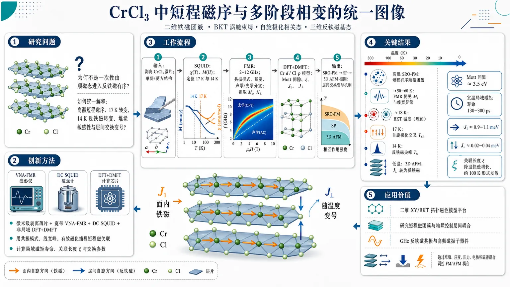
研究问题易平面准二维范德华磁体 CrCl₃ 为什么不是从顺磁态一次性进入反铁磁有序，而是在降温中经历“短程有序顺磁团簇 → 自旋极化相关态 → 三维反铁磁基态”的多阶段转变；其高温短程磁序、17 K 转变、14 K 反铁磁转变、堆垛敏感性与层间交换变号之间如何统一解释。创新方法将微米级剥离 CrCl₃ 薄片的宽带 VNA-FMR、DC SQUID 磁测量与非局域 DFT+DMFT 结合：FMR 用共振模式、线宽峰和有效磁化直接捕捉短程磁关联；SQUID 定位 17 K 与 14 K 转变；DFT+DMFT 计算局域磁矩寿命、关联长度和交换参数。Aha 点是把高温二维铁磁团簇、BKT 涡旋束缚、低温 AFM 基态和层间交换从铁磁到反铁磁的温度变号拼成同一微观图像。工作流程输入机械剥离的 CrCl₃ 微片与单斜/菱方晶体结构 → 用 SQUID 测温度磁化率和磁化回线，识别 17 K 自旋极化交叉与 14 K AFM 尖峰 → 用 2–12 GHz FMR 扫描共振模式、线宽和声学/光学磁振子分支，提取 Mₛ 与 H_E → 用 DFT+DMFT 从 Cr d 与 Cl p 轨道模型计算 Mott 间隙、局域自旋响应、关联长度 ξ、J₁ 和 J⊥ → 汇总得到包含 SRO-PM、SP、3D AFM 的磁相图与层间交换变号机制。关键结果实验显示 T_N ≈ 14 K 的反铁磁尖峰和 T_SP ≈ 17 K 的自旋极化交叉；FMR 中 Mₛ 可保持到约 50 K，线宽异常可追踪到至少 60 K，证明远高于有序温度仍有短程磁序。DFT+DMFT 得到约 3.5 eV Mott 间隙、室温局域磁矩寿命 130–300 ps、关联长度随降温快速增长并在约 100 K 出现形式发散、面内最近邻交换 J₁ ≈ 0.9–1.1 meV、层间交换 J⊥ ≈ 0.02–0.04 meV。理论 BKT 温度约 18 K，与实验 17 K 转变吻合；低温 FMR 表明层间交换转为反铁磁。应用价值CrCl₃ 可作为研究二维 XY/BKT 拓扑磁性、短程磁团簇、堆垛控制层间耦合和 GHz 反铁磁共振的模型平台；由于层间交换极弱且对堆垛、应变、压力、电场和磁弹耦合高度敏感，可用于构建可调二维自旋电子学器件、高频磁振子器件和可切换铁磁/反铁磁耦合的范德华磁性异质结构。第一部分：核心概览 (Overview)
CrCl₃ 作为易平面准二维范德华磁体，在低温经历 SRO-PM → spin-polarized → AFM 多阶段磁转变，并在远高于有序温度处保持强短程磁关联。宽带 FMR、DC SQUID 与 DFT+DMFT 联合表明：室温局域磁矩寿命可达 130–300 ps，面内关联长度随降温快速增长，低温层间交换由高温铁磁型转为反铁磁型。该工作把 CrCl₃ 的两步磁转变、短程磁序、堆垛敏感性和层间交换变号统一到同一微观图像中，使 CrCl₃ 成为研究 BKT 物理、二维磁团簇、可调层间磁耦合与高频磁振子学 的关键平台。
---
第二部分：结构化快速回顾
《Short-range magnetic order and multi-stage phase transitions in the easy-plane van der Waals magnet CrCl₃》（None，）
背景
CrCl₃ 是 CrX₃ 家族中具有弱 easy-plane XY anisotropy 的准二维范德华磁体，区别于 CrBr₃、CrI₃ 的强 Ising 型面外各向异性。其磁性转变并非单一长程有序，而是在约 17 K 出现 spin-polarized 相关态，约 14 K 进入反铁磁基态。短程磁序、堆垛多型和层间交换竞争是理解其低维磁性的核心问题。
方法
实验使用机械剥离 4 μm 厚、约 100 μm 横向尺寸 CrCl₃ 微片，结合 DC SQUID 磁ometry 与 2–12 GHz VNA-FMR。理论使用 Quantum ESPRESSO + Wannier90 + DFT+DMFT，考虑单斜 C2/m 与菱方 Rbar3 结构，利用 CT-QMC 和 Bethe-Salpeter 方程计算局域自旋响应、非均匀磁化率、关联长度与交换参数。
结果
SQUID 显示 T_N ≈ 14 K 的 AFM 尖峰与 T_SP ≃ 17 K 的拐点；Curie-Weiss 拟合得到 θ ≈ 30 ± 9 K、μₑff ≈ 4.5 ± 0.3 μB。FMR 发现 Mₛ 可持续到 50 K，线宽峰位于 T_SP = 17 K，短程关联至少可观测至 60 K。DFT+DMFT 得到约 3.5 eV Mott 间隙、室温局域磁矩寿命 130–300 ps、关联长度形式发散温标 T* ≃ 100 K、面内最近邻交换 J₁ ≈ 0.9–1.1 meV、层间交换 J⊥ ≃ 0.02–0.04 meV。
讨论
CrCl₃ 的高温顺磁相并非简单无序，而是由波动的二维铁磁团簇组成。17 K 转变可由 easy-plane XY 系统的 Berezinskii-Kosterlitz-Thouless 机制解释，估算 T_BKT = 18 K。14–17 K 区间涉及层间交换从铁磁型向反铁磁型的变号，可能受堆垛缺陷、磁弹耦合与结构相共存控制。
局限
DMFT 具有平均场性质，导致关联长度形式发散温标 T* ≃ 100 K 明显高于实验 T_SP ≈ 17 K；低温层间交换变号主要由高温 DMFT 外推与低温 FMR 提取共同推断，仍需更直接的温度分辨结构与磁散射证据。实验样品为单片微米级剥离片，堆垛缺陷与局域应变可能影响相边界。
结论
CrCl₃ 具有稳定局域磁矩、强二维短程磁序、多阶段磁转变和极易调控的层间交换。其磁性由强面内交换、弱层间耦合、easy-plane 各向异性、堆垛结构与磁弹耦合共同决定，可作为可调二维自旋电子学和 GHz 磁振子器件的平台。
---
第三部分：逐章节冷凝解析 (Section-by-Section Condensing)
Abstract
Integrated experimental–theoretical strategy
CrCl₃ 的磁性演化通过 broadband FMR spectroscopy、DC SQUID magnetometry 与 non-local DFT+DMFT 联合解析，覆盖长程与短程磁序两个尺度。研究对象是 quasi-two-dimensional easy-plane van der Waals magnet CrCl₃，核心问题是自旋关联如何演化以及多阶段磁转变的本质。原文给出方法组合：*"By combining broadband ferromagnetic resonance (FMR) spectroscopy and DC SQUID magnetometry on mechanically exfoliated micro-flakes with non-local dynamical mean-field theory (DFT+DMFT) calculations, we analyze both long- and short range magnetic order in CrCl3."*
Two-stage magnetic evolution confirmed experimentally
降温过程中先出现 spin polarized phase 的交叉行为，随后进入 antiferromagnetic ground state；同时在远高于有序温度处已经存在稳定短程关联。摘要明确指出：*"SQUID and FMR measurements confirm the presence of the crossover to a spin polarized phase with the subsequent transition into an antiferromagnetic ground state upon cooling, but show robust short-range correlations at temperatures far above the magnetic ordering temperatures."*
Room-temperature local moments are unusually long-lived
理论得到室温局域磁矩高度稳定，寿命 τ = 130–300 ps，源于宽 Mott bandgap。这对于二维磁体很关键，因为传统上低维磁序易受热涨落破坏。原文数值为：*"highly stable local magnetic moments at room temperature, with a giant room temperature lifetime τ of 130–300 ps due to a wide Mott bandgap."*
Correlation length grows rapidly below room temperature
降温后 in-plane correlation length ξ 快速增长，指示强短程磁序形成，与 FMR/SQUID 中高温有限磁响应一致。原文表述为：*"Below room temperature, a rapid growth of the in-plane correlation length ξ signals the formation of strong short range magnetic order consistent with the experimental observations."*
Interlayer exchange changes sign with temperature
层间交换随温度发生交叉：高温为正，即 ferromagnetic；低温有序相为负，即 antiferromagnetic。这是解释 spin-polarized phase 与低温 AFM 基态共存/竞争的核心机制。摘要给出结论：*"We also obtain a temperature-driven crossover of the interlayer exchange interaction, which changes from positive (ferromagnetic) at high temperatures to negative (antiferromagnetic) in the low-temperature ordered phase."*
---
I Introduction
Atomically thin vdW magnets define the field context
二维范德华磁体中的长程磁序发现推动了低维磁性研究，尤其是 transition metal trihalides CrX₃ (X = Cl, Br, I) 这一类弱耦合磁层材料。背景定位为：*"The discovery of long-range magnetic order in atomically thin van der Waals (vdW) crystals has opened new directions in condensed matter physics, related to low-dimensional magnetism."* 以及 *"The transition metal trihalides CrX3 (X = Cl, Br, I) have emerged as van der Waals systems for exploring properties of weakly coupled magnetic layers."*
CrCl₃ is distinct from CrBr₃ and CrI₃ by easy-plane anisotropy
CrBr₃ 与 CrI₃ 更偏向强 out-of-plane Ising anisotropy，CrCl₃ 则具有弱 easy-plane XY anisotropy，自旋倾向位于蜂窝层内。关键差异为：*"While the heavier counterparts, CrBr3 and CrI3, exhibit strong out-of-plane Ising anisotropy, CrCl3 is characterized by a weak easy-plane XY anisotropy with spins prefer to lie within the honeycomb layers."*
CrCl₃ enables GHz AFMR, tunneling magnetoresistance and possible Dirac magnons
CrCl₃ 的易平面构型使其适合研究层依赖隧穿磁阻、GHz 反铁磁共振和可能的无能隙 Dirac 磁振子。相关功能性被概括为：*"This unique configuration makes CrCl3 an ideal platform for observing a wide array of phenomena, including layer-dependent tunneling magnetoresistance ... and antiferromagnetic resonance (AFMR) in the gigahertz frequency range."* 另有：*"It was also argued that it is characterized by the presence of gapless Dirac magnons in its excitation spectrum."*
Magnetic ordering is intrinsically two-step
CrCl₃ 的磁转变复杂，冷却时约 17 K 先建立 spin polarized (SP) phase，低场下进一步在 T_N ≈ 14 K 进入 AFM ground state。原文给出温标和定义：*"The magnetic ordering in CrCl3 is notably complex, occurring through a distinctive two-step phase transition."*；*"the so called spin polarized (SP) phase first establishes at approximately 17 K"*；*"With further cooling, this state transitions into the antiferromagnetic (AFM) ground state at TN ≈ 14 K at low external fields."*
Weak interlayer exchange and anisotropy make CrCl₃ highly tunable
由于 interlayer exchange interaction 与 magnetic anisotropy 远弱于面内交换，CrCl₃ 对磁场、应变、门控、微小结构变化高度敏感。原文指出：*"Because the interlayer exchange interaction and magnetic anisotropy are much weaker than the intralayer interaction, CrCl3 is highly susceptible to external conditions such as magnetic field, mechanical strain, electrostatic gating, or subtle structural modifications."*
Short-range magnetic order above transition temperatures is historically expected but experimentally challenging
早期理论已经预言 CrCl₃ 的转变温度以上可能存在强 short range magnetic order (SRO)；由于 CrCl₃ 有序温度低，适合研究远高于全局有序点的短程磁序。原文为：*"While the possibility of strong short range magnetic order (SRO) above magnetic transition temperatures was predicted long time ago, low magnetic transition temperatures of CrCl3 provide ideal conditions for studying short-range magnetic order at temperatures significantly exceeding the global ordering point."*
Magnon and phonon anomalies survive to high temperatures
已有中子散射与 Raman 结果显示，CrCl₃ 中磁振子特征与声子异常可至少保持到 100 K。关键证据为：*"Previous studies using inelastic neutron scattering and Raman spectroscopy have revealed magnon features and phonon anomalies that remain identifiable up to at least 100 K."*
Stacking polymorphism strongly affects the magnetic ground state
CrCl₃ 理想块体在约 240 K 发生一级结构相变，从高温单斜 C2/m 到低温菱方 Rbar3。但堆垛缺陷在更低温也重要，甚至有低温保持单斜堆垛的报告。原文为：*"Bulk CrCl3 ideally undergoes a first-order structural transition from a high-temperature monoclinic (C2/m) phase to a low-temperature rhombohedral (Rbar3) phase near 240 K."*；*"stacking defects appear to be important at much lower temperatures"*；*"the preservation of the monoclinic stacking order was reported even at cryogenic temperatures."*
Previous DFT and DFT+DMFT leave the long-range/short-range relation unresolved
已有 DFT 与 DFT+DMFT 用于 CrCl₃ 电子磁性描述，提出面内铁磁关联来自 Cl p-states，直接 Cr-Cr 交换贡献为反铁磁；Dzyaloshinskii-Moriya 各向异性也已有计算。关键句为：*"It was argued, that the intralayer ferromagnetic order (and ferromagnetic correlations in the paramagnetic phase) are caused by the Cl p-states, while the direct exchange of chromium atoms provides only antiferromagnetic contribution."*
Central objective: connect long-range order, short-range order and stacking defects
核心目标是解析 long-range 与 short-range magnetic ordering 的关系，以及 stacking defects 在多阶段磁转变中的作用。原文目标句为：*"The purpose of the present work is to investigate the relation between the long-range and short-range magnetic ordering in CrCl3, as well as the role of stacking defects in the observed magnetic transitions."*
Interaction hierarchy is resolved in monoclinic and rhombohedral phases
通过 FMR、SQUID 与 DFT+DMFT，工作解析单斜与菱方相中的交换层级，给出短程磁序和层间交换符号交叉的微观证据。原文为：*"By combining high-resolution ferromagnetic resonance (FMR) spectroscopy and DC SQUID magnetometry with the non-local dynamical mean-field theory (DFT+DMFT) calculations, we resolve the hierarchy of interactions in both the monoclinic and rhombohedral phases."*
---
II Methods
II.1 Experimental
Micro-flake preparation and device geometry
CrCl₃ 微片机械剥离到 PDMS，转移至 Si/SiO₂/Pt (6 nm) 衬底；厚度 4 μm，横向尺寸约 100 μm，用聚碳酸酯覆盖以防机械损伤和化学退化。原文细节为：*"The studied CrCl3 flake was mechanically exfoliated on PDMS and then transferred to a Si/SiO2/Pt (6 nm) substrate using a homemade transfer machine."*；*"Flake thickness was equal to 4 μm and the lateral size was approximately 100 μm."*；*"The sample was covered with polycarbonate to prevent mechanical damage and chemical degradation."*
FMR setup optimized for micron-scale flakes
FMR 使用 VNA-FMR 和闭循环低温恒温器 Cryotrade CFSG-400-C；共面波导信号线在微波端口附近窄化到 100 μm，以提高激发效率和微米级片的灵敏度。原文为：*"Ferromagnetic resonance was studied using a VNA-FMR setup with a closed-cycle cryostat (Cryotrade CFSG-400-C)."*；*"The coplanar waveguide signal line was narrowed to 100 μm close to the microwave ports to obtain better excitation efficiency"*；*"provided the necessary sensitivity to detect resonance modes in micron-scale flakes."*
Mylar spacer suppresses parasitic Pt currents
样品与信号线之间放置 2.5 μm Mylar film，避免 Pt 层寄生电流影响微波测量。原文为：*"A 2.5-μm-thick Mylar film was placed between the sample and signal line to prevent parasitic currents in the Pt layer."*
FMR measurement window and excitation geometry
外磁场 H_DC 平行共面波导；输入微波功率固定 0 dBm；分析 S₂₁；频率 2–12 GHz，外场从 0.4 T 扫到 10 mT。原文完整细节为：*"The external magnetic field HDC was directed parallel to the coplanar waveguide."*；*"Input microwave power was equal 0 dBm in all FMR experiments."*；*"S21 parameter was analyzed."*；*"Frequency was set in the range from 2 to 12 GHz, and the external field was swept from 0.4 T to 10 mT."*
Parallel and perpendicular microwave-field geometries select magnon branches
通过设置面内微波场 hᵢₚ 与直流场 H_DC 平行或垂直，选择性激发不同宇称的磁振子分支。平行构型中，低于 T_N 可见光学和声学模，高温仅剩 Kittel-like ESR 模；光学模是 AFM 相的判据。原文为：*"By orienting the in-plane microwave field hip either parallel or perpendicular to the external DC magnetic field HDC, we were able to selectively excite parity-dependent magnon branches."*；*"In the parallel configuration (hip ∥ HDC), both optical and acoustic modes were observed below TN, while only the Kittel-like electron spin resonance (ESR) mode persisted at higher temperatures."*；*"the optical mode, which represents the out-of-phase precession of the two magnetic sublattices and serves as a definitive signature of the AFM phase."*
SQUID protocol probes temperature and field response
SQUID 使用 MPMS 5XL Quantum Design；温度依赖磁矩在零场冷却后升温测量；等温磁化回线在 2–60 K 范围记录。原文为：*"SQUID measurements were conducted using MPMS 5XL Quantum Design."*；*"Temperature dependence of the magnetic moment of the sample was measured during heating after zero-field cooling."*；*"Isothermal magnetization loops were recorded at various temperatures in the range of 2-60 K to analyze the field-dependent magnetic response."*
---
II.2 Theoretical
DFT calculation settings are explicitly controlled
DFT 使用 Quantum ESPRESSO，采用 SSSP PBEsol Efficiency 赝势，不考虑自旋轨道耦合；单斜与菱方结构取自实验晶体结构；自洽收敛阈值 10⁻⁸；k 点网格为 Γ-centered 20×20×20。原文为：*"For DFT calculations, we use Quantum ESPRESSO with the standard solid-state pseudopotentials (SSSP PBEsol Efficiency) without considering spin-orbit interaction."*；*"We consider the experimentally characterized crystal structures for both monoclinic and rhombohedral structures from Morosin1964."*；*"The convergence threshold of the DFT self-consistent cycle was 10−8."*；*"The first Brillouin zone was sampled with the Γ-centered 20×20×20 k-points mesh."*
Wannier downfolding retains Cr d and Cl p states
DFT 能带被下折叠到 Cr d-orbital states 与 Cl p-orbital states，这是描述 Cr-Cl-Cr 超交换和相关效应所必需的低能模型空间。原文为：*"The resulting band structures were downfolded to Cr d-orbital states and Cl p-orbital states with Wannier90 package."*
DMFT impurity problem solved by CT-QMC
多体关联效应通过 DMFT 处理，使用 Wan2mb 软件包和连续时间杂化展开 CT-QMC 解杂质问题，具体实现为 iQIST。原文为：*"we studied the electronic many-body correlation effects within the DMFT approach, realized in the Wan2mb software package"*；*"based on the continuous-time hybridization expansion Quantum Monte Carlo (CT-QMC) method for solving the impurity problem, implemented in the iQIST software package."*
Non-uniform susceptibility from Bethe-Salpeter equations
非均匀磁化率 χ_q 通过 Bethe-Salpeter 方程计算，包含 60–80 fermionic Matsubara frequencies 和有限频率盒修正。原文为：*"Calculation of the non-uniform susceptibilities χq was performed within the same Wan2mb package by solution of the Bethe-Salpeter equations with an account of 60–80 fermionic Matsubara frequencies, including corrections to finite frequency box."*
---
III Results
III.1 Experimental studies of long-range magnetic order
SQUID resolves AFM transition at 14 K and SP crossover at 17 K
在 0.05 T 面内场下，磁矩温度曲线显示低温多阶段磁转变：T_N ≈ 14 K 处出现特征 cusp，标志 AFM 长程有序建立；T_SP ≃ 17 K 拐点对应 SP 到顺磁态的转变。原文为：*"The temperature-dependent magnetization m(T) curves, recorded under an in-plane field of 0.05 T ... reveal a sequence of transitions observed in previous studies."*；*"a characteristic cusp is clearly visible at TN ≈ 14 K, marking the establishment of antiferromagnetic long-range order."*；*"The inflection point at TSP ≃ 17 K is associated with the transition from spin polarized to paramagnetic state."*
Finite magnetization persists up to about 50 K
即使磁场仅 0.05 T，样品磁化在远高于 T_SP 的温度仍保持显著，约可达 50 K，提示短程磁关联对外场响应很强。原文为：*"despite relatively small magnetic field substantial magnetization is preserved up to T ∼ 50 K."*
Low-temperature spin polarization requires about 0.2 T
低温下约 H ∼ 0.2 T 的面内磁场可诱导有限磁化并进入 SP 状态。原文为：*"at low temperatures larger magnetic field H ∼ 0.2 T induces finite magnetization and the onset of the spin polarized state."*
Curie-Weiss analysis indicates dominant ferromagnetic correlations
反磁化率用修正 Curie-Weiss 公式
χ = C/(T − θ) + χ₀
拟合，得到 θ ≈ 30 ± 9 K。正 Weiss 温度说明磁转变以上铁磁关联占主导。原文为：*"Quantitative analysis of the magnetic state was performed by fitting the inverse susceptibility 1/χ(T) data ... to a modified Curie-Weiss law"*；*"The fit yielded a positive Weiss temperature θ ≈ 30 ± 9 K, which indicates the dominance of ferromagnetic correlations above magnetic transition temperature."*
Effective moment exceeds spin-only Cr³⁺ value
拟合得到 μₑff ≈ 4.5 ± 0.3 μB，高于 Cr³⁺ 理论值 3.87 μB。原文为：*"The effective magnetic moment is estimated as μeff ≈ √8C μB [cgs] ≈ 4.5 ± 0.3 μB"*；*"somewhat higher than the theoretical value for Cr3+ (3.87 μB)."*
FMR below TN shows acoustic-to-Kittel transformation above 2HE
FMR 的 S₂₁ field derivative colormaps 显示低于 T_N 时，声学模在外场超过 2H_E 后转变为均匀铁磁 Kittel mode。原文为：*"The S21 field derivative colormaps ... reveal that below TN, the acoustic mode eventually transforms into the ferromagnetic Kittel mode at fields exceeding 2HE, where HE is the interlayer exchange field."*
Between TN and 20 K only one nonlinear mode dominates
在 T_N 到 20 K 区间，FMR 响应由单一模式主导，且温度行为非线性；高于 20 K 后响应变为线性，是顺磁特征。原文为：*"In the critical range between TN and 20 K, the response is dominated by a single mode with non-linear temperature behavior, while above 20 K, the response becomes purely linear, which is characteristic of the paramagnetic regime."*
Perpendicular geometry enhances the acoustic mode up to 50 K
当 hᵢₚ ⟂ H_DC 时，声学模激发显著增强，使得有序-无序转变可被高分辨追踪至 50 K。原文为：*"In the perpendicular configuration (hip ⟂ HDC), the excitation of the acoustic mode is significantly enhanced, enabling a high-resolution probe of the transition between the ordered and disordered states up to 50 K."*
Acoustic mode is temperature-independent below TN due to compensation
温度依赖共振频率显示 H < 2H_E 条件下声学模在 T_N 以下近似温度无关，源于交换场与形状各向异性的补偿。原文为：*"The temperature dependence of the resonant frequency shows that the acoustic mode (H < 2HE) is nearly temperature-independent below TN."*；*"This stability arises from a compensation between the exchange field and shape anisotropy."*
FMR fitting extracts Ms and HE with AFM and Kittel formulas
在倾斜 AFM 相 H < 2H_E，声学模用
f = μ₀ γ/(2π) √[2H_E(2H_E + Mₛ₎] · H/(2H_E)
拟合；当 H > 2H_E，进入 Kittel 模：
f = μ₀ γ/(2π) √[H(H + Mₛ₎]。其中 γ/2π ≈ 28 GHz/T。原文为：*"For the canted AFM phase where H < 2HE, the acoustic mode data was fitted using..."*；*"γ/2π ≈ 28 GHz/T is the gyromagnetic ratio."*；*"When the external field exceeds 2HE, the sublattices align, and the acoustic mode transforms into the uniform FMR Kittel mode."*
Ms drops at 14 K but remains finite up to 50 K
Mₛ₍T) 在 14 K 出现急剧下降，对应 AFM-SP transition；关键是 Mₛ 到 50 K 仍不为零，说明无全局长程有序时仍有强短程磁序。原文为：*"The sharp decrease observed in Ms(T) dependencies at 14 K is attributed to AFM-SP transition."*；*"Crucially, Ms remains non-zero at temperatures up to 50 K."*；*"This persistent finite magnetization in the absence of global long-range order is a hallmark of strong short-range magnetic order."*
Interlayer exchange field weakens approaching TN
H_E 在 5–14 K 范围内随温度升高下降，反映 3D AFM 有序在接近 T_N = 14 K 时减弱。原文为：*"The exchange field HE decreases within the T = 5−14 K range, which accompanies the weakening of the 3D antiferromagnetic order as the temperature approaches T = TN = 14 K."*
Only HE below 14 K is treated as physically meaningful
尽管相同程序可给出 T ≳ T_N 的 H_E，但这些数值表现为尖锐增加并归因于 AFM-SP 转变；只有 T < 14 K 的 H_E 被视为物理有意义。原文为：*"We also plot HE(T) data at T ≳ TN using the same procedure as for the lower temperature data."*；*"however, we consider only T < 14 K values physically meaningful."*
Low-temperature HE identifies rhombohedral stacking
低温得到 μ₀H_E ≈ 65–85 mT，对应 Rbar3 菱方相；单斜 C2/m 的层间交换场预计近十倍更大，因此该块体样品低温已转入菱方结构。原文为：*"The resulting values for HE at low temperatures (μ0HE ≈ 65--85 mT) are characteristic of the rhombohedral (Rbar3) phase."*；*"the monoclinic (C2/m) phase possesses an interlayer exchange field nearly ten times larger, confirming that our bulk sample has fully transitioned into the low-temperature rhombohedral structure."*
---
III.2 Persistence of Short-Range Correlations in the Paramagnetic Phase
Two experimental indicators support SRO above TSP
短程磁序证据包括：T_SP 以上的大磁化率，以及 FMR 提取的 T_SP 以上小场有限面内磁化 Mₛ。原文概括为：*"These findings are related to (i) large magnetic susceptibility above the crossover temperature TSP and (ii) finite in-plane magnetization Ms above TSP in small magnetic fields, obtained by FMR."*
Linewidth peak at 17 K tracks maximum spin fluctuation density
在 9.5 GHz 测得的共振线宽 ΔH 于 T_SP = 17 K 附近出现明显峰值，代表自旋涨落密度最大并标志进入 SP 相。原文为：*"The most striking evidence for the evolution of this short-range order is found in the resonance linewidth ΔH measured at 9.5 GHz."*；*"A pronounced peak in the linewidth is clearly observed at approximately TSP = 17 K."*；*"This peak represents a maximum in the spin fluctuation density and signals the transition to the spin-polarized phase."*
Linewidth broadening reflects correlation length growth and spin slowing down
从高温侧接近转变时，线宽增大源于磁关联长度快速增长和自旋动力学变慢，导致磁振子散射率增加；该效应至少到 60 K 仍可观测。原文为：*"This increase reflects the rapid growth of magnetic correlation length as the system approaches the transition from the high-temperature side and remarkably remains observable up to at least 60 K."*；*"Slowing down of the spin-dynamics increases the scattering rate of magnons, leading to a broader resonance."*
Low-temperature linewidth narrowing signals coherent long-range order
低温线宽变窄表示相干长程有序建立，抑制与 AFM 长程有序相关的大尺度临界涨落。原文为：*"The narrowing of the linewidth at low temperatures marks the establishment of coherent long range order, which suppresses the large-scale critical fluctuations, related to AFM long range order."*
Magnetic phase diagram contains AFM, SP and SRO-PM regimes
结合 SQUID 与 FMR 得到面内场相图，包含低温低场 3D AFM、中间 spin-polarized、高温 short-range ordered paramagnetic phase (SRO PM) 三个区域。原文为：*"By combining the critical temperatures obtained from both SQUID ... and FMR ... measurements, we constructed a comprehensive magnetic phase diagram for CrCl3 under an in-plane field."*；*"The diagram reveals three distinct regimes: the 3D AFM phase at the lowest temperatures and fields, the spin-polarized, and the short-range ordered paramagnetic phase (SRO PM) at higher temperatures."*
Specific heat peaks can be reinterpreted by SRO-PM and AFM transitions
与既有比热结果比较，宽比热峰对应 SRO PM → SP crossover，窄低温峰对应向 AFM 相的磁转变。原文为：*"Comparison of the obtained results with Ref. kesarwani2025investigation allows to identify the wide peak of specific heat observed ... as the crossover from SRO PM to the SP phase, while the narrow low temperature peak of specific heat corresponds to the magnetic transition to the AFM phase."*
TSP weakly field-dependent below 0.2 T but logarithmically grows above
弱场 H < H_cr ≃ 0.2 T 时，T_SP 对磁场依赖很弱；强场 H > H_cr 时，得到
T_SP ≃ T₁ ln(H/H₀)，其中 T₁ ≃ 16.3 K、H₀ ≃ 0.014 T。原文为：*"at weak magnetic fields H < Hcr ≃ 0.2 T the temperature TSP only marginally depends on magnetic field, while for H > Hcr we find an increase of TSP ≃ T1 ln(H/H0) with T1 ≃ 16.3 K and H0 ≃ 0.014 T being constants."*
---
III.3 Theoretical analysis of magnetic properties
III.3.1 Local magnetic moments and correlation length
DFT falsely gives metallicity; DFT+DMFT opens a correlated gap
常规 DFT 中 CrCl₃ 显示金属性；DFT+DMFT 中相关效应打开约 3.5 eV 间隙，主要由 Hund exchange 驱动。原文为：*"Although in DFT approach CrCl3 appears to be metallic, in DFT+DMFT approach the gap ∼ 3.5 eV in the electronic spectrum is opened by correlation effects (mainly by Hund exchange)."*
Dynamic local spin susceptibility contains narrow peaks
动态局域自旋磁化率实部 Re χₛ₍ω) 具有很窄峰，且峰宽随降温显著减小，说明室温以下局域磁矩稳定。原文为：*"the temperature evolution of the real part of dynamic local spin susceptibility, Re χs(ω), in CrCl3 shows very narrow peaks, which width strongly decreases with temperature."*；*"This highlights stable local moments below room temperature."*
Even at 1000 K local moments remain weakly damped
最高温 T ∼ 1000 K 下，峰半宽 Γ ≈ 0.2 meV，并且在所有温度下 Γ ≪ kT，说明局域磁矩强局域且阻尼弱。原文为：*"even at the highest temperature T ∼ 1000 K, the peak half-width Γ is only about 0.2 meV, such that Γ ≪ kT at all considered temperatures, indicating strong localization and weak damping of local magnetic moments."*
Local moment lifetime increases from 3 ps to about 300 ps
局域磁矩寿命 τ = ħ/Γ 从高温约 3 ps 增加到室温约 300 ps，提高近两个数量级。原文为：*"The corresponding lifetime of local magnetic moments increases from 3 ps at high temperatures to 300 ps at room temperature increasing by nearly two orders of magnitude."*
Correlation length is extracted by Ornstein-Zernike fitting
面内磁关联长度 ξ 通过将自旋磁化率拟合为 χ_q ∝ (q² + ξ⁻²)⁻¹ 得到，用于量化磁团簇线性尺寸。原文为：*"we present the calculated temperature dependence of the in plane magnetic correlation length ξ, determined from fitting the spin susceptibility to Ornstein-Zernike form χq ∝ (q2 + ξ−2)−1."*；*"The obtained correlation length serves as a quantitative measure of the linear size of magnetic clusters."*
ξ grows rapidly and formally diverges near 100 K
室温时 ξ 较小，但随降温快速增大；ξ⁻²(T) 外推在 T* ≃ 100 K 形式发散。该温标高于实验 T_SP ≈ 17 K，被解释为 DMFT 平均场高估，实际应视为强短程磁序建立温标。原文为：*"At room temperature, ξ remains relatively small, but it demonstrates a rapid increase with decrease of temperature."*；*"The inset showing the inverse correlation length ξ−2(T) reveals a formal divergence at T* ≃ 100 K."*；*"such an overestimate is a well-known artifact of the mean-field nature of DMFT, which should rather be interpreted as a temperature scale for the establishing of strong short range magnetic order."*
Short ξ can still affect optical properties due to localized excitons
由于 CrCl₃ 激子局域，即使 ξ ≳ d_Cr-Cr 的短程磁关联也足以影响光学性质。原文为：*"since the excitons in CrCl3 are well localized, even magnetic correlations with ξ ≳ dCr−Cr may affect optical properties."*
Theory aligns with high-temperature magnetic excitations
短程关联延伸到顺磁相的结论与 III.2 的实验短程磁序以及 T ∼ 100 K 仍可见磁激发的中子结果一致。原文为：*"The persistence of these correlations well into the paramagnetic phase is consistent with the short range magnetic order observed in Sect. III.2, as well as recent observations of magnetic excitations in CrCl3 that remain visible up to T ∼ 100 K."*
---
III.3.2 Magnetic exchange and BKT temperature
Nearest-neighbor intralayer exchange dominates
面内最近邻交换 J₁ ≈ 0.9–1.1 meV，约比次近邻 J₂ 强一个数量级，说明磁矩主要局域在 Cr³⁺ 离子上。原文为：*"The intralayer exchange with the nearest neighbor (J1) is approximately 0.9--1.1 meV, which is nearly an order of magnitude stronger than the interaction with the next nearest neighbor (J2)."*；*"This sharp decay indicates a high degree of magnetic moment localization on the Cr3+ ions."*
Temperature-independent exchange supports effective Heisenberg model
面内交换常数在宽温区内几乎不变，支持用有效 Heisenberg model 描述。原文为：*"these exchange constants remain nearly constant across a wide temperature range, confirming applicability of the effective Heisenberg model."*
Rhombohedral phase has stronger intralayer exchange
低温稳定的菱方 Rbar3 相比高温单斜 C2/m 相具有更高面内交换，约 240 K 的结构相变为磁子系统提供额外稳定化。原文为：*"the rhombohedral Rbar3 phase, which is the stable low-temperature modification, possesses higher intralayer exchange values than the high-temperature monoclinic C2/m phase."*；*"the structural phase transition at approximately 240 K provides an additional energetic 'boost' to the magnetic subsystem, enhancing stability of short range magnetic order."*
Interlayer exchange is 25–50 times weaker than J1
层间交换 J⊥ ≃ 0.02–0.04 meV，比 J₁ 弱 25–50 倍，这解释了 CrCl₃ 的准二维性质和中高温二维短程有序主导。原文为：*"the interlayer exchange (J⊥ ≃ 0.02 - 0.04 meV) is found to be 25-50 times weaker than J1."*；*"This underscores the quasi-2D nature of CrCl3 and explains the dominance of 2D short range order at not too low temperatures."*
BKT estimate gives 18 K in the rhombohedral phase
由于 CrCl₃ 具有 easy-plane anisotropy，使用 BKT 温度估算式。参数为 Eₛᵢₐ + E_dip = −31.4 μeV + 85.2 μeV = 53.8 μeV，D = 17 meV·Å²，S = 1.5，得到菱方相 T_BKT = 18 K。原文为：*"For Esia + Edip = −31.4 μeV + 85.2 μeV = 53.8 μeV, D = 17 meV · Å2, obtained from the calculated exchange interactions, and spin S = 1.5 (Cr3+) we obtain a value of TBKT = 18 K for the Rbar3 phase."*
17 K transition is interpreted as vortex-antivortex binding
估算 T_BKT = 18 K 与实验 T_SP ≈ 17 K 接近，支持 17 K 转变对应单层内涡旋-反涡旋对的拓扑束缚。原文为：*"Given that CrCl3 is characterized by easy-plane XY anisotropy, our results suggest that the transition at 17 K marks the topological binding of vortex-antivortex pairs within the individual layers."*
High-temperature interlayer exchange is ferromagnetic
DFT+DMFT 在顺磁相中显示高温层间交换为正，即 FM；降至室温附近时该 FM 相互作用逐渐减弱。原文为：*"Our DFT+DMFT calculations in the paramagnetic (PM) phase demonstrate that at high temperatures, the interlayer exchange is positive (FM)."*；*"As the system cools toward room temperature, the magnitude of this FM interaction is gradually suppressed for both the monoclinic and rhombohedral phases."*
Stacking registry strongly controls interlayer coupling
外推到低温时，单斜 C2/m 到菱方 Rbar3 转变会导致层间交换显著跳变，表明层间耦合对堆垛配准极端敏感。原文为：*"extrapolating the exchange behavior toward lower temperatures we expect a significant jump upon the transition from the high-temperature monoclinic (C2/m) to the low-temperature rhombohedral (Rbar3) symmetry."*；*"This jump underscores the extreme sensitivity of the interlayer coupling to the stacking registry."*
Critical field scale matches interlayer exchange energy
在 T ≳ 17 K 得到的 J⊥ ≃ 20 μeV 与相图中临界场 H_cr = 0.2 T 对应能量 gμB H_cr 可比，说明相图中 cusp 可归因于层间相干开始。原文为：*"the strength of the obtained interlayer exchange interaction J⊥ ≃ 20 μeV, obtained at T ≳ 17 K is comparable to the energy scale gμB Hcr, corresponding to the 'critical' field Hcr = 0.2 T"*；*"Therefore, we can associate the obtained cusp with the onset of interlayer coherence."*
Low-field TSP is set by interlayer cutoff; high-field TSP follows ln H
当 h = gμB H < αJ⊥，层间交换切断磁涨落，T_SP(h) ≃ T_SP(0)；当 h > αJ⊥，磁场切断 easy-plane 涨落，解释 T_SP(H) 对 ln H 的近线性依赖。原文为：*"for h = gμBH < αJ⊥ (α ∼ 1) magnetic field induces only small change of magnetic transition temperature, since the magnetic fluctuations are cut by larger interlayer exchange."*；*"at h > αJ⊥ the magnetic field serves as a cutoff of the easy plane magnetic fluctuations."*；*"which may explain linear-like dependence of TSP(H) on ln H in the phase diagram."*
17 K transition involves 3D coherence, not purely 2D order
T_SP(0) 已经包含小磁场下 3D 相干的开始，这与此前将该转变解释为二维有序开始的观点不同。原文为：*"This also stresses the onset of 3D coherence in small magnetic fields already at the temperature TSP(0), in contrast to the interpretation given previously ... which connected this transition with the onset of two-dimensional order."*
Low-temperature FMR implies negative interlayer exchange
低温通过实验 H_E 提取的层间交换为负，符合 3D AFM ground state；接近 17 K SP 转变时，AFM 交换被系统性抑制，因此层间交换必须随温度变号。原文为：*"In the low-temperature regime, the interlayer exchange interaction can be extracted from the experimentally measured field HE."*；*"The respective exchange interaction is negative, consistent with the 3D AFM ground state."*；*"as the temperature approaches the transition to the spin-polarized phase near 17 K, the AFM exchange is systematically suppressed."*；*"This observation necessitates the existence of a sign-change in the interlayer exchange as a function of temperature."*
Stacking defects and magnetoelastic coupling plausibly drive exchange sign change
层间交换变号可能与 stacking defects、菱方/单斜相共存、外压敏感性和磁弹耦合有关。原文为：*"The change of the sign of interlayer exchange may be closely related to the presence of stacking defects"*；*"coexistence of rhombohedral and monoclinic phases down to T ∼ 50 K"*；*"the balance between ferro- and antiferromagnetic phases is rather fragile and influenced by the external conditions, as well as the lattice degrees of freedom."*；*"one can expect a switch from a ferromagnetic correlations at high temperatures to an antiferromagnetic structure at low temperatures."*
Broad heat-capacity peak suggests lattice involvement
约 T_C ≃ 17 K 的比热峰较宽，而均匀磁化率显示清晰发散，这被视为该转变附近晶格自由度参与的补充证据。原文为：*"the peak of the specific heat at T = TC ≃ 17 K is rather broad ... while the uniform susceptibility shows a clear divergence, which may also be considered as additional evidence that the lattice degrees of freedom are involved in the vicinity of this transition."*
Stacking disorder can explain paramagnetic-like SP phase at small fields
SP 相在小场中磁化消失的顺磁式特征可由堆垛缺陷导致的连续对称性系统磁无序解释。原文为：*"Presence of stacking defects can also naturally explain paramagnetic nature of SP phase with the magnetization vanishing in small fields ... as a consequence of magnetic disorder in a continuous symmetry system."*
---
IV Discussion
Wide gap produces long-lived local moments
宽能隙约 3.31 eV 使局域磁矩在室温具有 τ = 130–300 ps 的长寿命，并随降温进一步增加。原文为：*"Due to the presence of wide energy gap (approximately 3.31 eV) the local magnetic moments have long room-temperature lifetime τ of 130–300 ps, which further increases with decrease of temperature."*
Short-range order persists deep into the paramagnetic phase
核心结论是强短程序在顺磁相中持久存在。DFT+DMFT 预测关联长度在约 100 K 形式发散，代表局域 FM 团簇开始形成。原文为：*"A central finding of this work is the persistence of robust short-range order well into the paramagnetic phase."*；*"Our DFT+DMFT calculations predict a formal divergence of the correlation length ξ at approximately 100 K, marking the onset of localized FM cluster formation."*
Raman Eg² shift supports 80–100 K spin-phonon coupling onset
E_g² Raman mode 在 80–100 K 即偏离非谐行为，位移达 22 cm⁻¹，约为 CrI₃ 的四倍，说明 CrCl₃ 具有异常强 spin-phonon coupling。原文为：*"This theoretical prediction is corroborated by the giant 22 cm−1 shift of the Eg2 Raman mode, which begins to deviate from anharmonic behavior at temperatures as high as 80--100 K."*；*"This shift is nearly four times larger than that observed in CrI3, indicating an exceptionally strong spin-phonon coupling in CrCl3."*
Paramagnetic state is a fluid of fluctuating 2D-ordered clusters
晶格在 FM 畴实现全局 3D 相干之前已受影响，说明顺磁态实际上是波动的二维有序团簇流体。原文为：*"The lattice appears to be affected by the formation of FM domains long before they achieve global 3D coherence, implying that the paramagnetic state is actually a fluid of fluctuating 2D-ordered clusters."*
CrCl₃ differs from CrBr₃ and CrI₃ by multi-stage transition
CrBr₃ 和 CrI₃ 通常单步进入 3D 铁磁态；CrCl₃ 则在 T_SP ≈ 17 K 建立强铁磁关联，并在 T_N ≈ 14 K 进入反铁磁基态。原文为：*"Unlike its heavier counterparts, CrBr3 and CrI3, which exhibit a single transition into a 3D ferromagnetic state, CrCl3 undergoes a more complex sequence."*；*"At TSP ≈ 17 K, the system establishes robust ferromagnetic correlations."*；*"The second stage, occurring at TN ≈ 14 K, marks the transition into the antiferromagnetic ground state."*
BKT mechanism explains the 17 K transition
easy-plane XY anisotropy 允许 BKT 机制，实验 17 K 转变与理论 T_BKT = 18 K 匹配。原文为：*"This transition is accurately described by the Berezinskii-Kosterlitz-Thouless mechanism, allowed by the material’s easy-plane XY anisotropy."*
TN < T < TSP involves interlayer coupling sign change
14–17 K 区间很可能对应层间耦合符号变化，由堆垛变化和磁弹耦合共同驱动。原文为：*"We argue that the temperature range TN < T < TSP is likely characterized by the change of the sign of the interlayer coupling, which occurs as a consequence of the interplay of lattice effects (possible change of stacking) and magnetoelastic coupling."*
External pressure, hysteresis and sample variability support fragile FM-AFM balance
FM-AFM 滞后、外压敏感性、不同样品 Néel 温度差异共同说明 CrCl₃ 中铁磁与反铁磁层间耦合平衡非常脆弱。原文为：*"This conclusion is confirmed by the observation of FM-AFM hysteresis ... the sensitivity of the magnetic phase to external pressure ... as well as the variability of reported Néel temperatures across different samples."*
CrCl₃ is a tunable magnetic insulator rather than a simple one
CrCl₃ 的磁相可通过微小外部刺激调控，如应变、电场和跨 vdW 间隙轨道重叠工程。原文为：*"CrCl3 is not a simple magnetic insulator but a highly tunable platform where magnetic phases can be switched via minimal external stimuli, such as strain or electric fields, by engineering the orbital overlap across the van der Waals gap."*
---
V Acknowledgements
Funding structure separates DMFT, experiment, CT-QMC and DFT support
DMFT 计算、实验测量与结果分析由 RSF grant 24-12-00186 支持；CT-QMC 软件开发与适配由俄罗斯科学与高等教育部国家任务支持；DFT 计算由 BASIS foundation Grant No. 25-1-5-143-1 支持。原文为：*"The DMFT calculations, experimental measurements, and analysis of the results are supported by RSF grant 24-12-00186."*；*"Development and adaptation of CT-QMC software are supported within the state assignment of the Ministry of Science and Higher Education of the Russian Federation for the IMP UB RAS."*；*"DFT calculations ... are supported by the BASIS foundation (Grant No. 25-1-5-143-1)."*
---
第四部分：深度理解与语言支持 (Understanding & Nuance)
1. 术语解析
Short-range magnetic order
Short-range magnetic order 指没有全局长程相干、但局域区域内自旋已经显著相关的状态。这里不是普通顺磁，而是存在有限磁团簇、有限关联长度和强场响应的 SRO-PM。论文语境中，证据包括 Mₛ 到 50 K 仍非零、FMR 线宽到 60 K 仍异常、理论 ξ 随降温快速增长。微妙点：它不是 thermodynamic phase transition 必然对应的长程序，而更接近 crossover 或团簇流体。
Spin-polarized phase
Spin-polarized phase (SP) 在这里不是简单铁磁长程有序相，而是在有限外场下出现显著磁化、与 AFM 和 SRO-PM 相邻的中间态。其特点是磁化对场非线性、低场中可能呈顺磁式、且受层间相干和堆垛缺陷影响。英文中 “spin-polarized” 容易误解为完全饱和铁磁；此处更准确理解为场诱导或弱相干铁磁相关态。
Easy-plane XY anisotropy
Easy-plane XY anisotropy 表示自旋倾向位于二维层面内，而非垂直层面。它与 Ising anisotropy 的区别非常关键：Ising 系统可较容易形成离散对称性破缺的二维长程有序；XY 系统在二维中受 Mermin-Wagner 约束，典型转变是 BKT transition，即涡旋-反涡旋拓扑束缚，而非普通磁化序参量突然出现。
Interlayer exchange sign change
Interlayer exchange sign change 指层间交换从正的铁磁型变为负的反铁磁型。这里的符号变化不是面内交换变号，而是不同 CrCl₃ 层之间耦合方式改变。其物理后果是：高温更倾向层间铁磁关联，低温基态却是层间反铁磁堆叠。微妙点：变号可能不是纯电子效应，而与 stacking registry、stacking defects、magnetoelastic coupling 共同相关。
Formal divergence
Formal divergence 在 “ξ⁻²(T) reveals a formal divergence at T* ≃ 100 K” 中表示模型拟合外推得到关联长度无限大的数学迹象，但不等于实验上真的在 100 K 发生长程有序。由于 DMFT 平均场特性会高估临界温度，这里的 T* 更应理解为强短程磁序开始显著发展的能量/温度尺度。
---
2. 疑难查证：复杂概念解释
为什么 CrCl₃ 可以在 100 K 附近已有强磁关联，却到 17 K/14 K 才发生磁转变？
低维磁体中，“局域相关形成”和“全局长程有序”是两件事。CrCl₃ 的面内交换 J₁ ≈ 0.9–1.1 meV 远强于层间交换 J⊥ ≃ 0.02–0.04 meV，因此层内自旋可以较早形成小团簇；但不同团簇之间、不同层之间要实现相干，需要克服二维热涨落、涡旋激发和层间弱耦合。于是 80–100 K 可观察到 Raman/磁激发异常，50–60 K 仍有 FMR 短程关联证据，但真正相干转变在 17 K，AFM 长程序在 14 K 才稳定。
BKT 转变为什么适用于 CrCl₃？
CrCl₃ 具有 easy-plane XY anisotropy，自旋主要在层面内旋转。纯二维 XY 系统不能像三维铁磁那样通过普通序参量产生传统长程有序，而是通过涡旋-反涡旋对的束缚发生拓扑转变。高温时自由涡旋破坏相干；低温时涡旋和反涡旋配对，系统出现准长程有序。理论估算 T_BKT = 18 K，与实验 T_SP ≈ 17 K 接近，所以 17 K 的 SP 转变可理解为层内拓扑相干增强，同时弱层间耦合使其带有 3D coherence 特征。
层间交换为什么可能随温度变号？
层间交换取决于层间 Cr-Cl-Cl-Cr 路径、轨道重叠和堆垛方式。CrCl₃ 在约 230–240 K 有单斜到菱方的结构转变，但堆垛缺陷和相共存可持续到低温。微小层间滑移会改变超交换路径的相位、距离和角度，使铁磁与反铁磁贡献的能量差非常小。高温 DMFT 得到正层间交换，低温 FMR 提取到负层间交换；两者拼接后必然存在温度驱动变号。14–17 K 区间正好是 SP 与 AFM 竞争最强、磁弹耦合和堆垛无序影响最突出的区域。
为什么 FMR 线宽能证明短程磁序？
FMR 线宽 ΔH 反映磁激发的阻尼和散射。接近磁转变时，自旋涨落增强、关联长度变大、自旋动力学变慢，磁振子散射率增加，线宽变宽。CrCl₃ 中线宽峰在 17 K，但异常增宽可追踪到 60 K，说明系统远高于长程有序温度时已经存在慢涨落和短程团簇，而不是普通独立自旋顺磁体。
---
第五部分：创新评估与关联 (Synthesis & Novelty)
1. 创新性判断
把 CrCl₃ 的多阶段转变统一为 SRO、BKT、3D coherence 和层间交换变号的连续图像
过去 2–5 年的 CrCl₃ 研究分别报道过 AFMR、磁振子、Raman 声子异常、堆垛缺陷和磁相边界，但常常分散解释。该工作的新颖性在于把 80–100 K 短程团簇形成、17 K BKT/SP 转变、14 K AFM 长程有序 与 层间交换符号变化 放入同一框架。
直接结合微米级 FMR 与 SQUID，识别 SRO-PM 相
宽带 FMR 在微米级剥离片上同时追踪模式频率、线宽和有效面内磁化，发现 Mₛ 到 50 K 非零、线宽异常到 60 K 仍存在。相比仅用磁化率或比热，FMR 提供了动力学层面的短程磁序证据，使 SRO-PM 不再只是推测。
DFT+DMFT 给出局域磁矩寿命这一少见量化指标
局域磁矩寿命 130–300 ps 的室温数值非常突出。多数二维磁体研究关注交换常数、磁各向异性和临界温度；这里通过 Re χₛ₍ω) 峰宽给出磁矩寿命，并将其与宽 Mott gap 关联，解释为什么 CrCl₃ 即使在高温仍保留强局域磁性。
揭示层间交换温度驱动变号
层间交换从高温正值到低温负值的交叉是解释 CrCl₃ “先铁磁相关、后反铁磁基态”的关键创新点。此前工作已知堆垛会改变层间耦合，但温度演化、FMR 低温交换场和 DMFT 高温交换参数被系统拼接后，形成了更完整的变号证据链。
重新解释比热宽峰与 17 K 转变
既有比热宽峰可被解释为 SRO-PM 到 SP crossover，而非单纯二维有序起点；窄峰对应 AFM 转变。这种解释将热力学异常、FMR 线宽峰和 BKT 温标联系起来，提升了相图物理含义的分辨率。
把 CrCl₃ 定位为可调二维磁性平台
由于层间交换极弱、堆垛敏感且可能变号，CrCl₃ 可通过应变、电场、压力或堆垛工程在铁磁/反铁磁相关态之间切换。相对于 CrI₃、CrBr₃，CrCl₃ 的优势不在高居里温度，而在 低能量尺度、高可调性、GHz AFMR 和 easy-plane 拓扑磁性。
-
12
📊 含图深析
📄 摘要：作者通过高通量计算筛选二维交替磁单层，并进一步研究应变工程对其磁序与自旋分裂的影响。工作面向可实验实现、可调控的低维交替磁材料，强调应变作为调节手段在单层体系中的作用。
💡 亮点：高通量筛选把二维交替磁单层从概念推进到候选库。应变工程则提供了对磁序和自旋分裂的可调旋钮。
📖 展开分析 + 配图
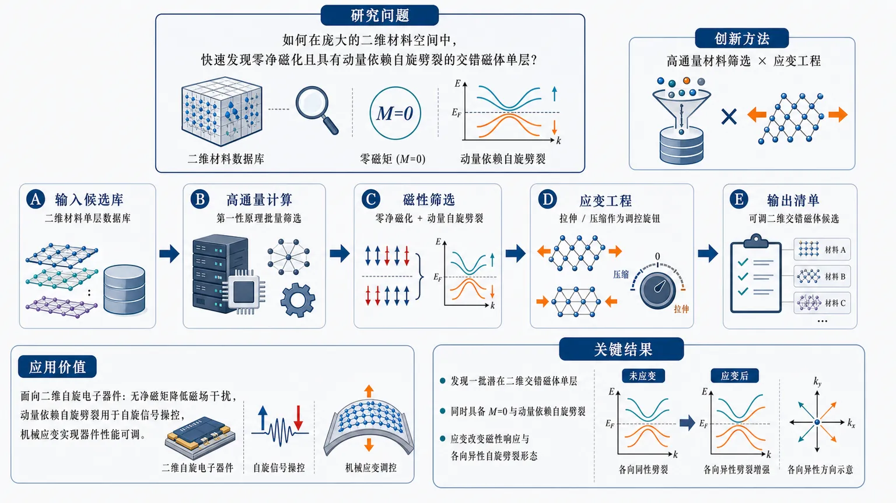
研究问题如何在庞大的二维材料空间中快速发现真正具备交错磁体特征的单层材料：既保持零净磁化，又在动量空间中产生可用于自旋电子学的自旋劈裂。创新方法将高通量材料筛选与应变工程结合：先用计算流程批量识别二维交错磁体候选单层，再把外加应变作为可调“旋钮”，观察磁性状态和各向异性自旋劈裂如何随晶格拉伸或压缩而改变。工作流程输入二维材料候选库，进行高通量第一性原理计算与磁性筛选，锁定零净磁化且具有动量依赖自旋劈裂的单层材料；随后施加不同应变，比较能带、自旋劈裂与磁性变化，输出可调控的二维交错磁体候选清单。关键结果筛选得到一批潜在二维交错磁体单层，证明这类材料可同时呈现零净磁化和动量依赖自旋劈裂；外加应变能够改变其磁性响应和各向异性自旋劈裂形态，显示应变是调控二维交错磁体自旋性质的有效手段。应用价值为二维自旋电子器件提供新的材料候选和调控策略：可利用无净磁矩降低磁场干扰，同时利用动量依赖自旋劈裂实现自旋信号操控，并通过机械应变实现器件性能可调。核心概览
本文属于二维磁性材料与自旋电子学方向，针对二维交错磁体进行高通量计算筛选，并研究应变工程对其磁性及动量依赖自旋劈裂的调控作用。
方法要点
- 采用高通量材料发现流程筛选潜在二维交错磁体单层。
- 关注交错磁体的两个核心特征：零净磁化与动量依赖自旋劈裂。
- 分析外加应变对磁性性质和各向异性自旋劈裂的影响。
- 将应变视为调节二维交错磁体自旋电子性质的外场调控手段。
- 具体计算方法、材料数据库来源、筛选标准和应变范围摘要未详述。
关键结果
- 计算筛选得到了一批候选二维交错磁体单层。
- 结果表明二维交错磁体可同时具有零净磁化和动量依赖自旋劈裂。
- 应变能够调控这些材料的磁性和各向异性自旋劈裂。
- 论文展示了应变可作为调节二维交错磁体自旋电子性质的有效“旋钮”。
- 候选材料数量、具体化学组成、能带特征和调控幅度摘要未详述。
创新性判断
- 可能的新颖点在于将高通量材料发现系统用于二维交错磁体单层的筛选，而非仅研究少数已知材料；但具体相较既有工作的覆盖范围和优势摘要未详述。
- 另一可能创新点是结合应变工程，系统讨论二维交错磁体中磁性与各向异性自旋劈裂的可调性。
- 从摘要看，该工作强调“材料发现 + 外场调控”的结合，对二维自旋电子材料设计具有潜在价值；但其原创性强弱仍需全文中候选材料新颖性、计算验证深度及与已有文献对比来判断。
-
13
📄 摘要：作者在 BiFeO3 薄层中研究磁振子输运及其各向异性，报告了与交替磁性相关的实验信号。该结果把交替磁性从电子能带拓展到磁振子输运层面，为受限铁氧体中的自旋动量分裂提供了实验线索。
💡 亮点：BiFeO3 中出现了交替磁性的磁振子输运证据。它把交替磁序的各向异性从电子态推进到磁振子层面。
📖 展开分析 + 配图
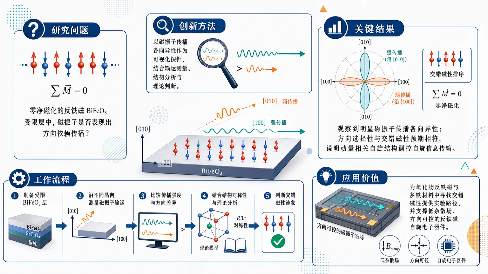
研究问题在零净磁化的反铁磁 BiFeO₃ 受限层中，磁振子是否会表现出方向依赖的传播行为，并且这种各向异性是否可作为交错磁性的实验迹象。创新方法以“磁振子传播各向异性”作为可视化探针，把受限 BiFeO₃ 层中的输运测量、晶体结构分析和理论判断结合起来，识别零净磁化背景下由动量相关自旋结构调控的交错磁性特征。工作流程制备受限 BiFeO₃ 层 → 沿不同晶向测量磁振子输运信号 → 比较磁振子传播强度和方向差异 → 结合结构对称性与理论分析 → 判断各向异性是否符合交错磁性图像 → 输出 BiFeO₃ 中交错磁性迹象。关键结果实验观察到 BiFeO₃ 中磁振子传播具有明显各向异性；这种方向选择性出现在零净磁化的反铁磁状态中，与交错磁性预期相符，说明动量相关自旋结构能够影响自旋信息传输。应用价值为在氧化物反铁磁和多铁材料中寻找交错磁性提供实验路径，也为无净磁化、低杂散场的反铁磁自旋电子器件和方向可控的磁振子信息传输奠定基础。核心概览
该论文研究超薄夹层中 BiFeO₃ 薄层的磁振子输运各向异性，探索其与交替磁性特征及无净磁化自旋读出的关联。
方法要点
- 研究对象是夹于超薄层之间的 BiFeO₃ 薄层，具体材料结构与制备方法摘要未详述。
- 通过观测磁振子输运来表征 BiFeO₃ 中的自旋相关行为。
- 关注磁振子输运中新出现的各向异性行为。
- 将 BiFeO₃ 的反铁磁/多铁背景与“反常磁性”相关的动量依赖自旋特征联系起来；此处“反常磁性”结合题名可理解为交替磁性/Altermagnetism，但摘要未展开机制。
- 论文试图从实验现象上寻找无净磁化体系中自旋信息读出的线索。
关键结果
- 在 BiFeO₃ 薄层中观测到了磁振子输运。
- 发现磁振子输运表现出新出现的各向异性行为。
- 摘要声称这些现象将 BiFeO₃ 的反铁磁/多铁性质与动量依赖的自旋特征联系起来。
- 论文认为该结果为无净磁化体系中的超快、自旋信息非破坏读出提供了实验线索。
- 具体输运强度、各向异性大小、温度/厚度依赖、器件几何与统计显著性等，摘要未详述。
创新性判断
- 可能的新颖点在于：把 BiFeO₃ 这一经典反铁磁/多铁材料与交替磁性相关的动量依赖自旋特征建立实验关联。
- 另一潜在创新是通过磁振子输运各向异性来探测无净磁化体系中的自旋结构，而不是依赖宏观磁化信号。
- 若实验证据充分，该工作可能为在多铁反铁磁材料中实现超快、非破坏式自旋信息读出提供新路径。
- 但由于摘要未详述实验设计、对照样品、理论模型和排除其他各向异性来源的证据，其创新性强度仍需结合全文判断。
-
14
📊 含图深析
📄 摘要：作者在交替磁过渡金属氧卤化物中设计多重多铁序，将铁电性与交替磁性耦合到同一材料平台。结果指向可通过电场调控的多种多铁态，为磁电耦合器件提供了氧卤化物候选体系。
💡 亮点：氧卤化物里把铁电性和交替磁性捆绑成多重多铁态。最吸引人的是它们可望被电场直接切换。
📖 展开分析 + 配图
研究问题如何在二维过渡金属氧三卤化物中，把铁电极性与交错磁性设计到同一材料平台，使材料同时呈现零净磁化、各向异性自旋劈裂和可切换极性自由度，并形成多个可区分的多铁序态。创新方法以过渡金属氧三卤化物为母体，通过耦合铁电极性自由度与交错磁性序，构建一种“无净磁矩但有自旋劈裂”的二维多铁平台；Aha 点在于多铁序不止一个，而是可区分、可电控重构的多态序参量组合。工作流程选择二维过渡金属氧三卤化物材料家族 → 分析晶体极性与铁电自由度 → 引入或识别交错磁性排列 → 检查零净磁化与各向异性自旋劈裂 → 判定铁电性和交错磁性的共存 → 构造多个可区分多铁序 → 探索电场驱动的多铁序重构路径。关键结果研究指出该材料家族可设计出同时具备铁电性和交错磁性的多铁相；体系可承载多个相互可区分的多铁序，并可能通过电场实现重构；零净磁化、各向异性自旋劈裂和极性自由度被统一到同一二维材料框架中。应用价值该研究为无净磁矩自旋电子学、低功耗电控磁性器件和多态信息存储提供材料设计思路；电场可重构的多个多铁序可用于可编程磁电器件、极性编码、自旋劈裂调控和非常规磁电耦合研究。核心概览
该论文属于二维多铁性与交错磁性材料设计方向，研究过渡金属氧三卤化物中铁电性与交错磁性的共存，提出可实现多个可区分多铁序并进行电控重构。
方法要点
- 以过渡金属氧三卤化物这一二维材料家族为研究对象。
- 关注铁电极性自由度与交错磁性之间的耦合。
- 设计或讨论同时具备零净磁化、各向异性自旋劈裂和极性自由度的多铁相。
- 探索多个可区分多铁序的实现方式。
- 讨论通过电场或电控手段对多铁序进行重构的可能性。
- 具体计算方法、模型参数、材料种类或实验/理论细节摘要未详述。
关键结果
- 摘要明确指出，过渡金属氧三卤化物中可设计同时具有铁电性与交错磁性的多铁相。
- 该类体系可支持多个可区分的多铁序。
- 这些多铁序具有电控重构的可能。
- 材料体系将零净磁化、各向异性自旋劈裂和极性自由度耦合在同一二维材料家族中。
- 该体系适合用于研究非常规磁电耦合。
- 摘要未给出具体材料实例、能量稳定性、转变温度、自旋劈裂大小或铁电极化强度等定量结果。
创新性判断
- 可能的新颖点在于将“交错磁性”与“铁电性”结合到同一类二维过渡金属氧三卤化物中，形成新型多铁平台；但具体相对于既有材料的优势摘要未详述。
- 另一个潜在创新是提出“多个可区分多铁序”以及其“电控重构”，意味着不仅存在单一多铁相，还可能存在可切换、可编码的多态序参量；具体重构机制摘要未详述。
- 将零净磁化、各向异性自旋劈裂和极性自由度统一耦合，可能为无净磁矩自旋电子学和磁电调控提供新思路；其实际可行性和强度需依赖全文数据验证。
-
15
📊 含图深析
📄 摘要：作者研究一维铁磁通道中两个不同注入点的超声速自旋极化电流所导致的非局域相互作用，提出“磁方势阱”方案并诱导耗散交换流（DEF）。在低注入极限下 DEF 退化为自旋超流，在强注入极限下接触孤子形成，进而出现频率梳。
💡 亮点：两个注入点就能在铁磁通道里做出“磁方势阱”与频率梳。它把自旋超流、接触孤子和耗散交换流放进同一动力学框架。
📖 展开分析 + 配图
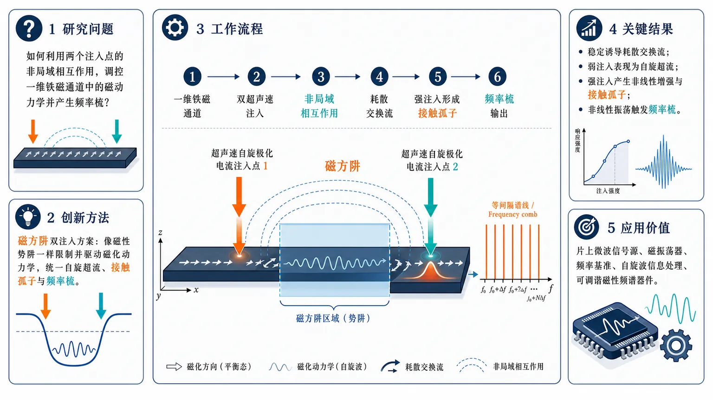
研究问题如何在一维铁磁通道中利用两个超声速自旋极化电流注入点的非局域相互作用，调控磁动力学并产生可表现为多条等间隔谱线的频率梳。创新方法提出“磁方阱”双注入方案：在一维铁磁通道中设置两个自旋极化电流注入点，像构造磁性势阱一样限制和驱动磁化动力学；该框架把弱注入下的自旋超流、强注入下的接触孤子以及由非线性动力学诱发的频率梳统一起来。工作流程输入为一维铁磁通道和两个超声速自旋极化电流注入点；通过磁方阱几何产生非局域相互作用；体系形成耗散交换流；随着注入强度从弱到强变化，动力学由类自旋超流转向注入点附近的非线性增强；强注入时形成接触孤子；接触孤子及相关非线性振荡进一步生成频率梳输出。关键结果磁方阱方案能够在一维铁磁通道中稳定诱导耗散交换流；弱注入极限下该流表现为自旋超流；强注入极限下，注入点附近出现显著非线性增强并形成接触孤子；这些非线性结构可触发频率梳现象，为磁体系中的梳状频谱提供理论机制。应用价值该研究为在铁磁材料和自旋输运器件中生成频率梳提供新的非线性磁动力学路径，有望用于片上微波信号源、磁振荡器、频率基准、自旋波信息处理和可调谐磁性频谱器件。核心概览
该论文研究一维铁磁通道中双点超声速自旋极化电流注入的非局域相互作用，提出“磁方阱”方案，属于自旋输运/磁动力学与频率梳产生方向。
方法要点
- 在一维铁磁通道中考虑两个注入点的超声速自旋极化电流及其非局域相互作用。
- 提出“磁方阱”注入方案，用于调控铁磁体系中的磁动力学响应。
- 通过该方案产生耗散交换流，并分析其在不同注入强度下的行为。
- 在弱注入极限下，将体系行为与自旋超流联系起来。
- 在强注入极限下，关注注入点附近的非线性增强及接触孤子形成。
- 研究由接触孤子等非线性动力学过程诱发的频率梳现象。
关键结果
- “磁方阱”注入方案能够在一维铁磁通道中产生耗散交换流。
- 弱注入极限下，该耗散交换流退化为自旋超流。
- 强注入极限下，注入点附近出现非线性增强。
- 强注入情形会形成接触孤子。
- 接触孤子或相关非线性动力学过程可诱发频率梳。
- 具体频率梳谱线结构、阈值条件、数值参数或实验可观测指标，摘要未详述。
创新性判断
- 可能的新颖点在于提出了“磁方阱”双注入方案，用于在一维铁磁通道中构造和调控耗散交换流；但该方案与已有注入几何或磁势阱设计的具体差异，摘要未详述。
- 将弱注入下的自旋超流、强注入下的接触孤子与频率梳产生统一在同一注入框架中，可能是其理论上的主要创新；但是否已有类似机制对比，摘要未详述。
- 通过两个超声速自旋极化电流注入点的非局域相互作用诱发频率梳，可能区别于常见单点驱动或局域振荡器机制；这一判断基于摘要，仍存在不确定性。
- 该工作可能为磁性材料中频率梳的产生提供一种非线性自旋动力学路径，但是否包含实验实现方案或定量性能优势，摘要未详述。
-
16
📊 含图深析
📄 摘要：针对电力与通信互依网络中的级联失效，作者以 Modified Implicative Interdependency Model（MIIM）作为真值模拟器，构建机器学习替代模型来预测 N-k 组合的失效严重度。模型利用无泄漏结构特征，从而用于元件关键性排序并降低大规模级联分析成本。
💡 亮点：MIIM 级联模拟被机器学习替代，用来给电力-通信网络做关键元件排序。核心价值是把大规模 N-k 失效分析从高成本仿真转为快速预测。
📖 展开分析 + 配图
研究问题电力—通信互依网络中，大规模 N-k 故障组合会引发跨层级联失效；若逐一使用高保真 MIIM 仿真评估严重度和组件关键性，计算成本过高，难以支持韧性规划中“哪些组件应优先加固”的快速决策。创新方法用机器学习代理模型替代全量 MIIM 级联仿真：以无标签泄漏的网络结构特征为输入，特别突出电力层—通信层之间的跨层依赖信息；使用 Gradient Boosting 预测每个 contingency 的严重度，再汇总形成组件关键性排序。Aha 点在于：不追求完全复刻所有仿真，而是学习足够准确的风险排序，把 MIIM 留给少量高风险候选验证。工作流程输入 IEEE 118-bus 电力—通信互依网络与大量 N-k contingency 故障组合；提取无泄漏结构特征，包括拓扑关系、组件连接和跨层依赖；用 MIIM 生成级联失效严重度标签；训练 Gradient Boosting 代理模型；快速预测新故障组合严重度；将多个 contingency 结果聚合为组件关键性排名；最后对排名靠前的关键组件调用 MIIM 做选择性高保真验证。关键结果在 IEEE 118-bus 系统上，Gradient Boosting 代理模型达到 contingency 严重度预测 Spearman ρ = 0.849，组件关键性排序 Spearman ρ = 0.853；三组独立采样数据集表现稳定。MIIM 派生关键性自身在当前采样流程下可复现上限约为 Spearman ≈ 0.85，因此代理模型几乎达到经验上限。简单拓扑中心性基线仅为 0.60–0.69，特征消融显示性能提升主要来自跨层依赖信息。应用价值该研究支持“快速代理筛选 + MIIM 精细验证”的两阶段韧性规划流程，可在巨大故障组合空间中迅速识别高风险组件，减少高保真仿真调用次数，帮助电力—通信基础设施进行优先加固、冗余部署、风险筛查和有限预算下的防护资源分配。第一部分：核心概览
该研究面向电力—通信互依网络中的级联故障评估瓶颈，提出以机器学习代理模型替代高保真 MIIM 仿真进行快速严重度预测与组件关键性排序。在 IEEE 118-bus 系统上，Gradient Boosting 达到 contingency 严重度预测 Spearman 0.849、组件关键性排序 Spearman 0.853，接近 MIIM 采样流程自身约 0.85 的可复现上限。贡献集中在：用无泄漏结构特征实现快速筛选，将 MIIM 保留给重点验证。
---
第二部分：结构化快速回顾
《A Machine Learning Surrogate for Component Criticality Ranking in Interdependent Power-Communication Networks》（None，）
背景
网络化电力系统与通信基础设施之间存在紧密互依，导致单点或多点故障可能触发级联失效。大规模 N-k contingency sets 若全部交由高保真仿真器评估，计算成本过高，限制了韧性规划中的组件加固优先级分析。
方法
以既有 Modified Implicative Interdependency Model, MIIM 作为级联仿真“真值”来源，构建机器学习代理模型。输入采用leakage-free structural features，避免将目标信息泄漏进特征；输出为 contingency 严重度预测，并进一步汇总为组件关键性 ranking。
结果
在 IEEE 118-bus system 上，Gradient Boosting 代理模型达到 contingency 级严重度预测 Spearman ρ = 0.849，组件级关键性排序 Spearman ρ = 0.853。三组独立采样数据集上结果稳定。MIIM 派生的组件关键性在当前采样流程下自身可复现性约为 Spearman ≈ 0.85，代理模型基本达到该经验上限。
讨论
全互依网络上的拓扑中心性指标提供了有意义但较弱的基线，Spearman 约 0.60–0.69。特征消融显示，代理模型优势主要来自跨层依赖信息，而非单纯电力层或通信层拓扑结构。
局限
可见证据仅覆盖 IEEE 118-bus 场景与 MIIM 仿真标签；泛化到更大系统、真实运行数据、不同通信拓扑、不同故障动态模型仍未由所给材料证明。MIIM 标签自身存在采样不确定性，组件关键性排序上限约为 0.85。
结论
适合采用“两阶段工作流”：先用机器学习代理模型快速排序候选关键组件，再对高风险组件调用 MIIM 做选择性验证，从而降低韧性规划中的计算负担。
---
第三部分：逐章节冷凝解析
可用材料仅包含题名、作者、arXiv 元数据与摘要；未提供 PDF 正文中的 Introduction、Methods、Experiments、Results、Discussion、Conclusion 等完整章节内容。因此，以下严格依据可见的原始标题与摘要内容展开，不补造未给出的章节、实验细节或引文。
---
Title
Machine-learning surrogate for criticality ranking
题名直接界定核心任务：构建机器学习代理模型，用于组件关键性排序，对象是互依电力—通信网络。研究问题不是单纯的电网潮流计算，也不是一般节点中心性排序，而是面向跨基础设施互依条件下的组件失效影响评估。题名原文为 *"A Machine Learning Surrogate for Component Criticality Ranking in Interdependent Power-Communication Networks"*，其中 surrogate 表示用低成本预测器近似高成本仿真器的输出。
Interdependent power-communication networks as the system scope
系统范围明确限定为电力—通信互依网络。这一范围比单层电网更复杂，因为通信节点、通信链路或控制依赖可能影响电力元件状态，电力故障也可能反向影响通信基础设施。题名中的 *"Interdependent Power-Communication Networks"* 强调研究对象是跨层耦合系统，而不是孤立电力网络或孤立通信网络。
---
Abstract
Cascading failures arise from tight cyber-physical interdependencies
研究动机来自网络物理电力系统的级联故障脆弱性。摘要开篇指出，*“Cyber-physical power systems are vulnerable to cascading failures caused by tight interdependencies between power and communication infrastructures.”* 关键含义是：风险源不只来自电力元件本身，还来自电力基础设施与通信基础设施之间的紧密耦合。任一层的局部故障都可能通过依赖关系传导到另一层，再反馈回来形成级联。
High-fidelity simulation over large N-k contingency sets is computationally prohibitive
计算瓶颈来自大规模 N-k contingency sets。摘要明确说明，*“Evaluating these failures over large N-k contingency sets with a high-fidelity simulator is computationally prohibitive for resilience planning.”* 这里的 N-k 指从系统总组件集合中移除或扰动 k 个组件的 contingency 组合；当 N 较大、k 增大时，组合数量迅速爆炸。高保真仿真器虽然准确，但难以支持大规模枚举式韧性规划。
MIIM serves as the ground-truth cascade simulator
研究使用既有 Modified Implicative Interdependency Model, MIIM 生成监督学习标签。摘要表述为 *“Using the previously published Modified Implicative Interdependency Model (MIIM) as the ground-truth cascade simulator”*。这意味着机器学习模型并非直接学习真实事故数据，而是学习 MIIM 对 contingency 的级联失效评估结果。ground-truth 在此语境中是“仿真真值”而非物理世界绝对真值。
The surrogate predicts contingency severity from leakage-free structural features
代理模型输入为无泄漏结构特征，输出为 contingency 严重度。摘要给出的核心方法为 *“develops a machine-learning surrogate that predicts contingency severity from leakage-free structural features”*。leakage-free 表明特征设计避免把与标签直接等价或由标签后验推导的信息放入模型，降低虚假高性能风险。structural features 则表明特征主要来自网络拓扑、跨层依赖、组件连接关系等结构信息。
Component-criticality ranking is derived for prioritized hardening
模型预测结果进一步服务于组件关键性排序与优先加固分析。摘要写道，代理模型 *“derives a component-criticality ranking for prioritized hardening analysis.”* 这说明最终工程目标不是仅仅预测某个 contingency 的损失，而是识别哪些组件最值得优先保护、冗余设计或加固。prioritized hardening 对应资源有限条件下的防护投资排序。
Gradient Boosting achieves strong contingency-level severity prediction
在 IEEE 118-bus system 上，Gradient Boosting 的 contingency 严重度预测性能达到 Spearman 相关 0.849。摘要给出具体结果：*“On the IEEE 118-bus system, the Gradient Boosting surrogate achieves Spearman correlations of 0.849 for per-contingency severity prediction”*。Spearman correlation 衡量排序相关性，因此这里强调模型是否能把高严重度与低严重度 contingency 正确排序，而非仅优化均方误差。
Gradient Boosting achieves strong component-level criticality ranking
同一模型在组件关键性排序上达到 Spearman 相关 0.853。摘要完整表述为 *“and 0.853 for per-component criticality ranking”*。这一结果直接对应论文题名中的 component criticality ranking。数值上，0.853 代表较强排序一致性，尤其适合“先筛选、后精算”的决策流程。
Performance remains stable across three independently sampled datasets
模型性能并非只在单一随机划分上成立，而是在三组独立采样数据集上保持稳定。摘要指出，结果 *“remaining stable across three independently sampled datasets.”* 这项设计可降低偶然采样、特定 contingency 组合或随机种子导致的性能虚高。可见材料未给出三组数据集的样本量、方差、置信区间或逐组指标。
MIIM-derived criticality has an empirical reproducibility ceiling near 0.85
一个关键细节是：即使使用 MIIM 派生的组件关键性，在当前采样流程下自身也只能复现到约 Spearman ≈ 0.85。摘要写道，*“MIIM-derived component criticality itself reproduces only to a Spearman of approximately 0.85 under the present sampling pipeline”*。这意味着标签或排序目标本身存在采样噪声；当代理模型达到 0.853 时，不能简单视为“还差 0.147 才完美”，因为可观测目标的稳定上限约在 0.85 附近。
The surrogate reaches the empirical ceiling within sampling variation
代理模型性能接近上述经验上限。摘要表述为 *“and the surrogate operates at this empirical ceiling to within sampling variation.”* 这句话具有重要解释力：模型没有明显低于 MIIM 标签在采样流程下的可复现水平，说明进一步提高代理模型指标可能受限于采样噪声、标签稳定性或 contingency 抽样设计，而不仅是模型容量不足。
Topological centrality provides meaningful but weaker baselines
全互依网络上的拓扑中心性指标是有意义的基线，但性能低于机器学习代理。摘要给出数值范围：*“Topological centrality measures on the full interdependent network provide meaningful baselines (Spearman 0.60-0.69)”*。这说明简单中心性确实捕捉到部分关键组件信息，但不足以完全表示级联动力学与跨层依赖影响。
Feature ablation identifies inter-layer dependency information as the main performance driver
特征消融揭示模型优势主要来自跨层依赖信息。摘要明确指出，*“feature ablation shows that the surrogate's advantage is driven primarily by inter-layer dependency information.”* 这表明单层拓扑特征可能不足，电力层—通信层之间的依赖边、依赖模式或互依结构才是提高关键性排序准确度的主要信号来源。
A two-stage workflow is proposed for resilience planning
结论性工作流为：先用代理模型快速排序，再用 MIIM 选择性验证。摘要最后写道，*“These results support a two-stage workflow in which the surrogate rapidly ranks candidate components and MIIM is reserved for selective verification.”* 这种设计兼顾效率与可信度：代理模型负责大规模筛查，MIIM 负责高价值候选项的精细确认。
---
第四部分：深度理解与语言支持
1. 术语解析
Surrogate
Surrogate 在计算科学中指“代理模型”或“替代模型”，通常用于近似昂贵仿真器、实验系统或优化目标。这里的 *“machine-learning surrogate”* 不是替代物理系统，而是替代 MIIM 高保真级联仿真流程的快速预测器。微妙之处在于：surrogate 的价值不必等同于完美预测每个故障结果，只要能可靠排序高风险组件，就能服务韧性规划。
Component criticality ranking
Component criticality ranking 指对组件的重要性或脆弱性影响进行排序。这里的 criticality 不只是拓扑中心性，也不只是单点失效损失，而是通过 contingency 严重度与级联后果派生出的组件级风险排序。关键区别：criticality 是任务相关的功能性影响，centrality 是结构图上的位置属性。
Leakage-free structural features
Leakage-free structural features 指不含标签泄漏的结构特征。若某些特征直接编码了 MIIM 输出、后验故障规模或由目标变量计算得到的信息，模型性能会虚高。这里强调 leakage-free，说明特征仅应来自预测前可获得的网络结构，例如节点度、层间依赖关系、局部邻域属性等。
N-k contingency sets
N-k contingency sets 是电力系统可靠性分析中的故障组合集合。N 表示系统组件总数，k 表示同时失效或被移除的组件数。N-1 是单组件故障，N-2 是双组件故障，k 增大时组合数量按组合数快速增长。因此摘要中的 *“computationally prohibitive”* 主要来自组合爆炸，而不是单次仿真一定不可运行。
Empirical ceiling
Empirical ceiling 指在当前数据生成、采样与评估流程下可达到的经验性能上限。这里 MIIM 派生关键性自身跨采样复现只有 Spearman 约 0.85，因此代理模型达到 0.853 就已经接近可观测目标的稳定边界。微妙点在于：这不是理论极限，而是由当前采样管线测得的实践上限。
---
2. 疑难查证
为什么代理模型 0.853 可以被视为接近上限，而不是中等偏上？
若目标标签本身高度稳定，Spearman 0.853 可能意味着仍有明显误差。但摘要指出 MIIM 派生的组件关键性在当前采样流程下自身只能复现到约 0.85。换言之，用不同独立采样 contingency 集合重复计算“真值排序”，两个 MIIM 排序之间也只能达到约 0.85 的一致性。此时机器学习模型与 MIIM 排序达到 0.853，已经与标签生成过程的稳定性相当。
直观类比：如果两次高保真实验之间的一致性只有 85%，一个低成本模型对其中一次实验结果的拟合达到 85%，则主要瓶颈可能已不是模型，而是实验抽样噪声、样本覆盖范围或目标定义波动。
为什么拓扑中心性能达到 0.60–0.69，却仍不够？
拓扑中心性可以识别连接多、位置桥接、路径中介性强的组件，因此对关键性有一定解释力。Spearman 0.60–0.69 说明结构位置确实相关。但是电力—通信级联并不只由“谁连接多”决定，还取决于跨层依赖规则、功能逻辑、故障传播方向、冗余路径和互依触发条件。摘要中的特征消融结果显示，真正拉开差距的是 inter-layer dependency information，即跨层依赖信息。
为什么用 MIIM 作为 ground-truth 仍需谨慎？
ground-truth cascade simulator 在这里表示监督学习标签来自 MIIM，而不是现实事故观测。MIIM 是已发表的级联模型，适合作为可重复的仿真基准，但它仍然包含模型假设。若 MIIM 的依赖逻辑、故障传播规则或组件状态抽象与真实系统不同，代理模型会学习 MIIM 的行为，而不一定自动泛化到真实电网事故。
“两阶段工作流”的实际含义是什么？
第一阶段：用机器学习代理模型对大量候选组件或 contingency 快速排序，得到高风险短名单。
第二阶段：仅对短名单调用 MIIM 做高保真验证。
这种流程不是取消 MIIM，而是改变 MIIM 的使用位置：从“全量穷举评估”变成“重点候选验证”。收益在于降低计算成本，同时保留高保真模型对最终决策的校验作用。
---
第五部分：创新评估与关联
1. 创新性判断
From exhaustive cascade simulation to learned ranking surrogate
近几年互依基础设施韧性研究通常依赖高保真仿真、复杂级联模型或图指标评估关键组件。该研究的新颖性在于将 MIIM 级联仿真转化为可学习的监督任务，用 Gradient Boosting 直接预测 contingency 严重度并派生组件排序，从而面向大规模 N-k contingency 组合降低计算负担。
Criticality ranking rather than only failure prediction
创新点不只在预测单个 contingency 的严重度，还在将预测结果转化为组件关键性排序。韧性规划的核心问题通常是“先加固谁”，而不是“某一组故障会造成多少损失”。因此，组件级 ranking 与工程决策之间的距离更短。
Leakage-free structural features improve methodological credibility
强调 leakage-free structural features 具有方法学价值。许多机器学习级联预测任务容易因特征泄漏而获得虚高性能，例如把故障后状态、仿真中间输出或标签派生量纳入输入。这里将输入限定为无泄漏结构特征，使性能更接近真实部署条件。
Empirical ceiling analysis reframes model evaluation
通过指出 MIIM 派生组件关键性自身复现上限约为 Spearman ≈ 0.85，性能解释更加严谨。代理模型达到 0.853 后，评价重点从“为什么没到 1.0”转向“是否已达到标签稳定性允许的上限”。这类 ceiling-aware evaluation 在韧性仿真代理模型中尤其重要，因为仿真标签常受采样策略影响。
Inter-layer dependency information is identified as the key source of predictive gain
相对于仅使用图中心性或单层网络特征的工作，特征消融显示优势主要来自跨层依赖信息。这为互依网络建模提供了明确证据：高质量关键性排序必须显式表示电力层与通信层之间的依赖结构，而不是只计算全图中心性。
Practical novelty: selective verification workflow
工程流程上的创新是提出代理排序 + MIIM 验证的两阶段方案。该方案承认高保真仿真的必要性，同时避免在巨大 contingency 空间中全量调用仿真器。对于预算有限的韧性规划、组件加固、冗余部署和风险筛查，这种工作流具有直接应用意义。
-
17
📊 含图深析
📄 摘要：针对宁静太阳三维辐射流体模拟中的网格分辨率限制，作者用深度学习近似亚网格湍流输运过程。核心方法是构建 3D 卷积神经网络代理模型，学习小尺度湍流对动量输运和能量耗散的空间模式，用于缓解分辨率不足带来的误差。
💡 亮点：3D CNN 被用来代理太阳表面模拟中的亚网格湍流输运。它瞄准小尺度动量与能量耗散，为天体流体中的降阶建模提供模板。
📖 展开分析 + 配图
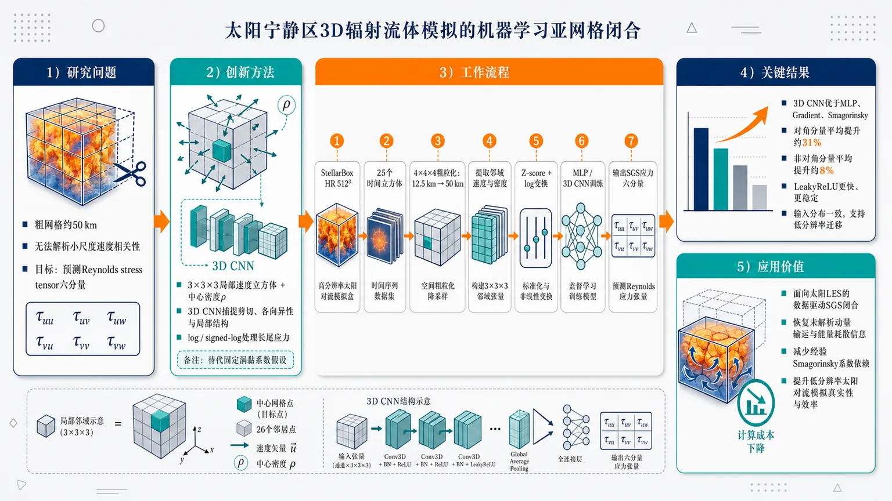
研究问题太阳宁静区3D辐射流体动力学模拟受网格分辨率限制，50 km左右粗网格无法解析厘米到数千公里跨尺度湍流中的小尺度速度相关性，导致亚网格动量输运与能量耗散难以闭合；核心问题是如何仅利用粗网格可见的局部速度场和密度，准确预测未解析的Reynolds stress tensor六个分量。创新方法提出面向太阳辐射流体模拟的3D CNN亚网格湍流代理模型：把中心网格及26个邻居组成3×3×3三维速度立方体，叠加中心密度信息，直接回归τuu、τvv、τww、τuv、τvw、τuw六个应力分量；Aha点是用卷积捕捉局部三维速度结构、剪切和各向异性，而不是像Smagorinsky那样依赖固定涡黏系数或各向同性假设，并用log与signed-log专门处理长尾、正负混合的应力分布。工作流程从StellarBox高分辨率512×512×512宁静太阳模拟出发，每隔10个时间立方体取样得到25个数据立方体；将12.5 km网格按4×4×4粗粒化为约50 km子立方体；计算每个中心子立方体的Reynolds stress作为标签，同时提取其3×3×3邻域平均速度和中心密度作为输入；对速度与密度做Z-score标准化，对目标做log或signed-log变换；训练MLP和多种3DCNN；最后输出中心单元六分量亚网格应力预测，并与Gradient、Smagorinsky和MLP基线比较。关键结果3DCNN整体优于MLP、Gradient model和Smagorinsky model；最佳模型在Reynolds应力张量对角分量上平均性能提升约31%，在非对角分量上平均提升约8%；LeakyReLU卷积模型收敛更快、更稳定；对角项log变换和非对角项signed-log变换显著缓解长尾偏斜目标带来的回归困难；高低分辨率速度和密度输入分布形状基本一致，支持该代理模型向低分辨率模拟迁移的可行性。应用价值该研究为太阳上对流层和低层大气LES提供数据驱动SGS闭合方案，有望在不显著增加计算网格成本的情况下恢复未解析湍流动量输运信息，减少对经验Smagorinsky系数的依赖，并为StellarBox等太阳辐射流体代码构建更真实、更高效的低分辨率太阳对流模拟奠定基础。第一部分：核心概览 (Overview)
该研究将3D 卷积神经网络用于太阳宁静区 3D 辐射流体动力学模拟中的亚网格湍流输运建模，核心目标是预测 Reynolds stress tensor 六个分量，以替代或补充传统 Gradient 与 Smagorinsky SGS 模型。模型利用 3×3×3 邻域速度场与中心密度标量，在约 1.8M 样本上训练；最终 3DCNN 相对基线在应力张量对角分量平均提升约 31%、非对角分量提升约 8%。其领域地位在于把数据驱动 SGS 建模从超新星等流体问题迁移到太阳上对流层与低层大气的真实辐射流体模拟。
---
第二部分：结构化快速回顾
《Developing Machine Learning Models of Subgrid Turbulent Transport for Quiet Sun 3D Radiative Hydrodynamic Simulations》（None，）
背景
太阳等离子体湍流跨越从厘米到数千公里的尺度，观测与数值模拟均无法完全解析最小尺度。LES 需要 SGS turbulence model 处理未解析尺度上的动量输运与能量耗散。
方法
使用 StellarBox 高分辨率 512×512×512、空间分辨率约 12.5 km、时间间隔 30 s 的宁静太阳辐射流体模拟；每隔 10 个数据立方体取样，共 25 个 cubes。将每个 cube 切成 4×4×4 sub-cubes，构造约 1.8M 数据点。输入为 27 个邻域 sub-cubes 的三维平均速度与中心密度，目标为六个 Reynolds stress tensor 分量。
结果
最终 3DCNN 优于 MLP、Gradient model 与 Smagorinsky model。摘要给出的量化结果为：对角应力分量平均提升约 31%，非对角分量约 8%。对目标变量进行 log / signed-log transformation 后性能提升。
讨论
CNN 的优势来自对 3D velocity fields 空间依赖的捕捉；密度信息通过两种方式注入：作为全连接层前的标量拼接，或扩展为第四通道与速度场共同卷积。
局限
当前工作未将训练好的 surrogate model 直接嵌入 StellarBox 动力学积分；低分辨率推广主要通过输入分布与预测分布比较评估。Smagorinsky 只测试了两个固定系数组合，未使用动态系数闭环耦合。
结论
深度学习，尤其是 3DCNN，可作为太阳宁静区上对流层与低层大气中 Reynolds stress tensor 的可行近似器，为传统物理 SGS 模型提供数据驱动替代方案。
---
第三部分：逐章节冷凝解析 (Section-by-Section Condensing)
Abstract
- Core problem: grid resolution controls solar plasma modeling fidelity
太阳等离子体数值模拟受计算网格分辨率强烈影响，未解析小尺度湍流需要通过 subgrid processes 估计，因为这些过程直接参与动量输运与能量耗散。证据为：*"Numerical modeling of solar plasma dynamics is affected by the resolution of the computational grid"*，以及 *"small-scale flow turbulence... play a critical role in momentum transport and energy dissipation"*。
- Main modeling target: Reynolds stress tensor components
研究目标不是直接预测速度场或温度场，而是预测 Reynolds stress tensor components，即 SGS 建模中的关键闭合量。摘要明确指出：*"We specifically focus on the prediction of Reynolds stress tensor components"*。
- Main architecture: 3D CNN with velocity and density inputs
模型以 3D velocity fields 作为主要输入，并加入 plasma density 等标量特征，以改善预测精度。关键表述为：*"The resultant model integrates velocity vector components and scalar features, such as plasma density, to enhance prediction accuracy"*。
- Benchmarking against ML and physics-based models
性能比较对象包括 MLP、Gradient model、Smagorinsky model。摘要写明：*"We compare the 3DCNN model to other types of models, such as a Multilayer Perceptron (MLP) and physics-based Gradient and Smagorinsky models"*。
- Quantified improvement: diagonal and off-diagonal stress components
最终 3DCNN 在应力张量对角分量上平均提升约 31%，在非对角分量上平均提升约 8%。原始证据为：*"a 3DCNN model achieves an average improvement of ∼31% on diagonal components and ∼8% on the off-diagonal components of the stress tensor"*。
- Target transformation improves skewed-data regression
目标应力分量高度偏斜，使用对数变换提升模型效果。证据为：*"applying a logarithmic data transformation of the target stress tensor components, to handle heavily skewed data, improves model performance"*。
---
I Introduction
- Solar turbulence is intrinsically multiscale
太阳观测揭示了带磁场辐射等离子体中的复杂多尺度湍流相互作用；能量输运尺度从厘米到数千公里。直接证据为：*"Observations of the Sun reveal a complex multiscale interaction of turbulent radiating plasma in the presence of magnetic fields"*，以及 *"from centimeters to thousands of kilometers"*。
- High-resolution telescopes still cannot resolve all relevant solar dynamics
DKIST 与 GST 可探测约 20–50 km 空间尺度，但仍无法提供太阳表面动力学充分细节，也无法直接揭示光球下区域等离子体行为。证据为：*"High-resolution observations... permit one to probe the solar surface at the spatial scales of ∼20−50 km"*，但 *"even these high-resolution observations can neither provide sufficient detail... nor can they directly reveal the complex behavior of plasma in the subphotospheric region"*。
- Ab initio 3D radiative MHD models bridge observational gaps
基于第一性原理的 3D radiative MHD models 可生成合成观测并研究不可直接观测的亚光球层。相关代码包括 StellarBox、Bifrost、MURAM、MANCHA3D。原文为：*"This ‘ab initio’ modeling approach is utilized in several codes, such as StellarBox... Bifrost... MURAM... MANCHA3D"*。
- LES requires SGS closure because smallest turbulent scales remain unresolved
即使先进模拟也不能解析太阳湍流从大尺度到最小尺度的完整范围；Large Eddy Simulations 显式解析主要尺度，并通过 SGS 模型处理未解析尺度上的能量与动量输运。证据为：*"no model captures the Sun’s turbulent dynamics all the way down to the smallest scales"*，以及 *"Large Eddy Simulations (LES) resolve all essential scales explicitly... and utilize a subgrid-scale (SGS) turbulence model"*。
- StellarBox baseline uses compressible Smagorinsky SGS treatment
StellarBox 使用 compressible version of the Smagorinsky SGS model 及其动态版本。证据为：*"in the StellarBox code... a compressible version of the Smagorinsky SGS model and its dynamic version are utilized"*。
- ML-driven SGS modeling addresses the accuracy–cost trade-off
太阳动力学模拟的核心矛盾是：准确捕捉辐射湍流等离子体物理需要高分辨率和高计算成本，而实际计算设置必须可行。深度学习 SGS 模型因此成为重要方向。证据为：*"balancing the need to accurately capture the physics... and the feasibility of a computational setup"*，以及 *"the development of deep learning-driven SGS models is an important direction to investigate"*。
- Methodological ancestry: Karpov et al. 2022 supernova SGS design
实验设计紧密沿用 Karpov et al. 2022 的数据驱动 SGS 框架；该工作用高分辨率超新星爆炸模拟训练低分辨率 SGS 估计，使低分辨率域表现接近高分辨率模拟。证据为：*"This work closely follows the experimental design for data-driven SGS models in (Karpov et al., 2022)"*，以及 *"lower-resolution simulation domain behaves similarly to high-resolution simulations"*。
- Primary scientific goal: data-driven alternatives to physics-motivated turbulence models
核心任务是测试多种 ML 设计，寻找适合建模 subgrid Reynolds stress tensor components 的模型。原文为：*"The primary goal of this work is to investigate data-driven alternatives to physics-motivated turbulence models using machine learning"*。
- Scope: solar upper convection zone and lower atmosphere
研究对象限定于太阳上对流层与低层大气的 3D 辐射流体动力学模拟。证据为：*"3D radiative hydrodynamic simulations of the solar upper convection zone and lower atmosphere"*。
- Smagorinsky benchmark includes two coefficient regimes
物理基线不仅使用一个参数，而是评估 CS=CC=0.1 与 CS=CC=0.001 两种 Smagorinsky 系数设置，以测试 surrogate 在不同耗散强度下的泛化。证据为：*"We also evaluate the Smagorinsky physics-based model under two coefficient settings (CS=CC=0.1 and CS=CC=0.001)"*。
---
II Background
- Background establishes simulation physics and SGS baselines
背景部分包含两类基础：一是 StellarBox radiative hydrodynamic simulations 的控制方程、网格尺度、模拟区域；二是 Reynolds stress tensor 与物理 SGS 模型。引导语为：*"we begin by providing some background information about the StellarBox simulation and the typical subgrid-scale turbulence models"*。
---
II.1 StellarBox Radiative Hydrodynamic Simulations
- StellarBox solves compressible MHD and radiative transfer
StellarBox 在三维笛卡尔网格上求解可压缩 MHD 方程，并在 LTE approximation 下耦合辐射转移。原文为：*"The StellarBox code solves the compressible MHD equations on a three-dimensional Cartesian grid, as well as a fully-coupled radiative transfer in the local thermodynamic equilibrium (LTE) approximation"*。
- Magnetic field omitted despite MHD nature of code
StellarBox 本质上是辐射 MHD 代码，但当前模拟运行中省略磁场，因此方程退化为无磁场流体动力学形式。证据为：*"while StellarBox is the radiative MHD code in nature, the magnetic field has been omitted in the simulation run considered in this work"*。
- Governing equations include mass, momentum, and energy conservation
控制方程包括连续性方程、动量方程和能量方程。变量定义包括 ρ 密度、ui 速度分量、p 压强、Π 黏性张量、Qrad 辐射热通量。原文解释为：*"Π is a viscous tensor, Q is the non-radiative heat flux... and Qradj is the radiative heat flux"*。
- Simulation grid and cadence are explicitly quantified
数据为 512×512×512 三维立方体，水平分辨率 12.5 km，垂直尺度相当且均匀，时间 cadence 为 30 s。证据为：*"512×512×512-size data cubes, with a spatial resolution of 12.5 km in the horizontal scale... and a cadence of 30 s"*。
- Simulation domain covers lower atmosphere and subphotospheric region
模拟覆盖几何高度 h=0 km 上方约 1 Mm 大气，以及约 5.4 Mm 光球下区域。证据为：*"cover about 1 Mm of the atmosphere above the geometrical h=0 km height, and ∼5.4 Mm of the subphotospheric region"*。
- Initial condition and relaxation procedure are physically specified
模拟从标准太阳模型初始化，并加入 ±1–2 cm/s 小随机速度扰动，运行至太阳对流达到统计稳态。原文为：*"initialized with the standard solar model with small random velocity perturbations added (±1–2 cm/s) and run until a relaxed statistically stationary state of solar convection is reached"*。
---
II.2 Physics-based Subgrid Scale Models
- Reynolds stress tensor represents unresolved velocity correlations
Reynolds stress tensor 表征小尺度速度场相关性，在流体/MHD 方程中产生附加项，并导致动能耗散与动量输运。证据为：*"representing the correlation of the small-scale velocity field that produces additional terms in the hydrodynamic / MHD equations and can lead to kinetic energy dissipation and momentum transport"*。
- Mathematical target is τij = average product minus product of averages
应力张量定义为
τij = ~(uiuj) − ũi ũj，即速度乘积的平均值减去平均速度乘积。原文公式后说明为：*"uᵢ uⱼ represents the average of the product of two components, and uᵢ indicates the averaged value of the variable"*。
- Velocity notation follows simulation convention u, v, w
三个速度分量记为 ux = u、uy = v、uz = w。证据为：*"the ux component of the velocity is noted... as u, uy component — as v, and uz component — as w"*。
- Solar convection turbulence is anisotropic and inhomogeneous
太阳对流区湍流不是均匀各向同性湍流，而是各向异性与非均匀的。原文为：*"Turbulence in the solar convection zone is anisotropic and inhomogeneous in nature"*。
- Gradient model uses resolved velocity derivatives
Gradient model 用已解析尺度速度的一阶空间导数乘积估计 SGS stress，本质上对应 Taylor 展开中的二次项。证据为：*"estimates subgrid stress based on the product of the first spatial derivatives of resolved scales"*，以及 *"represented by the quadratic term of the Taylor series expansion"*。
- Smagorinsky model assumes eddy viscosity proportional to strain rate
Smagorinsky model 假设涡黏性与局部应变率成比例，适用于均匀流和通道流，也被用于太阳对流 SGS 能量输运。证据为：*"assumes eddy viscosity proportional to the local strain rate"*，以及 *"utilization of the Smagorinsky model in simulations of the solar convection allows for capturing energy transport on subgrid scales"*。
- SGS coefficients are computational-setup dependent
精确建模亚网格能量输运需要确定 SGS 系数，这些系数随计算设置变化。原文为：*"accurate modeling of sub-grid energy transport requires the determination of SGS coefficients, which vary for different computational setups"*。
- Two Smagorinsky coefficient regimes define strong and weak dissipation
CS=CC=0.1 代表较强涡黏性，遵循 Germano et al. 1991 建议；CS=CC=0.001 代表显著降低的 SGS 耗散，并用于高分辨率 StellarBox 模拟；两种情形均设 CD=0。证据为：*"CS=CC=0.1 follows the suggestions in (Germano et al., 1991); in this regime, the model applies a relatively strong eddy viscosity"*，以及 *"At CS=CC=0.001, the SGS dissipation is substantially reduced"*。
---
III Methodology
- Methodology covers data extraction, preprocessing, and model design
方法部分围绕三项内容展开：从 StellarBox 输出构建带标签数据；比较高低分辨率输入分布；设计 MLP 与 3DCNN surrogate。原文对应结构为：*"preparation and preprocessing of the simulation data"* 与 *"deep learning model designs"*。
---
III.1 Data Preparation
- High-resolution simulations are treated as label source
由于高分辨率约 12.5 km，Reynolds stress tensors 可直接计算，且不再假设该高分辨率模型自身还有额外 SGS Reynolds stress 贡献。证据为：*"Because of the high resolution of ∼12.5 km, we can use these simulations to compute the Reynolds stress tensors directly"*。
- Temporal subsampling reduces dependence between data cubes
太阳光球特征时间尺度为 5–10 min；数据序列中每隔第 10 个 cube 取样，对应 5-minute cadence，总计 25 data cubes，使不同 cube 的相关性降低。证据为：*"The characteristic timescale at the solar photosphere is ∼5−10 minutes"*，以及 *"we used every 10th data cube... a total of 25 data cubes"*。
- Spatial coarse-graining emulates 50 km low-resolution cells
每个数据立方体被切分为 4×4×4 sub-cubes，相当于把分辨率降低 4 倍，从约 12.5 km 到约 50 km。证据为：*"slice each data cube into 4×4×4 sub-cubes, effectively decreasing the resolution 4 times... corresponding to ∼50 km"*。
- Input-output construction uses central stress and neighboring velocity fields
对每个方向上每第 3 个 sub-cube 计算 Reynolds stress tensor 分量；输入包括该中心 sub-cube 的平均密度，以及该 sub-cube 与其 26 个邻居的平均速度。任务为根据密度和周围速度场预测中心应力分量。证据为：*"average velocities in this and its 26 neighboring sub-cubes"*，以及 *"predict the τij components in the central sub-cube based on their density and surrounding velocity fields"*。
- Final dataset size is approximately 1.8 million samples
数据集包含约 1.8M 独立数据点，覆盖太阳上对流区与低层光球。证据为：*"The final dataset has ∼1.8 M individual data points sampling the upper solar convection zone and a lower photosphere"*。
- Random train-validation-test split is justified by sampling design
非重叠空间采样与较大时间采样间隔使数据点近似非相关，因此可随机划分训练、验证和测试集。证据为：*"Because of the non-overlapping spatial sampling and sufficiently large temporal sampling, we ensure that our dataset consists of non-correlated data points"*。
- Input normalization uses Z-score StandardScaler
所有速度输入 27 sub-cubes × 3 components 与一个密度标量均使用 StandardScaler 做 Z-score 标准化，使特征均值为 0、方差为 1。证据为：*"applying a Z-score normalization to all the velocity inputs (27 sub-cubes ×3 components) and density (one scalar) input using the ‘StandardScaler’"*。
- Targets are highly concentrated near zero with long tails
Reynolds stress tensor 目标分布高度集中在 0 附近，并具有长尾指数型分布；这造成直接回归困难。证据为：*"the population is highly concentrated around zero, following an exponential distribution with a long tail"*。
- Diagonal stress components use natural logarithmic transformation
对 τuu、τvv、τww 三个严格正的对角项使用自然对数变换，以缓解偏斜并提升分布均匀性。证据为：*"a natural logarithm is applied to diagonal terms τuu, τvv, and τww to address skewed distributions"*。
- Off-diagonal stress components use signed logarithmic transformation
对 τuv、τvw、τuw 使用 signed-log transformation：保留符号，先除以 10⁸ 缩放绝对值，再加 1 后取对数，最后恢复符号。证据为：*"Original values are scaled down by dividing them by a constant factor of 10⁸"*，以及 *"Finally, the original sign is applied to the transformed values"*。
- Target standardization follows log or signed-log transformation
目标变量经过 log / signed-log 后，再用 StandardScaler 独立标准化。所谓 normalized units 指已完成 log 或 signed-log 转换并标准化的 Reynolds stress 值。证据为：*"All preprocessed target variables are then standardized using ‘StandardScaler’"*，以及 *"normalized units... denote values that have been log or signed-log transformed and then standardized"*。
---
III.2 Input Field Distributions: High vs Low Resolution
- Low-resolution applicability requires input-domain consistency
由于 surrogate 用过滤后的高分辨率数据训练，真实低分辨率模拟中的输入分布必须位于训练域内，否则预测可能不可靠。证据为：*"If the low-resolution simulations produce input distributions substantially outside the training domain, the surrogate predictions may become unreliable"*。
- Two independent low-resolution StellarBox simulations are evaluated
低分辨率模拟约 50 km，对应两个 Smagorinsky 系数组合：CS=CC=0.1 与 CS=CC=0.001。证据为：*"Two independent low-resolution StellarBox simulations are considered... CS=CC=0.1 and CS=CC=0.001"*。
- Compared variables are averaged velocities and central density
比较对象包括平均速度分量 u、v、w 与中心单元密度 ρ。原文为：*"we examine the distributions of the averaged velocity components (u, v, w) and the central cell density ρ"*。
- High- and low-resolution distributions share similar shapes
两种低分辨率设置中，高低分辨率输入分布整体形状一致。证据为：*"In both cases, the high- and low-resolution distributions share the same general shape"*。
- Low-resolution velocity tails are narrower due to coarse averaging
低分辨率速度分布比高分辨率更窄，高幅值速度尾部出现频率降低，原因是粗网格平均平滑小尺度速度波动。证据为：*"The low-resolution velocity distributions are slightly narrower"*，以及 *"averaging over a coarser grid smooths out small-scale velocity fluctuations"*。
- Density distributions remain closely matched
密度分布在不同分辨率间保持接近，这表明密度输入的域偏移较小。证据为：*"The density distributions remain closely matched between resolutions"*。
- Lower Smagorinsky coefficients produce broader velocity distributions
CS=CC=0.001 低分辨率运行比 CS=CC=0.1 产生稍宽的速度分布，尤其在 u 与 w 尾部。证据为：*"The CS=CC=0.001 run produces slightly broader velocity distributions than the CS=CC=0.1 run"*。
---
III.3 Model Description
- Model family includes simple MLP and spatial 3DCNNs
模型设计从最简单的 MLPRegressor 到更适合空间相关输入的 3D CNN。章节安排体现为：*"The MLPRegressor model settings are listed in Table 1"*，以及 *"We designed our models utilizing the conventional 3D CNN in the PyTorch library"*。
---
III.3.1 Multilayer Perceptron
- MLP is used as the simplest ML baseline
MLPRegressor 是最简单的机器学习回归基线，由多层全连接神经元构成。证据为：*"As a simplest-case ML model, we utilize the MLPRegressor of scikit-learn"*，以及 *"consisting of multiple layers of fully connected neurons"*。
- MLP is suitable for nonlinear regression but limited in scalability
MLP 可拟合 Reynolds stress tensor 分量与输入之间的非线性关系，但 scikit-learn 实现可扩展性和自定义能力有限，因此进一步探索 CNN。证据为：*"MLPs are particularly well-suited for regression tasks with non-linear relationships"*，以及 *"limited in scalability and customization, leading us to explore Convolutional Neural Networks"*。
---
III.3.2 Convolutional Neural Networks
- CNNs are chosen for spatial hierarchy learning
CNN 通过卷积层捕捉数据中的空间层级结构，适合处理 3D velocity fields 等空间相关输入。证据为：*"CNNs have become a powerful tool to capture spatial hierarchies in data through convolutional layers"*。
- 3DCNN1 separates velocity convolution and density scalar fusion
3DCNN1 输入为 3×3×3 平均速度立方体，三个通道对应 u、v、w，另有中心 sub-cube 的密度标量 ρ。速度先经卷积层提取空间特征，flatten 后与密度拼接，再进入全连接回归层。证据为：*"processes the velocity components and a scalar density through separate pathways"*，以及 *"the scalar density feature is concatenated with the 1D feature vector before entering the fully connected regression layers"*。
- 3DCNN1 convolutional backbone uses two Conv3D layers
三个 3DCNN1 变体均先使用两个 3D 卷积层：第一层 32 filters，第二层 64 filters；kernel 均为 3×3×3，stride=1，padding=1，以保持空间分辨率。证据为：*"the first convolutional layer uses 32 filters equipped with a kernel 3×3×3, with padding and stride set to 1"*，以及 *"The second convolutional layer uses 64 filters with the same kernel size, stride, and padding"*。
- 3DCNN1.1 uses LeakyReLU to avoid dying neurons
3DCNN1.1 在卷积层后使用 LeakyReLU，负半轴斜率 α=0.01，用于避免 dying neurons。证据为：*"LeakyReLU maintains a small non-zero gradient for negative inputs (slope α=0.01), preventing the dying neurons problem"*。
- 3DCNN1.2 uses Tanh for bounded nonlinear representation
3DCNN1.2 使用 Tanh 激活，输出范围为 (-1, 1)，用于平滑有界非线性映射。证据为：*"uses hyperbolic tangent (Tanh) activations... outputs values in the range (-1, 1)"*。
- 3DCNN1.3 uses ReLU with BatchNorm3D
3DCNN1.3 使用 ReLU 与 Batch Normalization，目标是稳定学习并减少内部协变量偏移。证据为：*"incorporates ReLU activations with Batch Normalization to stabilize learning and reduce internal covariate shifts"*。
- Fully connected layers mostly use SoftSign
多数 3DCNN1 全连接层使用 SoftSign，其渐近性质有助于温和决策边界、处理极端值并缓解梯度消失。证据为：*"SoftSign provides a non-linear curve, but it converges asymptotically"*，以及 *"effective in preventing vanishing gradient... and dealing with outliers or extreme values"*。
- Output layer predicts six tensor components
所有 CNN 最终输出层为 six neurons，对应 Reynolds stress tensor 的六个独立分量。证据为：*"A final dense layer with six neurons corresponding to the six components of the Reynolds stress tensor represents the output for all models"*。
- 3DCNN2 treats density as a fourth convolutional channel
3DCNN2 将密度标量扩展到与速度输入相同空间尺寸，并作为第四通道与 u、v、w 一起卷积处理。证据为：*"the scalar density field is treated as an additional ‘channel’ of identical values within the input data cube, resulting in a 4-channel input"*。
- 3DCNN2.1 and 3DCNN2.2 differ mainly by activation function
3DCNN2.1 使用 LeakyReLU，3DCNN2.2 使用 Tanh；二者均以两层卷积后 flatten，并接 128-unit fully connected layer 与 SoftSign。证据为：*"3DCNN2.1 model uses two convolutional layers... followed by LeakyReLU"*，以及 *"3DCNN2.2 follows a similar structure but replaces LeakyReLU with Tanh activations"*。
- 3DCNN2 increases feature complexity at computational cost
3DCNN2 通过密度-速度联合卷积实现更复杂特征提取，但计算复杂度更高。证据为：*"This model setup aims at potentially more complex feature extraction, at the cost of increased computational complexity"*。
---
IV Experimental Settings
- Experimental settings define model tuning and evaluation metrics
实验设置聚焦 MLP 与 CNN 的超参数搜索，CNN 使用 MSE 作为主损失函数，R² 作为辅助性能指标。证据为：*"All the models were trained using the Mean Squared Error (MSE) as the primary loss function and R-squared (R2) score as a secondary performance metric"*。
---
IV.1 Parameter Tuning MLP
- MLP hyperparameters are tuned with GridSearchCV
MLP 使用 scikit-learn 内置 GridSearchCV 系统搜索超参数组合，以选择最佳性能配置。证据为：*"we performed hyperparameter tuning utilizing the built-in GridSearchCV method of scikit-learn"*。
- Searched hidden layer configurations cover shallow and deeper MLPs
隐层结构候选包括 (50,25)、(60,50)、(64,32,16)、(82,50,25,6)、(100,100)。证据为：*"we tested various smaller, intermediate, and larger layer configurations like (50, 25), (60,50), (64, 32, 16), (82, 50, 25, 6), (100, 100)"*。
- Activation, optimizer, regularization, and learning rate are searched
激活函数测试 ReLU 与 Tanh；优化器比较 SGD 与 Adam；正则化 alpha 为 0.0001、0.001、0.01；初始学习率为 0.001、0.01、0.1。证据为：*"We evaluated two activation functions, ReLU and Tanh"*，以及 *"Regularization was applied with alpha values of 0.0001, 0.001, and 0.01"*。
- Training uses 1000 maximum iterations and early stopping
MLP 最大迭代次数设为 1000，并采用 early stopping，在验证分数不再提升时停止。证据为：*"We set a maximum number of 1000 iterations for training and used early stopping"*。
- Best MLP configuration uses two 100-unit layers and Tanh
最优 MLP 配置为 hidden layers (100,100)、activation Tanh、solver Adam、alpha 0.01、adaptive learning rate、max iterations 1000。表格证据为：*"Layers (100, 100), Activation Tanh, Solver Adam, Alpha 0.01... Max Iterations 1,000"*。
---
IV.2 Parameter Tuning on CNN
- CNN tuning varies learning rate, batch size, epochs, activations, and optimizer
CNN 超参数系统调节包括学习率、batch size、epoch 数、激活函数与优化器。证据为：*"systematically varying key parameters like learning rate, batch size, number of epochs, activation functions, and optimizer types"*。
- Learning rate 0.001 is selected after testing 0.0001–0.01
学习率搜索范围为 0.0001 到 0.01；0.001 在收敛速度与稳定性之间表现最佳。证据为：*"We tested learning rates from 0.0001 to 0.01"*，以及 *"a learning rate of 0.001 consistently led to faster and more stable convergence"*。
- Adam outperforms SGD in convergence behavior
所有 CNN 最终选择 Adam，因为其自适应学习率带来优于 SGD 的收敛行为。证据为：*"selected Adam for all models due to its adaptive learning rate capabilities, which provided better convergence behavior compared to Stochastic Gradient Descent"*。
- Early stopping uses patience of 10 epochs
训练采用 early stopping，若验证损失连续 10 epochs 不改善则停止，以避免过拟合。证据为：*"early stopping with a patience of 10 epochs"*，以及 *"stop if the validation loss did not improve for 10 consecutive epochs"*。
- Training typically converges by 50 epochs
CNN 通常在 50 epochs 内收敛，之后验证准确度无显著提升。证据为：*"Training typically converged by 50 epochs, beyond which no significant improvement in validation accuracy was observed"*。
- Batch size 128 balances stability and speed
batch size 搜索范围为 32–256；最终选择 128，在梯度估计稳健性和训练时长之间折中。证据为：*"We tested various sizes ranging from 32 to 256"*，以及 *"A batch size of 128 offered a practical trade-off"*。
- LeakyReLU ultimately improves training over Tanh and ReLU variants
虽然 Tanh 因平滑梯度与输出归一性质最初有吸引力，但 LeakyReLU 在卷积层中提供更快训练与更好收敛；负斜率 α=0.01 有助于降低梯度消失。证据为：*"replacing the Tanh activation function with LeakyReLU... resulted in faster training and better convergence"*，以及 *"The slight negative slope (α=0.01) helped in reducing the vanishing gradients"*。
- 3DCNN1 architecture table fixes dimensional design
3DCNN1.1 的全连接层为 Linear(1728,256)、拼接密度后 Linear(257,64)、输出 Linear(64,6)；3DCNN1.2 使用 Linear(64,256) 与 Linear(257,128)；3DCNN1.3 使用 ReLU 与 BatchNorm。表中证据为：*"FC Layer 1 Linear(1728, 256), Softsign"*，*"FC Layer 2 Linear(257, 64), Softsign"*，以及 *"Output Layer Linear(64, 6)"*。
---
第四部分：深度理解与语言支持 (Understanding & Nuance)
1. 术语解析
- Subgrid turbulent transport
指网格尺度以下的湍流导致的能量、动量、涡量或标量输运。这里的 “transport” 不只是“移动”，而是湍流相关项在控制方程中形成有效通量或附加应力。语境证据：*"energy dissipation and momentum transport"*。
- Reynolds stress tensor
不是材料真实分子黏性应力，而是由速度涨落相关性产生的有效应力。数学形式 τij = ~(uiuj) − ũiũj 表示“平均乘积”与“乘积平均”的差异，反映未解析速度协方差。
- Surrogate model
学术含义是用成本更低的统计/机器学习模型近似复杂物理模型或闭合项，而不是替代完整物理定律。原文语境：*"a simpler model is trained to approximate the behavior of a more complex system"*。
- Resolved-scale input variables
指低分辨率 LES 中已经被网格显式表示的变量，如粗网格平均速度和密度。与 unresolved/subgrid 变量相对。关键点在于 surrogate 只能根据 resolved variables 推断 unresolved stress。
- Coefficient regime
“regime” 在这里不是普通“参数”，而是代表一类物理耗散状态。CS=CC=0.1 对应强涡黏耗散，0.001 对应弱 SGS 耗散；不同 regime 会改变低分辨率速度分布尾部。
2. 疑难查证
- 为什么高分辨率数据能提供 SGS 标签？
高分辨率 12.5 km 模拟可被视为“近似真值”。将其按 4×4×4 分块平均后，相当于构造一个 50 km 粗网格。粗网格中的每个 cell 只能看到平均速度，但高分辨率 cell 内部还保留细尺度速度差异。用公式
τij = ~(uiuj) − ũiũj
计算出的 τij 正是“如果只用粗网格表示速度，会丢失的速度相关项”。这就是训练标签。
- 为什么非对角项需要 signed-log transformation？
对角项如 τuu、τvv、τww 本质类似速度方差，通常非负，可直接取 log。非对角项如 τuv、τuw、τvw 是协方差，可正可负，普通 log 对负数无定义。signed-log 的逻辑是：单独保存符号，对绝对值取 log，再恢复符号，从而同时压缩极端值并保留正负方向。
- 为什么 CNN 比 MLP 更合理？
MLP 把输入视为一维特征列表，空间邻接关系需要靠全连接权重自行学习。3DCNN 直接在 3×3×3 邻域中卷积，天然表达“中心 sub-cube 与周围 26 个 sub-cubes 的局部空间结构”。湍流应力依赖局部速度梯度、剪切、压缩与旋转结构，因此卷积归纳偏置更接近物理问题。
- 为什么低分辨率输入分布检查很重要？
surrogate 在过滤高分辨率数据上训练；若真实低分辨率模拟的速度和密度分布超出训练范围，CNN 处于外推状态，预测可能失真。这里发现低分辨率分布整体形状一致、速度尾部稍窄、密度匹配较好，因此低分辨率应用至少在输入统计上具备合理性。
---
第五部分：创新评估与关联 (Synthesis & Novelty)
1. 创新性判断
- 太阳辐射流体 SGS 闭合的 3DCNN surrogate 化
过去 2–5 年的数据驱动 SGS 建模更多见于理想湍流、气候流体、工程 LES 或超新星爆炸模拟；该研究将类似 Karpov et al. 2022 的高低分辨率 SGS 学习框架迁移到宁静太阳 3D 辐射流体动力学，目标物理环境更复杂，包含强分层、可压缩性、辐射输运和太阳对流结构。
- 直接预测 Reynolds stress tensor 六分量而非单一涡黏系数
传统 Smagorinsky 模型通过局部应变率和经验系数构造应力，等价于假定一种简单函数形式。3DCNN 直接学习 τuu、τvv、τww、τuv、τvw、τuw，不强加各向同性涡黏近似，更适合太阳对流区的各向异性、非均匀湍流。
- 密度与三维邻域速度场联合建模
太阳等离子体是强分层可压缩流体，密度不是可忽略背景量。两种 CNN 设计分别测试“密度后期拼接”和“密度作为第四通道参与卷积”，使模型能够学习速度结构与密度层结之间的耦合关系。
- 目标分布处理具有任务针对性
Reynolds stress 分量高度零中心、长尾且非对角项正负混合。使用对角项 log 与非对角项 signed-log 的组合，解决了太阳湍流应力回归中的偏斜目标问题，而不是简单标准化所有目标。
- 物理基线覆盖两个 Smagorinsky 耗散 regime
与只比较单个传统模型不同，两个系数组合 0.1 与 0.001 分别代表强 SGS 耗散与弱 SGS 耗散，提供更宽的物理基准范围，也更接近真实代码调参问题。
- 仍未完全解决的关键问题
最大未完成环节是在线耦合验证：surrogate 尚未嵌入 StellarBox 进行长期低分辨率积分。离线预测误差较低并不必然保证在线模拟稳定，因为 SGS stress 会反过来改变速度场、密度场和未来输入分布。真正的闭环验证需要考察能谱、热通量、对流速度分布、光球颗粒结构、稳定性和长期统计平衡。
-
18
📄 摘要：Advanced Materials EarlyView 条目未给出摘要。题名显示，亚铁磁 skyrmion 的生成与运动可由电场驱动的氢迁移可逆控制，核心变量是氢在材料中的迁移状态，目标是电场调控拓扑自旋纹理的成核与输运。
💡 亮点：题名指向以氢迁移作为可逆电场旋钮来操控亚铁磁 skyrmion。若在实验中实现，将把离子迁移与拓扑自旋纹理动力学直接关联。
-
19
📄 摘要：研究二维 Dirac 电子在交流磁场驱动下的 Floquet 工程，不再以交流电场为主要控制量。当磁场方向随时间改变时，体系产生新的动力学态与输运现象，包括 π-Landau 能级以及由手征反常诱导的同频检波效应。
💡 亮点：交流磁场为 Dirac 电子提供不同于光电场驱动的 Floquet 控制。π-Landau 能级和手征反常同频检波效应给出磁驱动拓扑输运的新机制。
-
20
📄 摘要：在团簇平均场近似中研究二维和三维自旋纹理，包括 kπ-skyrmion 与 Hopfion 环。结合对称化步骤后，可计算大尺度自旋纹理中的量子涨落，并稳定访问亚稳态；这些问题通常受维数灾难限制，标准方法多局限于基态性质。
💡 亮点：团簇平均场加对称化可处理大尺寸 skyrmion 与 Hopfion 环的量子涨落。方法能够访问亚稳拓扑纹理，为量子磁性三维自旋结构计算提供可扩展近似。
-
21
📄 摘要：面向静电定义量子点阵列调谐，提出动作空间在线因子化的合作多智能体强化学习。强参数串扰会使单个智能体看到非平稳环境并破坏学习；该框架学习解耦动作表示，减少智能体间干扰，以适应大参数空间和局域结构。
💡 亮点：动作因子化多智能体强化学习用于量子点阵列自动调谐，直接针对强串扰导致的非平稳性。该方法有望提升大规模量子器件调参效率。
-
22
📄 摘要：引入面向量子核方法的数据生成工具，可构造半人工经典数据集以控制数据特征。测试显示，在完全经典数据集上，量子核方法在达到可比误差时可比经典核需要更少训练样本，用于评估量子机器学习的小样本优势边界。
💡 亮点：半人工数据生成框架用于系统检验量子核的小样本学习能力。量子核在部分经典数据上以更少样本达到相近误差，为量子机器学习基准设计给出可控平台。
-
23
📄 摘要：提出量子-经典混合合成数据生成框架，用量子线路 Born 机处理数据稀缺与类别不平衡。参数化变分量子线路利用叠加与纠缠来建模复杂概率分布，再生成少数类表格样本，以降低预测偏差并改善下游分类泛化。
💡 亮点：QCBM 被用于不平衡表格学习的少数类合成。该方案把量子生成模型嵌入经典机器学习流程，检验量子分布建模在数据稀缺场景中的实用性。
-
24
📄 摘要：题目所示工作聚焦氮还原反应中的仿生催化剂计算设计，并引入机器学习加速候选材料筛选与优化。核心目标是缩短从结构搜索到性能评估的周期，提升 NRR 催化剂发现效率。
💡 亮点：机器学习被直接用于 NRR 仿生催化剂的筛选与设计。亮点在于把高通量搜索和性能评估压缩到同一条加速流程里。
-
25
📄 摘要：发布 XRD-Rust：对 pymatgen 粉末 XRD 计算器进行 Rust 加速，同时保持 Python 工作流兼容。目标是为 XRD 材料分析机器学习生成大规模高通量模拟数据，缓解纯 Python 实现在大工作负载下的计算效率瓶颈，并保留原方法的计算行为。
💡 亮点：XRD-Rust 以 Rust 加速粉末衍射模拟并兼容 pymatgen。它直接服务于大规模 XRD 机器学习数据生成和高通量材料筛选。
-
26
📄 摘要：面向钢筋混凝土剪力墙塑性铰长度预测，构建两级堆叠集成框架：多个基学习器捕捉几何与材料参数的非线性关系，元学习器融合预测。方法引入因果推断与随机微分几何的理论表述，用于约束地震设计中的经验预测问题。
💡 亮点：堆叠集成模型用于剪力墙塑性铰长度预测。通过把物理与因果约束并入机器学习，结构材料性能评估从纯经验拟合转向可解释预测。
-
27
📄 摘要：局域非中心对称重费米子超导体 CeRh2As2 具有亚晶格自由度、反铁磁性以及随磁场方向变化的高临界场。其相图包含场诱导一阶超导-超导相变；理论分析聚焦复合超导序与磁性的耦合，以解释该材料异常的温度-磁场相图。
💡 亮点：CeRh2As2 的局域非中心对称性允许亚晶格相关的复合超导序。该理论框架把场诱导超导-超导跃迁、反铁磁性和高临界场纳入同一重费米子问题。
-
28
📄 摘要：PHINN-EEG 将滑动窗口 Takens 延迟嵌入、Vietoris-Rips 过滤与动态 Betti 曲线用于多通道 EEG 梦境意念分析。背景基准为 DREAM 数据库上基于功率谱密度和统计矩特征约 0.70 的 AUC；框架面向梦内容分类与拓扑条件神经信号合成。
💡 亮点：PHINN-EEG 用持久同调替代单纯谱特征刻画梦态脑电。动态 Betti 曲线把非线性时序拓扑引入脑电分类与生成模型，是拓扑数据分析在神经信号中的应用。
-
29
📄 摘要：层状 UAgBi2 中竞争相互作用导致多个近简并周期磁态。比热、热膨胀和中子衍射给出场-温相图，显示至少七个近简并磁相；多步磁化过程可由传播矢量 k=(0,0,k) 不同的方波磁结构解释。
💡 亮点：UAgBi2 展现至少七个场温诱导磁相，形成磁性魔鬼阶梯。中子衍射把多步磁化与不同 k=(0,0,k) 方波结构对应起来，揭示层状铀化合物中的近简并磁序竞争。
-
30
📄 摘要：对硼碳化物超导体 YNi2B2C 进行 de Haas-van Alphen 振荡测量和能带计算。改进能带解释了以往难以归属的大 dHvA 频率 β 与 ζ；通过实验有效质量和能带质量比较，逐轨道提取电声耦合，发现其对费米面片高度依赖，band-28 片耦合很弱。
💡 亮点：YNi2B2C 的 dHvA 与改进能带计算解析了 β、ζ 大频率来源。逐费米面片电声耦合显示强烈不均匀性，约束了该硼碳化物超导配对机理。
-
31
📄 摘要：研究由中子、质子和电子组成的中子星超导物质中质子涡旋受力，并计入中子-质子子系统的 Fermi 液体相互作用。除已知电子被涡旋磁场散射产生的力外，Landau Fermi 液体动理论显示，正常中子也可通过与超导质子的耦合对质子涡旋施力。
💡 亮点：正常中子通过 Fermi 液体耦合对中子星质子涡旋产生额外力。该结果修正了只考虑电子散射的涡旋动力学图像，影响超导星核中的磁通演化建模。
-
32
📄 摘要：提出用费米型亚稳态氦-3 光镊阵列开展中性原子量子科学的体系蓝图，面向站点间/站点内原子运动和光镊运输，以高效实现费米、玻色模式与任意线路编译。核心问题是原子惯性对运动协议的限制，方案围绕可编程运动架构展开。
💡 亮点：亚稳态氦-3 光镊阵列被设计为同时支持费米模式、玻色模式和线路运输的量子平台。该架构突出利用原子运动而非只依赖固定门操作。
-
33
📄 摘要：用大规模密度矩阵重整化研究弯曲之字形内嵌富勒烯链中偶极分子的量子相随链角 γ 的变化。LiF 在 60°<γ<180° 全范围保持铁电序，弯曲增强时平行排列不利，临界有效偶极矩升高；接近 γ=60° 时几何阻挫诱导反铁电 Néel 有序。
💡 亮点：DMRG 显示 LiF 内嵌富勒烯之字链可在大角度范围维持铁电序，并在等边极限转向反铁电 Néel 相。结果把分子偶极、链几何和阻挫相变直接关联起来。
-
34
📄 摘要：建立理论方法预测低浓度顺磁杂质及其与传导电子交换作用对常规自旋单重态超导体微波响应的影响。pair-breaking 产生的亚能隙准粒子谱被连接到微波频率下电导率的频率和温度依赖，用于超导器件与谐振器损耗分析。
💡 亮点：顺磁杂质诱导的亚能隙态被纳入超导微波电导计算。该理论把杂质交换作用与谐振器频率、温度响应相连，有助于识别超导量子器件损耗来源。
-
35
📄 摘要：针对栅定义 Si 自旋量子比特，提出器件级优化策略以获得 1–5 meV 谷劈裂，超过电子热能并抑制谷激发。模拟结合器件尺度电势与含原子级合金无序的一维紧束缚模型，评估 SiGe 异质结构中谷能级工程的可行性。
💡 亮点：SiGe 异质结构经器件级优化可把谷劈裂推至 1–5 meV。该结果直接面向 Si 自旋量子比特初始化、操控和读出的谷激发瓶颈。
-
36
📄 摘要：在 TiO2(100) 与 TiO2(110) 单晶衬底上生长外延 RuO2 薄膜，并沿不同晶向测量电子输运。RuO2 是交替磁体候选材料，超导性在应变下出现；实验显示超导转变强烈依赖生长取向和输运晶向，并伴随各向异性与增强临界场。
💡 亮点：应变外延 RuO2 显示与取向和晶向强相关的超导转变及增强临界场。该结果把交替磁体候选材料与应变诱导超导联系起来，成为研究磁性邻近序与非常规超导的关键体系。
-
37
📄 摘要：H-cloud 是面向应用超导体电磁建模的云端开源有限元框架。形式上采用 Nédélec 旋度协调单元，在变分层面显式写入切向外加场边界条件、非线性 E-J 幂律和全隐式时间离散残差，并以 Python 脚本化有限元工作流实现。
💡 亮点：H-cloud 将 II 型超导体非线性 E-J 响应写入可复现的开源有限元流程。云端 Python/Nédélec 实现降低了应用超导线圈与器件电磁仿真的进入门槛。
-
38
📄 摘要：用退火网络近似研究尺度自由网络上的自旋模型，指出度异质性可诱导类似超临界流体中液态/气态交叉的 Widom 线。Ashkin–Teller 与不可见 Potts 模型中，该线在有限度指数范围内存在，分隔分布式自旋对齐与枢纽主导有序两种有序区。
💡 亮点：尺度自由网络的度异质性可在自旋模型中产生 Widom 线。该发现把复杂网络拓扑与有序相内部的交叉现象定量联系起来。
-
39
📄 摘要：将持续同调形式推广到汉代 206 BCE–220 CE，检验罗马—拜占庭案例中的崩溃阈值 s*=0.5241 与三网络分解方法是否适用。构建行政网络、地理网络和历史数据网络，其中行政网络含 CHGIS v6 的 392 个郡县节点。
💡 亮点：持续同调用于汉代行政与地理网络，测试 s*=0.5241 崩溃阈值的跨体系泛化。该工作体现拓扑数据分析在复杂历史网络中的可迁移性。
-
40
📄 摘要：针对带外部非对称势的一维 Fermi-Hubbard 相互作用费米子，利用 Kolmogorov-Arnold 网络从势垒后粒子数预测两分纠缠熵。von Neumann 熵被分解为数目熵 Sn 与构型熵 Sc；在势垒主导隧穿区，两部分均与隧穿粒子数存在普适关系。
💡 亮点：KAN 将一维 Fermi-Hubbard 隧穿后的粒子数映射到纠缠熵分量。结果把可观测粒子输运与多体量子关联相连，利于冷原子和量子模拟中的纠缠诊断。
-
41
📄 摘要：在硅双量子点中完整表征谷内与谷间隧穿耦合，包括复数相位即谷相位。隧穿不仅连接量子比特态，也连接布里渊区相对两侧的导带谷；谷相位被证明控制可测参数，包括反交叉能隙比例等，直接影响初始化、读出和操控。
💡 亮点：硅双量子点中谷内、谷间隧穿幅度和谷相位得到完整测量。谷相位决定反交叉能隙比例，使硅自旋量子比特的多谷误差源变成可定量工程参数。
-
42
📄 摘要：研究三维节线半金属中同时携带 Berry 相 w1π 与 Z2 单极荷 w2 的节线环。磁量子振荡通常用于探测 w1；该工作表明量子振荡也能直接诊断 w2，从而把隐藏的二级拓扑荷转化为可观测输运特征。
💡 亮点：节线环的 Z2 单极荷可通过磁量子振荡识别，而不只依赖 Berry 相。该判据为寻找带二级拓扑荷的节线半金属提供了可实验检验的输运方案。
-
43
📄 摘要：构建纠缠型量子网络路由的对抗多臂赌博机问题：Alice 为 E91 协议选择端到端中继路径，Eve 选择边截获-重发或中继存储退化攻击。收益来自缓存的 SeQUeNCe 模拟 E91 记录，Alice 以有限样本 CHSH 违背作为接受准则，在 50 个结构化拓扑上共学习。
💡 亮点：量子中继路由被表述为 Alice–Eve 对抗共学习，并用 CHSH 违背定义可接受通信。该框架把量子网络安全、仿真和可解释鲁棒性连接起来。
-
44
📄 摘要：在量子霍尔连续电子相变中，结合温度标度与独立电流标度，分别提取动力学指数 z 和局域长度指数 γ，突破仅由有限温标度得到 κ=1/(zγ) 的限制。实验通过调控库仑筛选，区分相互作用对空间临界性和动力学临界性的影响。
💡 亮点：量子霍尔临界实验把 z 与 γ 从 κ 中解耦提取，并用筛选调控检验库仑相互作用。该方法为电子相变中动力学临界性的定量测量提供新路线。
-
45
📄 摘要：在为低无序和高谷劈裂共同设计的埋入硅量子阱中，测量单电子自旋量子比特能标。四量子点线性阵列的平均轨道能为 2.4(2) meV；强限域推动谷劈裂达到 4 K 以上相关尺度，减少硅自旋量子比特中的谷泄漏通道。
💡 亮点：埋入硅量子阱通过强限域提升谷劈裂，并在四量子点阵列中保持 2.4(2) meV 平均轨道能。该能标工程直接服务于可扩展硅自旋量子比特和穿梭架构。
-
46
📄 摘要：石墨烯双层莫尔网络中，堆垛对称破缺形成承载一维边界态的拓扑畴壁。原子级结构弛豫显示畴壁网络几何进一步自发破缺对称性，产生手性构型；建立应变-柔性相图，包含直线、单手性和双手性三类平衡形貌。
💡 亮点：石墨烯双层拓扑畴壁不仅由堆垛决定，还可经弛豫自发形成单手性或双手性网络。莫尔边界态的几何拓扑因此成为可调控自由度。
-
47
📄 摘要：在分离量子器件之间实现稳定远程纠缠。实验采用模拟压缩环境的自主稳定技术，使级联量子网络中的纠缠在实际非理想条件下维持，目标是减少远程量子连接对持续测量或精细反馈的依赖。
💡 亮点：级联量子网络通过压缩环境式耗散工程稳定远程纠缠。该方案把开放系统动力学转化为抗缺陷量子互连资源。
-
48
📄 摘要：用第一性原理系统研究面心立方 Fm-3m 二元化合物 MX（M=Sc、Y、La；X=Sb、Bi）的拓扑声子能带。高对称性保护声子节线网络及相应表面态，揭示该类稀土/锑铋化物中的无电子自旋轨道复杂性的拓扑振动态。
💡 亮点：Sc/Y/La–Sb/Bi 立方化合物被预测具有对称保护的声子节线网络和表面态。该类材料扩展了可实验寻找的拓扑声子平台。
-
49
📄 摘要：分析在张量网络态中使用 Clifford 线路进行解纠缠的能力边界。张量网络依赖低纠缠高效模拟，多 Clifford 稳定子态则虽高纠缠但低魔性且可经典处理；工作讨论 Clifford 张量网络结合时对多体态压缩和可模拟性的限制。
💡 亮点：Clifford 解纠缠并不能无条件提升张量网络对量子多体态的压缩能力。该结论厘清低纠缠与低魔性两类经典可模拟结构的边界。
-
50
📄 摘要：作者在二维拓扑绝缘体薄膜中引入层分辨的 d 波交替磁项，并保持体能隙不变，理论上实现了由补偿性交替磁性驱动的二阶拓扑绝缘相。该方案不依赖体内自旋分裂，却能把体系推入高阶拓扑状态。
💡 亮点：补偿性交替磁性能在不改体能隙的前提下驱动二阶拓扑相。关键点是：无需体自旋分裂，也能做出高阶拓扑绝缘体。
-
51
📄 摘要：提出把抽象图拓扑映射到物理平衡分子网络的生成框架，可在任意分辨率精确指定交联功能度分布 P(f)。在相同拓扑上构建 PDMS 与 PMTFPS 原子模型，克服传统动力学和反应-扩散算法难以精确控制 P(f) 的限制，用于比较固定交联密度下的弹性与断裂差异。
💡 亮点：该框架可精确指定聚合物交联功能度分布并生成平衡原子网络。它把网络拓扑从统计结果变成可设计输入，适合系统研究力学性能。
-
52
📄 摘要：研究具有超越最近邻连接的超导六量子比特网络中的相干误差。增强量子比特连通性有利于算法和纠错协议实现，但也引入可相干传播的误差通道；该器件用于诊断非局域连接条件下的门操作和串扰限制。
💡 亮点：六量子比特超导网络展示超越最近邻连接下的相干误差问题。结果针对可扩展超导处理器的连通性—误差权衡。
-
53
📄 摘要：构造普通金属、手性分子与交替磁体组成的结，利用手性诱导自旋选择效应产生高自旋极化电流，并借助交替磁体的动量依赖自旋分裂实现非常规自旋阀响应。体系把分子手性选择性与无净磁矩自旋源结合，面向低杂散场自旋电子器件。
💡 亮点：普通金属/手性分子/交替磁体结把 CISS 与交替磁性耦合起来。该方案可在无传统铁磁电极条件下产生自旋阀效应，拓展分子自旋电子学器件构型。
-
54
📄 摘要：在涡旋态磁盘中，以一阶方位角自旋波频段进行强迫激发，磁振子可散射到涡旋回旋模，并驱动形成频率梳的弗洛凯自旋波。时间分辨测量追踪该动力学的出现过程，直接区分初始强迫响应、涡旋回旋增长与后续弗洛凯自旋波建立。
💡 亮点：时间分辨实验捕捉磁盘涡旋态中磁振子向涡旋回旋模的裂分。该过程产生弗洛凯自旋波频率梳，为非线性磁振子学中的模式转换提供了动态图像。
-
55
📄 摘要：多铁隧穿结兼具隧穿电阻和隧穿磁阻效应，是低功耗高密度信息技术候选平台，但同时获得巨大 TER 与 TMR 仍面临困难。作者聚焦自旋-谷匹配机制，讨论其在高性能多铁隧穿结中的作用，为器件设计提供理论依据。
💡 亮点：这篇工作把多铁隧穿结中的 TER/TMR 难题归结到自旋-谷匹配。它为同时放大电阻与磁阻响应提供了更具体的设计逻辑。
-
56
📄 摘要：该条目为《用于脊髓损伤的磁响应 miR-26a@SPIONs-OECs》论文更正，刊于 Advanced Science 第 13 卷第 39 期。题名涉及磁性响应纳米颗粒、嗅鞘细胞、神经再生程序和抑制性星形胶质环境中的轴突导向。
💡 亮点：这是 miR-26a@SPIONs-OECs 脊髓损伤研究的更正公告。可确认主题属于磁响应纳米生物材料，而非新的凝聚态或计算材料结果。
-
57
📄 摘要：Advanced Materials 早期在线论文，题名指向软纤维蛋白纳米纤维网络在应变驱动下发生拓扑重组，并实现类似组织的取向排列。可见主题为生物软物质纤维网络中力学加载、网络连接重排与宏观对齐之间的关系。
💡 亮点：纤维蛋白纳米纤维网络通过应变诱导拓扑重组形成组织样取向。该方向连接软物质网络结构、力学响应与生物材料功能。
- 58
-
59
📄 摘要：讨论大语言模型机器遗忘评测中的非对称泛化问题：遗忘必须覆盖改写、间接查询等多样问法，避免知识再现的欠遗忘；保留评测需包含语义、句法、词汇探针，检验无关能力未被误删，避免过遗忘。论文批评现有基准可靠性不足。
💡 亮点：机器遗忘被重新定义为窄域删除、宽域保留的非对称泛化问题。该评测视角对科学大模型的隐私、安全和知识编辑同样关键。
-
60
📄 摘要：提出 HERO 联邦持续学习基准库，用于评估分布式客户端在变化数据流中学习并保留旧知识的能力。HERO 将任务划分、客户端数据划分和任务顺序三类常被耦合的选择分离，统一数据集、骨干网络、记忆设定和报告规则，强调异质性可控比较。
💡 亮点：HERO 把联邦持续学习评测中的任务、客户端和顺序异质性解耦。该基准有助于比较面向分布式科学数据流的持续学习算法。